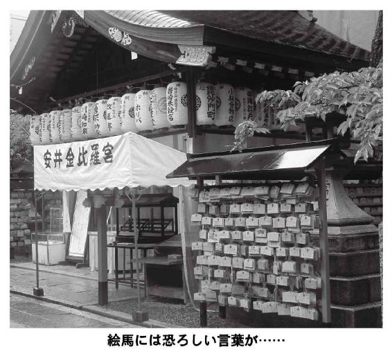
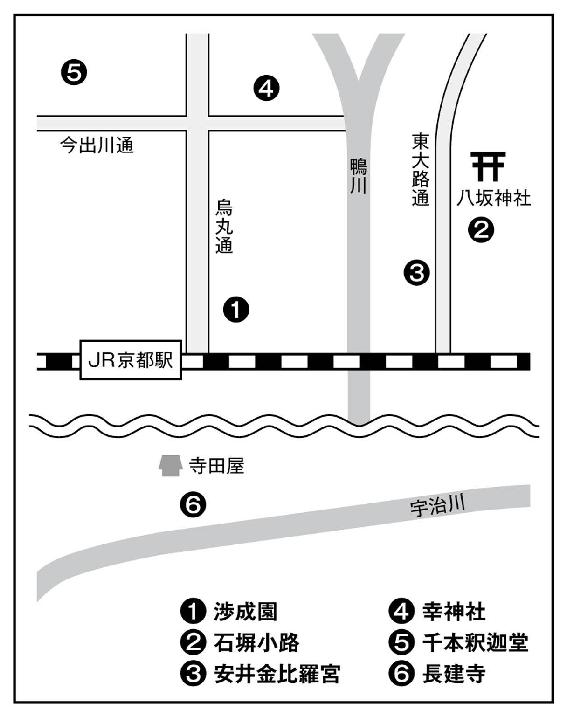

| エロスの記憶 文藝春秋「オール讀物」官能的コレクション2014 | |
| オール讀物編集部編 & 小池真理子 & 桐野夏生 & 村山由佳 & 桜木紫乃 & 林 真理子 & 岸 惠子 & フィリップ・トルシエ & 高橋克彦 & 井上理津子 & 東海林さだお & 鹿島 茂 & 角幡唯介 & 本橋信宏 & 花房観音 & 春日太一 & 柴門ふみ & 大矢博子 & 北尾トロ & 南 伸坊 & 平松洋子 & 川上宗薫 & 団 鬼六 & 阿部牧郎 & 永田守弘 & 渡辺淳一 & 弘兼憲史 & 野坂昭如 & 勝目 梓 & 石田衣良 & 山田風太郎 & 池田満寿夫 & 佐藤陽子 | |
| (2016) | |
＊読む際のご注意、お断り等についてはこちらをお読み下さい。
女流短篇傑作選
ごく平凡な主婦は、指圧師の指に、忘れていたよろこびが
女生徒だけのアートスクール。男性は奇異なほど美形揃い
ああ、ええ匂いや。伯父の熱い息が、太腿にかかって
派手な母と意思のない娘。二人が暮らす港町に現れた男
札差の西門屋と姦婦おきんの、愛欲にまみれた企みとは
大女優、男と女の成熟を語る
サッカー元日本代表監督
官能文学のモーツァルト
特選・官能×文学
勃起しなけりゃ安楽死。首相の暴言でとんでもない法案が
知らない女からの手紙。ぼんやり残る面影と白い裸の姿
条件は挿入しないこと──直哉と弥生は不倫をはじめた
邪淫戒忍法を駆使し、恋人を犯した男達への復讐を誓う
愛と奇跡のラブレター
コラム「長部日出雄の『世界の官能女優たち』」
鎌田美津代が初めて岩井指圧院を訪れたのは、夏の盛りのころだった。
結婚してからずっと、美津代は北関東の小さな町で暮らしている。ひとつしかない商店街にはかろうじてアーケードがついていて、それなりに人通りがあったが、数年前、近くに大型スーパーマーケットができてからは、勢いをなくした。その商店街から少しそれた静かな一角に、岩井指圧院はあった。
買い物帰りに街をうろうろする、という習慣が美津代にはなかった。軽自動車でスーパーまで行き、買い物をしたら、たいていいつもまっすぐ帰宅する。たいがいのものはスーパーで買いそろえることができるからである。
だが、その日、美津代はスーパーには行かず、徒歩で商店街にあるクリーニング屋に夫のネクタイを出しに行った。宴会の時に、油染みをつけてしまったというネクタイの染みぬきを頼むためだった。
用事といえばそれだけだった。暑い日だったので、さっさと家にもどろうと踵を返しかけた時、ふと美津代は、クリーニング屋の横のコンクリート塀に打ちつけられている小さな看板に目をとめた。
『岩井指圧院。ココを右に曲がり、最初の四つ角の左手前。出張も可』とある。古くて錆びの浮いた看板だった。風雨にさらされて傷み、記されている電話番号の一部も消えかけていた。
以前から、そこに指圧院の看板があったことは記憶していた。これまで気にもとめなかったというのに、その日に限ってそれに目が吸いよせられたのは、よほど疲れているのかもしれない、と美津代は思った。
その夏、東京に住んでいる娘夫婦が、孫たちを連れてもどって来た。丸一週間、彼らは実家である美津代の家に寝泊まりし、上げ膳据え膳で羽をのばしていった。
孫は二人とも男の子で、上が四歳、下が三歳のうるさい盛りである。夫の喜久夫と共に縁日に連れていってやった時、夜店で売られていたミドリガメの前から離れなくなった。何がなんでも買ってほしい、と駄々をこねられたので、仕方なしに子亀を二匹、買ってやった。掌にのるような小さな亀だった。
自宅の納戸の奥にしまってあった、古い金魚鉢を引っ張りだし、亀はとりあえずそこに入れた。孫たちはよろこんで金魚鉢をのぞきこんだり、見よう見まねで餌をやったりしていたが、翌朝、金魚鉢の中に亀の姿はなくなっていた。
家の中はもとより、庭中を探したのだが見つからない。亀がいなくなったので孫たちは近所中に響きわたるような声をあげて泣きだした。美津代はそんな彼らをなだめ、三度三度の食事を作っては、また庭におりて亀探しに奔走した。
二日後の朝、一匹は植え込みの陰の大きな石の下、もう一匹は朝顔の鉢植えの後ろにいるのがみつかった。
だが、みつかってみれば、興味もうすれたのか、孫たちはあまり亀に関心を示さなくなった。喜久夫が納戸から、古い電動式の機関車を出してきてやったため、彼らはそれに夢中になっていた。
東京にもどる段になって、娘が眉をひそめ、亀なんか連れて帰るのはいやだ、大きくなったらどうすればいいのよ、と言い出した。孫たちは田舎町の滞在にも飽きた様子だった。娘はそれに乗じてそんなことを言っている、生ぐさい亀なんぞ、東京のきれいなマンションに連れ帰るのはいやなのだ、と美津代は腹立たしく思ったが、買ってやったのは自分なので黙っていた。
結局、亀は置いていく、ということになり、娘婿からは、「お義母さん、よろしくお願いします」と亀の餌代と称して五千円を手渡された。
生来、もめごとが嫌いなたちの喜久夫は、台風が去った後のようになった家の中、金魚鉢の中でごそごそ動いている二匹の亀をぼんやりのぞきこみながらつぶやいた。「鶴は千年、亀は萬年、っていうじゃないか。縁起ものをもらい受けたと思えばいいさ」
「そうねえ」と美津代はうなずいた。「考えてみれば、亀は昔っから、長生きの象徴だったわねえ」
「たっぷり餌食わせて大きくしてやって、長生きのおこぼれを頂戴するか」そう言って短く笑い、夫は亀の甲羅を人指し指でつるりと撫でた。
娘一家が帰ってしまうと、どっと疲れが出た。毎日、眠くて仕方がなくて、全身が凝っているように感じられた。
「指圧」という文字を目にしたとたん、美津代はふと、こういう時こそ、全身をマッサージしてもらえばいいではないか、という気になった。疲れている時に、プロの手でマッサージをしてもらうと、どんなに気持ちがいいか、という話は夫やまわりの人からよく聞かされていた。だが、金を払ってまで、他人に身体をもんでもらいに行こうと思ったことは一度もない。
夏の日盛りのころで、商店街に人通りは少なかった。かき氷を売る店の前で若い娘が数人、つまらなそうにたむろしていた。暑くてけだるい夏の午後だった。あちこちの店先で眠たげな音楽が、中途半端な音量で流されていた。携帯を耳にあてがいながら歩いて来た中年の男が、いかにも不釣り合いな花柄プリントのタオルで首すじの汗をごしごし拭っているのを横目に見ながら、美津代は意を決して、看板が打ちつけられている角を右に曲がった。
美津代は五十二歳。人並みに肩も凝るし、腰痛も経験しているが、耐えられなくなったことはなかった。ちょっとした肩こりや頭痛、腰痛は、ぬるめの湯に浸かってから早めに休めば治った。自宅の階段をふみ外してしこたま腰を打った時も、サロンパスをべたべた貼っていたら、いつのまにかよくなった。
もともと身体は頑丈で、医者にかかることはめったになく、入院したのは出産した時だけである。無料で受けられる町の子宮ガンと乳ガンの検診は、近所の主婦仲間に誘われるので受けに行くことにしているが、血液検査くらいしておかなければならない年齢だ、とわかっていても、身体がなんともないものだから、ついつい先のばしになってしまう。
娘が小学生のころ、感冒から肺炎をおこしかけた時も、ほとんど飲まず食わずで寝ずの看病を続けていながら平気でいられたし、息子が伝染性の腸炎にかかった時も、排泄物を素手で始末していながら、うつされずにすんだ。六つ年上の、公務員をしている夫、喜久夫がインフルエンザにかかり、ひどい咳をしながら自宅療養していた時も、ろくにマスクもかけていなかったというのに、美津代にはうつらなかった。
夜は枕に頭をつけたとたん、深い眠りにおち、朝まで一度も目覚めることなく、ぐっすり眠れる。毎度の食事は途方もなくおいしく食べられて、何杯、お替わりをしても足りないほどである。
娘と違って息子はまだ独身だが、東京の会社で働いていて、めったに帰ってこない。喜久夫との気のおけない二人暮らしで、主婦としてしなければならないことはいくらでも手を抜けるというのに、美津代はせっせと朝から晩まで、家の中を動きまわっていた。
立ち働くのは若いころから好きだった。他にしたいこともなかった。ソファーに寝ころがって雑誌を読んだり、テレビを観たりしていても、すぐに飽きてしまう。そんなことをしているよりも、庭に出て家庭菜園を作ったり、糠床をかきまわしたり、風呂掃除をしたり、台所の油汚れを拭いたりしているほうが、よほど楽しいのだった。
喜久夫からはよく、「嫁は丈夫に限るなあ」とからかわれる。本当にそうだ、と美津代は自分でも思う。
洒落っ気はなく、着るものや化粧にも興味がない。娘時代に着ていたスカートやシャツを今も愛用している。
ジーンズやコットンパンツははいたことがなく、はくのはいつも、丈の中途半端な、ぞろりとした長さのスカートだった。娘はそれをいやがり、帰省するたびに、女らしいプリーツスカートだの、色合いのきれいなフレアースカートだのを買って来てくれたものだが、最近は諦めたのか、何も持ってこなくなった。娘からもらったものは大切に簞笥にしまいこみ、美津代は相変わらず、古いスカートばかりをはいていた。
髪の毛には白いものがどんどん増え続けていたが、相変わらず美容院にも行っていない。伸びれば自分で切ってしまう。肩のあたりで適当に切った髪の毛は、首のうしろで結わえて団子にまとめ、ひっつめ髪にする。そうやっていれば、動きまわる時にも楽だったし、どんなに暑くて汗をかいても、タオルで顔や首をひとぬぐいすれば済んでしまうので便利なのだった。
岩井指圧院は、看板通りの場所にあった。全体が深い木立に囲まれているせいで、一見したところ、ごくふつうの民家のようにしか見えない。和洋折衷と思われる平屋建てで、屋根には色あせた鼠色の瓦が載っていた。
入り口に「岩井指圧院」と墨文字で縦書きに描かれた木製の看板がかけられ、その脇の白いプラスチックのプレートに、「施術時間 午前11時～午後11時 随時出張もいたします」とあった。
建物を囲む木々の幹で、油蟬が暑苦しく鳴きしぐれていた。その騒々しい声に押されるようにして、美津代はこめかみを流れる汗をガーゼのハンカチで拭きながら、入り口に近づいた。
昔よくあった歯科医院を思わせるような、曇りガラスのはまった茶色のドアの、真鍮のノブに手をかけると、ドアは、ぎい、と湿った音をたてて内側に開いた。同時に、ドア上部につけられていた小さなベルが、濁ったような音を放った。
かすかに湿った黴のにおいがした。嫌いなにおいではなかった。美津代が生まれ育った、ここよりももっと山奥の田舎町では、あちらこちらに、こういうにおいのする家があったものだった。
先客はいないようで、三和土に脱ぎ置かれている履物はなかった。黒いマジックで「岩井指圧院」と横書きに書かれた黄色いビニールスリッパが、一列に並べられていた。靴箱の上の陶器には、数本の紫色のリンドウの花が活けられていた。あたりはひんやりと涼しかった。
誰も出てくる気配がない。美津代は奥に向かって「ごめんください」と声をかけた。
薄墨を流したように仄暗く見える奥から、足音が響いたかと思うと、「はぁい」と明るい声がして、女が現れた。ジーンズにピンク色の、襟ぐりの広く開いたＴシャツ姿で、腰にフリルのついた白いエプロンをつけ、ボブカットにした髪の毛の奥では銀色のロングピアスが揺れていた。ほっそりとした体型で若く見えるが、年齢は自分より少し下といった程度だろう、と美津代は思った。
「こちらでは指圧とかマッサージ、していただけるんですよね？」
女は両眉を大きくあげ、わずかに小馬鹿にしたような顔つきをした。どうしてそんな、わかりきったことを聞くのか、と言いたげだった。娘も時折、そういう表情をする、と美津代は思った。
女はうなずき、「もちろんです」と言ってから、愛想よく微笑んだ。「いらっしゃいませ。お暑い中をようこそ」
「あのう、予約、してないんですけど、今からでも大丈夫ですか。もし、難しいようでしたら、かまいませんが......」
「大丈夫です。今ちょうど、どなたもいらっしゃらないので、すぐに始められます。どうぞお入りください」
美津代は踵がすり減った布製の茶色いフラットシューズを脱ぎ、スリッパに履き替えながら、おずおずとねた。「......料金のほうは、いかほどになります？」
「ええっとですね、こちらが料金表になります。三十分全身コースからございまして、三十分ですと二千五百円。一時間ですと五千円。他にオプションで、腕だけ、足だけ、というコースをつけ加えることもできまして......」
女は美津代に透明なビニールケースに入れられた料金表を見せ、そう説明した。
美津代は、亀の餌代に、と言って娘婿が置いていった五千円を思い浮かべた。三十分コースにして、残りは貯めておこうかとも思ったが、初めて贅沢な経験をしようという時にケチケチする必要もない、と思いなおした。美津代は五千円コースを頼んだ。
女はにこやかにうなずき、いったん奥に戻ってバインダーにはさんだカルテのようなものを持って来た。氏名と住所、電話番号、年齢を書く欄の他に、身体のどの部位がどんなふうに不調か、ということを記す欄があった。
年齢の欄に五十二と書くのはいやだったが、治療のために必要なのだろう、と思い、美津代は正直にすべての欄を埋めた。
書いたものを女に渡すと、女はいっそうにこやかに、「では施術室までご案内いたしますので」と言った。施術室は、入り口から右奥に伸びる、うす暗い廊下のつきあたりにあった。
明るい蛍光灯が灯された広々とした部屋だったが、窓はなかった。中央に二つの施術台が並べ置かれ、黄土色の薄いカーテンで仕切られていた。施術台の足元には大きな籠があった。室内に小さく流れているのは、有線放送のものと思われる歌謡曲だった。
奥の施術台に案内された。美津代がとまどいながら「服、脱ぐんですか」とねると、女は微笑みながら首を横に振った。
「いいえ、そのままでどうぞ。台の上にお座りになってお待ちください」
「すみません。初めてなもので、よくわからなくて」
「そうでしたか。ほんとにねえ、今年は暑さが厳しくて。エアコン、強すぎませんか。大丈夫ですか」
「あ、はい。大丈夫です」
何かすることでもあるのか、女はそそくさと部屋から出て行った。入れ代わるようにして、男が中に入って来た。淡い水色の、ドクタースーツのようなものを着ていた。いくらか額が禿げあがっているのと、色白で眉がうすい、ということ以外、これといった特徴の何もない、表情の乏しい、小柄な中年の男だった。
「一時間コースですね」とかれたので、美津代は「はい」とうなずき、言われるままに施術台に横になった。男は黄土色のカーテンを引いた。
カーテン内にエアコンの冷気を取り入れるためなのか、天井近くに小型扇風機がとりつけられていた。男は紐をひき、扇風機のスイッチを入れた。
カーテンが作る小さな空間に、扇風機のまわる音がこもったようになって聞こえてきた。美津代は男と二人きりになったことを感じた。
皺だらけの花柄の、垢抜けないスカートをはいてきたことを思い出し、恥ずかしくなった。娘が買ってきてくれた、プリーツスカートでもはいてくればよかったと後悔した。
「失礼します」と言いながら、男は美津代の顔に薄いガーゼのタオルを載せた。タオルは薄かったので、呼吸は自由にできた。かすかにミントの香りがした。
世間話をしたほうがいいのか、それとも黙っていたほうがいいのか、迷った。美津代は自分が緊張を覚えていることを知った。
「凝っておられますね」と男は、横向きに寝かせた美津代の首や肩をもみ始めてまもなく、静かな口調で言った。外観にも特徴がないが、声にも何の特徴もなかった。「お疲れがたまっているご様子です」
「やっぱり、そうですか。東京から娘夫婦が孫たちを連れて遊びにきてたものですから。相手させられて、それでぐったり、くたびれちゃったみたいで」
「お孫さん、ですか」
「ええ。私、早く結婚して、早く子供を作ったんですよ。そうしましたら、娘もやっぱり早く結婚して子供を作っちゃって。だから、この年でもう孫が二人もいるんです。息子もいて、息子が結婚して子供を作ったら、還暦になる前に、私、三人も四人も孫をもつことになりそうで......」
かれもしないのに、べらべらしゃべっている、と思うと、恥ずかしくなった。つまらないことばかりしゃべっているので、男は内心、呆れ、せせら笑っているのではないか、とも思った。肩や首、腕をもまれているというのに、格別気持ちがいいとは感じられず、むしろ美津代は、この初めての情況にどのように対応すべきかわからなくなって、かすかに混乱した。
男は黙ったまま、美津代の身体をもんでいる。沈黙に耐えきれなくなり、美津代は思いついた質問を発した。「さっきの方は奥様ですよね」
「は？」
「受付をなさってた方。お店はご夫婦で経営なさってるんですね」
「いえいえ、とんでもない。私は独り者です。あれは私の妹です」
「え？ あ、そうでしたか。ごめんなさい。奥様だとばっかり......」
「妹は去年、子連れで離婚したんです。仕事が見つかるまでの間、受付仕事をやらせてほしい、と言われまして。ちょうど、前にいた女性がやめたばかりだったので、引き受けたのはいいですが、火曜と木曜と日曜日は休みにしろ、って言ってくるし、夕方は五時に帰してくれなきゃ困る、って言うし。それで給料を払ってやってるんですから、いないほうがよっぽど気楽です」
美津代は背中を揺らして笑った。少し気がまぎれた。
「こちら、ずいぶん古くからあるみたいですね」
「もともと父親が始めた店なんです。わりと早くに亡くなって、後は私が引き継ぎました」
「こういうお仕事、大変なんでしょう？ 朝から晩まで、ですものね」
「ええ、まあ、そうですが、他にできることは何もないですし」
「定休日はいつ？」
「基本的にございません」
「ほんとに？」
「お客様がいない時は自動的に休みになりますから。いらっしゃればいつでも、治療させていただきますし」
「出張もなさるんでしょ？」
「いたします。車でどこにでも伺います」
「そんなに働いて、ご自分が疲れませんか」
「別に。もう慣れてますんで」
男がそこで口を閉ざした様子なので、美津代もそれ以上、質問を発するのは控えた。男の手は、次第に美津代の脇腹のほうに下がっていった。横向きのままの姿勢でいた美津代の骨盤のあたりに、男の手があてがわれた。
力強くもまれると、ひどくくすぐったいような感覚が拡がった。美津代は慌てて身を固くした。男は即座に、手の力をゆるめてくれた。
男の指は太く厚く、掌は少し湿っていた。力の入れ具合は申し分なかった。十本の指と掌は、或る決められたリズムに則って動いているように見えて、ただ単に規則的なのではなく、何かの瞬間にそれは思いもよらない、変則的なリズムに変わった。そして気がつけば、湯のような温かなものが、腰から腹部にかけて染み渡っていくような気になるのだった。
くすぐったい感覚は遠のいたが、代わりに漣が寄せてくるかのような、ざわざわとした、落ちつかない気分にさせる感覚が下腹部に拡がった。かすかな、目に見えない、快楽の火種が生まれつつあることに、美津代は気づいた。
それはおそろしく甘美な蜜と化して、どんどん拡がっていきそうになる。しかし、思いきって蜜の波に全身を委ねようとすると、その寸前でうまく止められてしまう。何度か焦らされているうちに、下腹部のあたりが、うすぼんやりと火照り始めてきた。
いけない、いけない、と思うのだが、とめどなく気持ちがよくなってくる。呼吸が荒くなり、襲ってくる恍惚感から逃げる術もなくなったように感じられる。
施術室には『赤いスイートピー』を歌う松田聖子の、甘ったるい声が流れていた。若いころ、美津代がよく聴いた曲だった。
自分の軽トラックに松田聖子のカセットテープの入ったラジカセを積み、まだ二十歳かそこらだった美津代を何度もドライブに誘い出した男がいた。水道の修繕屋の仕事をしていた、三つ年上の男だった。
夜、親に黙って家を抜け出し、川べりや林の奥で男と性交した。誰もいない山道の途中で車を停め、荷台で交わったこともあった。月明かりが、荷台に転がるスパナやレンチ、油汚れのついたぼろ切れを淡く照らしていた。生まれて初めて肉の快感を知り、はしたないほど声をあげてしまったのもその時だった。
半年ほど関係が続いた後、修繕屋は新しい仕事を見つけ、東京に行くことになった。引っ越しの前の晩、美津代は修繕屋と街道沿いにあるラブホテルに入った。
そんなところに行くのは初めてだったので、さぞかし興奮するだろうと思っていたが、何か冷やかなものが身体の奥底に沈殿していて、気分が乗らなかった。最後にもう一度、軽トラックの荷台で交わりたい、と思ったが、さすがに口にはできなかった。
あと少しで定年を迎える喜久夫とのふれあいは、最近、まったくなくなっている。子供が生まれる前は、夕方、役所から帰宅したばかりの夫に抱きついていき、そのままベッドになだれこむこともあった。子供が生まれてからも、夜、疲れて寝入ってしまった夫の性器を愛撫して、半分眠ったままの夫と交わることもあった。喜久夫が避妊に気をつけてくれなかったら、自分たち夫婦には今、一ダースの子供がいてもふしぎではない、と考えることもある。
だが、波が退くように夫と性を交わすことが少なくなっていき、やがてそんなことは何も考えずにすむようになってからは、美津代の中で欲望の嵐は自然に鎮まっていった。今ではもう、ほとんどその種の感覚に苛まれることはなくなっている。
時折、ふとした瞬間に、覚えのあるきが腹部から胸にかけて走り抜けていくこともないではないが、だからといって、別段、困ることもなかった。バタバタと動きまわって、やり残した家の中の仕事を済ませているうちに、性の小さなきなど簡単に消えてしまい、思い出すこともなくなるのだった。
男の手は、ねっとりとした動きで美津代の骨盤を行き来していたが、美津代がどうにもこらえきれなくなるほどの感覚にとらわれて、あたりかまわず喘ぎ声をあげそうになった瞬間、まるでそれを察知していたかのように、するりと足のほうに移された。ふくらはぎやくるぶし、足の指をもまれ始めると、今しがたの強烈な快感は急速に消えていった。美津代はほっとした。
だが、それも束の間のことにすぎなかった。男に「はい。次は左を下に横になってください」と言われて、姿勢を替えてからは、再び同じことが繰り返された。
しかも、すでに右を下にして横になっていた時に知ってしまった感覚は、二倍にも三倍にもなって跳ね返ってきた。美津代は耐えきれなくなり、思わず身をよじった。
両耳が火のように熱くなった。呼吸が荒くなってくるのをこらえようもなくなった。身体が勝手に潤っていくのが感じられた。美津代は思わずもまれている骨盤に手を伸ばし、男の手を勢いよく払いのけた。「すみません、そこはもう......」
「失礼いたしました」と男は静かに言った。
紳士的な言い方というよりは、事務的で機械的な言い方だった。他には何も言わなかった。美津代の骨盤から離れた手は、当たり前のように足のほうに移っていった。
自分の反応に気づいていないはずはないのに、と美津代は顔にかけられたガーゼの下、やっとの思いでこらえぬいたものに安 のため息をつきそうになりながら考えた。
のため息をつきそうになりながら考えた。
初めてマッサージを受ける女、と知って、いたずら心が起こったのか。それとも、もともとこの種の「サービス」を行なう店で、この男は女の性感のありどころを熟知しているのか。
だが、どう考えても、このいかにも古めかしい、先代から続いているという指圧院が、そうした怪しげなサービスを施す店とは思えなかった。見たところはごくありきたりな、田舎町の指圧院にすぎない。そもそも、洒落っ気もなく、日に焼けて小じわの浮いた、贅肉をあちこちにたっぷりとつけている自分のような中年女に、そんなサービスを施したところで、彼に何かの得があるとは思えなかった。
男には好色そうなところがかけらも見られなかった。むしろ、性とは無縁の印象すらあった。たとえ、職業柄、それを隠し通しているのだとしても、自分の店の施術台で、女客によがり声をあげさせるのを喜ぶような人間には見えなかった。
きっとこれは、自分の体質的なものなのだろう、と思うと、美津代はひどく恥ずかしくなった。おそらくは自分のせいであることは間違いないが、悪意がなくとも、自分をこんなふうに感じさせた男が急に憎らしくなった。不潔だ、とすら思った。一刻も早く、男の手から逃れたかった。やっぱり三十分コースにしておけばよかったのだ。そうすれば、きっと、こんな恥ずかしい思いはせずにすんだのだ。
「では、最後に仰向けになっていただけますか」
機械的にそう言われ、美津代は男への憎しみを抱いたまま、仕方なく仰向けになった。男の十本の指が、まんべんなく美津代の鎖骨にあてがわれた。指は限りなく乳房に近づくのだが、危ういところでまた離れていく。首すじや胸元を押され、もまれ、撫でられて、とどまっていた快感の渦が全身に拡がった。
美津代は破れかぶれの心持ちになった。どうにでもしてほしい、と叫びたくなった。それどころか、今ここで、自分の身体をもみしだいている男がほしくなっているようにすら思えた。
だが、美津代の口から迸り出てきたのは、「もうやめてください」という、怒りをこめた言葉だった。「もういいです。私、帰りますので」
顔に載せられていたガーゼを自分ではらいのけ、髪を振り乱すようにして起き上がり、男をにらみつけた。
男は無表情のまま、眉ひとつ動かさずに、「何か」と言った。「何か粗相がございましたか」
そのいかにも職業的な言い方に、美津代は思わずかっとなった。知ってるくせに、と思った。気づいていながら、あくまでも職業的な態度を崩そうとせずにいる男に腹が立った。といって、くだけた物言いで、何かいやらしいことを言われたほうがよかった、というわけでもなかった。こんなにも何事もなかったような顔をされると、かえって馬鹿にされたような気がしてくるのだった。
「ともかく」と美津代は我に返ったようにせかせかとスカートの皺をのばし、施術台から降り立った。ずっと耳から遠のいていた小型扇風機のまわる音が、妙に大きく響いてきた。「もう、いいんです。料金、お支払いします。五千円でよかったんですよね？」
サービス料として、上乗せを要求されたらどうしようか、と思った。もしそうなったら、ここを出てすぐに警察に駆け込み、指圧師から性的なふるまいを受けたと訴える覚悟を決めた。
だが、男は上乗せについては何も言わなかった。美津代が籠の中から買い物用のエコバッグを取り上げ、財布を開いて五千円札を男に手渡すと、男は恭しく一礼してそれを受け取った。
「ありがとうございました。ただいま、領収証をお持ちします。少しお待ちください」
男が部屋から出て行った。待っているのが恐ろしくなった。小型扇風機が単調な音をたててまわり続けていた。美津代はエコバッグを丸め、胸に抱えて施術室から飛び出した。
妹だという受付の女が、びっくりしたような顔をして美津代の前に立った。「どうかなさいました？」
「いえ」と美津代は言った。トイレを拝借したい、などと言ってごまかそうかと思ったが、あの男に身体をもまれた後でトイレに行きたがること自体、何か途方もなく恥ずかしいことに思われたのでやめた。
「こちらが領収証になります。ありがとうございました。またお越しください。出張もいたしますので、その際にはこの領収証にある電話番号に......」
美津代は女から領収証をもぎ取ると、はき古したフラットシューズに足をつっこんで、逃げるように外に出た。
その日を境に、鎌田美津代の人生は大きく変わった。頭では「いやな経験」としか思えなかったというのに、身体が快感を覚えていた。忘れようとしても、施術台の上で味わった感覚が忘れられなくなった。
家事をしていても、夫と並んでテレビを観ていても、頭の片隅で常に男からされたことを再現し続けるようになった。ああしてこうして、こうなった、と順を追って再現していくうちに、身体が熱くなってくる。なんと浅ましいこと、と思うのだが、やめられない。気が変になりそうだった。
一週間が過ぎ、二週間が過ぎた。火曜日、美津代は自分でも信じがたいほど強い衝動にかられ、再び徒歩で岩井指圧院を訪れた。毎週火曜と木曜、日曜が、受付をしている女が休みの日であったことを美津代ははっきり覚えていた。
先客がいるか、もしくは男が出張しているかしていれば、そこで目がさめるに違いない、と思った。そんなふうに自分に言い訳をしながら、結局、そうではないことを望んでいることを強く意識しつつ、美津代は木立に囲まれた、瓦屋根の建物の玄関の前に立った。
真鍮のドアノブを回すと、ドアは初めて訪ねた時と同様、小さなベルの音をたてながら内側に開いた。中は静まり返っていた。靴箱の上の花器にはリンドウではなく、赤い小菊が活けられていた。
「ごめんください」と美津代は奥に向かって声をかけた。
心臓の鼓動が烈しくなった。この場で倒れてしまうのではないか、と思うほどだった。
ややあって、スリッパの音が響き、あの男が現れた。先々週と同じ、水色のドクタースーツのようなものを着ていた。眉が薄いのも、後退しつつある額も、ひんやりと冷たく感じられる、男にしてはつややかな白い肌も、何もかもが同じだった。
「鎌田ですが」と美津代は名乗った。貧血を起こしそうだった。「......今、空いてますか」
「空いてございます」と男はまっすぐに美津代を見つめながら、不自然なほど丁寧に言った。
これといった表情のない顔つきは相変わらずだった。男が何を思っているのか、想像もつかなかったが、物欲しげにのこのこやって来た女客を小馬鹿にしているようには見えなかった。
美津代はいくらか安心し、「じゃあ、お願いします」と言った。
「かしこまりました。本日のコースはいかがいたしましょう」
「前と同じ、一時間コースで」
男は深くうなずき、「では、あちらにどうぞ」と言った。
その日、施術台の上で、美津代は痴態を男に晒した。そうなることはわかっていたが、それは想像以上であった。
男の妹が休みの日であることも、美津代を大胆にさせていた。男が何を目的にして美津代の骨盤を重点的にもんでいるのか、美津代のあられもない乱れ方を目の当たりにして、何を思っているのか、こんなことをしてどうするつもりなのか、想像をめぐらせる余裕すらなかった。
その間中、美津代の耳には一切の音が入らなかった。室内に流れている音楽も、小型扇風機のまわる、けだるい音も聞こえなかった。美津代は声をころして喘ぎ、身をよじった。
その日はいて行ったのは、娘からもらったまま、簞笥の奥深くにしまっておいたベージュの真新しいプリーツスカートだった。プリーツスカートの裾から男の手が入ってきて、自分の股間に触れようとしてくるのを美津代は拒まなかった。それを望んでいたと認めるのは自分でもいやだったが、拒むことはできなくなっていた。
男は終始、黙りこくっていた。興奮している様子はみじんもなかった。呼吸も乱さなかった。ため息ひとつ、もらさなかった。
だが、美津代は自分の喉の奥からもれてくる、悲鳴にも似た喘ぎ声をこらえきれなくなった。助けを乞うようにして、右手で男の着ていた水色のドクタースーツの上着の裾にしがみついた。美津代はほとんど赤子のように顔を歪め、涙すら浮かべながら、果てた。
頭の血管という血管が膨れ上がり、破裂しそうになっていた。果てた後、それが鎮まるまで時間がかかった。男は辛抱強く、そばで美津代が落ちつくのを待っていた。
顔をそむけ、呼吸を整えているうちに、次第に現実感がもどってきた。小型扇風機のまわる音が聞こえてきた。室内に流れている有線放送では、郷ひろみが恋の歌を歌っていた。
美津代は手の甲で、玉のように浮きでた汗を拭い、やっとの思いで身体を起こした。「帰ります」
「大丈夫ですか」と男はねた。低く、聞きとれないほど小さな声だった。
大丈夫ではない、と言ったら、どうするつもりなのか、と思ったが、黙っていた。美津代は男から顔をそむけたまま、小さくうなずいた。乱れた髪の毛を手で整え、スカートの裾を直し、籠の中からエコバッグを手に取った。財布を開け、五千円札を取り出し、男に渡した。
男は前回と同じことを言った。「ありがとうございます。ただいま、領収証をお持ちします。少しお待ちください」
ゆっくりと部屋から出て行こうとした男の背が憎く感じられた。男の冷静さが憎かった。侮辱を受けたように思った。
美津代は怒りをにじませながら、男の後ろ姿に向かって言葉を投げつけた。「ここは......ここは......こういうところなんですか」
男はわけがわからない、といった顔をして振り返った。薄い両眉が大きくつり上がるのが見えた。「こういうところ、とおっしゃいますと？」
「今、今......」と美津代は息苦しさをこらえて言った。「今、私にしたようなことを客にするようなところ、という意味です」
「まさか」と男は言った。力なくため息をついた。「そんなこと、あるわけがないじゃありませんか。ここはご存じの通り、ただの指圧院です。私はただの指圧師です」
「そう？ じゃあ、どうして私にこんなことをしたの」
「さあ」と男は言った。いくらか困惑したように、ちらりと美津代を上目づかいで見た。「私にもよくわかりません」
「わからない、って、あなた、それ、いったい......」
「おそらく」と男は言葉を選ぶようにして続けた。「鎌田様が、つまり......はっきり申し上げますが、そのような反応をされる体質でいらっしゃるようなので、私はただ、そのお手伝いをさせていただいた、というだけのことだろうと思います」
美津代は「何言ってるの、他人事みたいに」と怒りをにじませながら低く怒鳴った。「私はそんなこと、頼んだ覚えは......」
男はおよそ初めて、美津代に向かって薄く微笑んでみせた。爬虫類に微笑まれたような気がした。
「今さら何を」と男は美津代を憐れむように、諭すように言った。「ご気分がよくなられたのでしたら、それでよろしいではないですか」
建物の外で鳴き狂っている油蟬の声が、急に大きくなったように感じた。火照り、潤い、しびれたようになっている身体の奥に意識を向けながら、美津代は押し黙った。
また自分はきっと、ここに来る、来るに違いない、と思った。火曜か木曜を選び、やって来る。そう思うと強い恐怖心がわきあがった。
こんなことを続けていたら、いずれ男から犯され、いいように扱われ、そのうち殺されてしまうのではないか、と思った。そこまでいかずとも、夫に気づかれ、悶着が起こり、子供たちからも見放され、町中のになり、ここに住めなくなるかもしれない。
だが、それらはあくまでも、美津代が自分のために用意している、ごく真っ当な恐怖心に過ぎなかった。
美津代の中には別の、もっと烈しい恐怖心があった。男に欲望を鎮めてもらうのみならず、そのうち自分から男を求めてしまうのではないか、という恐怖心だった。
水道の修繕屋との性交に夢中になり、月明かりに照らされながら軽トラックの荷台で交わった時の自分は死んでいなかった。役所から夫がもどるのを待ちかねて、今すぐ抱いてほしいとせがんだ時の自分も、今の自分と同じ自分なのだった。
「領収証なんか、いりません」と美津代は言った。言いながら、エコバッグを抱えて歩きだした。
男は何も言わずに、美津代のために施術室のドアを開けてくれた。油蟬の鳴きしぐれる声が、轟音のようになって建物を包んでいた。蟬の声以外、何も聞こえなかった。
美津代はその後、月に二度ずつの割合で岩井指圧院に通うようになった。行くのはいつも火曜日か木曜日だった。
先客がいたり、男が出張中だったりしたら、ただちに引き返す、と自分の中で決めていた。あらかじめ予約などはしたくなかった。行き当たりばったり、ということにしておきたかった。
一度だけ、行ってみると、入り口のドアノブのところに、「只今、出張中につき、施術できません。改めてお越しください」と書かれた札が下がっていたことがあった。ほっとする反面、残念に思った自分がいた。だが、男が店にいなかったのはその時だけだった。
施術室で行なわれることは、毎回同じだった。決められた習慣のようになってくると、当初のような気持ちの乱れも次第に少なくなっていった。
代わりに、肉体の反応はとどまるところを知らず、さらに烈しさを増していった。男に恋をしているわけでもなく、好きになったのでもない。好いてほしいと思っているのでもない。それどころか、不気味で生理的に嫌いで、憎く思うことも度々ある。それなのに、美津代は男に執着しそうになっている自分を感じては、そら恐ろしくなるのだった。
喜久夫が何か怪訝に思っている様子はみじんもなかったし、喜久夫に気づかれるようなまねは死んでもするまい、と思っていたが、こんなことをずっと続けていけるはずはなかった。だいたい、こんなことのために、毎月一万円の無駄な出費をするのも、考えてみれば馬鹿げている。欲望を鎮めるためだけに通いつめ、金を払うなど、男ならまだしも、ふつうの女がやることではない。
孫のいるような女が淫らになることはあり得ない、と信じている人間が大勢いることは、美津代にもよくわかっていた。女でなくなった女は、そのように生きるべきだ、と決めつけている人も大勢いる。
女でなくなった女が、女のようにふるまうことを世間はもっとも嫌う。だから女も、たとえ自分が女でなくなったなどと、つゆほども思っていなくても、内心、ぺろりと舌を出しながら、とりあえずは表向き、それに合わせるような顔をして生きるのがうまくなった。それだけのことなのに、やっぱりこんなことが世間に露顕したら、と思うと、どんな扱いを受けるか簡単に想像できて、恐ろしくてたまらない。
こういうことを続けていると、そのうち、男が親しい人間に美津代のことを明かしてしまうだろう、という不安もあった。酒の席などで、実はうちにこんな客がいてね、ということをもらし、驚いた相手は興味をもって、すぐにそのことを誰かにしゃべるかもしれない。
狭い町である。にのぼるのも時間の問題だろう。
あと一度、もう一回だけ......と指圧院に通い続けながら、秋がめぐり、冬がやってきた。十二月に入ってから、美津代は男が、何かちょっとした拍子に性交を要求してくるのではないか、と思うようになった。
意味ありげな目つきで美津代を眺めることもなく、卑猥な言葉も吐かず、ただ、もくもくと美津代を満足させるためだけに手を動かしている男だったが、さすがに欲望の制御がきかなくなりつつあるのか、それとも、長くかかわってきて、それなりに美津代の肉体になじんできたせいなのか、行為の最中、鼻息を荒くしたり、こらえきれなくなったような喘ぎ声をもらしたり、美津代の手をつかんで、自分の性器に近づけようとする素振りをみせることが多くなった。
何かちょっとしたきっかけがあれば、この男は自分と性交してしまうに違いない、と美津代は確信した。へたをすれば襲われるような形にもなりかねない。そう思うと、心底、恐ろしくなったが、一方では、どれほど恐ろしくても、この先、何が起こるのか、見届けたいという気持ちもあった。
犬でも子供でも、騒ぎたいだけ騒がせておけば、しまいには泣き疲れ、おとなしくなるものだ。この厄介な欲望というものも、同じなのかもしれない、と美津代は考えた。鎮めよう鎮めようとすればするほど、火の勢いは増して手がつけられなくなる。どうにでもなれ、と開き直っていれば、そのうち収まるところに収まって、結論が出るのかもしれなかった。
暮れが近づいた。息子は三十日に帰省する、と連絡してきた。娘一家も、例年通り、三十日にやって来る。今年もまた、みんながそろう賑やかな正月になる。息子は女友達を連れて来たい、と言っていた。それはきっと嫁さん候補になる子なのだ、と夫は言い、何度かその話題を持ち出しては、にやにやしている。
美津代はいつも以上に忙しく働かねば、と奮い立った。いよいよ、息子の嫁になるかもしれない女の子がやって来る、と思うと、娘の結婚が決まった時以上に誇らしい思いに包まれた。
息子から、東京でつきあっている女の子を紹介されるのは初めてだった。どんな子であれ、かまわない。腕によりをかけたごちそうでもてなそう、と美津代は心に決めた。
そうやって自分を忙しくさせ、年末年始を迎える準備の中に追いこんでいくのは気分がよかった。こんなふうにしているうちに、岩井指圧院の男のことなど、忘れていくような気がした。実際、すっかり忘れてしまい、日に一度も思い出さずにいることもあった。
男から受ける性的行為を思い出し、身体を熱くしているひまがあったら、保存用の豆を煮たり、障子の張り替えをしたり、息子たち用のふとんを干したり、門松や注連飾りの予約注文をしたりしなければならなかった。そして、そうやっているうちに、身体の火照りは鎮まっていき、気がつくと美津代は、鼻唄まじりに雑巾で窓ガラスを磨いたりしているのだった。
クリスマスも終わり、喜久夫の役所が御用納めになった二十八日、喜久夫の高校の同窓会が開かれることになった。同窓会といっても、地元で暮らして、日頃から親しくしている五、六人の男が集まり、近くの温泉に一泊して忘年会を兼ねた懇親の場をもつ、というだけのことだったが、喜久夫は毎年、その会に参加するのを楽しみにしていた。
二十八日は御用納めの後、そのままみんなで温泉に向かう、という段取りになっており、喜久夫は小さなボストンバッグに替えの下着や靴下を入れて出勤していった。一泊といっても、翌日は温泉宿をチェックアウトしてすぐに戻ってくる。喜久夫が戻ったら、一緒に車で正月用の食料の買い出しに行く約束になっていた。
朝、いつものように喜久夫を送り出し、美津代はその日も、しなければならないことを多く抱えて、忙しく動き回った。年賀状はとっくに出したが、書き忘れていた人がいたことを思い出し、郵便局まで走ってバラ売りの年賀状を買ってきた。直筆で賀状を書いてからは、それをまた、投函しに行き、ついでに銀行にも寄った。
そんなふうにして、慌ただしく午後が過ぎていった。冬の日暮れは早く、まだ五時前だというのにあたりはもう、暗くなっていた。
今夜の食事はひとりだから、簡単にすませようと思った。夜は久しぶりにのんびりテレビでも観て、早めに休むつもりだった。
夕食には何を作ろうか、と冷蔵庫の扉を開けた、その時だった。ふわりと中から立ちのぼってきた冷気に頰を撫でられた瞬間、美津代はどういうわけか、指圧院の男のことを思い出し、その場に凍りついたようになった。
やはり忘れていなかったのか、と怖くなった。忘れたつもりでいながら、心の奥底では絶えずあのことを考えていたというのか。求めていたというのか。
冷蔵庫の扉を元通りに閉め、玄関灯を灯しに行った。静まりかえった家の中にいるのが落ちつかなくなって、居間のテレビをつけた。古い時代劇の再放送が流れてきたが、美津代の目には何も映らなかった。
喜久夫が今年の同窓会を休んでくれればよかったのに、と美津代は思った。今夜、誰もいない家でひとりになる、ということが、あの男のことを思い出させたのだ。夫がそばにいたら、絶対にこんな気持ちにはならなかったのだ。
いったん思い出してしまったことは、なかなか消えてくれなかった。台所に行き、その必要もないのに、大きなキャベツを二つ切りにし、まな板の上で手早く千切りを作り始めた。だが、山のように千切りを作っても、気持ちの揺れは治まらなかった。
諦めて、まだ早いと思ったが、自分のための夕食を作り始めた。朝の残りのごはんに、大根とあぶらげの味 汁。喜久夫が役所の同僚からもらってきた干物を焼き、ほうれん草を茹でてごま和えを作り、食卓に運んだ。
汁。喜久夫が役所の同僚からもらってきた干物を焼き、ほうれん草を茹でてごま和えを作り、食卓に運んだ。
テレビのニュースを見ながら食事をし、食べ終えてからすぐに、食器を洗って片づけた。食後のお茶をいれ、みかんをひとつ、剝いて食べ、夕刊にざっと目を通した。そうしながら、美津代はふと、壁に掛かっている時計を見上げた。
七時十分前だった。自分が何を考え、何をしようとしているのか、よくわかっている。なのに、それを決して認めようとしていないことも承知していた。
美津代は立ち上がり、居間の片隅の水槽で飼っている二匹の亀に餌をやりに行った。亀は夏よりも大きくなっていた。これをうちで飼うことになった直後、あの男を知ったのだ、と美津代は思った。
身体が火照り、呼吸が荒くなってきた。恐怖と不安がないまぜになっているというのに、言い訳がましく「これが最後」と自分に言いきかせながら、次に自分がとるであろう行動が、美津代には信じられない。
美津代はリモコンを使ってテレビを消した。あたりは静かになった。どこか遠くで犬が吠えている。亀が水槽を動きまわる、ごそごそとした気配が伝わってくる。
もう一度、掛け時計を見た。七時になろうとしている。喜久夫は今頃、温泉宿で仲間と鍋をつつきながら、焼酎のお湯割を飲んでいることだろう。
美津代は自分の携帯電話を手にとった。若い娘のように、じゃらじゃらとつけているストラップが、手の甲を打ちつけた。
だが、電話番号を入力していなかったことを思い出した。予約をする気がなかったから、番号を登録する必要はないと思っていた。
携帯を手にしたまま、美津代は台所に行き、輪ゴムやビニール袋、店屋物をとった時についてきた古い割り などを入れてある、食器棚の抽斗をあけた。奥のほうに手をのばし、岩井指圧院に初めて行った時、男の妹から渡された領収証を探し出した。
などを入れてある、食器棚の抽斗をあけた。奥のほうに手をのばし、岩井指圧院に初めて行った時、男の妹から渡された領収証を探し出した。
再び居間に戻り、カーペットの上に置いてある炬燵に向かって座った。ひと呼吸おいて、領収証にあった電話番号のボタンを押した。緊張のきわみにあるはずなのだが、美津代は自分が冷静でいることを感じていた。実際、冷静だった。
コール音が続いた。誰も出ないのか、と思って、ひどく失望しかけた時、「お待たせしました。岩井指圧院でございます」と応じる男の声がした。留守番電話から流れてくる音声のように聞こえたが、美津代が「もしもし」と呼びかけると、「はい」と応えてきた。
「鎌田です」と美津代は言った。「岩井さん、ですね？」
男の苗字を口にするのは初めてだった。男は「そうです」と言ってから「こんばんは」とつけ加えた。
「どうも」と美津代は言った。「今日はね、出張をお願いしたいんです。うちに来ていただけますか」
それとはわからないほどの、わずかな空白があった。男はひと呼吸おき、「かしこまりました」と言った。「何時に伺えばよろしいですか」
「九時か十時。どっちでもいいです」
「そうですか。では、九時ということではいかがですか」
「それでいいです」
「承知しました。九時にご自宅まで伺います」
すぐさま、カルテを持って来たらしかった。ガサガサという、紙がこすれる音がし、男は美津代が自分で記入した自宅住所を復唱した。「ご自宅はこちらですね」
「そうです。わかります？」
「車にナビがついていますので」
思わず、今夜はひとりなのだ、と言いそうになった。男は、美津代の家族が家にいると思っているかもしれない。ふつうはそう思うだろう。そうではないことを知らせたかったのだが、なぜ、恋人でも、好きでもない相手にそんなことをいちいち知らせたくなるのか。
「ではよろしく」と美津代は言い、慌ただしく電話を切った。
携帯を炬燵の上に置いたとたん、それまで感じなかった緊張が襲ってきた。美津代は身体から力が抜けたようになり、身を起こしていられなくなって、炬燵の上につっぷした。
ついにやってしまった、と思った。自分からあの男を誘いこんでしまった。こんなことをしていいのか。性懲りもなく発情し続け、いったいどうしようというのか。これはいつまで続くのか。自分はどうかしているのではないか。
だが、これで最後なのだから、と美津代は自分に強く言いきかせた。本当にこれを最後にして、終わったら身を清め、新しい年を家族みんなで迎えるのだ。黙ってさえいれば、誰にもわからない。だからちっとも、気に病む必要はない。
しかし、これが最後、これが最後、と自分に言いきかせていると、これが最後、という言葉の意味がわからなくなってくる。コレガサイゴ、コレガサイゴ......ふざけた呪文のようでもある。
水槽の中で、亀がのそのそと動く音がした。美津代はのっそりと上半身を起こしている、亀のほうに視線を向けた。
うすぐらい水槽の中、二匹の亀が「鶴は千年、亀は萬年」とぶつぶつ繰り返しつぶやいて、自分をあざ笑っているような気がした。
（了）
オール讀物二〇一二年十月号
空の上から見る東欧の大地は、耕され尽くして、すべてが矩形に切り刻まれていた。ところどころ僅かな森があるけれども、境界線のぎりぎりまでが耕地で、直線に囲まれているのだった。だだっ広いから、どこまでも行けそうだが、丸見えなので、どこにも逃げられない閉塞感がある。キムは、そんなことを考えながら下を眺めていた。逃げられないという言葉に、身裡で微かに呼応するものがあった。が、白い綿のような雲が大地を隠してしまうと、すぐに忘れた。
機内誌をぱらぱらめくり、再び窓から下界を見下ろす。すると、雲の切れ間に廃墟のような建物が見えた。なだらかな稜線の形をした屋根。屋根は緑に覆われて、周囲の森と見分けがつかないが、側面の白い壁がきらりと光った。
あれは、もしかして。キムは腰を浮かせかけたが、建物はすぐに雲の中に消えてしまった。キムは思わず、前の座席に腰掛けている夫の肩を叩いた。夫は振り向きざま、耳に付けたイヤホンを指差した。キムは言葉を飲んで、なぜかうろたえていた。
「ねえ、ママは昔、作家になろうとしたのよね」
突然、隣に坐っている娘が話しかけてきた。
「誰に聞いたの」
娘は黙って、夫の背中を指差した。
「そして、パパはデザイナーだったんだってね」
「そうだったかしら。忘れたわ」
とぼけるキムに、十三歳になろうとしている娘は、冷笑にも見える、若い娘特有の笑みを浮かべた。
「それが今じゃ、怪しげな骨董屋商売だもんね」
「怪しげで悪かったわね」
キムは苦笑して、娘の腕に手を置いた。娘は手首にガラス製の細い腕輪を幾本も塡めている。キムが触れたので、澄んだ音を立てた。腕輪はインド製で、ピンク、珊瑚色、黄色、ブルー、緑と色鮮やかだ。一家は今、インドのゴアに住んでいる。
「そのおかげで、あなたもイギリスの学校に行けたんでしょう」
キムは、真冬でもＴシャツ一枚にジーンズ姿の娘を見遣った。娘は、キムにそっくりの仕種で肩を竦めた。冬休みが終わり、昨年からロンドンで勉強している娘を、夫婦で送って行く最中だ。帰途、キムと夫は、いろんな都市を訪れてビジネスを決めてくる。
インドで安く仕入れたアンティークの布やアクセサリーを、ヨーロッパやアメリカに持って来ると、よく売れるのだった。その商売が当たって、今や家族全員がビジネスクラスに乗れるほどにまでなった。
十八年前、ヨーロッパからインドに逃げたキムと夫が、人前でガンジャを吸引したかどで、デリーの刑務所で二年間服役したことなど、娘には金輪際言えるものではなかった。
「ママ、あたしも作家になりたいけど、どういう勉強をすればいいの」
キムは答えられなかった。自分が面接官に同じ質問をされた時のことをはっきり思い出した。
ウィーンの会場には、文字通り、志望者ばかりが集まっていた。教師志望、アーティスト志望、作家志望、デザイナー志望、そして、何でもいいから仕事が欲しい人間。キムはイギリス出身で、当時二十八歳。大学を出たばかりの頃、オーストリア人と恋仲になってウィーンに移り住んだはいいが、別れて五年以上経っていた。両親が離婚したため、イギリスには係累もいなくなり、帰郷するのも面倒臭くなった。
そのせいか、何となく意気が挫け、努力しない癖に、自分にも人生の転機が訪れないか、とそればかり願って暮らすようになっていた。転機とは、素敵な男に出会うこと。あるいは、割がよくて楽な仕事を得ること。そして、その両方だった。空想するのが好きなので、いつか作家になりたいと思ったこともあるが、書こうとしても、何の言葉も物語も浮かんでこなかった。
今回の募集は、女生徒だけのアートスクールの講師だった。学校はオーストリアのどこか田舎にある、ということだが、キムはどこでも委細構わなかった。住み込みで数年働けば、かなりの額の金を貯められるだろう。アジアなら、その金で十年は楽に暮らせる、と聞いたことがあった。
名前が呼ばれ、キムは部屋に入った。面接官は、まるで兄妹のようによく似た中年の男女だった。二人共、髪が汚れて見える薄い色の金髪で、太っていた。アートスクールの制服なのか、揃いの臙脂色のブレザーを着ている。
「あなたは作家志望ということだけど、作品は何かありますか？」
男性に聞かれ、キムは顔を赤らめた。
「まだありません」
「いつ頃出来るのかしら」
女性の方が、人の好さそうな笑みを浮かべながら尋ねた。
「さあ、いつでしょう。まだテーマが煮詰まっていないんです」
キムも笑った。緊張感のない人間だと思われるかもしれないと後悔したが、女性の笑いについ誘われてしまった。
「私たちは芸術の講師を募集しているんだけど、あなたは、どういう勉強をすれば作家になれるのか、生徒たちに教えることができますか」
男性が尋ね、キムはいつか誰かから聞いたことを、さも自分で考えたことのように言った。
「はい、物事を抽象的に考える能力を身に付けさせたらいい、と思います」
「それにはどうしたらいいんだろうね」
「メタファーの勉強ですね」
すべて受け売りだったが、二人は感心したように顔を見合わせ、こそこそと話している。女性が顔を上げて、確かめた。
「あなたは英語もドイツ語もできるのね」
「はい、できます」
「ありがとう。じゃ、結果を楽しみにね」
女性が笑顔で言った。実にあっけない面接だった。
キムに「採用（ただし事務）」という通知が来たのは、一週間後だった。講師でなかったのは落胆したが、それでも、カフェのしがないウェートレスでしかなかったキムは、喜んで部屋を解約した。集合場所はウィーン北駅で、そこからバスで現地に向かうという。集まった人間を見て、キムは嬉しさ半分、実は奇異な感じに打たれていた。十人足らずの中途採用者のほとんどが若い男性で、女性はキム一人だったのだ。しかも、男性たちは美しさを基準に選ばれたのではないかと思うほどの美形揃いだった。彼ら自身も不審に思ったらしく、互いの顔を見合って戸惑った風ではあった。
バスの中で、前の座席に坐っていた男が咳をしていたので、キムは飴を渡した。
「ありがとう。気管支が弱いんだよ」
男は振り返って礼を言った。その瞬間、対向車のヘッドライトに照らされたキムの顔をさっと眺めたのがわかった。キムは男の顔を覚えていた。バスに乗る時不安そうで、帰ろうかどうしようか、迷った様子だったからだ。
「僕はチェコから来たミランです。よろしく」
ミランが握手を求めてきた。
「あたしはキム。本当はイギリス人なの」
「僕はデザインを教えることになっているけど、きみは何を教えるの」
「あたしは事務よ」
キムがそう答えると、ミランは驚いた様子だった。キムは、ミランと対等でないような気がした。作家志望と告げたのに、なぜ自分は事務の仕事をあてがわれたのだろう。とても残念に思った。
バスは北東にひた走り、夜半、森の中で停まった。キムは、校舎という建物を見上げて、仰天した。目の前にあるのは、屋根が地続きで、地面が盛り上がってうねったような、変わった形をした建物だった。窓が穿たれた壁面は曲線で出来ているため、大きな生物が蹲っているような有機的な感じがした。おそらく、有名な建築家の作品に違いない。
このアートスクールを経営する財団は異様に金を持っている、とキムは驚いた。こけおどしにしても、さぞかし生徒の親から金をふんだくっているのではなかろうか。
翌朝、窓を開けたキムはさらに驚いた。同じような建物が三棟も並んでいたのだ。地面からなだらかに続く屋根は草で覆われ、山羊が中腹で草を食んでいるではないか。窓も屋根もすべて曲線で優しく、窓枠は赤やブルーに塗られて美しくも楽しげだ。しかも建物の前には、池を装ったプールまである。キムは景観を楽しみながら、持参したサンドイッチの残りを食べ、部屋にあったミネラルウォーターを飲んだ。ドアがノックされた。
「アルテ・ルイーズにようこそ。あたくしはマリアです」
面接官だった女性が両腕を大きく広げて、キムを出迎えた。キムもマリアと名乗る女の太い体に両腕を回した。微かに汗臭かった。マリアは面接の時と同じ、臙脂色のブレザーを着ている。やはり、学校関係者の制服らしい。キムは、同じブレザーを着せられるのか、と早くも気が滅入ったが、勿論、表情には出さなかった。
マリアの後ろに、同じく面接官を務めていた男性が立っていた。こちらは、肉付きのいい手を出して、控えめに握手した。
「私は事務局長のオタカルです」
オタカルはさっさといなくなり、残ったマリアが唾を飛ばして喋った。
「あたしはオタカルの秘書ですの」
「そうですか。マリア、こんな素敵な学校に採用してくださってありがとう。実にアーティスティックな建築だわ」
キムの世辞に、マリアは大真面目に頷くのだった。
「素晴らしいでしょう。ここはエコロジーに配慮した学校であることも自慢なのよ。食べ物はすべて安全な物を揃えているの。有機野菜を使っているし、肉は無添加飼料の物に限定しているわ。ベジタリアンのためのメニューも充実しているし、牛乳もチーズもシャンプーも石鹼も、すべて安全なオーガニックなの。さあ、あなたの職場に案内しましょう」
マリアが先に立って歩き出した。屋根の傾斜と同じく、わざとうねらせた廊下を歩き、表に出た。左端が教師や事務方の居住棟、右端が学生寮で、中央棟がスクールと事務室と医務室になっているという。スクールはそれぞれ、絵画、デッサン、デザイン、彫刻、美術史、ライティングと教室が分かれ、さらに数十人単位でグループを作り、若い女性が熱心に学んでいた。講師は、昨夜一緒に来たような若い男性ばかりだった。そのせいか、生徒も教える方も異様なほどの熱気に包まれていた。講師の一挙手一投足に関心が集まり、樹液が滴るような、むれた匂いが漂っている感があった。
「ここは、若い男性講師を特に選んでいるのですか。まるでロックスターとグルーピーみたいですね」
キムは思わず直截な感想を言ってしまったが、マリアは受け流した。
「あなたが学生でも、その方がいいんじゃないかしら？」
「その通りですわ」
キムは調子を合わせたが、だから自分は事務方なのかと、少々気分を悪くしたのだった。女性の自分は要らない、と言われたような気がした。
キムは、やはり臙脂色のブレザーを着せられたが、一人だけの小さなオフィスが与えられた。喜んだものの、仕事は奇妙だった。生徒が家や友人に出す手紙を読み、親や友人が心配しそうな点を添削するのである。手紙は茶色の書類箱に入れて、マリアが自分で持って来た。すでに糊は剝がされて、開封されていた。
マリアの弁によると、うちは学費が高いから、学校の信頼を損ねるような手紙は、企業リスクを考えて予め避ける必要がある、というのだ。キムは、プライバシーの侵害ではないか、という言葉が何度も喉元まで出かかったが、せっかく得た仕事を失う気は、まだなかった。
「構わないから、赤ペンで横に書き添えてちょうだい」
マリアに言われ、最初は躊躇ったキムだったが、作業をするうちに次第に慣れた。生徒たちの手紙は概ね幼稚で、添削も楽だった。
「愛するママ、
ママの仕事はうまくいってますか。新しい職場で、楽しくやってる？
私も元気で毎日が楽しいです。先週から、エッチングに挑戦しています。エッチングって知ってますか。銅版に針で絵を書いてから、腐食させるのよ。面白くて夢中になってやっています。そうそう、プールがあると書いたわよね。夏になったら、プールの中で授業すると聞きました。素敵でしょう？
ただ、先生が替わったので、ちょっとショックでした。前のブルーム先生は四十歳くらいで、とても信頼できる人でした。でも、朝ご飯の時に、もうここを発たれたと聞いて泣きそうになりました。私たちにさよならも言ってくれなかったのかと思って。
今度の先生はヴァッサーという人で、若くてハンサムだけど、少し頼りない感じがします。しょっちゅう、生徒も先生も替わってばかりいるので、何だか落ち着かないけど、私は元気だから心配しないで。
では、また書くわね。
愛を込めて テレザ」
キムは、手紙の後半を直した。
「ただ、先生が替わったので、ちょっとショックでした。前のブルーム先生は四十歳くらいで、とても信頼できる人でしたが、新しい仕事を探されていたみたい。朝ご飯の時にもういらっしゃらないと聞いて、少し呆れました。責任感がなさ過ぎるとみんな言ってます。今度の先生はヴァッサーという人で、若くてハンサムだけど、かなり優秀です。出来たばかりの学校だから、生徒も先生もまだ落ち着かないのかもしれないわね。でも、私は元気だから、心配しないで」
マリアに見せると、マリアは喜んだ。
「あなたは優秀だわ。これなら母親から返事が来ても、辻褄が合いそう。ブルーム先生についても、きっといい仕事が見付かったんでしょうから、そんなに気にしないで、と書いてくるでしょう。だったら、テレザも不審に思わないでしょうし。前は男性が直していたから、女の子の心の機微がわからなくてね、苦労したわ。あなたが来てくれてよかった。この調子で頑張ってちょうだいな」
「でも、こんな赤ペンで書き入れてしまって、どうするんですか。このテレザって子に書き直して貰うのでしょうか」
マリアは立ち止まって肩を竦めた。
「いいのよ。この後は専門家が書くんだから」
どういうことだろうと、キムは首を傾げた。
「それに、この子が家に帰った時に、自分の手紙を見て違うと気付きませんか」
「そんなことまで考えなくていいわよ。若い女の子は忙しいんだから、自分の書いた手紙の内容なんか、すぐに忘れちゃうわ」
キムは、もっといろいろなことを聞きたかったが、マリアが忙しそうに出て行ってしまったために断念した。
一週間後、キムは食堂で三十歳を少し過ぎた年格好の男に話しかけられた。男は髪の生え際がやや後退していたから、若い講師連中の中にあっては、さすがに落ち着いて見えた。しかも、キムと同じく臙脂色のブレザーを着ている。ということは、事務職に間違いなかった。
「きみがキム？」
男は照れ屋らしく、赤くなりながら聞いた。
「そうです。あなたは？」
男はあたりを憚るように声を潜めて囁いた。
「僕はフランツです。きみが直した手紙を、僕が筆跡を真似て書くんだよ」
フランツは、デザイナー志望で雇われたのだという。
「てっきり講師に採用かと思ったら、残念ながら事務だった」
「じゃ、通知に『採用（ただし事務）』と書いてあったの？」
「そうだ。がっかりしたよ」
二人は顔を見合わせて爆笑した。
「あなたは、いつからここにいるの」
「半年前からだよ。前職の人間が辞めるというので、急遽雇われたらしい」
「事務でね」
「そうそう」
二人はまた笑った。こんな大声で笑って大丈夫かしら、とキムは周囲を見回した。自分たちの仕事は、他聞を憚る仕事だ。だが、臙脂色のブレザーを着たキムとフランツのことになど、注意を払う者は一人もいなかった。女生徒たちと、新しい美術講師らは、キムとフランツが食堂で同じ空気を吸っていることも気付かない風に、楽しそうにランチを食べている。
だが、キムは、窓際の席にいるミランがキムの方を見ているのに気付いた。キムが手を振ると、ミランが嬉しそうに、白い歯を見せて手を挙げた。すると、ミランを囲んだ女生徒たちが一斉にキムを振り返って鋭い目で睨んだ。
「怖いこと」
キムの独り言を、フランツは聞いていなかった。カフェインレスのコーヒーが入った紙コップを握りながら、恥ずかしそうに言うのだった。
「きみの直しは、とてもいいと思うよ。手紙が実に魅力的になる」
「ありがとう。あなただって凄いわ。筆跡を真似るのは難しいんでしょう」
言葉に出した途端、自分たちのしていることは私文書偽造なのだとキムは気付いて、怖ろしくなった。だが、フランツは自慢げだった。
「まあね。でも、僕には筆跡を真似る才能があるらしいんだ。クレームがきたことはないよ。つまり、ばれたってことだが」
「てことは、あたしにも、手紙を直す才能があるのね」
「だって、きみは作家志望なんだろう。マリアから聞いたよ。あんな連中より、僕らの仕事の方がどれだけプロフェッショナルか」
フランツは、女生徒たちに囲まれている講師たちを軽蔑したように見た後、キムに視線を戻した。キムも嬉しくなってフランツの青い目を覗き込んだ。デザイナー志望と作家志望。
ハンサムな講師にしか関心がない女生徒や、美しい女生徒に囲まれていい気になっている講師たちの中にあって、疎外感を感じていたキムとフランツは、急速に接近した。学校での疎外感だけでなく、密かな共犯関係が二人を強く結びつけているようだった。
二人は姿を見ると、食堂で一緒に食べて、お喋りをした。さらには待ち合わせをするようになった。それだけでは物足りないと、休みの日は森の中にハイキングに行ったり、互いの部屋に招き合って、音楽を聴いたりするようになった。数カ月後には、セックスする間柄になった。
ある朝、キムの部屋に泊まったフランツが慌ただしく出て行った後、ドアの下から紙が差し込まれた。
「行動にご注意。事務職だからといって自由ではありません。あなたも生徒の範となってください。Ｍより」
マリアからだった。どこかで自分たちを見張っていたのだろうか。キムはひどく不快になって、紙を力いっぱい捻ってゴミ箱に投げ捨てた。それでも足りずに、もう一度拾って細かく千切ってから捨てたのだった。生徒ではないのだから、誰と付き合おうと自由なのに。自分たちを見張って、こんなことを書き付けるマリアが、淫猥に思えてならなかった。
「サビネ、
シモンとうまくやってますか？ シモンはいい男だから、絶対に別れちゃダメよ。
ところで報告があるの。あたしは今、恋をしてます。相手は、デザインのミラン先生。呆れちゃダメよ。そりゃあ、あたしがアルテ・ルイーズに入ることになったのは、あの失恋が原因だった。あの時はズタボロだったもの。
でも、完全に立ち直ったわ。ミラン先生はすごくカッコいいの。黒い髪に黒い目で、怖ろしいほどのハンサム。ちょっとダニエル・デイ・ルイス似よ。
あの低い声を聞くと濡れちゃう。あたしのクラスは全員が夢中で、発情していると言ってもいいわ。授業中は、皆の溜息や掠れ声でむんむん。誰もが、ミラン先生を暗闇に引きずり込んでキスすることを目論んでいると思うわ。先生にとってはこわい状況よね。あたしたちの願いはただひとつなの。先生がゲイでないことを祈るのみ！
また報告するわね。
あなたのゼタ」
キムは、ゼタの手紙を直さなかった。いかにも十八歳の女性が友達に書きそうな手紙だし、表に出ても、学校の恥にはならないと判断したのだった。
それにしても、あの黒髪のミランが、女生徒たちを虜にするのはわからないでもないが、クラス中が夢中だなんて。キムは、食堂で生徒たちに睨まれた時のことを思い出した。ミランはまるで鶏小屋に放り込まれた、たった一羽の雄鶏じゃないの、とキムは可笑しくなった。
「キム、どうしてゼタの手紙を直さないの」
マリアが部屋に来て、ゼタの手紙を机に放り投げた。
「でも、直しようがありません。恋愛の報告はどんな女の子でもしますから」
「だけど、これが表に出たら、学校の信頼や名誉を傷つけるわ。そうでしょう？」マリアがキムの目を覗き込んだ。
「それとも、あなたもこういう手紙を誰かに書いているのかしら」
マリアの臙脂色のブレザーの胸に、脂が跳ねたような染みが付いていた。いじきたなく食べるからよ、とキムは思った。あなたは豚よ。マリアの存在自体が薄気味悪く、憎く感じられてならない。だが、素直に謝った。
「わかりました。すみません、すぐ直します」
「お願いね」と、マリアは忙しそうに出て行った。
「サビネ、
シモンとうまくやってますか？ シモンはいい男だから、絶対に別れちゃダメよ。
ところで報告があるの。あたしは今、デザインに夢中です。デザインってそれは面白いのよ。あたしがアルテ・ルイーズに入ることになったのは、あの失恋が原因かもしれないけど、今は授業のおかげで立ち直ったわ。
デザインを教えてくれるミラン先生はすごくカッコよくて尊敬してます。黒い髪に黒い目。ダニエル・デイ・ルイスにそっくり。ハンサムで、あの低い声を聞くと濡れちゃうと、事務の女の人がふざけて言ってるのを聞いたわ。おかしいでしょう。
あたしのクラスは、全員が必死に勉強しているわ。授業中は、皆の熱気でむんむんよ。誰もが、ミラン先生をあっと言わせたいと思って頑張っているの。先生にとっては、これはある意味、こわい状況よね。あたしたちの願いはただひとつなの。先生が去らないことを祈るのみ！
また報告するわね。
あなたのゼタ」
この手紙を直してフランツに送ると、すぐさまフランツがキムの部屋にやって来た。手にしているのは、キムが直したゼタの手紙だった。
「フランツ、どうしたの」
フランツは怒った様子で、キムの目をまっすぐに見た。
「ここに書いてある事務の女の人ってきみのこと？ そうだよね。事務はきみしかいないんだから。濡れたって、どういうことだ」
スクールに常駐している女性職員は、キムとマリアと、医務室にいる看護師だけだった。他の職員はオタカル以下、男性ばかりだし、厨房の女性職員はすべて通いだ。
「マリアがいるじゃない」
キムは笑いながら言ったが、フランツは真面目に否定した。
「誰もマリアだなんて、思わないよ」
「いやだ、本気にしないでよ」キムは呆れた。「どうせ噓を吐くのなら、少しリアリティがあった方がいいかなと思って書いただけなんだから」
「なら、いいけど。僕は、きみがミランを好きだから、そんな風に書いたのかと思ったよ。バスの中でもずっと親しげに話していた、と耳に入っているよ。そりゃ、ミランはいい男だと思うよ。若いし背も高いし、何より僕と違って講師だ」
フランツが嫉妬していると気付いたキムは、可笑しくて仕方なかった。もう少しからかってやろうと思った。
「ミランが咳をしていたから飴をあげただけよ。でも、確かにミランは素敵よね。あたしは濡れはしないけど、ミランがもてるのはよくわかるわ。黒い髪と黒い目って、男らしいもの。生徒たちは昂奮し過ぎだと思うけど」
フランツは苛立った様子で、まだ何か言いたそうに机の周りをうろうろしていた。
「フランツ、戻らないとマリアに怒られるわ」
「わかってる。ねえ、ランチタイムにきみの部屋に行っていいかい」
「どういうこと」
「すぐにやりたいんだよ」
キムは驚いたが、フランツが欲望を露わにするのは珍しいことだと何となく嬉しかった。昼休み、二人のために、サンドイッチとコーヒーをトレイに載せて自室に向かった。すると、フランツは先に来て、キムの部屋の前で待っていた。
「フランツ、どうしてここに立っているの。マリアに見られるじゃない」
フランツはキムの手からトレイを取り上げて、廊下でキムの胸に触った。キムが慌てて鍵を開けている最中も手を休めない。そのまま、二人はベッドに倒れ込んだ。そして、食事もしないでセックスに没頭した。
「あなたが書き直した手紙は、もう一度マリアが見るの？」
午後の始業時間を気にして、キムはブラウスのボタンを塡めながら尋ねた。
「いや」フランツは煙草の煙を吐いて首を振った。「僕が書き終えて、生徒の書いた封筒に丁寧に戻して、郵便袋に入れるんだ」
「じゃ、あたしの直しだけをチェックするんだから、あの『濡れちゃう』というくだりは、マリアも読んでしまったわけね」
「いいじゃないか」
フランツは笑った。
「じゃ、あたしが二種類直しをすればいいのね。ひとつはマリアに見せる用にして、もうひとつは直したり直さなかったり」
「おいおい、面倒臭いことするなよ」
フランツは何も知らないのだ。マリアはきっと廊下のどこかでフランツが出て来るのを見張っているに違いない。そして、キムの部屋のドアの下に、またメモが差し込まれるだろう。キムは、フランツは鈍過ぎると思った。
仕事を終えて部屋に戻ると、案の定、メモが差し込まれていた。「恥を知りなさい。Ｍ」
「恥を知るのは、あんたの方よ」と、キムは呟いてメモを破ろうとしたが、机の引出に放り込んだ。
「ミンティ、
そちらは変わりない？ パパは元気になった？ あたしは元気よ。デザインの勉強を続けています。何とかデザインの仕事に就ければいいけど、この学校では無理かもしれないと思うようになってきました。学費が高いのに癪に障るったらないわね。講師が始終変わっているし、その講師も質が悪いのよ。デザインの基礎も知らないような人が来てるわ。ミランはまあまあだけど、ミッテは最低。なのに、みんなその人たちに夢中で、気持ちが悪いったらありゃしない。媚薬でも盛られているんじゃないかって、一番仲の良い友達と話したの。そうそう、その子はルーマニアから来た美人なんだけど、変なことがあったそうなのよ。誰にも言わないで。その子は、一日記憶が飛んでいるって言うのよ。月曜の夜に寝て起きたら水曜になっていた、というの。変でしょう。確かにその子を火曜に見かけなかったと思うんだけど、クラスが違うから、確かではないの。あたしは勘違いだと思うけど、その子はそう言い張るのよ。他の子にどうだったか聞いてみようと思ってる。だけど、心配しないで。また書くわね。あなたも手紙ちょうだい。
Ｒより」
Ｒの手紙を読んだ時、キムは内心震えがきた。とうとう、マリアに復讐する時が来たと感じた。
「ミンティ、
そちらは変わりない？ パパは元気になった？ あたしは元気よ。デザインの勉強を続けています。何とかデザインの仕事に就ければいいけど、あたしの能力では無理かもしれないと思うようになってきました。学費が高いのにここを選んだのは、レベルが高いからよ。でも、それが裏目に出て、今は授業に付いていくのが大変。あたしはデザインの基礎も知らない、とミラン先生に怒られているわ。なのに、みんな優秀なのよ。悲しいったらありゃしない。何か頭の良くなる薬でも盛られているんじゃないかって、一番仲の良い友達と冗談で話したの。その子はルーマニアから来た美人なんだけど。その子は、試験の時だけ、一日記憶が飛んだって言うのよ。月曜の夜に寝て起きたら水曜になっていた、というの。自分ができなかったから、そんな言い訳している。変な子でしょう。また書くわね。
Ｒより」
キムは、直しを上げて、マリアに見せた。マリアは、眉を顰めた。
「この『薬でも盛られているんじゃないか』って部分を変えてちょうだい。あと、ルーマニアの子が『一日記憶が飛んだ』ってところ。人聞きが悪いじゃないの」
「何で悪いんですか」
「まるで学校側がそんなことをしているみたいじゃない」
マリアは苛々と爪を嚙みながら答えた。マリアは四十歳を超えているのに爪を嚙む癖が治らないから、両方の爪は短くてギザギザだった。
「でも、何と変えたらいいのか、わかりません」
マリアは片方の眉を高く上げて見せた。
「あなた作家志望でしょう。いくらでも考えつくんじゃなくて。濡れちゃう、とかさ」
マリアは、耳障りな笑い声を上げた。
「あれはゼタの言葉を借りただけですわ。手紙の改竄って、作家の仕事じゃありませんから」
「作品を書いたこともないのに」
マリアは吐き捨てた。面接の時には好人物に見えたのに、学校では、管理好きで厭味で下品な女でしかない。それにしても、マリアはどうして手紙の改竄に拘るのだろうか。キムは、マリアの指示通りに手紙を直した後、フランツに相談してみることにした。
フランツの仕事部屋は、学校事務を司る部屋の真向かいにある。そこに行くには、オタカルとマリアのいる部屋の前を通らなければならない。キムは階段を上りかけたが、マリアに見つかる危険性を考えてやめにした。それに、フランツは何も知らないに違いない。鈍い男だから。
キムは踵を返して、デザインクラスに向かった。授業が終わる前に、ミランの教室の前に立つ。キムが廊下にいるのに気付いたミランが、教室の中から小さく合図した。生徒が外に出ないように、何か作業を与えた様子だった。臙脂色のブレザーを着せられたキムとは対照的に、白いシャツに色の褪せたジーンズというラフな格好をしたミランが現れた。
「やあ、キム。何か用？」
「ちょっと話したいことがあるんだけど、時間ある？」
キムは腕時計を眺めた。
「五分程度でいいならここ。足りないなら、放課後に食堂とかで」
「ここでいいわ。急いで話すから」
キムとミランは、建築家がわざと傾斜をつけた廊下で立ち話をした。
「あなたのクラスに、ルーマニアから来た子はいる？」
「何人かはいると思う。それが何か」
ミランは、キムの茶色い髪を好ましそうに見つめながら言った。
「特定できないならいいわ。それより、この学校って、何か変な噂はないの」
「何だ、藪から棒に。変な噂かい」とミランは笑った後、こう言った。「講師仲間と喋っていたんだけど、俺たちって、まるで雌鶏の鶏舎に入れられた雄鶏みたいな気がするって」
キムは自分の連想と同じだったので、ついにやりとした。
「そしたら、前からいるヤンが言ってたよ。この学校には根強い噂があるんだって。それはよくある話なんだけど、俺たち講師は生徒を発情させるための道具でしかなくて、学校側は女子生徒から卵子を取って高く売っている、という噂だ」
ミランはさも可笑しそうに言った。
「どうやって卵子を取るの」
「学校側があらゆる生徒のデータを取って、排卵日がいつか把握しているんだそうだ。で、排卵期に入った生徒は、丸一日眠らせられて、どこかに運ばれる。そして、子宮から卵子を十個程度取られるって話。麻酔をかけるから痛さも感じないんだって」
「卵子は何にするの」
「体外受精用だよ。ほら、ここは女子学生しかいないけど、割と綺麗な子が多いだろう。それも金髪碧眼が多くないか。だから、そんな噂になったんだと思う」
「実際に眠らせられた女の子っているのかしら」
「眠らせられたんじゃなくて、その子がさぼっているだけだよ。女の子たちは、自分たちが眠っているうちに脚を広げられるっていう妄想で昂奮しているだけさ」
ミランはジーンズの尻ポケットに両手を入れて言った。キムは、昼休みのフランツの昂奮を思い出し、あれも妄想なのだと思った。
「キム」と、ミランが目を見つめて言った。「ついでに言うけど、今度の日曜に街に行ってワインでも飲まないか」
フランツと部屋で過ごす約束があったが、キムはミランと街に出たくなった。
「いいわね。行くわ」
「よかった、じゃ十一時に建物の前で」
キムは腕時計を見た。きっかり五分だった。キムは歩きだしたが、自分の後ろ姿をミランが見ているのを知っていた。自分も今夜から、ミランと自分の新しい妄想を見るのだろうと思った。
「ミンティ
みんな元気にしてる？ パパはどう。
この手紙は、友達に書いて貰ってるの。ショックで手が震えて書けないの。
ええ、あたしは大丈夫よ。例のルーマニアから来た美人の子のことよ。ほら、前の手紙で一日記憶が飛んでいるって書いたでしょう。それで、彼女が同じクラスの子に聞いてみたらしいのよ。自分がいたかどうかって。そしたら、本当に火曜日は休んでいたらしいの。
ここは個室だから、勿論、寝ていたのならわからないわ。だけど、たまたまその子の部屋を覗いた子がいたんだって。そしたら、ベッドはもぬけの殻だったそうよ。気を失っている間にどこかに連れて行かれたってことでしょう。
あたしたちは大騒ぎになって、同じ経験をした子がいないか探してみたわ。そしたら、たくさんいたのよ！ 記憶が飛んだことがあるって子が。そしてね、怖ろしい噂を聞いたの。お願いだから、パパには言わないでね。ショックで死んじゃうから。
アルテ・ルイーズは、あたしたちから健康で若い卵子を取って売っている、という噂があるんですって。信じられないけど、そうとしか思えない話もあるのよ。デッサンのクラスにいる子は、診察室で大きく脚を広げられて、太股に冷たい器具が当たる夢を見たんだって。今にして思えば、あれは夢じゃなかったかもしれないって言うの。あたしは怖い学校にいるのかもしれない。また書くわ。
今すぐ帰りたいＲより」
「私はアルテ・ルイーズの事務局長の秘書をしている者です。
この度は、お騒がせして大変申し訳ございません。
お嬢さまが書いておられることは、大きな間違いでございます。
アルテ・ルイーズが、お預かりしている大事なお嬢様を傷つけることなど、一切ありません。ましてや、卵子を抜いて売る、などとんでもない噂が立っていることに関しましても、まったくの事実無根でございます。
こうした噂が起きるのは、私どもに対するテロ攻撃のようなものでございます。
私どもはお嬢様がたを守るためにも、世間の悪意と闘っていく所存でございます。
なお、この手紙は、学園の手紙を管理している者から報告があったために、私がこうして書いております。同封させて頂くことをお許しくださいませ。
マリア・ヤーシュ」
「フランツ、明日は街に用事ができたから会えなくなったわ」
土曜の晩、キムはフランツに告げた。フランツの部屋で、ビデオを見る約束があったから、フランツは不快そうだった。
「約束したじゃないか」
「ごめんなさい」
「キム、だったら、僕も一緒に行っていいかな」
キムは残念そうに溜息をひとつ吐いた。
「それが、駄目なのよ。イギリスから伯父夫婦が出て来るのよ。八年ぶりだから、是非会いたいって言われて」
フランツは疑わしそうにキムの目を見つめた。キムが平然と見返すと、そっと視線を外した。どうやら、また元の照れ屋に戻ってしまったようだ。
「なら仕方ないけど、本当に残念だよ」
「機会はいくらでもあるじゃない」
フランツは頷いたが、キムの様子に変化の片鱗を見たようだった。フランツが悲しそうに視線を落としたが、キムは全く気にならなかった。
翌朝、キムはバスに乗って街に出た。郵便局で切手を買って、Ｒとマリアの手紙を同じ封筒に入れて投函した。それから、ミランと待ち合わせたカフェに行った。ミランは先に来て、本を読んでいた。
「キム、来てくれて嬉しいよ。何をしていたの」
「手紙を出して来たの」
キムは思い出し笑いをした。
「何が可笑しいの」とミランが聞いたが、キムはこう言った。
「ミラン、学校を辞めて、あたしと一緒にどこか行かない？」
「何だ、唐突に。どうして？」
「この学校はじきに潰れると思うからよ」
ユーラシア大陸を横切り、飛行はまだ続く。オーストリアの東端など通過するはずはなかった。さっきアルテ・ルイーズだと思ったのは、きっと幻だったのだろう。
キムの手紙が元で、アルテ・ルイーズはマスコミの好餌となった。生徒も講師も次々に辞め、学校は閉鎖されたと聞く。その頃、キムとミランはインドに旅立っていた。勿論、うまくいかないこともあった。まさか、ミランが無類のドラッグ好きだとは知らなかったし、一緒に暮らしてみたら、不機嫌さを隠さない身勝手な男だったことも。だが、自分の誤算はそのくらいだろう。キムは自分の状態に満足して、手入れの行き届いた爪を眺めた。
「ママ、作家になりたかった？」
娘が尋ねた。
「別に」
キムは低い声で答えて、目を瞑った。
（了）
オール讀物二〇〇八年一月号

マリリン・モンロー
（アメリカ）
世界映画史における永遠のセックス・シンボル。肉体的な成熟と精神的な未成熟。完璧なボディと繊細な神経。どこか壊れやすくて危なっかしい性的魅力が観る者の心を捉えて離さない。
『お熱いのがお好き』で、極度に精神が不安定で連日何時間も遅刻して来る相手に徹底的に苦しめられて、神経衰弱の寸前まで追い込まれたビリー・ワイルダー監督は、彼女の死後こう語った。「マリリン・モンローは、私が会った中で最高にひどい女だった。そしてスクリーンでも最高。ガルボも及ばぬ素晴らしさだった」
『お熱いのがお好き』は何度観たかしれないけれど、今もこの映画のマリリンの魅力には心と体の奥底から感嘆せずにはいられない。
記憶のなかの伯父には、腰から下がない。
千桜のそばに置かれた明かりは、千桜を照らすためだけにあって、伯父の下半身はいつも、背後の暗がりに溶けていた。
行灯を模した小さな明かりを覚えている。黒い電気コードが時折、足先にからまる感触も。菱形の木枠に透かし彫りのもみじの意匠がほどこされたそれを、栄吉伯父は瘦せた手でつかんではこまめに移動させながら、幼い千桜のあちこちを検分するのだった。
夜ではなかった気がする。離れの奥の間は、庭に立つ大きな松の陰になってもともと暗かったが、もしかすると雨戸を閉めきり内鍵をかけ、気配を殺していたのかもしれない。おもての店で立ち働いているはずの伯母や使用人が、庭の向こうから伯父の名を呼ぶことはあっても、わざわざ離れにまで探しにきた例しは一度もなかった。
「ほれ......もうちょい脚ひらいてみ」
そう言われると、千桜はわざと逆のことをしたくなった。
古い簞笥にもたれて伯父の顔を見ながら、投げだしていたつま先同士をぎゅっと重ね合わせる。
「ああ、こら、あかん。なんで閉じんねん」
──だって。
「なんや」
──はずかしもん。
「なんでや。ちっとも恥ずかしことないで。そらな、よその人には見したらあかんけど、わしは千桜のおじちゃんやんか。もっとちっさい時は、おむつかて替えたったんや。千桜のことやったらもう、何もかもぜーんぶ知ってんねんから、なんも恥ずかしないねんで」
それでも脚をきつく閉じてひらかずにいると、伯父は懇願するような口調になった。
「千桜は、可愛らしなあ。どこもかしこも、ほんまにきれいでええ匂いがしよる。......な、せやからおじちゃんにだけ見してえな。もうほんのちょっと奥まででええねん、な、頼むわ。な？」
頼むわ。そう口にする時の栄吉伯父はたいてい上目遣いだった。
足もとに いつくばる伯父のその目つきを見ると、千桜は、なぜかせき立てられるような落ち着かなさを覚えてお尻がむずむずした。
いつくばる伯父のその目つきを見ると、千桜は、なぜかせき立てられるような落ち着かなさを覚えてお尻がむずむずした。
「千桜。なあ、お願いや」
背中までぞくぞくしてくる。
伯父の窪んだ目を見つめたまま、つま先をそっと離す。
「おお、ええ子や。もっとや」
もう少しだけ、離す。
「膝を立ててみ」
──いやや。
「なんで」
──きょう、スカートやもん。
「スカートやったらなんであかんのや」
──なんで、て......パンツみえてしまうもん。
思ったとおり、栄吉伯父は恍惚とした表情を浮かべて唾を飲み下した。
「......見してえな、パンツ」
千桜は、笑った。
──いややぁ。
「なあ千桜、頼むて」
黙っていると、骨っぽい手がのびてきて脛をそろりと撫であげた。膝小僧をてのひらで包み、丸く磨くように撫でさすり、だんだんとももの内側へ指をのばしてくる。くすぐったさに笑いだしながら思わず膝を引き寄せると、スカートのプリーツがぱらりと広がり、ももを滑り落ちた。
栄吉伯父の呼吸が、止まる。いつもそうだ。千桜の体のあちこち、とりわけ大事なところを凝視するとき、伯父は息を殺して真顔になる。
──おじちゃん。
「ん」
──おじちゃん。
「ん、なんや」
──こわいかお、せんといて。
「......あ、ああ、すまんすまん」
言いながらも、目は一点に注がれたままだ。スカートの奥の暗がり。白い木綿の下着に包まれたそこは、伯父にとっては何か特別の意味を持つ場所らしい。
明かりが近づけられる。ほんのりとした熱が素肌に伝わってくる。
そんなにも、見たいのか。千桜は、再び伯父の顔を見つめながら、立てたままくっつけていた膝と膝をそっと離してみた。
伯父の喉仏が上下し、感嘆とも呻きともつかない声がもれる。こぶし一つぶんほど離してから、相手が身を乗りだしてきたところでぱっと閉じる。
「千桜......。ああ千桜よ、お前っちゅう子は......」
お前という子は、どうだというのだろう。半開きの唇からどんな言葉が続くのか待ってみるのだが、伯父はただ千桜、千桜、とつぶやくばかりで、いきなりその口を膝小僧に押しあて、鼻先と頰でぐいと割るようにして脚を広げ、そのままスカートの中へごま塩頭を潜りこませてくる。
「ああ、ええ匂いや」
明かりの熱よりももっと熱い息が、ももの内側にかかった。湿っていた。
「なあ、千桜。こないだのあれ、またしてみよか」
脚の間から声がする。
──こないだの、あれ？
とぼけてき返しながらも、足指がもぞもぞと動いてしまったのがわかったのだろう。伯父は含み笑いをした。
「ん？ どないや。してみてもええか？......ほれ、ちゃんと返事してくれへんと、おじちゃんからは見えへんのや」
どきどきする。どうしてこんなに息が乱れるのだろう。
千桜は、小さく答えた。
──しゃあないなあ。ええよ。
とたんに、木綿の布地の上から柔らかいものが覆いかぶさり、あそこがふわっと熱くなった。栄吉伯父が、大きく開けた口を押しつけて息を吐きかけているのだった。
千桜は目を閉じ、体を震わせた。
ああ、怖い。このまま食べられてしまいそうだ。怖くて、気持ちいい。そう、伯父とするこれはいつも、怖いのと気持ちいいのが一緒くたになっている。でも、わかる。なぜだか知らないけれど、わかる。これは、いけないことだ。栄吉おじちゃんは、本当はしてはいけないことをあたしにしている。だからこの部屋は、昼間なのにこんなに暗く閉ざされているのだ。
息を吐ききった伯父が、口を離さないまま今度は吸いこむ。あそこがすうっと冷たくなっていく。また、吐く......熱くなる。吸う......冷たくなる。
この間は、ここまでで終わりだった。店のほうから呼ぶ声がして、伯父の舌打ちとともに中断されたのだ。
この先には、何があるのだろう。何かもっと違うことが待っているのだろうか。もっと怖くて、もっと気持ちのいい、もっといけないことが。
今日は、誰も呼びにこない。すっぽりと口いっぱいに含まれた部分が、熱くなり、冷たくなり、熱くなる。たまらなくなった千桜が、思わず自分から腰を浮かせて押しつけるようにすると、伯父は唸り声をもらしてますます強くむしゃぶりついてきた。
下着越しに、尖らせた舌でつつくように触れてくる。
千桜は、蚯蚓を思いだした。庭石をどけると現れて、虹色がかった肉をぎらりとくねらせる大きな山蚯蚓。土の間にわずかな隙間を探しては尖った頭でつついてもぐりこもうとするあの動きが、今の伯父の舌とそっくりだ。
布地が、唾液を吸って濡れてゆく。それにつれて舌の感触がさらに近く伝わってくる。くすぐったさと紙一重の、どこか痒みにも似たじれったさを、時折小さなクスクス笑いでごまかしながらこらえていた千桜だったが、いつのまにか滑りこんできた伯父の指が、膝からももの内側をまさぐり、濡れそぼった布地のへりにかかったとたん、慌てた。
膝を閉じようとした。頭が邪魔になって閉じられない。
──いやや！
伯父は答えない。片手でがっちりと腰を押さえつけられ、千桜は暴れた。
──あかん、おじちゃん、いやや！
「なんでや」
──きたないもん！
「なんで汚いねん。なんも汚いことないで」
──そやかてそこ......。
「うん？」
──そこ、おしっこでるとこやんか......！
半泣きの声に、押さえつけていた伯父の手がふと優しくなった。相変わらずスカートの中に頭を突っこんだままだが、千桜の腕をさすり、首から顔にまで手を伸ばして頰を撫でてくれる。
「大丈夫や。なーんにも気にしんかてええ。千桜は、どこもかしこもきれいで、ほんまにええ匂いなんやで」
──うそや、そんなん......。
「うそやない、ほんまや。千桜の体に汚いとこなんかどっこもないわ。......な、もうちょっとや。もうちょっとだけ、辛抱しとり。頼むわ」
頼むわ。
骨ばった人差し指が、布地の端を引っかけてそっと横へよける。
千桜は思わず、両手で顔を覆った。涼しくなったそこに、息が吹きかけられる。
「ええ匂いや。お前のお母ちゃんとおんなじ匂いがする」
瞬間、電気を流されたように叫んで腰を跳ねあげた千桜を、片手であやしてなだめながら、栄吉伯父はくぐもった声でひとりごちた。
「ああ、ええ味や......」
＊
後になって、あの頃の栄吉伯父がまだ五十歳そこそこだったと知った時は驚いた。白髪混じりの頭や、皺の寄った目元のせいで、幼い千桜の目にはもうすっかり年寄りのように見えていた。
当時五歳になったばかりの千桜が、母の兄である栄吉伯父の家に預けられることになったのは、生みの母親が亡くなったためだった。京都市内で会社を経営している父親一人では幼い娘の面倒を見ることなどとうてい不可能で、とりあえずは義兄夫婦を頼るしかなかったのだ。
これも後から漏れ聞いて知ったことによれば、伯父夫婦の家に子どもができなかったのは、栄吉伯父が前立腺の病気で性的不能となったためらしい。結局、小学校を卒業するまでの七年あまり、千桜はあの家の一人っ子のように過ごした。
伯父夫婦は、同じ京都市内でもかなり北の山間、鞍馬の貴船川沿いで「吉や」という料理旅館を営んでいた。夏は鮎などの川床料理、冬は牡丹鍋を出す店で、先代の幸吉の頃にはそうとう繁盛していたが、伯父が後を継いでからは先細りになるばかりだったようだ。
〈アレは、商売には向かん〉
親戚一同からの評価は当たっていたとみえ、やがて千桜が結婚した時点ではもう、「吉や」は旅館どころか料理屋としても立ちゆかなくなり、夫婦は市内の不動産を人に貸すなどして細々と暮らすしかなくなっていた。披露宴の間じゅう、伯母がハンカチで何度も目の下をぬぐう横で、栄吉伯父はとうとう一度も千桜と目を合わさずじまいだった。
ようやく芽吹き始めた木々の間を縫うように、車を慎重に走らせる。狭い道は曲がりくねっていて、時折の対向車とのすれ違いにも苦労するほどだ。
山道の途中には、ぽつりぽつりと料理屋や御茶屋が点在していた。夏の川床の時季と紅葉の季節はそれなりに賑わうのだろうが、まったく季節はずれの今、それぞれの駐車場には車の影がほとんど見えない。
「こんなふうやったんちゃうかな」
急に声がして飛びあがった。
「......いややわ、もう、びっくりさせんといて」
「何を飛びあがってんねん、お前」
助手席から、夫の正隆が言う。
「そやかて、てっきり寝てはるんやと思てたから。......今、なんて言うたん？」
「何が」
「こんなふうやったて、なんのこと？」
「ああ......。栄吉伯父さんとこも、こういうオフシーズンを持ちこたえられへんかって、だんだんと苦しうなったんちゃうかな、と思てな」
低い掠れ声が言う。
窓の外、またひとつ川床料理の看板が春の日にしらじらと照らされているのを横目で見やりながら、そうやね、そうかもしれへんね、と千桜は言った。
「今の時代、お商売はなんでも大変やし」
まあな、と相づちを打った正隆が、ふっと鼻を鳴らして付け加えた。「葬儀屋以外はな」
千桜は答えずに、ゆっくりアクセルを踏みこんだ。
この山道を通るのは何年ぶりだろう。伯母が亡くなって以来だから、もう六年になるだろうか。
あの日もやはり、遺影にする写真を探しに車を走らせたのだった。アルバムの中からできるだけ伯母らしい一枚を選び出しながら、あのとき千桜はどうしても我慢できなくなり、写真の中で微笑む、いかにも旅館の女将然とした福々しい頰を、きつくつまんで抓りあげた。
預けられていた子どもの頃から、優しい伯母のことは好きだったが、おおらかさと対になった鈍感さがひどく憎くも思えた。七年間、離れでたびたび何が行われていたかについてはもとより、ずっと昔、まだ不能ではなかった頃の夫とその妹との間に血のつながり以外のどんな関係があったかについても、伯母は、最期まで何ひとつ気づかずに逝ったのだ。彼女自身のためには幸いだったといえるだろうが、千桜からすると信じがたいほどの鈍さだった。
そうして今度は伯父だ。暮れに胃癌の手術をして以来、ずっと退院できずにいた栄吉伯父は、ゆうべ遅く、とうとう息を引き取った。八十歳まであと二日。このまま火葬場の空きが押さえられ、僧侶の手配もうまくいけば、どうやら誕生日が葬式ということになりそうだった。
みんな、いなくなってゆく。この仕事に携わっているととくに、人の死を日々意識せざるを得ない。
千桜がいま運転している白いライトバンの横腹には、黒字のゴシック体でくっきりと社名が書かれている。「セレモニー桐谷」──千桜の父・桐谷忠晴の経営する葬儀社だ。
もとの「桐谷葬儀店」を今の名前に改めたのは、少しでもイメージアップを図ろうという経営戦略の一つであると同時に、もしかすると娘である自分のためでもあったかもしれないと千桜は思う。中学の頃、家業のことでいじめられ、しょっちゅう悔し泣きしていたのを父は知っていたはずだ。
娘にだけでなく赤の他人に対しても優しく正義感の強い忠晴は、かつて勤めていた葬儀社のあくどいやり方に反発し、独立して自分の会社を立ちあげた。今では京都と滋賀、合わせて五店舗がフル回転している。
盆も正月もいっさい関係のない仕事だが、これからの高齢化社会に向けて顧客を失うことだけはまずないのが強みだった。どんなに不景気でも、人が死ねば葬式は出る。しかも、突然の家族の死に際して費用を値切る者はほとんどいない。たった三日間ほどの儀式のために数百万もの〈買い物〉をするというのに、いったい幾らかかるか、見積もりを出して他社と比べようとする客がめったにいないのだ。特殊な商売だった。
千桜は、短大を出て以来ずっと、父親の秘書を務めていた。夫の正隆のほうは今、五条烏丸にある本社の営業部長をしている。
十三年前、他社から引き抜かれるかたちで入社してきた〈中島正隆〉は、その手腕であっというまに滋賀店の店長に抜され、そこでも病院営業を中心にぐんぐん業績を伸ばしていき、そして本社に戻るとやがて婿養子に入り、〈桐谷正隆〉になった。
成功している葬儀社の社長令嬢と、一社員からトップの右腕にまでのし上がった男。
いまだに小学生のように小柄で顔立ちも幼げな千桜の隣に、銀ぶち眼鏡のいかにも切れ者然とした正隆が並ぶと、とくに婚礼の席ではまるで一対の雛飾りのようで、それまで陰で〈逆玉の輿〉などと揶揄していた者たちも黙らざるを得ないほど、似合いの組み合わせではあったのだが......。
恋愛結婚──と呼ぶのだろうか、あれを。
正隆が本社勤務になって以降、たっぷり二年も付き合った後での結婚だから、父を含めて周囲の人間は皆そう思っていることだろう。
だが、あのころ千桜にはわかっていた。父が、中途入社してきた正隆を気に入り、目をかけていることも。そして正隆がそれを知っていて、生真面目な仮面の下に強い野心を隠していることも。
だからこそ、うぶを装って彼に近づいたのだ。初めて軀を合わせた時にはいささかの小細工までした。おそらく正隆はいまだに、自分こそが妻の最初の男と思っているだろう。
葬儀社という、しばしば尋常でない種類の判断を求められる会社を、女が一人で継ぐには無理がある。こちらはよくても周囲に認められなくては意味がない。
千桜は、父の望みに応えたかった。息子に生まれることはできなかったが、娘にだって愛玩以外の価値があるとわからせたかった。子ども時代を離れて過ごしたせいもあるのだろうか、父がいくら愛情を注いでくれても、足りない、まだ足りないと餓えてしまう。
娘の自分が結婚する相手次第で、会社のことはすべて丸く収まるはずだ。もちろん千桜自身、どうせ伴侶に選ぶのなら強くて有能な男がいいと思ったし、そういう男なら愛せるだろうとも思った。自分が愛されるかどうかについては、疑いもしなかった。
ふと、吹きこんできた風に助手席を見やる。正隆が窓を細く開け、煙草を吸い始めたところだった。
くさい。窓さえ開ければよかろうと言わんばかりの態度がまた腹立たしい。吸わない者にとっては、風にあおられて逆流する臭いだけで気分が悪くなるほどなのだ。千桜は眉をひそめ、口で息をした。
時々、この夫が見も知らぬ他人のように思えることがある。知り合ってから今日まで、彼に対してほんとうに心を許したことは一度もないかもしれない。
夫婦仲が悪いというほどではないのだ。結婚二年目には可愛い男の子にも恵まれた。今年七歳になる大地は、二人にとって何にもまさる宝だ。その思いに噓はない。
にもかかわらず、千桜には今、日々がひどく味気なく思えるのだった。結婚というよりも、利害の一致した者同士の契約関係──九年前のあの時点から、いまだに一歩も動いていない気がする。世の中には見合いで結婚する夫婦もたくさんいる。ひとつ屋根の下で長く過ごすうちには、互いを慈しみ合う心くらい自然発生的にわいてくるものだと思っていたのに。
ああ、煙い。我慢できない。
千桜は、とうとう言った。
「もうすぐ着くし。降りてから吸うて」
正隆はじろりと千桜を見ると、黙ってゆっくりともう一服吸ってから、灰皿を引き出し、煙草をもみ消した。
「ありがとう」
返事は、無いだろうとは思ったが、やはり無かった。
アスファルトの割れ目から草が生えた駐車場に車を停めたところで、正隆の携帯が鳴った。夫をそこに残し、千桜は先に木戸を開け、中に入った。
母屋の伯父の私室をざっと探す。アルバムが見当たらない。
「無いか？」
電話を終えた正隆が入ってきて言った。
「あらへん。どこやろ、座敷やろか、仏さんとこの引き出しとか」
「それか、離れのほうかもしれへんで」
「離れにそんなん、しまわはるやろか」
「お前、ちょっと見てきてみ。こっちは俺が探しとく」
庭を横切り、預かってきた鍵のいくつかを離れの引き戸の錠に差し込んでみると、四本目でようやく回った。
格子に指をかけたところで、ふと手を止める。十二の春から──もう二十数年ぶりになるのか。背後の庭に耳を澄ます。今にも伯父を呼ぶ誰かの声が聞こえそうだ。
ふりはらうように、からりと引き戸を開けると、澱んだ空気が流れだしてきた。ここしばらく開けていなかったのだろう。入院も長かったし、伯母が亡くなった後はお手伝いさんが週に三度通ってくる以外、母屋にずっと伯父一人だったと聞く。料理旅館を閉めてからもとりあえず生活には困らなかったはずだが、こんな山奥の広い家屋敷に一人きり、毎日どんな暮らしをしていたのだろう。
脱いだ黒いパンプスをかがんで揃えながら、同じ沓脱石の上に脱ぎ散らかしていた小さな赤い運動靴が脳裏をよぎる。
奥の間へ入るのは勇気が要った。
天井からぶらさがった灯りの紐を引いたが、点かない。思いだして紐を数秒引いたままにしていると、蛍光灯が瞬き、放すと部屋が明るくなった。
狭い。京間の六畳に、床の間と押し入れ。隅に半間の簞笥が二棹並べて置かれているせいで、かなりの圧迫感がある。こんなに狭い部屋だったろうか。伯父の背中の後ろにひろがる闇は、あんなにも果てしなくて、呑みこまれるようだったのに。
床の間の、古い掛け軸。崩し字で書かれた和歌は、あの頃も今もほとんど読めない。その下の隅に、小さな行灯が置いてあった。コンセントを抜いた状態で黒いコードをぐるぐると巻き付けられたそれは、白かった和紙がすすけ、もみじの意匠と木枠は色になっていた。
千桜は、ようやく息を吐きだした。薄手の黒いストッキング越しに、畳がしんと冷たい。
いけない。とにもかくにもアルバムだ。簞笥の上置きに手を伸ばす。中に写真の束はあったが、あまりにも古いものばかりで使えそうになかった。
引き出しを開けてみる。古い簞笥に特有の匂いが漂った。
どの引き出しにも、たとう紙に包まれた着物がみっしりと入っている。仕事柄、毎日のように着物を着ていた伯母のものだろうか。そういえば、伯母がここへ嫁に来た頃は、姑ばかりかその母親までが一緒に暮らしていたと聞かされたことがある。それは着物も増えるだろう。
二段目も、三段目も同じだった。半ばあきらめながら開けた四段目には、薄汚れた帯枕や伊達締めといった着付け小物の類が詰まっており、しかし最後に膝をついて引き開けた五段目で、千桜は、思わず小さく声をあげた。
緋色。緋色の綸子に、白梅。むき出しのまま畳まれている着物は、身幅も袖丈もすべてが大人のものより小さい。
手にとって畳の上にひろげると、梅は花だけでなく幹までもきちんと描かれ、裾から肩に向かって枝先をのばしているのだった。花びらの窪みに挿された淡い青磁色が目に懐かしく、千桜は指先でそっと撫でた。
伯母が、ひまを見つけては縫ってくれたものだった。七五三のお参りに、赤いしごきの帯を結び、唇に初めての紅をさして出かけた日を思いだす。近所の男の子たちに見つかり、似合わないと口々にはやしたてられて泣いた。
けれど伯父は、褒めてくれた。何度も、何度でも、この部屋で千桜にこれを着せたがった。身丈や裄が短くなってしまってもかまうことなく、千桜の肩から着せかけては、緋色に映える白い肌を褒めそやしながら撫でまわしていた。
ひんやりとした綸子が肌の上をすべる時の、あのくすぐったくも焦れったい感触がよみがえる。千桜は思わず胴震いした。いま正座をしている脚の間、両のかかとが押しあてられているあたりに、厄介なおののきが、ぽ、と鬼火のように点る。
ああ──なんて殺生な。
栄吉伯父はもういない。だが、あんなにも幼い頃から執拗に覚えこまされた快楽への回路は、今でもこの軀に残っていて、こうしてふとした瞬間につながってしまう。煩わしくてならなかった。いっそコンセントを引き抜き、コードを巻いて隅にしまっておけたらどんなに楽であることか。
ももの内側をきつくこすり合わせながら、千桜は、目を閉じて吐息をもらした。眼裏に、伯父の肩越しに見た闇が広がる。
どうせなら、今、今この時こそ、伯父がここにいて欲しかった。〈こないだのあれ、またしてみよか〉──そう言って、脚の間に甘い仕打ちを加えて欲しかった。
千桜......お前は、どこもかしこもきれいやなあ。ああ、ええ匂いやで、千桜。ほんまにええ匂いで、ええ味や。ほれ、もっと啼いてみ。可愛い声でもっと啼いて、おじちゃんに聞かせてみ。
こらえきれずに、ももを少し離し、黒いスカートの裾からそろりと指を滑りこませる。奥にまで手を伸ばし、ストッキング越しに爪の先でひっかけるようにこすると、思わず上半身が前屈みになり、腰が浮いた。
千桜......もっと大きゅうひろげて、おじちゃんの肩に足のせてみ。......ほれ、よう見えるわ。な、どや、気持ちええか？ せやったらなあ、お願いや千桜、そのまま、足の裏で俺を踏んでくれへんか。ええねん、かまへんから、その可愛い足で俺の背中を踏んでみ。な、頼むわ千桜。......ああそうや、もっとや、もっときつう踏んだってえな。思いきり蹴ったかてええねんで。そうや、ええで、ああ千桜、千桜、千桜、
「千桜！」
はっと目をあける。
慌てて裾の乱れを直して返事をするのとほぼ同時に、廊下がみしみしと軋んで正隆の顔が覗いた。濃いグレーのスーツ姿が、入り口をふさぐ。
「あったわアルバム。......なんや、何してんねん」
畳に座りこんでいる妻を見てけげんな顔をした彼は、鴨居をわずかにくぐるようにして入ってくると、緋色の着物に目をとめた。
「お前のんか、それ」
「......そや」
「ちっちゃいなあ」
「見たら、あんまり懐かしいて、ぼんやりしてしもた。かんにん」
さりげなく体の向きを変え、千桜は、着物を元どおりに畳み直した。紅潮した頰を夫に見られたくなかった。
「そっちの簞笥も、全部お前のんか」
「まさか。ほかの引き出しは、伯母さんらの着てはったもんや」
「ら、とは？」
「先代のお姑さんやら、もっと前の代から譲られた着物も、全部大事に残してあるんやて。よう伯母さんが自慢してはったわ」
「それ、ほんまか？」
「なんで？」
「いや......。値打ちもんなんやろか」
千桜は苦笑した。
「さあ、そこまでは知らんけど。まあ、旅館の女将としての見栄も面子もあらはったやろし？ お客さんの前に、あんまりな格好では出られへんもんねえ。とくに大伯母さんの頃はけっこう羽振りも良かったようやし、それなりにええおべべ、沢山持ってはったんとちゃう？」
ふうん、と言って、正隆は二棹の簞笥を見やった。
千桜は、開け放したままだった五段目に、畳んだ着物をきっちりしまった。引き出しを閉め、ふと目を上げると、間近にいた夫と視線がかち合った。
「......何？」
「お前──どないした」
「え？」
正隆は銀色のフレームの奥で、すっと目を細めた。
「なんや、いつものお前とちゃうで」
ぎくりとして、知らんわそんなん、ととぼける。
「どこがちゃうて？」
「どこともよう言われへんけど」
なおも千桜をじろじろと見ていた正隆が、ふいに、唇の片端を上げた。腕時計をちらりと覗きながら、
「なあ」
「はい」
「しよか」
「何を？」
「何をて、お前......」
失笑され、ようやく意味を悟る。
「え？ や、そん......ええ？ 何言うてんのあんた」
お前こそ何を慌てとるんや、と正隆は鼻先で笑った。
「そやかてこんな時に、」
「不謹慎やてか？ そんなん言うてたら、葬儀屋は一生セックスできひんぞ」
「そらそうやけど、早よ写真持って帰ったげな」
「まあ、まだ大丈夫やろ。それともお前、俺とするの嫌なんか」
いておきながら答えは待たずに、正隆はさっさとジャケットを脱ぎ、眼鏡をはずして簞笥の足元に置いた。千桜の肩を押すようにして畳に倒し、片手でスカートの裾をたくしあげて、返す手でストッキングごと下着を引きおろす。無言のまま千桜に手足を付かせると、正隆はいったん両手を放した。
背後でベルトをはずす音がする。むき出しにされたまま宙に突きあげている尻が涼しい。めくれた黒いスカートと、ももの途中までおろされた黒いストッキングの間に、白い尻。いま自分はさぞかし間抜けな格好を、と思うより先に、後ろからいきなり正隆が押し入ってきた。
「う、わ、なんやこれ」
もうぐずぐずやんか、と言いながら、正隆の両手が千桜の腰をつかみ直す。奥を一度、すくい上げるように突かれて、千桜は声をあげた。
「どうりで、いつもとちゃうと思たわ」
浅く抜き差しをくり返す正隆の掠れ声が背中に降ってくる。
「お前も、したかったんやろ、これが」
千桜は眉を寄せ、畳に頰を押しあてたまま首を振った。
「噓つけ」
また強く突かれ、声がもれる。
噓ではないのだ。自分が本当に欲しかったのは、こんなものではないのだから。
二ヶ月か三ヶ月に一度、というのは、結婚して九年がたつ夫婦としてはどうなのだろうか。正隆は、能力の面では申し分なかった。今ほど毎日が忙しくなければもっと回数が増えていたかもしれない。
だが千桜は、夫に抱かれて達したことが一度もなかった。正隆とのセックスは、物理的な快感しかもたらしてくれない。最中はそれなりに気持ちいいのだが、いつまでたっても行き止まりまではたどり着けない。軀とともに脳まで蕩けてしまうような、おなかの底からこみあげてくる衝動を解き放つと同時に頭が弾けとんでしまうような、そんな深い快楽はついぞ訪れたことがないのだ。
千桜は、そういうものが確かに存在すると知っていた。行き止まりの光景を身をもって知りながら、正隆の前ではまるで知らないふりで、彼のすることにだけ充分感じているかのようにふるまうしかなかった。何しろ、夫が初めての男、なのだ。最初に大きな噓をついてしまった以上、この先もつき通すしかないではないか。
望む種類の快楽を与えてくれる相手を探して、学生時代、何人かの男と寝た。けれど誰も、千桜の餓えを埋められなかった。
栄吉伯父の骨ばった指と、よく動く舌によって、まるで刺青のように丹念に軀に刻みこまれた快楽。惜しみなく浴びせられる賞賛と、みじめで卑しい懇願。
それらによってこそ、否応なしに自分の中の昏く湿った昂奮がり立てられることを、千桜は知ってしまった。なのに、もう一度あれを味わわせてくれる者が誰もいないのだ。もしかして、勃起が可能な男では無理なのかもしれない、と思うほどに。
首をもたげた先に、あの行灯がある。突かれながら、千桜は薄目でひたすらそれを凝視した。
正隆の手が腰を横から押し、仰向けにしようとする。
「いやや」
「なんや、お前。このままでイきたいんか」
小刻みに頷く。
「めずらしな」
正隆はもう一度、千桜の腰を抱え上げるようにしてしっかりと固定すると、自分にとって最も具合のいい角度を探しあてて動きを速めた。
〈ほれ、もっと啼いてみ〉
行灯を見つめながら、少し大げさに声をあげる。
〈可愛い声でもっと啼いて、おじちゃんに聞かせてみ〉
感極まった声を作り、背中を反り返らせる。
〈ああ、もっとや、もっときつう踏......〉
あの掛け軸の文字も。床柱の節も。
ふすまの柄も。畳の縁の模様も。
伯父の背後にひろがる闇以外はみんなあの頃のままだ、と思った瞬間、自分の内部がみるみる厚ぼったく膨らんで、正隆をわしづかみにするのがわかった。
「っつ......」
夫のもらす呻き声に、千桜がそれこそめずらしく本気で感じそうになった時、中の質量が急にふくれあがり、動きがさらに速まり、そして、止んだ。
終わりだった。しばらく下腹を千桜の尻に押しつけていた後で、正隆は脱いだジャケットを引き寄せ、ポケットからごそごそと取りだしたハンカチをあてながら、それを抜き取った。千桜が今朝、出がけに持たせたハンカチだった。
ふう、と大きな溜め息をついて簞笥に寄りかかる夫のそばで、千桜は、横になったまま下着とストッキングを引き上げ、それから膣に力を入れて立ちあがった。正隆は何も言わなかった。
すり足で廊下の奥のトイレへ行き、後始末をした。夫のほうから望まれて夫婦のことをしたというのに、満たされるどころか、胸の内にはうら寂しさのほうが強く残っていた。
髪と衣服の乱れをととのえて戻ってみると、正隆はすでにベルトをきちんと締め、どこかから持ってきた小皿を片手に煙草を吸っていた。
「それはそうとなあ、千桜。考えたんやけどな」
何を考えようと勝手だが、頼むから煙草は外で吸って欲しいとあれほど。
黙って見やった千桜を、けれど気にもかけずに正隆は言った。
「この簞笥の中の、古い着物な。お前、着たいか？」
「なんで？」
「なんでやのうて、着たいかどうかをいてんねん」
千桜は、また押し黙った。
正隆がこういう高圧的な態度を取るのは、妻である自分と、あとはせいぜい一部の部下に対してだけだ。日常的に接するそのほかの相手、とくに葬儀の施主の前ではあれほど丁寧に、誠実に、謙虚にふるまってみせる男が、裏ではこうも変われるものかと思う。ふだんのストレスによる反動、などではない。きっと、こちらが本当の顔で、外づらが仮面なのだ。
「べつに、着とうもないけど？」
と、千桜は言った。
「そうか。まあ、お前あんまり着物は着いひんしな」
「しゃあないやないの。どんだけきれいなおべべ持ってたかて、うちらの仕事ではそんなん、着て出るとこあらへんもん」
正隆が、そらそうや、と笑った。
「いや、それがな。ちょうどさっき、寺町の骨董屋のおっさんから電話があってな。なんでも、東京の誰やらが古い着物を探してて、物さえ確かやったらまとめて買いたいんやと」
たとえば旧家の老婦人などが亡くなるなどして、簞笥や蔵などからそういった出物がありそうな時は知らせてほしい。骨董屋の主人はそう言ったのだという。
「うちとこへ頼んでくるあたり、おっさんもなかなか賢いやんなあ」
世の中、何が商売になるやらわからへんな、と正隆は言った。
「ほんなら、着物、ひろげて確かめてみたほうがええんちゃうの？」
「まあ、またすぐ来るしな。整理しなあかんもんは、着物だけとちゃうし」
そろそろ行こか、と小皿に煙草の吸いさしを押しつけ、正隆が立ちあがる。ジャケットを肩にかけた夫がその皿を片手にそばを通るとき、消えたばかりの吸い殻から酸っぱさと焦げくささの入りまじった臭いが立ちのぼり、千桜は顔をそむけた。
「ちゃんと、流しで水かけて消しといてや。火事はご免やで」
ああ、もう消した、と玄関で靴を履く音がする。
千桜は、狭い部屋を見まわした。
雨戸を閉め切った窓。簞笥に、床の間、行灯。ついさっきここで自分を抱いたあれは、夫だったのか、それとも──。
天井から下がる紐に手をのばし、二度引く。ひときわ濃い闇が落ちてきた。
（了）
オール讀物二〇一〇年五月号
この曲をもう一回かけてくれませんか──。
店内に流れるナット・キング・コールの「Fly Me to the Moon」が終わりかけていた。絵美はテーブルの上にブレンドのカップをふたつ置いたあと、男の頰に向かってちいさくうなずいた。男の右手がカップに伸びる。端の指が一本欠けているのに、気をつけて見ればちゃんと五本揃っていた。
影山博人という名前は、初めて店に現れたときに母から聞いた。ここ数年、釧路の経済を動かしている権力者だ。港町の経済のおおかたは夜に動いている。絵美の母は、彼が持つビルの一階で夜の女向けのブティックを経営していた。同じビルの二階で娘の絵美に任せている喫茶「ムーンライト」に昼間から連れてくる客は、たいがい母が目を付けた男だ。最初にやってきたときは「影山さん」と呼んでいたが、今日は「ヒロト」になっている。予定どおり関係が出来つつあるのだろう。母が男に狙いを定めたとき、おそらく十回のうち九回は外さない。絵美が会ったことのある男も、そうではない男も合わせるといったいどのくらいの数になるだろう。数が増えてもすり減ってゆくタイプの女ではないのか、別れるたびに金や貴金属が増えている。本人が「男太り」と笑うだけあって、転んでもただでは起きない性分は夜の街のいい肴だ。
流れていた曲が終わりそうだ。母が煙草に火を点ける。絵美はふたりが向かい合うテーブルから一歩離れた。体の向きを変えようとしたそのとき、男が言った。
「これは店のブレンドですか」
「はい、メーカーに頼んで苦みを抑えています」
男は、うまいな、と続けたあとカップを皿に戻した。母が顔を上げ左手を軽く振り、戻りなさいという仕草をした。絵美はちいさく頭を下げてカウンターの中へと入った。
プレーヤーのリプレイボタンを押す。もう一度再生されるまでのあいだ、よく通る母の声と男の声が交互に聞こえてきた。
「ヒロトさえよければ、ってことなんだけど」
「今まで、俺さえよければという話にろくなものはありませんでしたよ」
「だから、興味があればって、このあいだから言ってるでしょう」
「考えておきます」
母の、艶のある含み笑いを聞いたところでイントロが始まった。「Fly Me to the Moon」ならば歌手を変えても小一時間は流し続けることができた。「ムーンライト」の元オーナーが店を手放す際、置いていってくれたものだ。
二十三になる絵美は、地元の高校を卒業したあとすぐ、母に言われるままこの店のウエイトレスになった。裏でどんな駆け引きがあったのか知らないが、母と元のオーナーとの縁が切れたのを境に、今は絵美が店をきりもりしている。
「ムーンライト」では昼間はコーヒーと軽食、夜は酒も出していた。大きく かりもしないが、不思議と赤字にもならない店だった。昼間の窓からは雑居ビルと繁華街の四つ角が、その先には黒々とした川が見える。夜の街にいると、その川の向こうがひどく遠い。父親の顔は知らなかった。自分たち母娘にとって、勤め人たちが住む住宅街というのは遠い場所だ。
かりもしないが、不思議と赤字にもならない店だった。昼間の窓からは雑居ビルと繁華街の四つ角が、その先には黒々とした川が見える。夜の街にいると、その川の向こうがひどく遠い。父親の顔は知らなかった。自分たち母娘にとって、勤め人たちが住む住宅街というのは遠い場所だ。
元オーナーと母は五年ほど続いたのではなかったろうか。高校を卒業したばかりの絵美を預ける先として、確かな人だったように思う。去り際にいっとき彼の生活が荒れたのは、別れ話に金が絡んでいたせいだろう。母に精気を抜かれて消えた男のひとりだ。店の仕事のあれこれは、すべて彼から学んだ。娘のように可愛がってくれたはずだったが、別れ際のひとことは荒んだものだった。
絵美ちゃんもきっと、ママみたいになるんだろうね──。
母と自分が周囲からそんな風に見えていることは知っている。母との違いは、別れ際に男からもたらされる「益」がないことくらいだ。娘のほうは男とつきあい始めても、半年も続かない。そんな関係は最初から破綻しているのだ。母からのお下がりもいたし、逆に鞍替えされたこともある。母に隠れるようにして関わってきた男たちの表情はいつも、絵美の前では穏やかだった。そしてどこか、もの足りなかった。
元オーナーが好んで流していたのが、ナット・キング・コールだった。彼の説明を聞くうちに、高校卒業程度でも理解できる歌詞ということがわかってきた。
月まで連れて行って、手をつないで、キスして、あなたが好き、欲しいのはあなた、あなたが一番、だから誠実でいて、あなたが好き──
In Other Words──わからない？ だから、つまり。繰り返される同じ歌詞にはさまざまな含みがあって、耳に残り続ける。この曲を聴くたびに、こんな恋に出会うチャンスはないだろうと思う。自分ももう、母と同じすれっからしだ。そう見えないだけ、たちが悪いに違いない。見かけと中身の食い違いがないぶん、女としては母のほうがずっと誠実な気がしている。
影山博人が店を出て行った。彼が目の前を通り過ぎる際にはいつも、この街の百貨店でしか売っていない香りがした。シャネルのエゴイストだと母が言っていた。女に媚びる気配のひとつも見せない男に、いかにも似合いの名前だろう。
「絵美、なんなのその仏頂面。あいつが来たときくらい、ちょっとは愛想よくしてちょうだいよ」
今日の母は丈の長い黒のワンピースにゴールドの三連ネックレスをさげている。夜の仕事御用達のブティックママにしてはおとなしいデザインだ。そういえば、母は「ムーンライト」で影山と会うときはいつも黒い服だった。常々色が白くて首が細いのを自慢にしている女だから、目を付けた男が相手となれば当然だろう。母がため息をひとつついてカウンターの席に座った。絵美は盆を持った。
「こっちだって、今後のことがかかってんだからさ」
母の声に気づかぬふりをしてふたりが使ったテーブルへと歩く。カップの底の乾きかけた溜まりと、手がつけられていないブラウンシュガーとミルク。赤い口紅の皺が重なるカップを盆にのせる。氷の溶けたグラスを持ち上げた。濡れた紙コースターの横に、黒い細身のライターがあった。
黒とゴールド──、影山博人が忘れていったライターは、そのまま今日の母の滑稽さを思わせた。絵美は素早くそれをエプロンのポケットへと入れた。振り向くと、母が慣れた仕草でオーディオの曲を替えていた。母が今聴きたい曲がミッシェル・ポルナレフだったことが、ちいさな笑いを誘った。愛の休日、と声に出さずつぶやいた。
影山博人と母の体温の違いが選ぶ曲ひとつで露わになる。自信と欲で生きてきた女も、このたびの男には難儀している。ポケットに入れたライターが、急に存在感を増して絵美の心臓を持ち上げた。
数分後カウンターの向こうから、洗い物をする絵美に語りかけているのか、それともひとりごとなのかわからぬくらいの声で母が言った。
「あの女が邪魔なのよ。あいつさえいなけりゃ、すっきりヒロトに滑り込めるのに。なんだってあんなブスをそばに置いておくんだか。あいつのほかはみんなつまみ食い。『シルヴィア』も『タバサ』も、みんなあの男にやられっぱなしの骨抜き」
名前の挙がったこの街のママたちもまた百戦錬磨の勇士だ。年に何度か、夜の街に武勇伝が響く。どちらも影山に手を出して軽くあしらわれたというが流れたあと、店も閑かになったと聞いた。
「落とし甲斐、あるでしょうに」
「嫌な言いかたする子ねぇ、まったく」
母の眉間に皺が寄る。ほがらかに笑う際やすまし顔のときは四十後半という年齢を忘れさせるが、こと不機嫌になると途端に年齢がでてしまう。厚い化粧の内側から、枯れることのない女の欲があふれ出てきそうなこの母を、娘は愛したことがない。
彼女が「そうだ」とひとつ手を叩いた。
「あんた、明日にでもヒロトの事務所にコーヒー豆を届けてよ。ちょうどいいわ、あんたならあの女も警戒しないだろうし」
あの女とは、影山博人の内縁の妻だろう。ふたりは突然この街にやってきて、繁華街の雑居ビルを次々と買収した。彼らに睨まれたら、二度と立ち上がることができないと言われている。果たしてどんな商才によるものか、ふくれあがってゆく余所者の権力は街の脅威になり、今は崇拝に姿を変えつつある。そこへ果敢に飛び込み、親玉を手に入れようというのだから母の無謀さにはあきれるばかりだ。
「コーヒー豆っていったって、あれはただのお世辞。つまらなそうに飲んでたじゃないの」
「そんなことないって。ついでになにかお花でも頼むわ。このあいだ、彼の店の子たちが何人かドレスを買ってくれたの。そのお礼とでもなんとでも言っておいて。こういうときは、次に会ったとき更に向こうが礼を言うような状況を作っておくのが大事なの」
わかった、と応えた。母はいつもこんなふうに娘を上手く使う。彼女が狙った男に恋文を届ける言いつけを守っていた幼いころと同じだ。二十三になろうというのになにも変わっていないと、娘も自分を嗤う。
「豆のままのが百と、挽いたのが百ぐらいでいいかしらね。あと、お花はなに」
「テッポウユリがいいわ。お願い」
跳ね上げた母の眉尻が、嬉しそうに弧を描いた。
七月の街には太陽がない。絵美は駅前通りの向こう側にある影山の事務所に向かって歩き始めた。店のブレンド豆を片手に、ユリの花粉がシャツにつかぬよう気をつける。仕事用の黒いパンツとシャツは、どこへ行くにも変わらなかった。
母の派手な性分と暮らしぶりに、ひっそりと隠れるようにして生きていた。楽しいともつまらないとも思わない。あの母と共存するには、ものごとを深く考えないのがいちばんだ。就職も、生活も、表面上は意思さえもゆだねてやってきた。いったいなにが絵美をそうした女に育てたのか、答えはあの母の子だからというひとことに尽きる気がする。
絵美はぽつぽつとアスファルトを歩きながら、今日の自分には影がないことに気づいた。川縁の道で立ち止まり、頭上を見上げる。青空を見なくなってどのくらい経つだろう。何週間という単位だったかもしれない。
雲のようだが雲ではない、何層にも重なり街を覆う霧が太陽の光を遮っていた。うっすらと、オレンジ色のビー玉に似た太陽が透けて見えた。
ポケットに入れたライターを取り出してみる。母親の言いつけのほかに、もうひとつ男を訪ねる理由があるとすればこれだろう。口紅と間違えそうなデザインのライターから、細い炎を出してみる。炎は厚い霧の向こうにある太陽に似た色をしていた。
影山の事務所はこの春に買収された、改装中のビジネスホテルの中にあった。居所は建物をひとつ手に入れるたびに変わると聞いている。落ち着いて眠る場所を定めない男だと聞いた。夜の街の女たちがこぞって手に入れたがるのは、影山博人本人のような気もするし、彼が作る影かもしれないとも思う。
通用口から一歩中へ入る。内装業者が行き交うロビーでは、床の敷物が剝がされ無残な姿をさらしていた。安全帽を被った作業服姿の男に、社長はどこかと尋ねた。男は顎でフロント奥のドアを示した。
こんなところにコーヒー豆と花を持ってゆくように指示する母の神経を疑いながら、ロビーの奥を覗き込む。不意にドアが開いて、中から化粧気のない女が出てきた。薄紫色のトレーナーとジーンズ姿だ。
出会い頭だというのに、すぐにそれが影山とふたりでこの街にやって来た女だということがわかった。母がよく「あのブス」と言っている理由がひと目で理解できる。はただのやっかみではないようだ。戸惑っている絵美の姿を見て女が微笑んだ。美醜についてのほど、笑顔は悪くない。
「影山に用なの？」
頷くと、中にいるわと扉を示した。女が大きな書類バッグを抱え、通用口から出てゆく。女と入れ違いに建物へ入ってきた数人の作業員を避けた。不意に内側からドアが開いた。
糊のきいた白いワイシャツに黒っぽいパンツ姿は、先日「ムーンライト」にやって来たときと同じだ。頭ひとつぶん上から見下ろされて、一歩後ずさる。
「こんにちは。なにか、ありましたか」
咄嗟に「母から」と応え、コーヒー豆とユリの花を差し出した。影山は「あぁ」と顎を数回振り、通りがかった作業員に向かって「監督に資材の納期はなんとかなったと伝えてくれ」と言い、ロビーの柱を指し示した。
作業員が通り過ぎたあと、事務所の中へと招かれた。
「このあいだはありがとうございます。久しぶりにいい音を聴きました」
応対はなめらかだが、どこか拒絶の気配を漂わせている。それは母とふたりで店に現れたときにも感じていたことだ。
港町の夜を束ねている人間のねぐらにやってきて、なによりも驚いたのは、廊下の延長のようなひょろ長い部屋の中がきっちりと片付いていたことだった。ドアの外は改装中の慌ただしさにあるが、室内は妙に整然としている。日常を示すものは、壁側の机と灰皿と、事務ロッカーの向こうに半分だけ見えるベッドくらいだろう。
「空調がまだ動いていなくてね、長くいると酸欠になるから気をつけて」
絵美をからかっているのか、そう言ったあと煙草を一本くわえた。空調設備のない部屋で煙草を吸うのは、早く帰れということだろうか。彼の行動にいちいち意味を持たせていると、こちらの神経が参ってしまいそうだ。母も、と思った。母もこの男の、意味があるのかないのか摑めない言動にまんまと引っかかっているのか。
絵美は持っていたコーヒー豆と花をとりあえず事務机の上に置いた。
「いつもありがとうございます」
「礼を言われるようなことはなにもしてないが」
「母は、ずいぶん感謝しているようです」
狩りを楽しむ女を満足させているのはいいが、それは大きな勘違いです。そんな思いが腹の底に湧いては消える。結局、礼の言葉が適切なのかどうか、絵美にもよくわからない。
男は鼻から息を吐き、手に持った百円ライターで火を点けた。はっとして、ポケットから彼が忘れていった黒いライターを取り出した。条件反射のようにコーヒー豆の横に置いてから、慌てて言葉を探す。
「これ、このあいだお店に忘れていかれたものです」
影山の太い眉のあいだに、溝ができる。煙をひとつ吐いて、それは忘れ物じゃない、と言った。
「そのライター、あなたのお母さんに返したつもりでした。受け取る感じじゃなかったから、置いてきた。また戻してこいと言ったのは、彼女ですか」
無意識に影山との接点を探していた浅はかさを見抜かれたような気がして、絵美は黙った。ここで言葉を繫げば、ただのいいわけになってしまう。首を横に振った。空調設備のない場所で、男が吐く吐息の模様を描きながら煙が漂っている。油断すると、その煙に巻かれてしまいそうな危うい気配は、男から放たれたあといつしか室内に充満している。
「ずっと母親の陰に隠れて、上手いことやっていくつもりですか」
「どういう意味ですか」
「そのままですよ。あの母親の言いなりになってやってきたんでしょう、今まで」
「母の言うことを聞いていれば、間違いはないですから」
噓だ。わかっている。言いなりなどではない。自分たちは母娘などではなく、利害関係で成立しているだけなのだ。母のかたちをした女に、利用されながら利用している。なぜこの男はそんなところを突くのだろう。それまで保てていた笑顔を、顔から消した。急に、男との間にある二メートルに満たない距離が疎ましくなった。
そう、と男が言った。
「で、コーヒー豆と花とライター。今日あなたが持ってきたもの、これで全部だと思いますか」
おそらく影山博人の笑顔を見たのは、それが初めてだった。実に屈託のない笑顔だ。邪気がなさすぎて、正体がつかめない。重ねた年に見合わぬだけの闇を見て手に入れたものがこの表情ならば、人はどれだけの地獄を見なければならないのかと震えた。男の笑顔が一歩近づいた。怯む心を持ち上げて、男の顔を見上げる。
「ほかに、なにかありますか」
「あなたのお母さんは、生粋の商売人だ。自分がひとより少しばかり美しいことも、頭の回転がいいこともわかってる。商売を肥えさせるためなら、コーヒー豆だの花だのよりもずっと効果的なものがあることも知っているようです」
「なんですか、それ」
「あなたが届けにきたのは、彼女の娘ですよ」
一度閉じた瞼を勢いよく開き、男が言った。気づかなかったわけでもなかろうと、その瞳は言っている。絵美は悔しさに蓋をする。悪い気持ちではない。急所に刃先が届いた心地よさがある。男との距離が見かけほど開いてはいないことを確信した。
「べつに、それならばそれでも」
思わせぶりに目を伏せた。蛍光灯から落ちてくる明かりで、母に似た長い睫毛が頰に影を作っているはずだ。この部屋には椅子がなかった。ドアの外で、ドリルの音が響いている。男が、背後にあるベッドで先ほどすれ違った女と絡み合っているところを思い浮かべた。
煙草のにおいと混じりあいながら、「エゴイスト」の匂いが近づいてきた。前髪をかき上げる指の動きを目で追う。小指の端にある瘤に視線を止めた。両手の瘤は、彼が歩んできた暗い路地裏を想像させた。指は両手で十本。数は問題ないのに、かたちがいびつだ。
「気になりますか」
「少し。なんなのか、聞いてもいいですか」
いいですよ──。男との間にある隙間が、三十センチをきった。尻の後ろには事務机がある。絵美は後ろに手を回し、花束とコーヒー豆を机の両脇へと滑らせた。ライターが床に落ちた。乾いた音を合図に、机の上に腰掛ける。膝を心もち広げた。
膝のあいだに半歩進み来た男の顔を見上げる。唇の動きに合わせて、乾いた声がこぼれてくる。男の右手が尻にまわり、左手が胸に添えられた。
もともとは六本あったんです、と男が言った。黒いパンツの腰から、指先が滑り込んでくる。男の手は布と布の隙間を確かめるように、腹のほうへと移動した。右手が両脚の付け根へと下がり、その勢いでボタンが飛んだ。華奢なファスナーがわけなく落ちる。解放された場所を指先がうろつき始めた。
「物心ついたときからずっと、端っこの指がなくなったら、どんなにいいだろうって思ってました。忌々しいやつでした」
首筋で男が語るのは、失った指の行方だった。
「一本は、プレス機でつぶれてしまいました。もう一本は、女に落としてもらったんです。落としたあと、すぐに川に捨てました」
「女って」
誰なのかと問う声がかすれた。もうずいぶんと昔のことだと男が言った。
「こんなふうにされるのが好きなひとでした。もともと自分は、この土地の生まれなんですよ。何度か出たり入ったりしていますが」
不意に下着から滑り込んだ指先に、誘われるまま上りつめた。耳奥で自分の短い悲鳴を聞いた。激しい屈辱が襲ってくる。気づくと唇と膝頭が震えていた。
絵美は荒い息を整え、机から降りた。背を向けた男が、音をたててベッドへと倒れ込むのが見えた。ロッカーの向こうから声がする。
「悪いが、ここまでです。昨夜ずっと書類と首っ引きで疲れてます。これ以上のことはできません」
足もとに、母が影山博人に贈ったライターが転がっていた。まるで今の自分だ。拾い上げる際、ちぎれ飛んだボタンを探したがどこへ行ってしまったのか見えなくなっていた。
軽いいびきに背を向け、何食わぬ顔で建物を出た。川縁の道まで急いで歩く。ボタンを失って頼りなくなった腰の辺りにまだ、影山の指がっているような気がした。あの虚しい快楽はいったい何だったのだろう。絵美は内奥に残る感触をふりきるように、ライターを川へと捨てた。
影山の事務所を訪ねた翌日も、七月の太陽はまだ霧の向こうにあった。
昼と夜──、母との暮らしは生活時間帯がずれていることでかろうじて均衡を保っている。同じ屋根の下にいても、食事を一緒にしなければ別の家に住んでいるのと同じだ。母が絵美に込み入った話をすることは稀だった。ときどき商談で「ムーンライト」を訪れる際、人前ということで仲がいいふりをする。客の去ったカウンターで娘に話しかける母は、なにかにつけ挑戦的な女の目をしていた。
「ねえ、どうだったの」
グラスを磨きながら「なにが」と返す。赤い唇がすぐに「ヒロトよ」と答えた。
「あの男、あたしの前ではけっこう身持ちの堅いふりをするの。なにをやっても駄目。あんたならどうかと思ったんだけど」
「母親の言葉とも思えない。いったいなにが言いたいの」
「影山、ちょっとはいい男だったでしょう。あのホテルの買収、ひどいもんだったって聞いた。あいつらに目をつけられたら、もうおしまい。あのブス、いったい裏でなにをやってるもんだか。たたきのめしてやりたいわ」
狡猾なのか正直なのか、おそらくここが彼女の弱点なのだろう。絵美は母の言葉にのらぬよう、ボトルの整理を始めた。フォアローゼズの瓶を手に取ったところで「Fly Me to the Moon」が流れだす。
あなたが好き、欲しいのはあなた──誠実でいて
誠実──そんなもの。
へそのあたりに鈍い痛みが走ったあと、内側から縮んでしまいそうな恥ずかしさが体を巡る。なぜ影山はこの曲をもう一度聴きたいなどと言ったのだろう。男の言葉と行動があまりにちぐはぐで、悔しさが増してゆくばかりだ。
背後で母が「ねぇ、やったんでしょ」とつぶやいた。
「わかってんのよ、あんたがわたしに隠れてなにをしているかぐらい」
母親だもん、と続けた。あの屈辱を知られるくらいなら、勘違いさせておいたほうがいい。
「だったらどうだっていうの」瓶を棚に戻し、からりと応えた。やっぱり、と言ったあと乾いた笑い声が店に響いた。
「で、どうだった」
「ちょっと好みじゃなかったかな」
軽い舌打ちが聞こえる。オーディオの前に立って曲を替えた。ふと、この店を去った男の言葉が耳に舞い戻る。
絵美ちゃんもきっと、ママみたいになるんだろうね──。
こんな場面で「いい人だった」と思いだされてしまうことで、もうすでに彼の存在は遠い。彼がこだわり抜いて選んだ店内のどの調度品も、ブレンドも、流れる音楽も湿った空気も、母と絵美に乗っ取られてしまった。
「そんなことより、マスター、今なにしてるんだろうね」
「しらない。またどこかで新しい女と店でもやってるんじゃないの」
「いったいどうやってここから追い出したの。詳しく聞いたことなかったけど」
「別に。貸した金が戻ってこなかっただけよ」
つまり飽きたということか。無意識に笑っていた。
脇が甘かった──。
母がそんな言葉をつぶやき始めたのは、九月に入ってすぐのことだった。前月の売り上げが芳しくなかったのは、よく知っている。同じ建物にあるブティックと喫茶店だ。二月と八月はどんな商売も冷える。ビル全体の売り上げが落ちているのは明らかだったし、衣替えが本格的に始まるころには挽回できると高をくくっていた。
日曜の夜、つきあいの長い男友達とはずみで体を重ねたあと午前一時に帰宅した。決まった男がいないときは、どうしてもそんな具合になってしまう。準備運動のように体を触り合い、短距離走のように体を繫ぐ。とりあえずの快楽。合間に影山の指先を探しながら、消化不良の性愛が終わった。
この時間いつもは寝ている母が、化粧も落とさずにソファーに座っていた。絵美はばつの悪い思いをしながら、まっすぐ台所へ入り水を飲んだ。
母は仕事用の服でアクセサリーを着けたままクッションを抱いている。目が合わぬよう気をつけながら、なるべく音をたてずに洗面台に向かった。そろそろ夜中となると暖房も欲しい季節だ。普段ならば風呂で温まり寝床に入るところだが、男と重ねてきた体は重い。ビタミン剤を呑み、クレンジングのチューブを手にする。
「絵美、ちょっと来て」
妙にか細い声だ。最初は聞こえないふりをした。二度目に呼ばれたときは、蛇口をひねり顔を洗った。
化粧水、乳液──。
「絵美、ちょっと」
寝る前に洗面台ですることのひととおりを終えたあとは、母の前を通って自室に入らねばならない。なにも聞こえなかったふりをして通り過ぎるには、体も気分も怠かった。
「もう遅いし早く寝なくちゃ」
なにがあったのかをねるのは億劫だった。母の顔が持ち上がる。アイメイクのほとんどがよじれ、見る影もない。男となにかあったのだろうか。それにしては、と足を止めた。こちらを見ているようだが、目が合わない。
娘の名前を呼んでいた唇が、乾いてかさついている。立ち止まったまま、母の様子を見た。
「駄目になっちゃった」
なにが、と返す。お店、と彼女が言った。
「あぁ、そうなの」特別冷たい響きにはならなかった。戦いに、ひとつ終止符が打たれたのだ。一蓮托生、という言葉はどこで覚えたのだったか。不思議と嫌な気分にはならない。心もちを移動できるほど、体力が残っていなかったのかもしれない。明日のことは明日考えたかった。絵美、お願いと母が言った。
「ヒロトに、頼んできて。あいつなら、なんとかしてくれるかもしれない」
「無理よ」
「無理じゃない。あんたなら、一度は助けてくれる。ヒロトは一回分の礼はする男よ。みんなその一回にありつけなかったんだから」
娘を使って生き残ろうとする女を、なぜだか責める気持ちにはならなかった。男友達が残した内奥の感触が、影山博人の指先の動きへと重なる。
「ねぇ、お願い。これからヒロトのところへ行って」
泣き始めた母をそのままにして、絵美は自室のドアを閉めた。明かりがなくても、街灯のおかげで部屋はほの明るい。パジャマに着替える。じきにここを出て行くことになるかもしれない。
ベッドに横たわった。眠気がありがたい。眠れれば、すぐに明日がくる。明日がくれば、と思った。今日よりはいくらかましな一日があるはずだ。今日以下でも以上でなくてもいい。明日、母がまた化粧をして狩りに出かける。自分はそれを見送り、死んだ獲物を捌くのだ。
眠気は同時に影山の腕や体の厚みを思いださせた。一回分の礼をする男か、と頭の奥でつぶやいた。ならば、男はわたしたち母娘を助けることはない。
ふと礼を言うのは自分のほうかもしれないと思った。男とどんなに揉めようとも、母が泣いたことはなかった。脅威であり、大きな枷だ。枷が取れる。母の爪が剝ぎ取られたのならば、娘としてそれはやはり喜ぶべきことなのだろう。
万策尽きたのは、九月の終わりだった。半月ほどで、母は十も年老いたように見えた。言葉に力がなくなり、体が本来感じなければならなかった不調が一気に押し寄せてきた。
最初に人手に渡ったのは、ブティックだった。壁紙から床から、剝がせるものはすべて剝がし、半月後には餃子のチェーン店が入るという。起き上がることも眠ることも出来なくなった母をひとまず病院に入れ、絵美は「ムーンライト」を引き払うことに決めた。
次の経営者は影山博人だった。ビル自体が彼の持ち物なのだから不思議はない。
明け渡しの準備は整っている。店を任せる人間と現れると思っていたのだが、影山はひとりで「ムーンライト」にやってきた。
「お母さんの調子はどうですか」
「身ぐるみ剝がれて、毎日泣いてます」
カウンターの前で煙草をくわえた彼に、灰皿を差し出した。椅子に座る様子はない。ぐるりと店内を見回したあと、ぽつりと「直すところはなさそうだ」と言った。
「前のオーナーの、趣味が良かったんです」
「そのようだ」
「いい人でした」
影山が持っているライターは、母が彼に贈ったものとよく似ていた。黒くて艶のある細身の──。男が川に投げ捨てたという六番目の指が脳裏に弧を描いた。絵美はひとつ頭を下げ、ＣＤをナット・キング・コールに替えた。「Fly Me to the Moon」が流れ出す。
あなたが好き、欲しいのはあなた──だから
絵美の解釈で進んでゆく歌詞の、最後はいつも「誠実でいて」だ。自分には最も不似合いな望みに思えた。
給料が出るかどうかは分からないが、と影山が言った。
「ここに残りたいですか」
黙り込んだ数秒を、流れる曲が埋めてゆく。もしかしたら、という思いが寄せて返す。行きつ戻りつ。蛇行の最後に河口から押し戻される、この街の川のようだ。期待しては遠のく潮の満ち引きは、月の法則か気まぐれか。
店の名が「ムーンライト」だったことがすっきりと腑に落ちた。絵美の得た快楽が「男の一回」にカウントされているのかもしれぬと思うだけで、なにやら愉快な気分になっている。
首を横に振った。母の涙を見てから、ずっと体の怠さが抜けない。自分の心根を掘り下げるのは面倒だ。流れるのならそのままに、押し戻されたらされたで、そのとき考えよう。
「店に残っても、母が退院すればまた同じことが繰り返される気がします」
「そうかもしれないな。この街の女は案外しぶといから」
無力となった母がくれたこの時間を、尊い猶予期間だと思うことにした。物心ついてから初めて、彼女が見せた母親らしいところかもしれない。
「じゃあ、今日で店の権利はこちらが持つことになります。約束どおり、居抜きでいいですね」
わかりましたと言いかけてやめる。大切なことを頼み忘れていた。
「このＣＤ、これだけ持って行ってもかまいませんか」
オーディオに向けられた視線を絵美に戻して、影山がうなずいた。
あの日なぜ「Fly Me to the Moon」をもう一度と言ったのか訊ねた。返ってきたのは「好きだったから」のひとことのみで、店内はまた無音になった。
「ありがとうございます」
カウンターから出て、影山に店の鍵を渡した。手にはナット・キング・コールのベストアルバムしか残っていない。二人同時に職を失ったのでは、じきに家の家賃も払えなくなるだろう。新しいアパートを探さなければ。
一歩外に出ると、九月の高い空が広がっていた。雑居ビルのかたちに切り取られた、目に痛いほどの青だ。つま先のその先に、自分の足もとから伸びるひょろ長い影を見た。影を踏んで、一歩ずつ歩き出す。歩いても歩いても、越せない。
川縁の道を橋に向かって歩き始めたときやっと、影が絵美の後ろをついてくるようになった。晴れ晴れとした心もちで橋を渡る。どこへ行くのか見当もつかないが、楽しいではないか。
絵美ちゃんもきっと、ママみたいになるんだろうね──。
ならない。ならないことに、決めた。
影山が指を放った川が、海に向かって流れていた。引き潮に誘われるようにして歩く。流れてゆく先の想像を許さないほど、河口から向こうは広い。
広いのだ──。
（了）
オール讀物二〇一三年十月号
ヤアー恋路の闇に迷うた我が身、道も法も聞く耳持たぬ。
もうこの上は俊徳様、何処なりとも連れのいて、恋の一念通さでおこうか。
邪魔しやったら、赦さぬぞ。
（「摂州合邦辻」）
おきん、西門屋と出会うの巻
さて、いつの世にも、色ごとが好きな者はいくらでもおります。その好きさ加減というものは尋常ではない。まわりの人間も巻き込み、殴り倒し、好きな相手を手に入れるためには、もう気がおかしくなったかと思うほどの執着ぶり。
近くにいれば迷惑この上ないものでございますが、遠くから見聞きしている分には、面白くおかしく、こちらの胸ももやりもやりとしてまいります。なにしろ色ごとが常軌を逸して好きな輩というものは、たいていは非業の死を遂げることになっており、畳の上で死ねません。それを思えば、色ごとなどほどほどに、つまらぬ人生をおくることになっているこちらも浮かばれるというものでございます。
しかしあちらの世界の人間となり、思う存分に色ごとにふける、ということを一度でもしたいと思うのもこれまた凡夫の浅ましさ。せめて生きている間に、色ごとの強の者たちの物語を語り合い、呆れたり、羨んだり、嗤ったりいたそうではありませんか。
西門屋慶左衛門といえば、そのご大層な名から、どれほど由緒ある大店かと思いきや、「検校貸し」上がりの二代目と、蔵前では知らぬ者はおりますまい。
先の検校さまは、七年前に亡くなりましたけれども、その際に歓声を上げた者は数知れぬと言われております。なにしろお上のお墨付きをいただき、江戸中の盲人を束ねる検校さま。それをいいことに、やりたい放題の金貸し業だったのでございます。目をむくような高利で貸し付け、払えないとなると病人の布団までひっぱがす。こっそりの殺しなど日常茶飯事。女房や娘がいれば、大喜びでどこかへ叩き売る。その前に必ず味見をするというのが、検校さまの悪い癖だったということです。
あれは検校さまが五十二の頃、いつものように裏長屋の小娘に手をつけました。ところがこの十四の小娘、びっくりするほどの器量よしだったうえに、あちらの味もなかなかだったようでございます。そこらの私娼宿にでも売るつもりだったのですが、しばらく手元に置くうち、なんとこの小娘が妊んでしまったのだから、検校さまは驚いた。寝た女は数知れないというのに、検校さまにはお子がひとりもいなかったのでございます。検校さまは大喜び。女房を追い出してこの小娘を正妻に直すほどの浮かれぶりでございました。
そして生まれたのが慶左衛門なのでございます。「親の因果が子に報い」、それまでの悪業がすべて子どもにのり移れば、勧善懲悪の物語になるのでございますが、生まれた赤子は光り輝くような美しい男の子だったのでございます。全く女の力というのはたいしたものです。魁偉な容貌の検校さまの子種から、あのような顔のお子をつくったのですから。
今、慶左衛門は三十一歳の男盛り、親の金で株を買ってもらい、始めた札差業もうまく運び、たいした景気でございます。
なにしろ札差というのは、米百俵に三分の手数料というのですから、何万俵も扱えばそれこそ濡れ手に粟。おまけに西門屋は金貸しも兼ねているのですから、お金はそれこそ蔵にうなるほどでございます。
ところでこの慶左衛門、親に輪をかけた女好き。親の頃と違って生まれつき金はあるわ、顔はいいわ、とすべて揃っているのですから、女が寄ってくるのはあたり前の話です。けれども「好き者」というのは、寄ってくる女だけでは決して満足いたしません。あちこちで噂を聞いては、その女をものにしようと心を砕く、金を遣う。それがなんとも楽しいようでございます。
慶左衛門は女房の他に、吉原の花魁、浅草の芸者、そのうえ囲い者もおりますが、こんなことで足りる男ではありません。店の者とは別に、いつも手元に小悪党をひとりふたり置き、用心棒をやらせながら江戸中のいい女を探らせております。
そんなある日、汐留の熊という子分が耳よりの話を持ってまいりました。富岡八幡宮参道のようじ屋に、それはそれはいい女がいるというのです。人妻と聞いても、慶左衛門は決してがっかりいたしません。美人の娘や女房が看板のようじ屋ならば、もの堅い女がいるはずもない。男の目にさらされることに慣れている、充分その気の女だろうと、すぐいいように考えるのが、慶左衛門の慶左衛門たるゆえんでございます。
さっそく熊を連れ、ふらりふらりと歩いていくことにいたしました。
仙台堀にかかる亀久橋を渡ると、八幡さまはすぐそこでございます。八幡さまのお膝元といえば、辰巳芸者でねんごろになった女も何人かおりますが、今日は寄らないことにいたしましょう。
そしてめあての店の前に立った慶左衛門は思わずうなりました。ぐるり落としの髪に、縞縮緬。これまた流行りの黒繻子の帯という粋なつくり。しどけなく座る裾からは、緋の襦袢がちらりと見える。そして顔といえば、色白の丸顔に、眠たげな切れ長の目が何とも色っぽい。二十三、四の中年増といったところも好ましく、慶左衛門はうっとりと眺めておりました。
女は女で、まず贅沢な繻子足袋が目に入った。そして顔を上げると、しゃれた短い仕立ての黒八丈の羽織、路考茶の縮緬。博多の帯のあたりからは、香を浸み込ませたかおりもして、まずは見事な男ぶり。顔の立派さときたら、言うまでもありません。これは上客だと、女はにっこりと笑いました。
「どうぞ、旦那さん、ようじを見ていってくださいよ。これは深川一、いいえ、江戸でいちばんといわれる職人の細工したものでございますよ」
女が取り出したようじを慶左衛門は掌に置き、いやらしい手つきで撫でました。そこで女はくすくす笑い、商談成立といいたいところですが、ここに問題がありました。
女の名はおきん。父親は神田連雀町で仕立屋をしていたのですが、三度の飯よりも好きな賭けごとがたたって、にっちもさっちもいかなくなりました。挙げ句の果てに年端もいかない娘を、七十の爺さんの妾に差し出したというのですから呆れた話です。
ところがこの娘、どこでどう覚えたのか、この七十の爺さんをすっかり蕩し込み、たんまり金をせしめた末に捨ててしまったのです。その金でさんざん「役者買い」をした後は、彦次という与太者の女房となってようじ屋の店先に立つ毎日。
まあ、おきんといい、慶左衛門といい、同じ土俵に立つべき二人といったところでしょう。慶左衛門は、女の袖口からむっちりした手首がのぞいているのを見ました。白いすべすべした肌です。脂がたっぷりのっていて、慶左衛門はすっかり嬉しくなりました。
「一盗二婢」という言葉がありますとおり、色ごとの醍醐味は、人の女房といたすことのようであります。「妻敵討」「姦夫姦婦両成敗」などというのは武士のお話で、不義を働いた男や女を死罪にしていたら、それこそ江戸の人口は三割方減ってしまうに違いありません。町民の方は「間男七両二分」と申しまして、まあたいていの場合、金で片がつくようになっております。
そこに目をつけたのが、おきんの亭主の彦次でございます。こちらは手なぐさみの大好きな根っからの遊び人。しょっちゅう金に困っております。そこで考えついたのが、女房のおきんを使って、好き者の男たちから金を巻き上げることだったのです。
おきんめあてに通ってくる男たちの中から、金があるのにうぶいところがある男、知られては困る女房や主人を持つ男、というものを調べ上げ、これと狙いを定めます。そしておきんが、いかにも気のありそうなふりをし、どこかの茶屋にでもしけ込もうという算段になります。酒も入り、いよいよ男がおきんの帯を解こうかという瞬間、襖をがらりと開けて彦次が入ってきます。
「待ちやがれ。人の女房に手をかけようとはふてえ野郎だ」
この時男は美人局だとすぐに気づくのですが、もう後の祭り。いかにも与太者といった風体の彦次を見ると、震え上がってかなりの金を差し出すことになるのです。
おきんのところに、西門屋が通ってきていると聞いて、彦次はしめたと思いました。西門屋と言えば、近頃評判の大金持ち、「検校貸し」上がりというからには、どうせ阿漕なことをして身代を築いたに違いない。そういう輩から多少のものを巻き上げたとしても、どうして悪いことがありましょう。そして彦次はおきんに、
「お前、いつものようにやってくれねえか」
と持ちかけたわけです。
おきんは、いいよと答えたものの、少々惜しい気がしてなりません。いくら金のために男を騙しているといっても、そこは生身の女です。酒を差しつ差されつし、やさしい言葉で口説かれ、口吸いもし、股の間がじんわりと温かく濡れてくる頃、やおら亭主が現れ無粋なことが始まります。ちょうどうまいご馳走を口元まで持っていこうとした瞬間、横合いからさっとさらわれるようなものです。
なにしろ女房に美人局の片棒を担がせながら、彦次というのは並はずれたやきもち焼き。
「もしも間男をつくるようなことがあったら、ただじゃおかねえ」
とおきんを脅すのです。長屋に住む髪の薄い貧相な女たちも、亭主に隠れてこっそりと浮気をしているご時世なのにと、おきんは口惜しくてたまりません。
そして慶左衛門の男ぶりを思い出すたびに、今度もまたおあずけをくらうかと思うと、何やら胸がむかむかしてまいります。そこでこの女が考えつきましたことは、
「例の仕事をする前に、ちょっとつまみ食いをしよう」
ということでありました。
夕方、いつものように慶左衛門が伴も連れずにぶらりとやってきます。いりもしないようじを五本も買った後、おきんと世間話をしていくのです。そしていつのまにか、話はおきんのこととなり、慶左衛門は臆面もなく、女の髪の結い方がよいだの、着物がしゃれているなどと誉めそやします。
「やめてくださいよ。こんなしがない暮らしをしているんですから、何度も水をくぐった古いもんばかしですよ」
「そいつはいけねえや、ねえさん」
慶左衛門は言います、
「あんたみたいな器量よしは、それこそどっかのお店へ行って、好きなもんを好きなだけ買わなけりゃね」
「そんなお金がいったいどこにあるんですか」
女は軽く慶左衛門を睨みますが、こうなりますと魚心に水心。男と女の間に、もはや余計な言葉はいりますまい。
慶左衛門が茶屋での逢い引きを持ちかけますと、女は恥ずかし気に笑います。紅を塗った口元から、お歯黒がこぼれて何ともいえないなまめかしさ。これだから人の女房はたまらないと慶左衛門は思いました。
さて、その夜はかような仕儀とあいなりました。
慶左衛門、さっそく前をはだけて女の玉門のあたりを見ますと、左右の襞のところまで毛がぴっちりと生えております。世の中には「かわらけ」と言って、無毛の女を絶倫の好き者のように言うけれど、反対にこうした毛深い女もこれまた好き者だわいと、二本の指をじゃわじゃわとかきまわしていきますと、
「アレアレ、もう駄目ですヨ」
と女があえぎ、淫水がそれこそあふれ出してまいります。男はいつもどおり、そのまま陰茎を入れようと思ったのですが、考え直して女の両脚をさらに大きく開き、その中に顔を埋めます。そうしながらも自分の股ぐらの位置を整え、陰茎を女の口へと入れます。ぴちゃぴちゃと奥まで舌を入れ、女の玉門を舐めまわし、そして同時に女の口の中をおのれの陰茎で突いていきます。
驚いたのはおきんです。遊び人の彦次をはじめ、何人かの男を知っていますが、このような「相舐め」は初めてです。
「アレサ、モウ、やめてくださいヨ。そんな汚ない、恥ずかしいことは、たえられませんヨ」
「何が汚ないことがあるもんか」
慶左衛門は、わざとピチャピチャ、クチャクチャと音をたて、その音を聞いているうちに、おきんは、
「アレ、アレ」
と声をたてようとするのですが、男の陰茎で口はふさがれているので、そのまま気が遠くなってしまいます。
しかし、そんなことで終わる慶左衛門ではありません。ぐったりしているおきんを膝に乗せ、今度は「茶臼」という形で激しく突いていきます。
「ソレ、ソレ。どうだ、いいか、いいか」
ちゃぷん、ちゃぷんと、さっきとはまるで違った音が出ます。といって、おきんがゆるいわけではない。あまりにも淫水が多いために、玉門のあたりに水たまりが出来たのです。
「アレ、アレ、いきますヨー」
こうしたよがり声を、芝居半分でたてることが多かったおきんですが、今夜は本気でたてております。
そしてことが終わり、ぐったりと横たわっている最中、この女は頭の中で算盤をはじきます。あらゆる賭けごとに手を染めて、いつも素寒貧の亭主にこれからもずっと働かされ、時々は美人局もやらなくてはいけない。片やお金持ちの床上手ときている。どちらを選ぶかはあきらかです。
おきんは突然泣き出しました。半裸の体をくねらせ、私はもう生きていけないと泣きじゃくります。いったいどうしたのかと尋ねる慶左衛門に、
「もう私のような女は、死んだ方がましですよ」
とさらに大粒の涙。いかような時でも、十五の生娘のようにふるまえるのが、悪女の手練手管というものでありましょう。おきんは訴えます。ひどい亭主がいて、その男に美人局の片棒を担がせられていること。
「旦那も罠にはめるようにと言われたんですけれど、私にはそんなことは出来やしません。なんせ本気で惚れてしまったんですから」
そんな亭主など別れてしまえと慶左衛門が言うと、おきんは怯えたふりをします。
「それがよくない連中とつき合っている男なんでございますよ。もし私と旦那とのことがわかれば、どんなことをするかわかりゃしません。私はこんな身の上ですから、もうどうなったって構やしません。心配なのは旦那の身の上。お名前に傷がついたりしないかって、ただそれだけが案じられてなりませんよ」
それを聞いて、なんて可愛い女なんだろうと、慶左衛門はしっかりと抱き締めます。そして気づいたことですが、ことが終わったばかりの女からは、こうばしいよいにおいがします。おそらく毛深いことと関係があるのでしょう。
あそこの具合も上々だし、この女を離したくないと慶左衛門は思いました。
「そんな男をひとり消すのはわけないことだ」
確かにそのとおりです。出入りのやくざにはした金を渡せば、博奕上の喧嘩のように見せかけて殺すなどわけはない。
とはいうものの、慶左衛門は考えます。「検校貸し」という悪名を消すために、自分はどれだけ心を砕いてきたか。お武家の方々に出入りしてもらう店にするために、それはもう気も金も遣い、危ない橋を渡らぬようにしてきた。今、この女の亭主を殺して、女を妾にしたら、世間はなんと噂するだろうか。女の噂なら、いくら立てられてもいいけれど「人殺し」がからんでくると、あまりにも体裁がよくありません。それならば女を諦めればいいのだが、手放すにはあまりにも惜しい女だと、慶左衛門は淫水が乾いてねばっこくなった自分の拳に目をやります。
そんな男の心に気づいたに違いありません。
「私が何とかいたしましょう」
とおきんが言い出しました。
「そのうちきっといい思案がわいてくるはず。私のために旦那がお手を汚すことはありますまい。そもそもは私が、亭主の悪業に手を貸したのが因果というものでございます」
その替わりとおきんは続けます。もし私の亭主が亡くなったら、きっと私をあなたの妾にしてください。どうか一生お世話してくださいよ。
女はやがてねっとりと脚をからめていきます。自分は慶左衛門のために人殺しも犯そう。その替わり見返りもしっかりくださいとおきんは言っているのです。
怖しいと思う心と、欲望とがないまぜになって、慶左衛門の下半身を雄々しくしていきます。こういう女がたまにいるものでございます。その心根の悪さが、かえって男心をかきたてるような女です。
とにかく小娘の時から、男を手玉にとって生きてきた女が、イチかバチかの勝負に出たのでございます。一筋縄ではいかぬ男と女の戦いは、蛇と虎との一騎打ち、どちらが勝つのか負けるのか。勝っても負けても色ごとですから、どちらもするのは同じこと。慶左衛門とおきんとは、さっそく二回戦に励んだのでございます。
さてそうとは知らない彦次は、さっそく美人局の計画にとりかかります。
「どうだい、西門屋の野郎、今もにやけた顔で通ってくるのかい」
「それがね、この頃は姿を見せないんだよ」
おきんは噓をつきます。
「あんな男のことだから、他に茶屋の女でも見初めてそこに通っているんじゃないだろうかねえ」
「おかしいなあ、このあいだまでお前にぞっこんだったじゃないか」
「そりゃお前さん、私にはあんたっていう人がいるから、すげなくもしない替わりに、心から愛想よくしてるわけでもない。そういう加減が、ああいうお人にはわかるんじゃないだろうかねえ......」
もうすぐこの男が不要になると思うと、いくらでも気持ちのいい言葉を口にすることが出来ます。まことに女というのは不思議なものでございます。
実はおきん、西門屋から南蛮渡来の秘薬を渡されております。これを毎日少しずつ飲むと、中風と全く同じ症状となってある日、ころりと亡くなるというもの。
「自分ひとりの力でなんとかするなんて言ったって、そのか細い腕じゃ、猫の仔一匹絞め殺すことは出来ないさ」
などと嬉しいことを言って、慶左衛門が渡してくれたものです。おきんはこれを毎日食べ物の中に入れようとしたのですが、遊び人の彦次は、めったに飯を家で食べません。いろいろ考えておきんは、酒屋で極上の酒を買いました。あの慶左衛門、秘薬と共に小遣いもたっぷりと渡してくれていたので、高い酒を買うのも造作もないことです。
どんなに彦次が夜遅く帰ってきても、一本つけてやるのを忘れません。ちょうど季節は秋が深くなる頃で、熱い酒の香に彦次は大喜びです。
「こいつはこたえられねぇ。それにしても、いったいどういう風の吹きまわしだい。やけに最近やさしいじゃないか」
「いやだよお、大切な男にやさしくするのはあたり前じゃないか」
おきんは男にしなだれかかります。殺すと決めてから、おきんは彦次に心底尽くすようになったのですから、まことに女というものはわからない。自分が手にかける男がいとおしくてたまらなくなったのでございます。
こうしてもうじき殺されることになっている男と、殺す算段をしている女とは、毎晩のように酒を酌み交し、その後も仲よくまぐわいます。
ところが酒に溶かしたのがいけなかったのでしょうか、薬は一向に効く気配がありません。秋が過ぎ冬になろうとしていても、彦次は相変わらず元気で、相変わらず悪さをしたり、さいころを振っております。そして思い出したように、
「西門屋の野郎は来ないのかい」
と聞きます。どうやら彼は別のカモを見つけたようです。それは日本橋の大店の番頭で、忠勤に励むあまり、女をほとんど知らないまま中年になろうとしている男。この男が店先に座るおきんにひと目惚れしてしまったのです。彦次はこの男に狙いを定めました。
こうやって誘え、茶屋はあそこにしろ、などと指図するので、おきんはうんざりしてしまいました。うんざりするついでに、あちらの方もうずうずして、慶左衛門に文を託します。番頭の方が首尾よくいくまで会わないことにしていたのですが、おきんはどうにも我慢出来ません。
ほどなく慶左衛門からも文が来て、明日の夜、例の茶屋で待つと書かれてありました。おきんはもう嬉しくてたまりません。前の日は早くから湯屋へ行き、新しい糠袋を買い、三助に背中を磨かせるめかしぶり。その日は彦次に気づかれぬよう新しい小袖に着替えて家を出ました。
奥の座敷では、床を背にして慶左衛門がひとり酒を飲んでおります。上等そうな毛の羽織、ぞろりとした縞ものはきりりと献上で締め、惚れぼれするような男ぶり。ああ、会いたかったと、おきんはすがりつきます。
「一度も顔を見せてくれないとは、あまりにもひどいじゃありませんか。あの約束は忘れて、とうにお見限りになった。私ひとりだけ夫殺しの罪をかぶせ、自分ひとりのうのうとしていらっしゃるかと、私は川に身を投げて死んでしまおうかと思いましたよ」
「何を言いやがる」
さっそくやにさがった慶左衛門は、すぐに裾を割って手を入れます。するとそこはうるおっているというよりも大洪水。毛深い女ですから、毛を伝わって淫水がじわじわと畳に落ちていくのがわかります。
「お前こそ、亭主とよろしくやっていたんじゃないのか。そうでなきゃ、こんなにこなれているはずはない」
「アレ、アレ、何をなさるんですか、旦那、いきなり、やめてくださいヨ」
すっかりその気になった慶左衛門は、帯を解かずに女の裾をまくり上げます。尻までむき出しにして、さて自分の逸物を入れようとした時、襖がさっと開きました。入ってきたのは彦次です。
「どうもおかしいと思っていたら、こういうことだったのかい」
こういう口調は、いつもの美人局と同じですが、違っていたのはその表情です。芝居でやっている時は、まなじりが上がっていてもどこか笑いをぐっとこらえているようなゆるさがありました。ところが今の彦次の顔はひどく青ざめています。冷静に思えるほどですが、しっかりと結ばれた口元はかすかに震えていて、それはおきんが初めて見るものでした。
「お前、西門屋とつるんでこういうことだったのかい。亭主を騙そうたア、もう許しておけねえ。お前らみたいな間夫姦婦は、叩き切ってもいいというのが決まりごとだ」
どこで借りてきたものか、彦次の右手には長鳶が握られています。おきんの胸の中にじわじわと恐怖がわいてきました。短い夫婦生活ですが、この男の性根はわかっているつもりです。ふだんはえへらえへらと暮らしているくせに、腹を立てていくところまでいくと、何を仕出かすかわからない男です。
「ちょっと待っとくれよ」
おきんは叫びます。何か言おうとして前に出ようとすると、慶左衛門を庇う形になります。
「この男が私を無理やり手籠めにしようとしたんだよ」
いつものおきんなら、とっさにこう言って誤魔化そうとしたに違いありません。けれどもとっさにおきんは、二人の男を秤にかけました。どうせこの場は亭主に言い繕っても、所詮与太者は与太者。こんな男に明日はありません。怒ったところで、乱暴を働き金をせびるのがせいぜいでしょう。ところが慶左衛門は金が生る木。この場のおきんの出方次第では、末長くいいことがありそうです。
「あんたにはもううんざりなんだよ。この場を見られたからには仕方ない。もう煮るなり焼くなりしておくれ」
自分でも驚くような、きっぱりとした啖呵が出ました。その時です、うなり声のような音をたてて、彦次が飛びかかってまいりました。あ、やられる、とおきんが覚悟を決めた時です。彦次は奇妙な形で前のめりに倒れ、そのまま動かなくなりました。近寄ってみるともう息をしていません。
「死んでしまった......」
おきんはへなへなとその場にしゃがみ込んでしまいました。
「どうやら薬が効いたらしいな」
と慶左衛門。初めから計画していたこととはいえ、おきんはやはり怖しさのあまり、なかなか立ち上がれない。心のどこかでは、あの薬が効かないことを願っていたのではないかと、急にしおらしいことを考えました。
「どうするんですか、この後」
「まあ、見たとおりのことになるよ」
落ちつきはらって慶左衛門は言いました。
「俺とお前が酒を飲んでいたら、亭主が怒ってやってきた。そして怒り狂ったあまり、中気の病いで死んだ。それだけのことさ」
きっと西門屋ほどの力があれば、町役人などどうにでもなるのだろうと、おきんはやっと安心しました。そして、
「もう明日からは、旦那しか頼る人がいないんだから、よろしくお願いしますよ」
甘えた声を出しました。
そしておきんは、妻妾同居ということで慶左衛門の家に行くことになりますが、この性悪女がどんな波乱を巻き起こしますか、それは次のお楽しみ。
（了）
オール讀物二〇〇二年十月号
──この秋（二〇一三年）、岸惠子さんは藤沢周平『蟬しぐれ』の朗読劇に出演している。ふくと文四郎のせつない恋が、熱く胸に迫る。
「ふくと私は性格的にはたぶん正反対で、運命というものへの取り組み方も違うとは思うけれど、そんなミスマッチがおもしろい」
と語る岸さんは、今年の春、『わりなき恋』（幻冬舎）を上梓した。
六十九歳のドキュメンタリー作家・伊奈笙子が、成田発パリ行の飛行機で偶然隣り合わせた十二歳下のビジネスマン・九鬼兼太と運命的に出う。恋に近い友情から始まり、ときには激しく反発しながら、恋の深間に入り込んでゆく。かつての身を焦がすような恋の記憶、思想や主義主張、芸術や映画を巡る二人の議論、溶け合うような性愛描写、そして震災──人生のさまざまを感じさせてくれる物語に引き込まれる。
四年の歳月をかけて推敲を重ねた恋愛小説に、どのような想いをこめたのか。小誌の読者のために語っていただいた。
『わりなき恋』は、七十代の四年間、全精力を注ぎ込んだ作品ですから、出版後六カ月経った今でもさまざまな思いが、胸にずっしりと居座りつづけています。でも、出版直後に、「岸惠子が不倫小説を書いた！」とか、「あれは愛慾小説だ」など、とんでもないことを言う人がいたり、冒頭で、主人公の笙子が飛行機のファーストクラスに乗っているシーンは、セレブ的で、ちょっと辟易するなんて書かれたりもして、びっくりしたり、怒ったり、笑っちゃったりで、気分的に起伏の激しい忙しい時を過ごしました（笑）。私はこの物語を、そういう枠にはめて欲しくありません。
私が女優として過去に『君の名は』などに出演したことが、物を書くときには負の遺産になっていることは否めなくあると思います。ちょっと、横道にそれて申し訳ないけれど、たとえば、一九八六年、『砂の界へ』というイスラム社会のルポルタージュ・エッセイを書きました。一九八四年二月七日にパリのど真ん中で起きた「テヘランのブッチャー」と悪名高かった、もとイランの将軍暗殺テロ事件の現場に、ほんの二十分違いで私はいたはずだったのです。私の中にむらむらと、イスラムってなに？ という抑えがたい好奇心が湧き上がり、テロからちょうど二カ月目に単身テヘランの、件のブッチャーが三千人もの市民を虐殺したという朝露広場に立っていました。ホメイニ革命の真っ最中、泥沼のイラン・イラク戦争も真っ最中のことです。重い貴重な体験でした。しかもあくまでも個人として何の後ろ盾もなく、革命防衛隊に手錠を嵌められそうになったりしながら、イスラムとはなにか......にのめり込み、これは、書き遺さなければ、という思いで、その年の秋、イラクからの空爆下のテヘランへ二度目の一人旅をしました。その体験は「文藝春秋」に連載し、アフリカ奥地の見聞と合わせて『砂の界へ』にまとめました。出版後間もない時、ある大学教授に朝日新聞で、「私はこの本を読んでいない」が、「私はこれを買おうとは思わない」と書かれました。その内容があまりにも的を外したものだったので、私は、同じ朝日の「声」欄で、実名・実年齢で反論したのですが、それを読んだある政治家（この未知の人とは、やはり飛行機で隣り合わせました）は、「惠子さん、そりゃあ女優ごときがそんなことを書いたって無理だよ。イランなんて国のことを書くなら、それ相応の学者か権威者の後ろ盾に助言してもらって箔をつけなきゃ無理だ。わっはっは」とその人はお笑い遊ばしました。「箔の箔とは、軽薄の薄でもありましョか」と私は心の中で毒づきながら、負けず劣らず「わっはっは」と笑い返しました。こんな男が政治家をやっているようでは、日本はダメだな、と思いましたね（笑）。日本ではいったんレッテルを貼られてしまうと、剝がしづらいんです。ベタベタと貼りついて、皮膚呼吸ができなくなります。
私、少女の頃から作家になりたかったんですね。いつ頃だったかしら、北畠八穂の『津軽の野づら』という小説を読んで感動しました。一頁目の真ん中あたりに、
「凍み雪はうすら青んでリヽヽヽと鳴る」とあって、今でも鮮明に覚えています。美しい、と思いました。日本人に生まれて、日本語を話す人間でよかった、と......。
中学三年のときに「はしご段」という小説を書きました。私の従姉妹の夫が若槻繁という作家で、その人は川端康成さんのお弟子さんだったんですが、私の小説を読んで「これは川端さんに見せなくてはならない」といって、福田家で会わせて頂いたんです。けれど私は川端さんの目を見た途端、こういう目をしていないと作家になれないんだと怖じ気づいて、紙縒りで綴じた六十枚ほどの原稿用紙をパッと座布団の下に隠しました。それを川端さんはじっと見てらして、この怯えている学生を蚊帳の外に置いておいてやろう、となさったのかしら、若槻さんと世間話をなさっているんです。それでも、チラチラと私の方をご覧になっていました。川端さんのあの目は忘れられません。
高校時代には川端さんの『花のワルツ』を読んで、プリマドンナになりたいと思ってバレエを始めました。でも、子供の頃の怪我で私は片足が上がらなかったんですね。どうしようと悩んでいたある日、新橋にあるバレエ学校の帰りに、有楽町でジャン・コクトーの『美女と野獣』を観たんです。学校からはもちろん、女学生だけで映画を観るのは禁じられていましたけれど（笑）。白黒の美しい映像美に、すごいショックを受けました。あの映画は、五回観ましたよ。いったいどこにキャメラがあるか、それすらわからないような魔術的な撮り方に、非常に興味を持ちました。映画の撮影を観たいなと思っていたら、友人のおじさまが松竹大船撮影所の所長さんと親友で、見学に行けることになったの。
そうしたら、「ちょっと女優さんになってみない？」と言われて......。私の人生、なりゆきまかせなんですね。学校からは禁じられていましたし親にも言えませんでしたが、研究生という身分でいつでも撮影を見学出来るようになりました。『安城家の舞踏会』では後ろ姿だけ出演したりして、楽しかったのですが、女優になるつもりはなかったんです。それが大学受験の最中、『我が家は楽し』という映画に一本だけ出てくれと頼み込まれて面白がって出たのが、すごく当たりました。結局、その年の終わりまでに、十三本も出てしまったんです。
二十歳の時から『君の名は』に出たのですが、本当に凄かった。ロケで佐渡島へ渡るのに新潟駅に降りたら、集まったファンに抱えられてしまって、ホームに足がつかない。イヤリングを引きちぎられて耳から血が出たりで、本当につくづく、こんな生活は嫌だと思いました。
そんな折に、イギリスのデヴィッド・リーン監督から出演オファーを頂きました。当時の新進作家のリチャード・メイスンの『風は知らない』という小説の映画化で、結局、プロデューサーだったアレキサンダー・コルダー氏の急死で、映画は中止になりましたが、リーンさんとの交流は続きました。『戦場にかける橋』では、ウィリアム・ホールデンの相手役として、私の役をわざわざ作って下さったんです。その脚本をインドで書いていらして、私たちは文通をしていたのですが、インドはすごく暑い国だということを知っていたので、私は何か冗談が書きたくて、「インドは空飛ぶ鳥が焼き鳥になって落ちてくるほど暑いのですか」と間違いだらけの英語で書いたら、「あなたの英語は非常にイマジネーションに富んでいて面白い。これからも手紙を書いてくれ」なんてご返事をいただいて（笑）。
でも、『戦場にかける橋』と同時期に、『雪国』のオファーが来ていました。川端さんとの縁を非常に強く感じていましたので、自分の最後の作品では、絶対に駒子をやりたい、と思って、リーンさんの方はお断りしたんです。リーン監督は残念がって下さって、脚本から私の役を削ってしまいました。
話は前後しますが、二十三歳のときに日仏合作映画『忘れえぬ慕情』に出演して、その縁で翌年、監督で医師のイヴ・シャンピさんと結婚してフランスに渡りました。もともとシモーヌ・ド・ボーヴォワールやバルザック、スタンダールといったフランス文学を耽読していましたし、映画『凱旋門』でシャルル・ボワイエとイングリッド・バーグマンが、シャンゼリゼのどこかのバーで、カルヴァドスを飲むシーンがあって、パリにはとても憧れていたんです。
結局は四十二年間もフランスで生活しましたが、最初のうちはフランス語が全く理解できなくて、情けなくて、残念で、六カ月かかってフランス語を習得できなかったら、荷物をまとめて帰ろうと思いつめました。シャンピ家は、アンドレ・マルローやサルトルから、レイモン・クノー、イヴ・モンタン、シモーヌ・シニョレといった作家や文化人が出入りする家です。私が食堂でウィリアム・ホールデンと二人で写っている写真があるんですが、それはオードリー・ヘップバーンが撮ってくれたんですよ。でも私、オードリー・ヘップバーンを撮るのを忘れちゃって（笑）。
フランス語は一日八時間、勉強しました。若かったし、覚えがよかったのね。みんながあくせくとして卒業する学校を六カ月で卒業しました。でも、フランスで生まれ育った人にはかないません。
結局その反動なんでしょうか、日本語に対する意識が強くなりました。『わりなき恋』の中でも、自分の思う「私の一張羅の日本語」を書きたいと思って、そこにはすごくこだわりました。
これを書いている最中に、東日本大震災に遭遇しました。その時、私はマネージャーと二人で横浜の家にいました。私は東北方面に一人も知り合いがいないんですが、お見舞いにいったんです。ジャーナリストの取材は全てお断りしました。売名行為みたいで、いやだったんです。現地に行って、化粧品を渡しているところを撮られたりするのは、すごく卑しいことだと思ってしまって......。今となっては、取材を受けた方が、あとに続く人がいてよかったかもしれない、とも思うんです。でもとにかく、あのとき東北に行って自分の目で見た惨状に茫然としました。あらためて『わりなき恋』にこの災害を大事な部分として完成させようと決心しました。
今年の夏、震災以降初めて娘が日本に来たんですが、彼女のたっての希望で訪れた、私の友人たちが自給自足のような暮らしぶりをしている瀬戸内海の周防大島での数日間の生活に、彼女は大感激して。けれど、自分たちで釣り上げた魚は喜んで食べるのに、他の場所では子供たちに一切魚を食べさせないんです。
私も震災で、ある宿命を負ってしまいました。こういう国に生まれて、それをはっきりと受け止めなければならない、と......。娘と話していると、彼女のクールで現実的な意見にたじたじとして二、三回大喧嘩をしました。彼女は、日本語も話せない。読み書きもできないのに、ヨーロッパで喧伝されている、たぶん理のある汚染水の海への流出に批判的なんです。彼女が絶賛するのは、東北地方に住んでいる人々なんです。あの辛抱強さ、あの静かさ......。ヨーロッパだったら暴動が起きていたでしょう。東北の人はすばらしかったけど、政府も、原発にたずさわっている人たちも、本当にいいかげんだって、激しく怒るんですよ。そんな娘と話していると、私は日本人だなと、あらためて思うんです。
私にとって、男は不可思議な存在です。ヨーロッパ、特にフランスの男は知っているけれど、日本の男はよく知らない。九鬼という人物は、私が手探りの想像で生み出しました。エゴや有り余る自信を持ち、それらをうまく捌くことのできる男です。いいものと悪いものを一緒くたに持っている。
九鬼のような男は、家庭に入ったら、家庭人らしい顔をします。ビジネスマンとして優秀ですから、ずるい計算も自己コントロールもきちんとできます。しかし彼は、結局はひどく孤独な人間で、家庭とも離反しています。まさに「日本株式会社」の具現者ですよね。一見、スマートですが、成熟してないところもある。子供っぽいところがいっぱいあります。
九鬼の面白いところは、ビジネスマンとして自分が満ちていったところで、次世代に交代する義務があると考えていることなんです。ことあるごとに目をかけている部下を育てなくてはならない、と九鬼は言います。そういう風にしないと、この国は回っていかない。そこは私も同感ですが、九鬼の世代も、それを受けとめる次世代の人たちも、しっかりとした基盤の上を歩いてこなかったのではないか、と思うんです。
マッカーサーは占領下の日本を評して、「十二歳の少年だ」と言いました。それは未だに変わらないかもしれない。成熟を知らないまま経済成長に邁進したものだから、日本はお金、お金という国になってしまった。家庭教育がそのまま出ています。子供というものは親が育てなくてはいけません。子供にしてほしくないことを、自分がしなければいいんですよ。子供は絶対に親をじっと見ていますから。
主人公の笙子は九鬼とは正反対の人間です。独特の才能があって、ひと筋に自分のやりたいことをやり抜こうとするけれど、陥ってしまった恋も達成したいと思う。自己コントロールができず、突っ走っていくんです。九鬼には功名心もあり、社会正義を非常に強く持っているけれど、それゆえ独りよがりなところもある。笙子は、矛盾を抱えた九鬼に一生懸命そっていこうとするけど、限界があるんです。編集者に、「喧嘩しすぎて恋が成り立たない」と言われて、ちょっと和らげたんですが、もっと思想的にぶつかり合わせて、極限まで二人の抱える矛盾を書きたかったんです。
私は恋愛小説を恋ひと筋には書けないんです。そのときの日本のあり方や、世界の中に置かれている日本の位置、世界を見て来た目が、どうしてもどこかに出てきてしまう。
笙子は相手の家庭のことが見えない。その見えない部分を切り捨てられる女です。蘇州で笙子と九鬼が大喧嘩をした後に、岸洋子という歌手をテレビで見る場面があります。九鬼はインドから手紙を書きますが、蘇州での夜には何一つ触れません。この場面を書いていたとき、私はちょうど岸洋子さんをテレビで観たんです。それまで彼女の歌を聴いたことはなかったんですが、歌詞を切って捨てるように歌う人だなと思いました。内奥に秘めているのかもしれない悲壮を、九鬼の悲壮と重ね合わせたかった。
『わりなき恋』を不倫小説という人に敢えて反論しますが、不倫という言葉は、例えば自分の姉妹の恋人に恋をして、奪ってしまうというのであれば、不倫と呼ぶのはわかります。もちろん、軽薄な呼び方だとは思うけど......。でも、私は恋に倫も不倫もないと、思うんです。恋は恋なんですよ。
もし、この小説で形成された二人の関係が事実だとしたら、結果的に、笙子は九鬼の家庭にたいへん貢献していることになります。この物語では、そんなちっぽけな話を書いたつもりはありません。この日本でいかに成熟していくかということなんです。
このあいだ『インドシナ』という映画を観ました。男も女も成熟していて、悪は徹底的に悪だけれども、そこに人間的なやるせなさもある。カトリーヌ・ドヌーヴがすごくいい。成熟しているけれど、軽いところも茶目っ気もあるし、ステキな女優です。シャーリー・マクレーンもいいですね。ああいう人たちが、七十代の笙子の役をやってくれたら、と私は切望します。日本の映画界では三十過ぎでお母さん役になってしまうし、五十半ばでおばあさん役になってしまいます。
『まぼろし』という映画も大好きです。夫（ブリュノ・クレメール）がある日、忽然といなくなってしまう。その夫を恋い焦がれている妻（シャーロット・ランプリング）の話ですが、もう帰ってこないとわかったときに、新しい恋人ができて、二人がはじめて抱き合うシーンに感動しました。素裸の男がやはり素裸の女の上に重なっている。愛を確かめ合う肝心な瞬間、あろうことか、女がいきなり上になった男を力いっぱい撥ね退けるんです。「ごめんなさい、できない。重さが違うの」と言って男を拒絶する......すばらしいシーンでした。
私は参りました。夫はお腹が出ているけれど魅力がある男で、恋人はヒョロヒョロしているインテリっぽい男。シャーロット・ランプリングは素っ裸になって出演しているんですよ。体は衰えていて、胸も垂れ下がっていて、しかしそれを平気で晒す。ああいう女の性や、心情をあれほど巧みに描写出来る映画は、日本では絶望的に難しいでしょうね。アメリカの映画なら、人生の最晩年の夫婦を描いたヘンリー・フォンダとキャサリン・ヘップバーンの『黄昏』。彼女が年をとって、ボートから水の中に飛び込むシーンは忘れられない。しみじみと人生を感じるような映画でした。
私はこの『わりなき恋』を書きながら、エロティシズムは生きていく上ですごく大事なものだと思いました。笙子と九鬼がひとつになるシーンを書くにあたっては、フランスで三人、日本で三人の婦人科医にインタビューしました。五十代から女性の体に大きな変化があることを、私は知識としては知っていたけれど、実感としてはそれほどの体験がありませんでした。その変化が突然、笙子には現れるわけですね。ある年までいくと、そういうことが非常にむずかしくなることがあるんです。常に潤沢にそういう場面を持っていた人は違うらしいんですけど、そうではないときは、肉体的にも非常な衝撃が起きるということなんだそうです。
フランスで会った女医さん二人のうち、一人はもう七十近い人でした。ある尼さんが、もちろん処女だったのですが、女性の器官が非常に変化してしまったと......。それが収縮して変形したり、薄くなったりして、出血したりするという話を、その女医さんに聞いたんですよ。驚いて、ドキュメンタリー的な感覚ですけど、七十代の女性の性の話は、書いてみたい、私が書かねばならない、と思いました。
二度目に笙子と九鬼が結ばれる場面で、笙子が「さびしくて、かなしいけれど、やっと、安宅の関は通れた感じがする」と言います。これは弁慶が偽りの勧進帳を読んで安宅の関を通るのですが、黒澤明の『虎の尾を踏む男達』では、そのあいだ義経は震えていたんです。そのシーンが夜中に突然思い浮かんで、あわてて飛び起きて筆でメモを取りました。
関所を通るくらいにつらいことなんだと。そして、腹を括ってこの場面を描きました。
けれど、七十代というのはまだまだ若いんです。十年ほど前に、ＮＨＫの連続テレビ小説『こころ』に出演したんですが、主人公の祖母の役で、色男を引っ張り込んじゃったりする。この人の性格を監督にこっそり変えてもらって、陽気なおばあさんにしてもらいました。自分で言うのも気が引けますが、とても明るくドラマにプラスしたと思います（笑）。
すこし前、岩下志麻さんと一緒にご飯を食べたのですが、志麻ちゃんは七十代になったんです。きれいですよ。画面に映るとあんまりきれいで造型的なんです。でも、実際にはちゃんと七十なりの浅いシワがあって、生き生きしていましたよ。やっぱり働いている人のほうが若さを保っていられるのかもしれない。
私自身、いまの年になって、ああ、五十歳という日を迎えたときには、私はしょげていたなあと思います。あれほど若かったのにもったいない。いまは八十になってしまったけど、七十のときの自分はなんて生き生きしていたんだろうと思います。まかり間違って百歳まで生きてしまったとしたら、私にも七十代という若いときがあったんだってひどく懐かしく思うんでしょうね。
この間、（吉永）小百合ちゃんと対談をして、私が「いくらなんでも八十、九十では恋愛はもうないわよね」と言いました。すると小百合ちゃんが、『おはん』をやったときに、当時、ご高齢だった宇野千代先生にお会いしたら、すっかり弱ってらしたけど、「小百合さん、私の主治医がとても素敵な男性なの。ドキドキするの」と頰を紅潮させておっしゃったんですって（笑）。空元気かもしれないけど、小百合ちゃんが「あるみたいですよ、宇野千代さんに関しては絶対そうです」と言うんです。「女は灰になるまで」と言った宇野千代さんですものね。
この恋愛の締めくくりは、非常にロマンティックで幻想的にしたかったんです。パリでの最後の瀬のあとに、二人でウィーンへクリムトの絵を観に行くことにしました。
九鬼は「溶け合う」という言葉を笙子に投げかけます。溶けたいという言葉を、私はこの作品の中で幾度も使っているのですが、例えば、人間が死ぬときには、宇宙のなかに溶けていくというふうに私は思いたい。この世に生を受けた者には、必ず別れがあります。別れがあるから、愛が輝く。そして愛し合っている男と女がお互いのなかに溶けていきたい感じ、溶けてしまってもこの人と合体したいという、恍惚と苦痛の間の欲望のようなものを書きたかったのです。
クリムトの『ダナエ』はエロティシズムにあふれている。『ダナエ』は個人ギャラリーの所有で、私は本物を見ていないんですが、何十回も何百回も画集で見ているので、見たような気になっている。現実と物語の区別がつかなくなっているんです（笑）。クリムトの『接吻』は二回観にいきました。ウィーンのベルヴェデーレというお城の片隅にあるんですが、あれこそ本当に溶けている、と感じました。ラストシーンの笙子と九鬼を、私は『ダナエ』に託したのです。
最後になりますが、日本の男性は、社会人として引退するのが早すぎますね。それこそ九鬼のように社会的地位の高い人は、全部まわりがやってくれます。九鬼は、そういうことはみっともないとの持論を持っている人間なのですが、昔の役職を引きずって、秘書に電話して、昔の栄光が切り捨てられず、いろいろと個人的なことを頼む人もいるみたいですね。そこは「日本株式会社」に一生を捧げた男達の弱いところでしょうね。
それと、日本の男性は、もうちょっと自信を持ったほうがいい。過剰な自信で滑稽になったら困るけれど......（笑）。
女性から見ると、自信なげに見える男には、ま、私は魅力は感じない。九鬼という男は、自信たっぷりに見えるように書きました。不安げな男には、女はついていきたくない。間違っていても、断乎としていてほしいですね。
オール讀物二〇一三年十月号
フランソワーズ・アルヌール
（フランス）
イタリアの肉体女優が大柄で豊満であったのに対して、フランスの人気女優は小柄で小粋な性的魅力で観客を惹きつけた。「トランジスターグラマー」というのは昭和三十四年に生まれたわが国の流行語だが、丁度同じ頃に人気を集めたアルヌールは、その典型といってよい。小柄ながら、尖るところはつんと尖り、括れるところはきゅっと括れ、上を向いたお尻の下に、恰好のいい脚がすらりと伸びている。顔立ちは愛くるしいが、大人の女性の情感にも不足してはいない。それほどの容姿に恵まれながら、街道筋の大衆食堂のウェイトレスに扮して、初老の長距離トラック運転手と儚い恋に落ちる『ヘッドライト』は、実に哀切極まりない秀作であった。
スキンシップの欠落と、厳格に法を順守するがゆえの乏しい性生活。その一方で、セックスの情報は氾濫し容易にアクセスできる。街にラブホテルが立ち並ぶのは世界中で日本だけ──
フィリップ・トルシエは、日本の性の不思議さ、世界中のどこにもない日本人の特異性、そして日本人のセックスの未来について、独特の観察眼を発揮する。フランス、アフリカ、中国、日本を往還してきた異邦人監督に、日本人の本質を熱く語ってもらった。
フランス人である私が、日本人のセクシャリティについて語る。とても難しいテーマだ。日本人ではない私は、自分自身が日本社会のなかで文化的に実践してきたことのみを語り得るし、自ら判断を下せるからだ。それは私にとっては意味があるが、多くの日本人には誤りであるかもしれない。だからこれから述べることも、ひとりのフランス人が男性の立場から語っているのだということを前提として、読み進めていただきたい。
サッカー日本代表監督に就任し、98年秋に初めて来日した当初、私が驚いたのは日本人が触れ合わないことだった。挨拶のときに握手をしないし抱擁もキスもしない。肌の関係が日本には欠落していた。
面白かったのはその後フランスに戻り、04年11月にオランピック・ド・マルセイユの監督に就任して現地に行ったとき、選手が私を抱擁して挨拶したことだった。はじめての挨拶のときから、彼らは私にキスをした。それはアジアで久しく忘れていた習慣だった。ヨーロッパでは、人々はお互いに触れ合う。アジアで学んだ習慣──日本の挨拶の礼儀正しさは、フランスとはまったく逆のものだった。
官能（フランス語ではセンシュアリテ）について語るとき、官能という言葉には感覚（同じくサンス）の意味が含まれている。つまり触れ合う感覚、挨拶の際にお互いの身体を接触させることが、官能の最初の要素として存在する。
誰かと肌を触れ合い抱擁を交わすのは、肉体的な関係でもある。お互いの匂いを感じ、柔らかい肌の感触を感じる。逆に肌の硬さを感じる場合もある。髭をそっていないときなどがそうで、チクチクとした痛みを感じる。だが、いずれにせよ身体を触れ合う肉体的な関係だ。
ところが日本には、そうした概念は存在しなかった。親が子供たちと肌を触れ合わないのは、私には驚きだった。西洋では子供が大きくなってからも、親と身体的な触れ合いの関係を持ち続ける。身体で気持ちを表現する。もちろんヨーロッパでも、視線など間接的なやり方でエロティックな意思表示をすることもある。しかし原則としてヨーロッパ人は、態度や行動で感情を直接的に表現する。日本は違う。私が日本の日常生活から得た経験では、日本には身体の接触の文化が存在しないように感じられた。
触れ合いは大事だ。触れ合うことで、言葉には現れない感情を感じ取れる。傍にいて相手を感じたい、一緒に喜びを分かち合いたいという欲望を感じ取ることができる。この近接性──顔を近づけての会話や実際に触れ合うことが、欲望へと繫がる。相手と一緒に気持ち良くなりたいという、他者に対する欲望だ。
だが、そうした欲望を、日本ではあまり感じなかった。外側から見る限り、人と人との関係、とりわけ男女の関係は冷たいものだった。
われわれヨーロッパの人間は女性に挨拶するとき、まったく知らない相手であってもそこには男と女の関係があることを本能的に感じている。好みの髪の色や髪型といったビジュアルやスタイルの美しさ、笑顔の魅力や雰囲気の好ましさ、 れ出る性格の良さなどからわれわれは女性を認識する。そうしたことで即座にその女性を、ひとりの異性として意識する。
れ出る性格の良さなどからわれわれは女性を認識する。そうしたことで即座にその女性を、ひとりの異性として意識する。
日本人は少し違う。個人が異性に対して抱く感情を、人前では決して表に出さない。たとえば道を歩いて美しい女性とすれ違ったとき、ヨーロッパ人は必ず振り返って見返す。そしてどこが美しいのかを確認する。ところが日本人は、たとえどんなに美しい女性を目の前にしても、その美しさに魅力を感じていないように見える。官能に対して敏感ではないという印象だ。かりに全裸の女性が街中に立っていても、日本人がはたして振り返るかどうか私には疑問だ。
日本人は法律を順守する。そして法律は人前で裸になることを禁じている。つまり日本人は感情を表現するときも法律に則していて、心からの本音は語ってはいないように私には思える。感情とは心が感じたことの表出だが、日本はその社会構造から規則のほうが心よりも強い。同様に禁忌も強い。だからもしカーセックスが法律で禁止されたら、たとえその機会があっても、日本人は敢えて法を犯さないだろう。禁じられている以上、車のなかでセックスをしたい欲望よりも、法律の抑制力の方が日本では強いということだ。
ヨーロッパでは心や欲望、あるいはセックスの方が法律よりも強い。日本社会では、禁止は法律であり社会的なコードだ。そのコードによって、日本の男性は統制されている。コードを尊重するように意識づけられている。社会的なコードや規則が触れ合うことを禁じ、表現することを禁じている。それぞれの個人が、差異のない均質的な存在になることを求めているというのが、私の印象であり感じたことだ。
日本人とフランス人を比較したとき、フランス人の方が日本人よりも本音で話すことが多いように思う。心からの言葉を彼らは語るが、日本人の会話はシステムに則したものだ。日本人が心から語ることはない。語るのは、あくまでもクラン（この場合は会社や組織など）に帰属するものとしての言葉だ。そしてそのクランは機能的であると同時に機械的だ。
フランス人は自分の感情を込めて語る。だからフランス人の会話のほうが、相手の気持ちをよりよく理解できるし、会話そのものがより感覚的で本音に近いといえる。またフランス人は、たとえ規則に則っていても、気持ちによって態度を変えることがよくある。仕事中もしばしばマニュアルトークから逸脱する。しかし日本人にとって規則は規則であり、逸脱は許されない。思考もそこで止まっている。
官能は仕事などにくらべるとより人間的なものだ。官能を語るのは、同時に人間を語ることでもある。だが日本では官能も、規則との関係性において存在する。日本人は自分自身の名前で何かを語るのではなく、システムのもとで会話をしているからだ。
どういうことか。日本人はたとえ納得していないことでも、それを表現するのは規則に基づいている。決まった形の中での表現だ。フランス人は規則を自分で変えることを厭わない。規則を順守することがロジカルではないと感じるからだ。そこには自身の感情・心を重視する価値観がある。
日本人は自らの感情に重きを置いていない。だからコードを尊重しない日本人は変人として扱われる。日本の学校では、たとえば生徒が猫や犬を自分の思い描いたとおりにデッサンしたら、教師はそれに０点をつけるだろう。教師が指示した通りに描いていないから、コードに則っていないからだ。
日本では責任をとるという考え方が通用しづらい。日本人は自分ひとりで決断を下したがらない。それはコードからの逸脱になってしまうからだ。そして規則を破った人間は排除されてしまう。人よりも声高に喋ることは、日本では許されない。そうした状況のすべてが、日本人に規則を尊重することを強いる。そこには個人の価値、個人の責任が介入する余地はない。
ラブホテルの１時間に、感情はない
だが、他方で矛盾もある。たとえば街中に、女性の裸を掲載した雑誌や本がれている。セクシーで官能的なグラビアを載せた雑誌がたくさんある。社会のコードによる禁忌があれほど強いにもかかわらず、他方で女性の裸を満載した雑誌をどこでも買うことができる。日本のセックス文化はそれだけ豊かであるということだ。
多くの禁忌がありながら、同時に多くの可能性もある。手を伸ばせば女性のヌード雑誌が手に入る。笑ってしまうのは、映画やテレビでは陰毛の露出が禁止されているが、雑誌ではそれが露出した写真が普通に掲載されていることだ。私もそうした雑誌を実際に見た。というのも日本代表が遠征に出かけるとき、選手たちがまず買い求めるのがそうした写真が掲載された雑誌であったからだ。彼らはそれを回し読みして楽しんでいた。
別にショックではなかった。逆に面白いと思った。フランスやヨーロッパでは、そうしたエロティックな雑誌を人前で読むのは禁忌であり、人目を忍んでおこなうべき行為だ。日本は違う。人目をはばかる必要はないし、子供たちでもそれを手に取れる。そこには女性の対象化があり、対象としての女性の大衆化がある。女性を人格ではなく、ひとつの対象として捉える。コミュニケーションはいっさい抜きにして、よりストレートにセックスへと到達する、欲望の対象であり官能の対象だ。セックスの観念が、ヨーロッパに比べ機械的だと私は感じた。
ヨーロッパではセックスはより感覚的であり官能的だ。相手との人間関係がなければ、それもある程度の時間をかけた関係がなければ成立しない。ところが日本は、まるで工場の機械のような印象だ。誰か自分を喜ばせてくれる相手がいても、ラブホテル（ちなみにセックスを第一義にしたホテルは、私の知る限りヨーロッパにもアフリカにも存在しない）で愛の交換作業を１時間で終えると、それぞれが自分の家に帰る。ヨーロッパとは全く異なるプロセスだ。
しかし私は、それもまたひとつの人間的な性の実践形態だと思う。単に日本人はそういう風にして、セックスを社会的・文化的コードの中に組み入れた。女性が承諾したら、ラブホテルに行って部屋を取る。そのプロセスはとても簡易だ。フランスやヨーロッパのような感情表現は必要ないし、ヨーロッパよりもずっと心が隠されている。日本でもセックスは自然な現象であるのだろうが、そこには感情はないというのが私の印象だ。官能も感情もヨーロッパのようではない。日本人同士の性的関係はその点が希薄だ。
その一方で、日本社会それ自体にはより多くのセクシャリティを感じる。人々は容易に、かつ機械的にセックスへと移行する。日本人女性は──男性もそうだが女性の方がより貞節を守っている印象を受けるにもかかわらず、社会のコードによって簡単にセックスへのプロセスを る。
る。
日本的な官能とエロスを手助けする手段として、ヨーロッパよりもずっとオープンなセックス産業が日本には存在する。フランスの場合、セックスに関連する店はとても特殊な場所にある。ところが日本はどこの店も人々の目から隠れることなく、誰もが容易にセックスに触れることができる。オープンというより簡単というほうが適切だ。日本だけでなくアジアは一般的にそうで、文化的な問題であるといえる。
フランスでは、個人の性的な関係を規制する法律ができて、とりわけ売春に関して取り締まりが厳しくなった。日本は規制が緩いという点も含め、多かれ少なかれおおっぴらだ。幾つかのことがらに関しては、禁止されているにもかかわらず目をつぶっている。
日本には間違いなくエロティックと分類できる産業が存在する。セックスを語る以前に、セックスに対して優位に立つエロティックなものが存在する。
エロティックとは女性が裸でポーズを取ることなどで、日本のスポーツ新聞では日常的に見ることができる。裸身を晒した女性が、記事のなかでセックスを語っている。フランスではあり得ないし考えられない。ところが日本のスポーツ新聞は、まるまる１ページのすべてがセックスに関する情報でれている。
そうした日本的なエロスの在り方を、私は批判しているわけではない。このレベルでは抑制が効いているフランスとは好対照で、両国の文化・社会的な違いが際立っているのが、私には興味深く感じられる。
コミュニケーション手段の発達、インターネットやツイッター、フェイスブックといった社会的な情報網の発達は、個人同士が簡単に繫がることを可能にした。友人を替え恋人を替えることもとても容易になった。それら情報網の発達が、十数年前まではまだ厳然と存在していた貞節の観念の重要性を失わせてしまった。それで今日の若者たち、日本ばかりかヨーロッパやアメリカ、アフリカの若者たちも、なかなか結婚ができなくなった。容易にパートナーを替えられるから、ひとつの愛を保ち続けること、ひとりの相手に対して貞節を保ち続けることが難しくなったからだ。
だが、それでも日本人の貞操観念は、ヨーロッパ人よりもずっと強い。そういう教育を受けているからだろう。貞節を守ることが重要だから、妻は夫を裏切ろうとはしない。男女の関係についての日本の教育は、ヨーロッパよりも厳格だ。
日本の女性は──今は独身でいる女性がとても多いが、彼女たちと話すと「28歳になったからそろそろ結婚しないと」という類のことをよく言う。そして「子供を作らないと」と。それは彼女たちが遵守しなければならない人生のプロセスだ。
だが、今日の日本社会の中で、20代後半から30代前半の女性が結婚相手を見つけるのは難しい。彼女たちは男をもはや信頼しておらず、自分で生活の基盤を築き、子供を育てねばならないと感じている。それでも28歳を過ぎたら、誰とでもいいから結婚して子供を作る。たとえ相手が理想的でなくとも、社会的・文化的なコードが彼女たちに結婚して子供を作ることを強いているように感じている。そして旦那が夜遅くにならないと帰って来なくとも、それを黙って受け入れることを。
日本人男性は傅かれて酒を飲む
日本では、夫は夜遅くまで帰らない。仕事が終わっても同僚と食事をしたり、酒を飲むこと、その後に女性とエロティックな関係を結ぶことなどまで含め、社会的なコードが家族を犠牲にすることを求めているからだ。だから終業時間を過ぎても、深夜２時過ぎまで家に戻れないし眠れない。
それは夫婦の関係や性的な関係が、日本とヨーロッパでは完全に異なることを意味する。ヨーロッパでは、結婚後も男女の関係が継続する。もちろん子育てや家庭の雑事に追われるのは日本と同じだが、男女関係にもより多くの豊かさがある。性的な関係ばかりでなく、夫婦の営みという点でもフランスのほうが日本よりずっと豊かだ。
日本の共働きの夫婦にも性の営みはある。だがそれは、子供を作らねばならないという社会的コードによる要請だ。だから妻はふたりの子供ができると仕事を辞めて育児に専念する。夫は仕事を続け、同僚や上司、取引先の相手との夜の付き合いを続ける。もちろん日本でも、すべての人がそうしているわけではない。だが、大多数の日本人は、男女間の関係において今もちょっと貧しいように私には見える。
もちろん豊かな関係を築いている日本人のカップルも私は知っている。家族の関係でもそうだ。しかし一般的に見て、日本の男女関係、セクシャルな関係は、まず子供を作るためのものであり、それからもうひとつの在り方として純粋なセックスの関係がある。その二極に分化している。後者に関しては、女性はセックスのために存在し、オブジェ（対象）と見なされているように私には思える。
他方でヨーロッパ人が思い描く芸者のイメージがある。純粋に楽しむための男女関係だ。女性は男性を喜ばせるために存在する。男性のために尽くさねばならない。そうした芸者的な観念は、日本社会の中で生み出されたものだ。男性は女性に傅かれて酒を飲み、女性は男性を喜ばすために尽くす。そうした男女関係は日本でしか見られない。私が知る限り世界のどこでも例を見ない。
これはある意味でセックスを越えた関係だ。セックスの関係という以上に人間同士の親密な関係であり、男がきれいでかわいい女性を見つけるための、官能的な関係だ。相手はアルバイトの女子大生であったりもするが、彼女たちが男にひとときの楽しい時間を提供する。
そこにもまた矛盾がある。というのも男は自分のパートナーとは、貧しい関係しか結べないからだ。ところが彼は、芸者たちとより親密な関係──官能的な関係を構築する。多くの若い日本人女性が、男性によって養われている現状を見ると、つまり既婚の男性たちが、若い女性にルイ・ヴィトンやシャネルなどのブランド品や、アイパッドや携帯電話など様々な品物を嬉々として買い与えて関係を維持している様子を見ると、日本の状況がよくわかる。10代後半の女の子たちが、大人たち、既婚の男性たちからそうした品物の提供を受けている。そこにはより強い官能性・エロスがあるように私には感じられる。
彼らは自分の妻に対しては、即物的な表現しかしない。現実に即した対応で、それは子供のことであったり家の中のことであったり、もちろんセックスに関することもあるだろうが、そのセックスも習慣的で義務的なものだ。つまり日本人は、即物的なセックスのために妻を必要として、官能とエロスのために外部の女性を必要としている。それが私の印象だ。
キャバクラはフランスにはない
バーのホステスは、男性に夜を楽しく過ごさせるために存在する。バーやキャバクラといった、プロの女性が男性のためにサービスを提供する場所は、フランスやヨーロッパには存在しない。フランスにあるのは売春を斡旋するバーのみだ。その意味では日本は、実践的な男女の関係に関して開けているといえる。
私も実際に楽しんだ。というのも日本では、誰かと晩餐をともにしたときに、最後はバーに流れていくからだ。そこで一杯やりながら、若い女の子たちと楽しげに談笑する。それは性的な関係ではない。私にはよくわからないがバーのような場所では、性的な関係は禁止されているのだろう。
そこにいる女性は売春婦ではなく、知的で自己をしっかりと把握している女性たちだった。自分たちが何でこの仕事をしているのかを、彼女たちはよくわかっている。しかもそれはセックスとは結びつかない。そういう（セックスに結びつく）バーも日本に存在するのだろうが、ほとんどはセックスとは無縁のものだ。フランスは違う。フランスのバーはネガティブなイメージを与えていて、売春のための場所だ。
日本のバーのような場所があるのは素晴らしいと私は思う。友人やそうでない男女と同じ場所でひと夜の喜びを共有する。酒を飲みながら歓談して、美しく知性にれる女性と会話をする。セックスを語ることなくそうした美しい女性と夜を過ごす。コミュニケーションのひとつの形態として、私は凄くいいと思う。実践的かつ現実的でもある。というのも男は常にフラストレーションを抱えているからだ。女性と日常的に触れ合う機会のない男性が、バーで女性とひとときを過ごせばフラストレーションを解消することができる。
さらにある種のバーでは、より親密な関係を女性と築くことができる。個人的な問題ですら、彼女たちが聞いてくれるからだ。知性があり、素晴らしい女性たちだ。私自身も 明な女性に遭遇した。彼女は学生だったが、大学に通う傍らそこでアルバイトをして金を稼いでいるということだった。店での関係はとても知的なものだった。
明な女性に遭遇した。彼女は学生だったが、大学に通う傍らそこでアルバイトをして金を稼いでいるということだった。店での関係はとても知的なものだった。
そうした場所は、私の知る限り日本にしかない。大事なことだと思う。とりわけ歳をとり周囲との関係が次第に疎遠になったとき、ヨーロッパでは50歳をすぎた大人が若い女性と知り合う機会はほとんどない。相手になるのはプロの娼婦ぐらいだ。ヨーロッパの高齢者はフラストレーションをためる以外にない。ところが日本では、老人も若い女性と知的な関係を築くことができるし、健全な関係を構築できる。20歳の若い子たちと、セックスとは無関係に、バーで一杯かたむけながら話をすることができる。彼女たちもそうした関係を尊重している。
それもまたちょっとパラドクサルなことで、かたや男性が女性に対して抱く、機械的で欲望のないセクシャリティがある。しかもそのうちの多くは、既婚者で妻をほったらかしていたりする。その一方で、性的な関係を抜きにしながら毎日のように若い子と接する機会もある。さらに雑誌ではヌード写真が氾濫しながら、テレビや映画では陰毛は法的には露出禁止だ。日本社会にはそうした禁止事項がたくさん存在する。今でも女性は貞節を守らねばならないし、好きなようにセックスもできない。しかし同時にラブホテルでは、とても簡単にセックスができる。そうしたパラドクスが日本にはれている。
だがそれが日本という国で、世界の他のどの国とも異なっている。日本が島国だからという説明がよくされるが、本当の理由は私にはわからない。ただ、面白いテーマであるのは間違いない。私自身が日本代表監督として、日本人の男女関係を友人たちを通して実際に見聞し、いろいろなことを考えさせられた。
男女間の欲望には特定のコードがある。もちろん私がそのすべてを知っているわけではないが、いえるのはヨーロッパの男女関係は、誘惑したりされたりの関係である、ということだ。関係の第一段階は、相手と関わり合うことだ。相手と繫がるために多くの小さなプロセスがある。近づいて触れ合ったり、言葉を交わしたり。そうしたディテールを駆使することで、男女は互いに欲望を理解し合う。そうであるから日本女性は、外国人男性に対して敏感なのではないだろうか。たとえばフランス人やイタリア人、スペイン人は、日本人とは異なった接触のコードを駆使する。日本人はその点において、より醒めていて距離感もある。もちろん日本人といっても千差万別だが、一般的な印象として日本の男性はマッチョなイメージがある。だからヨーロッパ人の方が、日本人女性との距離を容易に詰めうるのだろう。
日本人男性は、ヨーロッパの女性にどれだけ近づけるだろうか。もちろんフランスやイタリアの女性と結婚した日本の男性もいるが、逆のケース──ヨーロッパの男性と付き合う日本人女性の方がずっと多いように私は思う。そこに距離感の問題、そして言葉によるコミュニケーションの問題がある。
日本人女性は男性よりも感情を表に出している印象を受ける。ひとりの男性として私は──これは私の性格にもよるのだろうが──男性よりも女性をより信頼している。こと日本人女性との関係でいえば、全般に好意的で良好といえる。彼女たちは規則以外の感情に価値を置くことができるように思うからだ。その点で男性よりも自由であり、感情を隠すことなく言葉を発している。
世界のどこでも言えることだが、女性は男性とは異なる人間存在だ。そして日本人であろうがヨーロッパ人やアフリカ人であろうが、男性とは異なる思考形態を有している。女性のおかげで世界は良くなっていると私は思う。女性がよく働きよく考えるから、あるいは子供を育てるから、世界は健全であり続ける。個としての女性はこの人間社会において極めて重要だ。もしも世界に男しかいなかったら、お互い常にライバル意識をむき出しにして戦争状態がずっと続くだろう。女性がこの世界に平和をもたらし、安定した基盤を築きあげている。女性は個として見たときに本当にマジックだ。女性なしには世界は存在しえない。男性だけの世界などありえない。世界が均衡を保ちながら存続していくうえで、女性の果たす役割はもの凄く大きい。
たとえばアフリカの場合、女性が家族を支えていることが多い。働いて金を稼いでいるのは男性よりも女性で、もちろん子育ても彼女たちがおこなっている。生活の中で、女性が重要な地位を占めている。
男女の関係でいえば、ヨーロッパは両者が平等だがアフリカは女性が優位だ。アフリカの女性は母親だ。母親のイメージがあると同時に一家の長でもある。彼女たちは子供に対して大きな権威を持っている。夫に対してもそうだ。というのも彼女たちが一家の頭脳であり、いろいろなことを考えて決断しているからだ。
まさに家長と呼べる存在で、日本社会とはまったく逆だ。日本は今も男性がその役割を担っている。フランスは男女の関係が平等で、今日議論されているのはフィフティフィフティの男女関係だ。男性社会の中で、女性が自らの潜在能力を認めさせようとする傾向にあるが、アフリカは伝統社会において女性がものごとを決めている。
日本の女性は、今も一般的なイメージとして男性に従順だがアフリカは違う。男性が女性に従順さを求めたら、彼女たちは棍棒で夫を叩くだろう。パン生地をこねる棒にはそういう使い方もある。というのは冗談だが、アフリカの男女関係はそういうものだ。
アフリカ人女性の豊満な肉体
コミュニケーションの取り方も、アフリカ人女性はヨーロッパや日本の女性とは異なる。彼女たちはヨーロッパ人以上に身体で感情を表現する。肌と肌の触れ合いもずっと多くコミュニケーションはとてもフィジカルだ。彼女たちはその表情や身体的な表現で、またもちろん言葉でも相手を魅了する。
その身体は、多かれ少なかれ豊満な肉体だ。アフリカ人の身体の美しさは、デフォルメされた部分があるとはいえその豊饒さにある。ヨーロッパ女性はそうではない。美しくあるためには瘦せねばならないし、マヌカンのようなスタイルにならねばならない。
アフリカ女性のパーソナリティはとても美しいと私は思う。まずそれは彼女たちの装飾の美しさであったり、まとう衣装の色彩の美しさであったりする。性格的にもフェミニンであるし、とてもフランクに話ができる。言葉も率直だ。それはアフリカの気候──暑さや太陽の光、あるいは家族的な社会に結びついているように思う。アフリカでは大家族がひとつの家に住み、寝食をともにしながら共同生活を送っている。その点でアフリカ人は、ヨーロッパ人よりもコミュニケーションの取り方が優れている。
それではアフリカ人の官能は......、官能について語るのは心を語ることであり、個人それぞれの魂の表現だ。だがそれは、文化とも密接に結びついて、地域により異なる形で表現される。
日本では魂は神聖なものだ。日本人は個人を尊重しているが、個としての表現方法は社会的なコードに結びついているために、節度が保たれていて限定的だ。だから日本人は、社会的コードを逸脱してまでも感情を表に出すことはない。日本人女性は慎み深い。
官能のロジック自体はアフリカ人女性も日本人と同じだが、アフリカの女性たちはそれを言葉や身体を使って全面的に表現する。だから男性も、彼女たちの官能性を即座に理解し受け取ることができる。
日本人の女性から、官能を直接的に感じるのは難しい。なぜならコミュニケーションの表現方法が異なっているからだ。だがそれは、アフリカの女性たちが直接的に表現する官能性が、日本の女性のそれよりも優れていることを意味するわけではない。官能そのものには優劣はない。あるのは表現方法の違いだ。
アフリカ人女性の方が日本人女性よりも、時間をかけず容易にコンタクトがとれる。日本人が自らの官能性を相手に伝えるまでには、まだまだ多くの時間がかかる。１年、２年、あるいはさらに長いというもどかしいばかりの時間だ。ところがアフリカ人は、わずか１日で親密になれる。官能的な態度を示すことで、彼女たちは即座に相手を魅了する。それぞれの個人が、官能性やコミュニケーションを他人との距離を縮める手段として用いている。特別なコミュニケーションを用いることで、相手にできるかぎり近づいて行くのが彼女たちの戦略だ。
アフリカ人女性と結婚した日本人男性は、アフリカ流の感情表現はしない。だから日本人男性と知り合ったアフリカ人女性は、文化の違いに衝撃を受ける。日本人はアフリカ人に向かって、「愛している」とすぐには言わない。謙虚な態度を彼らは崩さない。日本のコードが気持ちを即座に表現することを許さないからで、日本人は男女ともに日本のコードに従って恋愛感情も表現する。だから日本人男性がアフリカ人女性とつき合う場合、適応のための時間が必要だ。理解には時間がかかるが、それは表現の方法が違うからだ。だがそれは、アフリカ人のほうが日本人よりも官能的だというのではない。繰り返すが官能そのものに違いはない。言葉や態度での表現が異なっているだけだ。
他方で日本人男性は、いったん日本のコードの外に出ると、とても素早く環境に適応する。アフリカで働く日本人男性が、アフリカ人女性と結婚した例を私はずいぶん見てきたが、日本人はアフリカの生活に適応できる優れた能力を持っている。だがそれは男性の場合であって、女性はそうではない。女性のほうが適応は難しいように私は思う。これは興味深い事実だ。というのも日本人女性のほうが男性よりもずっとオープンであるからだ。ところが彼女たちのほうが、アフリカ人男性と結婚したときの適応が難しい。
しかしそれでもアフリカ人女性が、日本で日本人男性と生活するのは不可能だろう。ヨーロッパやアフリカならば可能だ。日本の男性は、日本で暮らす限り社会的なコードにとても敏感であるからだ。彼らは男として法を順守するものでなければならない。法を守ることで、国を守る立場に彼らはある。つまりコードを守るのは彼らの社会的な義務だ。
しかし日本の女性には、男性ほどに社会的な義務はない。だから日本社会の中では彼女たちは男性よりも適応能力が高いが、日本社会の外に出るとその能力を失うように見える。逆に男性は、外に出たときに環境に適応する。私が見てきた限りはそうで、日本人男性は日本社会の中に留まっているときに外国人女性と付き合うのは難しい。しかし日本の外に出るとすぐに適応して、アフリカの女性とも結婚して子供ももうけている。
つまりコードの外に出た日本人男性は、より自由であるわけだ。そして彼らは変貌する。たとえば同じ日本人にフランスやアフリカで会うのと、日本で会うのとではまったく異なるふたつのパーソナリティを見ることになる。日本に戻ったときに彼らは、日本の生活を取り戻す。日本の社会的なコスチュームを身にまとう。しかしいったん外に出るとスーツもネクタイも脱ぎ捨てて、アビジャンで会っても同じ人物と気づかないほどだ。それぞれの街で彼らはその街のやり方に合わせている。だからパリで暮らす彼と日本で暮らす彼はまったくの別人だ。
私たちヨーロッパ人やアフリカ人は、どこに行ってもパーソナリティは変わらない。しかしそれでも日本では社会的コードの影響を受ける。私自身がそうだ。日本で暮らしたときは、私も日本人になることを求められた。私もまたコードに対して敏感だった。そうでなければ日本ではやっていけないからだ。システムのなかでなければ、日本ではうまく生きられない。
はたして日本の男性たちが、日本社会の中でもコードを逸脱できる日が来るのだろうか。
既婚者でもセックスは可能だ
私が日本代表監督であったとき、ワールドカップ期間中に選手が妻や恋人と面会できる時間を設けた。そのときに私は、男女間のひとつのタブーを感じた。というのも日本人たちは、女性が面会に来るといったときにセックスを思い浮かべたように見えたからだ。その晩をずっとふたりで過ごすことが、彼らの頭をよぎったように思えた。そこに私は、日本社会におけるある種の禁忌を感じた。
私が考えたのはそうではなかった。自分が好きな相手、愛する相手と夜を過ごす。しかしそれはセックス抜きのことだった。もちろん抱擁したり肌を触れ合ったり、その延長としてセックスにまで至ることもあるだろう。だが私が思い浮かべたのはより穏やかな関係であり、家族や友人、子供たちと会って心の平穏を取り戻すことだった。
最終的には男女の間でもいい時間が過ごせ、誰もが満足をした。だが私はあのとき、女性を性愛の対象としてではなく、家族の一員として捉えていた。彼女たちと会うことが、選手にとってはボーナスであり、ひとときの喜びと平安を得る機会であると。しかし日本人は、選手だけでなく最初はスタッフも、それが性の禁忌への抵触であるかのように感じたように見えた。
われわれの社会では、性的な営みのためにはまず相手を愛さなければならないと言われる。では愛するとは何か。私が思うにセックスに至るまでのプロセスは、まず相手を欲望することから始まる。相手を望むのは、性的関係の最初の鍵だ。欲望とは、知的に愛するだけではない。性的に望むことだ。美しいと感じ、望ましく思うことだ。そこから相手に触れたい、身体的に関わりたいと思うようになる。そうしたセクシャルな欲望は、相手の魅力により喚起される。
それに対して愛は、相手を受け入れることだ。受け入れるという概念はセックスを越えている。愛には誠実な友愛という意味合いが強い。相手をフィジカルな側面からではなく、その知性や態度、性格などから尊重する。ふたつはまったく別のものだ。だから男は──女性の場合はよくわからないが──ひとりの女性を愛しながら別の愛人とセックスの関係を結べるのだと私は思う。その点で男はちょっと動物的だ。愛とは別にセクシャルな関係を必要としているし、女性とのフィジカルな関係を望んでいる。
既婚者が妻と毎晩セックスをし続けることなど不可能だ。とくに夫婦である時間が長ければ長いほど難しくなる。ところが既婚者でも、違う女性と毎晩セックスすることは可能だ。相手を愛するのではなく、相手に対して欲望することでそれは可能となる。セックスの概念は、欲望の概念と重なる。そして欲望は、身体的な側面と結びついている。
愛はフィジカルではない。より精神的な関係であり友愛の側面が強い。愛は分かち合うものだが、それは愛情を分かち合うということだ。親や兄弟、子供たちを愛するのも愛だ。つまり男女を限らず誰をも愛することができる。
愛と欲望というふたつの異なるものが、つまり精神と肉体が適度なバランスを取ることで、豊かな性生活が営めると私は思う。そのバランスが取れないときに過剰が生まれる。とりわけ犯罪は、そうした過剰と結びついている。
フラストレーションを溜め込んだ男女が性的・肉体的な解放を得るために、身体で自らを表現することを欲する。過剰なエネルギーをセックスへと注ぎ込むのは極めて人間的な行為だ。そうした性的エネルギーは年齢を重ねるごとに減っていくが、それでも性生活を維持していくのはとても重要だ。その重要性は、社会生活と仕事との均衡の上に成り立っている。失業中の男はその均衡を欠いている。離婚したばかりの人間もそうだ。セックスの機会がないものもそうだ。だから人間として最も理想的なバランスは、家族をもち仕事も持っていること。妻と定期的にセックスをおこない、通常の性生活を維持していること。極めて平凡な答えともいえるが、それが理想であると私は思っている。
それでは日本人は、どうすれば自分たちの性生活をより豊かにできるのか？
日本の場合、性生活もまた労働と深く関わりあっている。仕事の影響を大きく受けている。労働の概念、仕事の人間関係が、実生活で大きな意味を持っているからだ。
また誰もが誰かの監視のもと、視線を感じながら働いているという事実は重要だ。日本の会社では、たとえ自分の仕事が終わっても退社時刻が来るまでは仕事場を離れられない。そこには労働時間の問題がある。
もうひとつ。ヨーロッパでは仕事と余暇が厳格に区切られることなくまじりあっているが、日本では仕事は仕事だ。仕事中に他のことを話すのは許されない。日本では仕事の間は、人間的な側面を喪失している。これも問題だ。
人間的な側面は、仕事をうまくやっていくうえでとても重要だ。たとえば別の話題を同僚と話しながら仕事をする。あるいはコーヒーを飲みながら30分余計に談笑する。仕事のないときは同僚より早く勤務を終え、早い時刻に帰宅する。ところが日本では、たとえ仕事がなくとも、終業時間になるまでは会社に拘束される。そうした間もエネルギーは消費されつづけ、私生活は犠牲にされる。私の知る日本の友人たちも、仕事がなくとも会社に残り、電話での応答をさせられていた。また上司に呼ばれたら、たとえ日曜でも会社に行かねばならなかった。土日も返上して働けと言われたら、従わざるを得なかった。
セクシャリティやエロス・官能の問題、私生活の問題は、労働時間と密接に結びついている。労働時間は生活の他の時間に大きな影響を与える。労働とは、12時間会話もなしに働けばいいというものではない。私生活をより良いものにしたかったら、生産性を損なうことなく労働の負荷がより重要でなくなるようにする必要がある。
私は日本人が考え方を変えて、バカンスについて語るようになり、週末のことを考えるようになったときに、あるいは友人や妻、子供たちと過ごす時間のことを考えるようになったとき、ただ動物のように何も考えず黙々と働くよりも高い生産性を得ることができると思う。そして同時に、セクシャリティやエロス・官能についての考え方も変わるだろう。よりオープンに、より豊かになっていくはずだ。
（取材・文 田村修一）
オール讀物二〇一四年四月号の記事に加筆修正
ブリジット・バルドー
（フランス）
小顔でスレンダーという現代女性の多くが理想とする体型の先駆者。ロジェ・ヴァディム監督『素直な悪女』で男達を翻弄する小悪魔を演じてセンセーションを巻き起こし、頭文字を取った「ＢＢ」の愛称で呼ばれて、世界中のセックス・シンボルとなった。のちに大女優のカトリーヌ・ドヌーブやジェーン・フォンダとも結ばれ、映画界切ってのプレイボーイとして名を馳せたヴァディムが、まだ無名のころ最初に結婚した相手が18歳の雑誌モデルだったバルドーで、やがて自らの監督デビュー作『素直な悪女』の主役に起用し、快楽を求めてやまないヒロインの奔放な肢体と踊りの魅力を徹底して描き尽すことに全力を傾けた。ＢＢはこうして誕生したのである。


お見合い男の悲哀
東海林 今日はねえ、鹿島さんと下ネタについて話すことになってるんだけれど、まず、下ネタっていうものについてどう思いますか。
鹿島 いいものです（笑）。人間関係を滑らかにしますから。
東海林 昔、大宅壮一ってエラいジャーナリストがいたでしょう。彼、田舎の農村とかにもルポに行くわけだけど、農家のおっちゃんたちは、大宅さんが来たっていうので緊張するわけじゃない？ みんなむっつり黙ってるところに何が有効かっていうと、下ネタを振るんだって。
鹿島 途端に、和むんだね（笑）。
東海林 それが取材のコツですよ、と大宅さんの本に書いてありました。
鹿島 東海林さんの下ネタエッセイ、リストを見ると、私、ほとんどリアルタイムで読んでますね。四十年の連載だから、もっとあったような気もするんだけれど。
東海林 いや、僕は、自分がこんなに下ネタやっているとは思わなかったの。
鹿島 古いものから挙げると、家族写真ほどワイセツなものはない、油紙に包んで隠しておけっていう「八つ当り・女性論」（昭和四十五年十一月号）。これ、すごくよく憶えてます。
東海林 壺に入れて、庭に埋めろって書きました。考えてみるとさ、よくまあみんな、平気で夫婦の写真を世の中に晒すよね。いまだにその思いは変わりません。世間の人は、夫婦の写真を見ると、へえ、こいつはこの女とやっていたのか、とまず思うよね（笑）。いや、もちろん口に出しては言わないけれど。
鹿島 夏休みに会社の海の家に行ったら、部長や課長が奥さん連れで来ていて、う～む、部長や課長はこれとやってたのかって。
東海林 会社では威張ってるのに、ナーンダって（笑）。
鹿島 東海林さん、これを書いてた頃は、まだ三十過ぎでしょう。だいぶルサンチマンが溜まってるというか、悶々としてたんですね。
東海林 そう。僕の漫画はもともとが悶々漫画だから。
鹿島 グヤジーって（笑）。あの頃は、漫画も非常に過激でしたよね。
東海林 男女の幸福みたいなものに対して、許せないというか（笑）、使命感のようなものを持ってたのね。誰も言わないなら、僕が言わなければって。
鹿島 この頃は面白い体験ルポもたくさんあって、ストリップとか、のぞき部屋とか、集団見合いとか......。
東海林 集団見合いって、どんなのでしたっけ？
鹿島 テレビか何かの企画じゃないですか。
東海林 そうだ、たしか人気番組だったんじゃない？ スタジオに収録風景を観にいったんですよ（「結婚への重い扉」昭和四十八年十二月号）。
鹿島 ひとり舞台にあがるたびに、みんな身上書を眺めては頷いたりメモしたりしているのが、まるで競馬のパドックのようだったと。言いえて妙ですね。
東海林 そうそう。息子の付き添いで来てるお母さんとか、横で「あの女はいけませんよ」なんて言っててさ（笑）。
鹿島 私も東海林さんのひそみに倣って、今（二〇一一年）から六年前、集団お見合いを取材したんですよ。どういうお見合いかというと、男は東大、京大、慶應といった一流大学の医学部卒。
東海林 医者限定？
鹿島 医者か、もしくは年収一千万以上の男限定。それで、男は会費が五万円で、女の側は三十万円なの。
東海林 三十万!? ヘエー、それ、どういう理論なんだろう。
鹿島 医者や、年収一千万の男を揃えておけば、理想が高くて結婚できないでいる高学歴・高収入の女がワンサカやってくるだろうというビジネスですね。
東海林 で、ワンサカ来ました？
鹿島 女は五十人ぐらいいたかな。今は東海林さんのルポの頃よりシステム化が進んでて、最初に身上書みたいのを書かされるんだけど、相手側からの質問事項があらかじめ全部書いてあって、それに書面で回答したものを交換するんです。すると「趣味は何ですか？」なんて、いちいち聞く手間が省ける。
東海林 能率的だね（笑）。
鹿島 すべてが能率的で、面白いんです。男が選ぶ回と女が選ぶ回が交互になってて、モテる男女のところには行列ができる。で、一人と十分くらい喋ると、五分間の物色タイム（笑）。それを六交替ぐらいするのかな？ 全部で六人くらいとお見合いできるんですよ。
東海林 男女比は？
鹿島 女のほうがずっと多い。そのとき私は五十五歳だったんだけど、参加条件の上限である四十五歳と年齢を詐称し、さらに独身と偽ってお見合いに潜入したんです（笑）。今はなき「月刊プレイボーイ」誌の取材で、担当編集者の女性も一緒に参加していろいろ探ったら、トイレで女たちが会話してて、「まったく、今日もろくな男がいないわね」だって（笑）。
東海林 年収もいっぱいあるのに、ろくな男がいないの？
鹿島 永遠にモテない男っていうのは、どんなところにもいるんですよ。集団見合いで人気のないのはどういうタイプの男か、編集者の女性にリサーチさせたら、もう決まっているのね。
東海林 ここ、大事なところだよ。
鹿島 趣味を聞くと、「僕はゴルフです」という男がいるでしょ。すると十分の持ち時間のあいだ、ずーっとゴルフの話をしてる。会話にも何にもならなかったって。やっぱり会費三十万の女はみんな真剣だから、いくら年収があっても自己チュー男はぜったいにモテない。
東海林 そう聞くと、なんだかちょっと安心するね（笑）。
様変わりしたストリップ
鹿島 ストリップのルポも面白かったですねえ（「ストリップ観劇行」昭和四十六年一月号）。実際はどうでした？
東海林 あ、田中小実昌さんと行ったやつね。立川にあるコミさんお薦めの店に連れてってもらったんだけれど、おとなしいもんでしたよ。客を舞台に上げたりもしないし、男優がいてドラマ仕立てになってたけど、男はパンツ穿いてたんじゃない？ 本番はしてないと思う。
鹿島 昭和四十六年ですものね。この後くらいから過激化して、過激路線とソフト路線とに分かれていくんです。
東海林 でも、あの「ご開帳」ってのはすごいよね。目の前に女の子が座ってさ、おっぴろげで、舞台をグルーッと回っていくと、客もみんなドドドドーッ！ って、もう恥も外聞もない（笑）。
鹿島 ハハハハハ。
東海林 昔は、温泉に行くと五、六人連れだってストリップに行って、大したことないハダカを眺めるのが、ひとつの定番コースでしたよね。
鹿島 そうそう。私も高校を卒業して、大学の合格発表の前に、温泉に骨休めに出かけて、夜、ストリップに繰り出したのを憶えてますよ。
東海林 浴衣姿で、下駄履いて。
鹿島 私らの時代より少し前、東海林さんの頃のストリップって、商店のオヤジさんが女房に「ちょっと会合に行ってくる」って言って出かける、そういう感じの場所じゃなかったですか？
東海林 あっ、ホントだ。商店街のおっちゃん、多かったですよ。
鹿島 うちの家は酒屋で、東海林さんの実家も酒屋でしょ？ だから雰囲気が想像つくんだけれど、「地下足袋に腹巻き、腰に手拭いの一本もぶらさげて行くのがストリップの礼儀」と東海林さんも書いてるとおり、ま、私たちのような品のいい青年が（笑）、あまり熱心に行くところじゃなかったのよ。
東海林 そうね。身近にいるストリップ好きって、ちょっとレベルが下の人、なんて言ったら語弊があるけれど......。
今は、ストリップってどうなってるんですか？
鹿島 これも私、話題の浅草ロック座を取材したんです（笑）。そしたらすっかり様変わりしてましてね。東海林さんのエッセイに、ハダカを見たい一心の観客がストリッパーに励ましの拍手をおくるって書いてありましたけど、その基本は同じ。ただ、ストリップ嬢がアイドル化してて、今のストリップ劇場、完全なアイドルスポットになってるんです。
東海林 へえ、どんなふうに？
鹿島 ポラロイド写真を撮ると一回いくら、紙テープを買って投げてやると一本いくらってシステムが決まってて、それが女の子へのチップになる。だから、ウワーッといっぱいテープを投げている男の前に女の子が来てくれるんですよ。男の側からすると、自分がその子を支えてるっていう気持ちになれるんだね。ストリッパーも本当にアイドルで、ほとんどが元ＡＶ嬢。ＡＶに出てた娘をナマで見られるというので、若いファンも集まってるわけ。
東海林 面白いねえ。
鹿島 東海林さん、宝塚を見にいくってのもありましたけど（「おじさん宝塚を観る」平成十七年一月号）、「月組の○子ちゃんは私が支えている」っていうファン心理と同じですね。ストリップは宝塚化している（笑）。
東海林 今のおとっつぁんたち、変わったもんだねえ（笑）。そのアイドルたちは、舞台で本番をやっちゃうの？
鹿島 とんでもない。非常にソフトなんですよ。「生板ショー」（舞台でナマのセックスを見せる）なんて、今では絶滅しつつあるらしくて。
東海林 そうですか。どんどん過激になってるのかと思ったら。
鹿島 熱心なファンは自分のアイドルを地方の小屋までずーっと追いかけるんですって。私が取材したファンの男は、ポラロイド写真を五千枚ためたとか、注ぎ込んだ金が二千万円とか、すごいスケールでした。
腿膝三年、尻八年
東海林 昔は、キャバレーもあちこちにありましたよね。「懐かしのキャバレー」（平成十三年六月号）にも少し書いたけど、昔のキャバレーって、多少の接触ならＯＫ、というか、ちょっと微妙に大丈夫、というか（笑）。
鹿島 そうそう。今でいうところの風俗っぽい要素が、少しあったんですね。
東海林 今はもう、全然、そういうのはダメですよ。
鹿島 これは「ハリウッド」のオーナー、福富太郎さんご自身に聞いたんだけど、七〇年前後に学生たちが大暴れしたでしょう。そのとき警視庁のほうで、学生が暴れるのを抑えるにはやらせるに限るということで（笑）、方針を大転換して、ピンサロを認めて摘発しないという方向にチェンジしたんですって。
東海林 緩めたんだ。面白いね。
鹿島 その結果、「ハワイ」「ロンドン」「日の丸」というキャバレーはピンサロ路線に突っ走った。でも、「ハリウッド」は断固やらなかったんだって。
東海林 色分けがはっきりしたんですね。僕らの頃は、この店はどこまでいいのか？ という基準がきわめてあいまいで、難しい判断を迫られた（笑）。
鹿島 難しいんです、あれは。いろいろ周囲を窺ったりして。
東海林 とりあえず膝のあたりを撫でて、女の子の反応を見て。
鹿島 今みたいに、サービスに明確な区切りがなかった時代なんですね。だから、吉行淳之介の名言があって、「腿膝三年、尻八年」（笑）。それぐらい修行を積まないと許容範囲というものは体得できないと。
東海林 とりあえずは膝なの。膝はたいていどの店でも許容範囲。で、大丈夫だったら、五センチぐらい......とかね（笑）。で、もう五センチ（手をモゾモゾさせて）こう......。
鹿島 今はもう、入口にメニューがあって、この店はどこまでＯＫって細かく決まってるでしょ。だいたいの相場というのも了解事項になっていて。
東海林 すっかり機械的になっちゃったのね。
ダンスという口実
鹿島 「社交はダンスで」（昭和五十二年五月号）で、社交ダンスと「あっちの方の関係」に着目されたのは、東海林さん、たいへんな慧眼ですね。
東海林 え？ そーお？
鹿島 私、「プロジェクト鹿鳴館！」と称して社交ダンスを復活させる運動をやりましてね。〇七年には三井俱楽部でダンスパーティまで開いたんですよ。
東海林 鹿島さん主催で？ すごい。
鹿島 だから、東海林さんのこのエッセイ、ずいぶん参考にさせてもらいました。東海林さんがいみじくも喝破されているように、社交ダンスの最大の効用とは、いきなり女の子を抱ける！ ここに尽きるんです。
東海林 よく考えたらすごいシステムですよね。だってギュウって（身振りをまじえて）抱けるんだもの。誰が発明したのかな？ 社交ダンス。僕が学生の頃に全盛だったんだけど、今はやる人、あんまりいないんでしょう？
鹿島 まったくいない。私らなんかが最後の世代で、受験が終わったーっ、大学に入ったーっ、よし、ダンスパーティへ行くぞーって、まずそれでしたよ。
東海林 学校の周りにダンス教室がゴマンとあった。だから、大学に入ったら、まずダンス教室に入るんだね。
鹿島 大学のソシアルダンス同好会なんかが、資金稼ぎのために新入生向けの講習会を開くんですよ。
東海林 かったんだろうね。
鹿島 一回千円とか、けっこうな値段をとるんだけど、新入生たちは当然のように性欲モード全開だから、行くんですね。東大だと、当時、女子学生はほとんどいなくて、東女とか本女とか跡見とか、いろんな女子大から相手役の女の子を集めてくる。だから、講習会の段階ですでに大コーフン（笑）。
東海林 発情しちゃう。
鹿島 私の知人なんて、講習会でアソコが立って立ってしかたなくて（笑）、水泳のサポーターをつけて練習したって。
東海林 しょうがないよ。身体と身体がこすり合わされるんだから。
鹿島 東海林さん、ダンスホールでなかなか女性に声をかけられなくて、ホールを七周したと書いてましたね。
東海林 あれ、ホントに難しいの。だって、ダンスは男から「どう？」って女性に声をかけなきゃいけないでしょ？
鹿島 緊張のあまり声が上ずって「どおッ!?」ってなっちゃう（笑）。わかるなあ、と思いながら読みました。
東海林 女の子がホールの壁際に座ってるんですよね。で、勇気をふるって近づいていって、「いかがですか」と誘ったら、「今、ちょっと疲れてます」とかね。「また今度」なんて言われたときの敗北感、恥辱感といったら（笑）。
鹿島 私、大学に入ったのが六八年で、大学紛争の直前なんです。学生運動が盛んになるともう社交ダンスどころじゃなくなって、一気に廃れちゃって、その後は、ゴーゴーになったでしょう。
東海林 ゴーゴーねえ。あれ、ただの運動だよね。
鹿島 ディスコで踊るだけで、カラダが触れ合わない。
東海林 それじゃあ意味がない。
鹿島 社交ダンスの眼目は、制度的に男女がくっつかなきゃいけないっていうところにあるんです。人間にとって制度がいかに大事であるか。いきなり男に女の体を抱けっていってもできるわけないんであって、ダンスにはダンスという口実があるから、堂々と男女が触れ合えるわけでね。
東海林 人生、口実なんだね。
芸者遊びは楽し
鹿島 東海林さん、芸者遊びはどうですか？ 私、ハマりましてねえ（笑）。
東海林 うーん、僕ね、三味線とか踊りが面白くないんです。そもそもどういう態度で見たらいいのかわからなくて、見ながらご飯を食べてもいいのか、正座して襟を正して見ないとダメなのか、終わったら拍手したほうがいいのか、悩み始めるときりがないでしょう（笑）。
鹿島 あ、踊りはつまんないですよ。本当に楽しいのはその後。大塚の芸者さんを取材したときに、いろんな芸者遊びを習ったんですよ。
東海林 「とらとら」とか？
鹿島 ほかにも「おまわりさん」とか「お座敷ピンポン」とか。
東海林 それ、知らない。
鹿島 「お座敷ピンポン」っていうのは、畳の上に寝っころがって、間にネットみたいに紐を張って、芸者さんと足で風船をキックし合うの。
東海林 わあ、いいねえ。
鹿島 いいでしょう？ 芸者さんは和服だから、裾がちょっと乱れたりして。
東海林 ちょっとじゃなくて、うんと（笑）。
鹿島 うんと乱れます（笑）。東海林さんも取材で、「下下いくつ？」を教わってたじゃないですか（「芸者遊びについて」昭和五十六年四月号）。
東海林 それ、どんなのだっけ？
鹿島 芸者さんに馬乗りになって、お尻を撫でて、指の数を当てっこする。当てられると今度は、芸者さんが東海林さんの上に馬乗りになる。
東海林 あれは楽しかった（笑）。
鹿島 私が習った「おまわりさん」っていうのはそれに似ていて、「お・ま・わ・り・さん」ってジャンケンして、勝つと馬になった芸者さんの上に乗れるの。負けると芸者さんに乗っかられるんだけど、まあ、どっちも楽しい（笑）。
東海林 ハハハハ。社交ダンスとおんなじですね。ゲームという口実で。
鹿島 口実って大事です。
東海林 そういう優れたシステムをいくつも先人が発明してくれているのに、社交ダンスも芸者遊びも、どんどん廃れていくんだよね。
伝授！ モテの三か条
鹿島 東海林さんのエッセイ、初期の頃は特に「モテる」というテーマを追求してますね。ガールハントに精を出したり（「ゴムが泣いたぜ小笠原」昭和四十七年八月号）、銀座のママにモテる秘訣をインタビューしたり（「聞いたゾ銀座でモテる法」昭和四十六年七月号）。
東海林 いや、この頃はモテたかったんだよね。
鹿島 私も「モテ」の研究には余念がなかったんですが、六十を迎えた今、ようやく答えが見えた気がするんです。
東海林 エエッ？ すごい。みなさん、いいですか、ここから大事な話になりますよ。はい、どうぞ！
鹿島 まず、その一。ドーダ、すごいだろう！ と自慢話ばかりしてる男はダメ。女の子から話をさせるよう仕向けるのがいい。
東海林 （メモをとって）えーと、女の子から話をさせるよう仕向ける、と。
鹿島 では、そのためにはどうしたらいいのか。そこで、その二。会話の最初の話題は食べ物に限る。
東海林 えっ、どういうこと？
鹿島 ラーメン好きの子にはラーメンのお店の話題。イタリアンの好きな子にはイタリアンの話題。ゴルフをしない子はたくさんいるし、野球を知らない子もたくさんいる。でも、ゴハンを食べない子はいません。万人が興味を持つ話題を探すと、これは食い物に限る。
東海林 名言、至言だね。
鹿島 自分の興味あることだけを話す男は絶対にモテない。だからオタクはモテない。オタクって、オタクツボを押すと壊れたレコードみたいに永遠に話し続けるでしょ（笑）。鉄道の話とか、サッカーの話とか。
東海林 それは絶対にダメだね。じゃあ、三つ目は？
鹿島 その三。歯の浮くようなお世辞でもいいからとにかく褒めて会話をつづける。私、プロのナンパ師に取材したことがあるんです。もてない男を集めてナンパ塾をやってる草加大介さんという人がいるんだけれど、彼に教わったところでは、まず、相手の女性をしっかり観察する。用事があって急いでいる人はダメ。なんとなくボンヤリ歩いてそうな女の子を狙う。
東海林 なるほど。
鹿島 声をかけるときには、壁際に相手を追いつめる（笑）。そして、何でもいいから会話に引きずり込む。
東海林 どうやって？
鹿島 履いているブーツを褒めてみるとか。
東海林 そのアクセサリー、可愛いね、とか？
鹿島 さらに、「どうせ、ヘンな男が寄ってきたと思ってるんでしょう」と先回りして、笑いをとる。
東海林 裏の裏をかいてね。勉強になるなあ（笑）。
鹿島 そのナンパ師に「そんなにたくさんナンパして、女の人が居ついちゃったら困りませんか？」といてみたら、ちゃんと追っ払う手口もあるんだって。どうするかといえば、とにかく不潔にする（笑）。すると女は必ず逃げる。
東海林 ハハハハ。カラダを洗わないで臭くするとか。
鹿島 歯を磨かないとか、鼻毛を延ばし放題にするとか。
人類は絶滅する
東海林 昔はナンパじゃなくて、ガールハントと言ったでしょ？ ハントバーっていうのも流行ったんですよ。
鹿島 新宿なんかにありましたね。
東海林 大きなカウンターがあって、伊勢丹ガールとか、小田急ガールが二、三人で連れ立って来るのね。こっちは男二人でカウンターの隅で飲んでて、気に入った女の子の二人組がいると、ボーイを呼んで、「あちらにヴァイオレットフィーズを」って五百円わたす。カクテルを向こうが受け取ると、一緒に飲んでもいいという意味なんです。
鹿島 それをする勇気がなくて、タバコばかりやたら吸っちゃうのよ（笑）。
東海林 そうそう（笑）。
鹿島 プカプカ、プカプカって。
東海林 あの頃は、伊勢丹が終わる夜の七時になると、従業員出口に若い男がズラーッと並んでね。
鹿島 並んでましたね。今では想像もつかない光景だけれど。
東海林 店員を売り場で口説いて、「出口で待ってるよ」って誘うわけ。
鹿島 みんな、頑張ってました。
東海林 そこで鹿島さんに聞きたいのは、今の「草食男子」は、そういう努力をしないんでしょ？ それどころか、竹内久美子さんに聞いた話では、横に女が寝ていても手を出さないって（「草食男子、許すまじ！」平成二十二年六月号）。
鹿島 そういう男、いっぱいいるんですよ。ひとつは、傷つきたくない。
東海林 体面の問題。
鹿島 もうひとつは、女の子と深い関係になるのが面倒臭い。そもそも、およそ女の子に声をかけ、口説き、肉体関係に至る道のりを考えると、これほど面倒臭いことはないんです。それでも、その面倒を乗り越えてでも女とやりたい。これが男の本能だったはずなんですが。
東海林 草食男子は、普通の男よりも性欲が少ないってこと？
鹿島 そう思います。
東海林 なぜ？ そんなことがあり得るんだろうか。
鹿島 長年の研究の結果、難しい理論をいろいろかじった挙句に出した私の結論は、人口が減れば、そうなる。
東海林 どういうことですか？
鹿島 人口が増え、ひとつの卵子をめぐる精子間の競争が熾烈になればなるほど、男の子はみんな「ガオー！」って頑張る。逆に、競争率が低くなると頑張らなくなる。
東海林 それはありそうだ。
鹿島 エマニュエル・トッドという人口学の専門家が難しい理論を唱えているんだけれど、要するに「すべてを決めるのは人口である」と。人口が爆発的に増えた世代は、他を蹴落とさなきゃ生きていけないわけです。たとえば団塊の世代は、大学へ行けば学生運動、サラリーマンになったらモーレツ社員でしょ？ ところが今はどんどん人口が減っている。
東海林 だから、頑張らなくていい。
鹿島 実際、どんな動物でも、ある一定の個体数を下回ると二度と数は回復せず、トキみたいに絶滅しちゃうんです。種として子孫を残そうという本能が薄れていくらしい。
東海林 つまり、日本は危ないということですね。人口が減少し、草食男子が発生しているわけだから。
鹿島 危ないです。私が決定的にまずいと思うのは、ヴァーチャルセックスの蔓延ですね。我々がなぜ早く大人になりたいと願ったか。それは、楽しいことはぜんぶ大人の世界にあると思ったからなんですよ。プルーストの『失われた時を求めて』は、お父さんとお母さんがパーティに行くので、子供が家に残されてシクシク泣いている場面から始まります。つまり、お父さんとお母さんは楽しい社交ダンスのパーティに出かけ、子供は指をくわえて家でお留守番する。
東海林 ホント、昔は大人にならないと何もできなかったんだよね。
鹿島 大人になって、女の子を口説いて、服を脱がせてようやくナマのハダカを拝むことができたし、エロ本一冊買うのだって、大変な試練をくぐり抜けなければならなかった。店番をしてる本屋のおばさんのギロッという視線にどれだけびくびくしたことか。
東海林 難しそうな本を一冊上に載せたりしてね（笑）。
鹿島 女性のアソコを見るのにも、ストリップに行くしかなかったし。
東海林 今はねえ、インターネットで何でも見れちゃうから。
鹿島 女体の神秘性って、もう完全になくなってしまったでしょう。小さい頃からハダカは見放題、手軽に欲求を解消できて、毎日ゲームに興じている今の子が、どうして大人になりたいなどと思いますか。
東海林 いったい、人類はどうなってしまうんですか？
鹿島 ますます草食化していくと思います。事実、あれほどナンパの国だったフランスやイタリアに、日本の影響でオタクとひきこもりが増えてるんです。
東海林 エッ？ そうですか。
鹿島 フランスのオタクの中には日本のアニメを観て、東洋系の女の子じゃなきゃイヤだというのが増えているらしい。そういう連中が今、大勢日本にやってきていますよ。
東海林 僕はね、秋葉原のメイド喫茶ってとこにも行ったんです（「アキバ初体験」平成十九年六月号）。あれは、どう思いますか？
鹿島 私は「遠隔性欲動」って命名してるんだけれど、オタクたちは、自分からはるかに遠いところにあるからこそメイドに萌える。カフェの入口で「お帰りなさいませ」って言うでしょう。そこまではいい。でも、実際に女の子が隣に来て座ったりしたら、ウワ～ッ！ とパニックになる。メイドは好きだけど、生身の人間は怖いんです。
東海林 じゃあ、メイドさんたちはどうするのがいいの？
鹿島 知らん顔して、人形のように振る舞うのがいい。ホステスなんかと大きく違うのはそこですね。
東海林 要するに学芸会なんだね。役割を演じてくれればいい、と。まずいねえ、人類の未来は暗い？
鹿島 暗いでしょうね。
東海林 人類全体が絶滅危惧種になりつつある、と。
鹿島 なりつつあるでしょうね。
性欲に支えられた人生
東海林 僕もねえ、草食男子じゃないけれど、めっきり精力が衰えたんです。これ、年を取ってみないとわからない感覚だと思うんだけれど、その衰えた目で昔の自分を省みると、いかに自分は性欲に支えられて生きてきたことか（笑）。すべて性欲。あらゆる行動の発端は性欲であったことが、よーくわかった。
鹿島 汎性欲論ですね。
東海林 そう。自分もそうだったし、他人もそうだった。性欲のためなら、どんな苦労も厭わなかった。
鹿島 お洒落も、仕事も......。
東海林 あらゆることです。勉学も、社会的成功も、およそ男の生態は性欲に貫かれている。これ、どうですか？
鹿島 完全に同意します。ただ、問題は、今の日本全体から、その活動の源泉たる性欲が失われつつあるのではないか、ということで。
東海林 年齢のせいではなくて、時代の性質がそうなってるってこと？
鹿島 たとえば私が表現メディアにしていた「プレイボーイ」とか「ブリオ」とか、男性雑誌が軒並み休刊しました。
東海林 性欲雑誌ですよね、あれ。
鹿島 そう。まさに性欲雑誌。ブランド時計なんて、性欲の最たるものです。
東海林 クルマもそうでしょう。
鹿島 昔のクルマ雑誌って、なぜかたいていクルマの両脇にハダカの美女が寄り添っていた（笑）。
東海林 かつてのクルマブームと若者の性欲って、わかちがたく結びついてたんですね。今、クルマが売れなくなっているのは、草食男子の性欲が衰えたことと関連がありそうだ。
鹿島 今、かっこいいクルマに乗ってるのって、成功した爺さんばっかりなんですよ。私は「ポルシェ爺さん」と命名しているんですけど（笑）。だからクルマ雑誌も成り立たなくなった。
東海林 景気の低迷も、性欲の減退と関係してる？
鹿島 間違いありません。
東海林 大変だ。まずはみんなに性欲を盛んにしてもらわないと。どうしたらいいですか？
鹿島 そこで、社交ダンスなんです。
東海林 あっ、それだっ！（笑）
鹿島 バーチャルセックスしか知らないで一丁前のことを言っている連中に、とりあえず女を抱っこさせる。すると、ナマの女の匂いとか、吸い付くような肌の感覚に、大いに官能が刺激される。これ、効き目ありますよ。
東海林 そのためには、政府が音頭をとって、強制的にやらせないとね。
鹿島 まず、社交ダンスを義務教育に採り入れる。
東海林 週に一回、社交ダンスの時間をつくる、と。それから？
鹿島 中学・高校の卒業式の後に、社交ダンスのパーティを行う。その日までにペアを見つけておかないとパーティに参加できないという、アメリカの制度を導入する。
東海林 自分たちのときにそんなパーティがあったら、きっと辛い目にあってたと思うよ（笑）。
鹿島 若者を鍛えて、人類を救うためだから、いいの（笑）。
東海林 じゃあ学校の教科にするとして、名前は社交ダンスでいいですか？ 「社交」という言葉は古いなあ。
鹿島 じゃあ、東海林さんに新しいネーミングを......。
東海林 ちょっと官能を予感させたほうがいいよね。「ふれあい」の時間。
鹿島 いい！ 自治体にも受けそうだ、「ふれあいダンス」なら。
東海林 今日は、いい結論が出てよかった（笑）。
オール讀物二〇一一年二月号
かしましげる 一九四九年、神奈川県生まれ。東京大学仏文科卒。九九年『パリ風俗』で読売文学賞を受賞。近著に『モンフォーコンの鼠』など。
以前、知り合いの編集者からこんな面白い話を聞いたことがある。
生前の植村直己氏が野坂昭如氏と対談したときのことだ。植村氏が北極での旅がいかに過酷で厳しいか、例の冒険家らしい朴訥とした口調で語っていたところ、野坂氏が痺れを切らしたのか、あるいはそもそもその手の冒険譚には興味がまったくなかったのか、それとは全然関係ない質問を浴びせ、周囲を啞然とさせたという。
「ところで植村さん、北極ではオナニーはどうしているんですか」
唐突な展開に植村氏は絶句した。野坂氏は「北極でだってオナニーぐらいはするでしょう」とたたみかけたが、冒険中の性欲処理に関する驚愕すべき実態が、植村氏の口から語られることは結局なかったそうだ。
その編集者は「植村さんにあんな質問をするなんて、さすがは野坂さんだ」と感心していたが、いた野坂氏も、黙した植村氏も、いかにも両氏らしいエピソードで実にありそうな話である。
たしかにエロと冒険は結びつきにくい。
私は自分でも冒険をするので、なぜエロと冒険の相性が悪いのか、分からないではない。ひとつにはエロの話を持ち出すと、どうしても冒険の緊迫感が失われてしまうということがあると思う。猛烈なブリザードをかいくぐり、不安定な浮き氷におびえ、白熊の襲来をかわし、氷点下五十一度の寒さに凍え、〈鼻先、頰の凍傷は感覚がなく痛みは感じないが、顔でただれていない部分が、どうしようもなく痛い〉（植村直己『北極圏一万二千キロ』）と書かしめるほどの極限的な旅のさなかに、実はひそかに暇をみつけてチンポをしごいていました、などということがばれたら、これは冒険家としては大失態である。そんな話を聞いたら、部外者としては「おいおいチンコなんかいじってないで、もうちょっと頑張っとけよ。死んじまうぞ」とツッコミをいれたくなるだろう。だから冒険家にとってエロは下界以上の禁断の秘め事、あるまじき行為なのである。
それともう一つは、これは植村氏や故星野道夫氏の文章の影響も大きいと思うのだが、冒険家はどうしても一般的に聖人君子的というか、天真爛漫で孤高、基本的に硬派、夢に向かってまっすぐにつき進み、性欲とは無縁の純情な人間というイメージをもたれがちだ。それもエロから遠ざけられている大きな要因だろう。冒険家である以上、女などには目もくれず、万が一、女を前にしたときは顔を赤らめ恥ずかしそうにうつむき、昔の田舎番長みたいにはにかむべきである。食欲と睡眠欲が旺盛なことまでは認めるが、性欲に関しては断固認められない、やめてくれ、冒険家なんだから、そういうことは言わないでくれ、というわけだ。
しかも冒険家には子供の夢の対象となるところがある。そんな教育上の責任がある立場の人間がひそかに裏でイヤラシイことをしていたら、「結局あの人も汚れた大人なんだ！」と子供の夢をぶち壊してしまう。それに、なまじっか星野氏のように美しい文章や写真を残してしまうと、実はそのあとテントで......と読者に気取られただけで、その作品性が台無しになってしまうということもあるだろう。
しかし彼らとて同じ人間である。そんなに潔癖なわけがない。冒険家だってオスである以上、性欲はあり、常々いやらしいことを考えているはずだ。植村氏だって星野氏だってエッチなことが大好きだったのに、社会的に期待される孤高な冒険家像、旅人像を演じるために、しぶしぶ格好をつけざるをえなかったのかもしれないではないか。そして私はそう思いたいのだ。野坂氏の質問のキモは、いい加減そういうきれいな仮面を外して、露骨な人間的な部分をみせてくださいよというところにあったわけで、逆から考えると、冒険家は聖人君子的イメージを社会の側から押しつけられており、自由に自分像を披瀝できないという人権抑圧的な状況にあるといえる。だから私は植村さんには、国民栄誉賞を受賞した冒険家を代表する存在として、私たちの人権を回復するために、野坂さんの質問に余裕綽々で答えてほしかった。「ええ、してますよ。つらい目に遭ったときは、特にね」と......。
体力と行動力、情熱があり、自意識がつよく、なにより自己本位的な肉食系人間である冒険家のような人種が、こと性的な面にかんするかぎり禁欲的でおとなしい草食系であるというのは、ちょっと考えるとおかしな話である。それにこれは生物学的にもいささか無理があると思う。男は肉体が疲れたり危険な状況に置かれたりすると、子孫を残そうという本能が働き、性欲が高まるという話は誰もが聞いたことがあるだろうが、冒険中ほどこの条件が当てはまる状況はほかにないからだ。
実際に自分のまわりを見わたしても、禁欲生活を受けいれ、自然と調和した生活を送っているような、穏やかな登山家や冒険家はひとりもいない。それどころか女に生活を頼ったヒモばかりであり（ある冒険家はこれを物理学の有名な仮説になぞらえ「超ひも理論」と呼んでいる）、ときには性的に乱れた話さえ聞く。
たとえば現在のエベレストのベースキャンプは、シーズンともなると各国の商業公募隊（ガイドが金をとり顧客を頂上まで登らせる登山隊）が押し寄せ、何百人という登山客で賑わうというが、人気の登山ガイドともなると女性の顧客からモテモテで、テントからは夜な夜な喘ぎ声が聞こえてくるという話を、以前、エベレストの某登山ガイドから聞いたことがある。あくまでこれは話で、男同士の猥談の域を出なかったが、でもいかにもありそうな話だ。希薄な空気、雪崩の危険、肉体的にきつい高所順応、隔絶された環境、登頂の歓喜、上昇志向のつよいエネルギッシュな人たち。おそらくそこには人間を性的に解放させるすべての要素がそろっている。
エベレストのような高所にかぎらず、冒険により自然のなかに深く入りこむと、必然的に肉体的にも自然環境的にも死の領域に近づくことになる。雪崩や滑落、時化やブリザード、白熊など野生動物の不意の接近などで、冒険家は自然に翻弄され、行動中の何気ない瞬間に、ふと死神の顔を見ることがある。自然の本質とは人間に制御できない、どうしようもない大きな存在、現象だ。そう考えると性もまた人間の体内におけるもっとも典型的な自然現象といえ、解脱者でないかぎり理念で発情をコントロールすることは難しい。外側の自然を冒険すると、それと連動するかのように内側の自然である性は活性化され、種の保存の本能が働き、もじもじと夜も眠れなくなる。これは避けがたいことで、私自身の経験からも真実だと断言することができる。
一番激しかったときの話をしよう。二〇一一年に友人の冒険家と二人で極北カナダの氷の世界を千六百キロにわたり自分たちで橇を引き歩いたことがあるが、そのときの性欲の変化はかなり興味深いものがあった。
まず出発してから二十日間ぐらいは、とにかくエロいことばかり考えている。寒いし、風は強いし、白熊はテントに来るし、本当にゴールまでたどり着けるか不安だ。何より連日百キロ近い重さの橇を体力の限界まで引いているので、疲労が半端ではない。そのように肉体的に危機的な状況が延々とつづくと、内側の自然が活性化されて性欲は否応なしに高まっていく。その一方で、行動自体はひたすら氷原を歩くわけだから、単調きわまりない。その結果どうなるかというと、ひたすらエロいことを考えながら歩きつづける羽目になるのだ。手足を動かしながら、頭の中では飽きが来ないように登場人物を目まぐるしく変化させ、そして股間は充血しっぱなし。妄想に集中しすぎて、知らないうちに方角がずれてしまうこともザラだった。ひどい時にはいつの間にか目の前に氷の障害物が現れ、仕方がなく来た途を引きかえさざるをえなかったことさえあった。これは私が変態だとか気持ちが悪いとか、そういう話ではなく、肉体がそういう状況に追いこまれているわけで、生物としてしょうがないのである。悪いのは私ではなく冒険なのだ。
ちなみに講演会などで質問を受けたときに一番困るのは、どうして冒険などやるのですかというものだが、北極では歩いている間に何を考えているんですかというのも同じぐらい閉口する。今書いたように歩いている間はエロいことばかり考えており、正直に答えることができないので、「たいしたことは考えていません」と回答することにしている。「普段の町中と同じようなことを考えています」
性欲が高まると興奮して夜も眠れなくなるので、その処理にも頭を悩ませなければならない。特に長い極地の旅では毎晩睡眠をしっかりとり、体力を回復させることが何より肝要なので、きちんと性欲を処理しなければ、下手をすると命とりになりかねない。つまり適切なオナニーは極地探検においては軽視できない作業であり、何も恥じることではないのだ。
......といっても旅の相棒がいるときは、さすがに恥ずかしい。寝袋のなかで手を動かすと、どうしてもガサガサとゴキブリが動くような音がしてしまうので、向こうが寝息を立てて熟睡するのを確認してから、私はことに及んでいた。そして自分がしないときはなるべく早く寝て、相手がやりやすい環境を作ってあげるなど、チームワークを乱さないための配慮も忘れなかった（なお、旅が終わってからその話をすると、その同行した冒険家は驚嘆の声をあげ、啞然としていた。どうやら彼は冒険中にはそういう気持ちになることはないのだという。おかしな話だ）。
ところが長い旅をしていると、高ぶっていた性欲はそのうち減退する。このときの北極の旅では、出発から三週間から一カ月ほどで、気がつくと見事になくなっていた。もちろんちょっと残念だった。ただ、これは摂取している食物とのバランスの関係から容易に説明できる。極地では寒さと激しい運動で、一日七千から八千キロカロリーのエネルギーを消費する。そのため用意した食料だけでは、この消費分を完全に補うことができない。出発直後は身体についていた脂肪を燃やすことで不足分をまかなうことができるが、そのうち身体は瘦せてきて脂肪も完全に尽きてしまう。そうすると身体に余裕がなくなり、それまで子孫を残すために使うことのできた蛋白質を、自分の筋肉の維持修復に回さなければならなくなるのだ。つまり疲れが究極に達すると、人間の本能は子孫を残すなどという悠長なことを言っていられなくなり、自分が生き残ることを優先する。その結果、冒険家は性欲を感じなくなる、と私は勝手に理解している。
冒険家が真の聖人君子になるのは、そのときかもしれない。性欲を感じないのだから、それまで悩まされてきた妄想も消えてしまう。女になんか目もくれず、己の生存という目標にむかって真っ直ぐだ。そのとき冒険家は真の孤高を達成した完全に硬派な人間となるだろう。純情でひたむき、まさに子供の目標たるに十分立派な人物である。
そう、冒険家が聖人君子になるのは、もともと心が純真で天真爛漫だからではない。単にメシが足りないのである。
あの時の
あなたのキッスは
ずいぶんツメタかった。
あなたは、ずいぶんいたずら者なのだね。
そして反対に僕のことを、
あなたをカラカッタのだなぞと、
あとで思っていたのだね。
虫のいい、おバカさん。
あなたのキッスが一番あつかったのは、
僕が御宿を去る日、
あなたが泣いて したことがあったね
あのときのキッスだった。
これはサザンオールスターズがデビュー三曲目に出したシングルレコードの歌詞、ではなく、今からほぼ百年前の一九一六年六月、大杉栄が伊藤野枝あてに出したラブレターの一部である。しかし今現在、桑田佳祐のメロディーに乗せて口ずさんでも、何の違和感も無く耳に届くことであろう。
「あなたのキッス♪ 泣いてした あのときのキッス～♪」
アナキストで社会運動家の大杉栄と、その妻伊藤野枝。彼らが関東大震災直後の混乱する東京で甘粕大尉らにより殺害され、井戸に投げ込まれるのは、このラブレターが書かれた、わずか七年後のことである。
二人が出会った当時、大杉には妻保子に加え、公然の愛人神近市子がいた。野枝もまた、夫（ダダイスト・辻潤）と二人の子供を持つ身であった。しかし、かねてより心惹かれていた二人は日比谷公園でキッスをしたことをきっかけに、恋愛関係に入ってゆく。
「あの時の あなたのキッスは ずいぶんツメタかった」
とは、その時のキッスのことである。
日比谷のキッスが二月。しかし、大杉にからかわれたと思い込んだ野枝は、当初彼を拒絶する。そんな彼女に対し、大杉は持論の「フリーラブ」で説き伏せようとする。以下が、大杉栄の主張である。
一、お互いに経済上独立すること
二、同棲しないで別居の生活を送ること
三、お互いの自由（性的のすらも）を尊重すること
この三条件を守りさえすれば、大杉と三人の女性は、互いに嫉妬したり足を引っ張ったりすることなく上手くやってゆけるはず。そして、これこそが、自由で新しい男女関係なのだ、と。
なんとまあ、虫のいい話でしょう。しかし現在もし、福山雅治にこの理論で口説かれたら、「はい」と従う女性が少なくないと思われる。大杉栄は、要するに百年前の福山雅治なのだ。そう考えると、割と合点がゆく。
最初突っぱねていた野枝であるが、所ハタチそこそこの娘、やがてコロリとまいってしまう。最初のキッスから二カ月後の四月、次男を連れて夫の家を出た野枝は、そのまま大杉の下宿に転がり込むのだ。
しかし、「フリーラブ」では、同棲はご法度。加えて、経済上の独立も確保しなくてはいけない。野枝がだらだらと大杉の下宿に居続けるのは、彼の持論の破たんを意味する。そこで彼女は次男・流二を連れて御宿に旅立つ。旅館に滞在して執筆に専念し、原稿料を稼ぎ自立しようと考えたのだ。
大杉が野枝に送った熱いラブレターは、この時期に集中している。四月二十四日、辻の家を出た野枝は、大杉の下宿で日夜愛欲を貪った（作者妄想）後、二十九日には御宿に向かっている。宿に着いた彼女は、翌三十日大杉に手紙を出す。その返信が、次の手紙だ。
五月一日
うとうと眠っている間にも、眼をさますと、何だか胸のあたりに物足りなさを覚える。そして、ただひとりいる、あなたのことばかり思い出す。（略）
それから仕事に取りかかるつもりで、本のところへ手を延ばして見たが、急にさびしさがこみあがって来て、その手はこめかみのところに来てしまった。
いたい。行きたい。僕の、この燃えるような熱情を、あなたに浴びせかけたい。そしてまた、あなたの熱情の中にも溶けてみたい。僕はもう、本当に、あなたに占領されてしまったのだ。（略）
そしてその間にまた、さびしさがだんだんと食いこんで来る。四たび、あなたからの手紙を引きだして、読み返す。そして、また、眠ってしまった。
〈僕の、この燃えるような～あなたの熱情の中にも溶けてみたい〉の部分は、かなりエロい。しかし、全編この調子だと三文ポルノだが、前後の、さびしさのあまり頭を抱え込んだり、手紙を何度も読み返す姿が何ともいじらしく、女心に訴えてくる。ラブレターにおいては、男はポルノチックな表現で押し続けるよりも、さびしさを淡々と吐露する方が、ずっと女性には有効なのだ。大杉はその辺のツボを、実に心得ている。彼は天性の女たらし、人たらしなのか。いや、無意識にそういう行動を取り文章表現できるからこそ、大杉栄は人々を惹きつけ、女にモテたのである。
野枝が発ったそのわずか数日後、彼女を追っかけて大杉も御宿に向かう。そこで三日ばかり滞在して愛欲の限りを尽くし（再び作者妄想）たのち、大杉は野枝を残して一人汽車で東京に帰る。その時、車中で書いたのが、次の手紙だ。
五月六日
（略）
もう一つ済まなかったのは、ゆうべとけさ。病気のからだをね。あんなことしていじめて。あとでまた、からだに障らなければいいがと心配している。
けれども本当にうれしかった。本千葉で眼をさまして、おめざにあの手紙を読んで、それからは、たのしかった三日間のいろいろな追想の中に、夢のように両国に着いた。今でもまだその快い夢のような気持が続いている。
〈あんなことしていじめて〉の、あんなことってどんなこと？ 妄想がつい暴走してしまう、見事な一文である。しかも、すまなかったねと恥じらいながら謝っているところが、また可愛い。さらに、〈おめざに〉という言葉からはお坊ちゃん的な育ちの良さが感じられ、そのギャップに女はまたしてもやられてしまうのだ。粗暴なだけの、ワイルドすぎちゃんではないのだ。
情熱と、優しさと、シャイさ。この三つを兼ね備えた男は、恋愛において無敵である。そう断言しても良い。
五月末、大杉が三人の女性との「フリーラブ」関係を書いた文章が雑誌で公表され、世間は秩序を乱す破廉恥な連中だと、彼らを攻撃する。
大杉はその文中、
「今、僕の愛情を一番持っているのは野枝さんだ」
そう堂々と書き記している。妻・第一愛人を差置いて、最後に現れたあなたが一番だと。これこそ、究極のラブレターではないか。大杉栄については、ただの色男と言う人もいるが、陳腐な色男はすべての愛人に「君が一番だよ」と言う。一方大杉は、妻と別の愛人の目に留まることを前提に、このような文章を書いてしまうのだ。その馬鹿正直さがいいか悪いかは置いておいて、やっぱり大杉はこそこそ浮気を繰り返す姑息な連中とは、器が違うのだ。
この時点で、大杉と野枝は相思相愛なのは明らかなのだから、他の二人の女ときっぱり手を切りさえすれば、後の「日陰茶屋事件」は起きなかったはずである。大杉が自身の変てこな持論に執着したこと、妻保子への憐憫の情を断ち切れなかったこと、金を工面してくれる神近を絶縁できなかったこと、これら三点が事態を悪化させた大きな要因である。
そんなダメダメ大杉に対して野枝は、ある時は母親のような大らかさを示し、ある時は甘えん坊の妹のように駄々をこねる。
こんな二人の恋が燃え上がらないはずがない。
御宿と東京に離れた二人の恋文はいっそう熱を帯びる。
六月七日
二人でおなじようなことを言っているのだね。会いたいことは早く会いたいし、しかも、会ってしまえばまたしばらく会えないのだからつまらないなぞと。本当に、お互いに、ずいぶんつまらないことばかり思っているのだね。
まるで、布施明が歌う『恋』のようではないか。
うたびにうれしくて
えば又せつなくて
えなけりゃ悲しくて
わずにいられない～♪ （作詞・平尾昌晃）
恋の本質を見抜き、誰にでもわかる平明な言葉で表現したという点では大杉栄と平尾昌晃は同じなのかも。
だが恋に溺れる大杉は、同志からも見捨てられる。世間の非難は大杉と野枝に集中し、野枝がその稿料をあてに書いた手記もボツになってしまう。窮地に陥った二人は、事態を何とか打開しようと、野枝は大阪の叔父の元に金策に行く。そのためやっと御宿から戻ったものの、また二人は離れ離れになる。そんな野枝を、見送る大杉。
六月二十三日
今のあなたと僕とは、とても永い間離れていることはできないのだ。
大阪で野枝は、大杉と別れるのでなければ金は貸せないと、叔父から言われてしまう。それを受けて書かれた大杉の手紙は、彼の恋文の中で最高傑作ではないかと、私は思う。
七月十六日
大ぶ弱っているようだね。うんといじめつけられるがいい。いい薬だ。あれほどの悪いことをしているのだから、それくらいは当たり前のことだ。本当に、うんといじめつけられているがいい。そして、ついでのことに、うんと喧嘩でもして早く帰って来るがいい。その御褒美には、どんなにでもして可愛がってあげる。そして二人して、力を合わせて、四方八方にできるだけの悪事を働くのだ。
人間の運命はどうなるか分からない。何が仕合せになるのか、不仕合せになるのか、どちらとも判断がつかない。ただ後の方は今のところではあまりにつらすぎる。あっけなさすぎる。まだまだふざけ足りない。かじりつき足りない。しかし、そんなことも言っていられない場合なのかも知れない。いずれにしても野枝子の勝利だ。
野枝子の中には僕が生きているんだ。そして二人は、お互いの中のお互いを、ますます生長さすことに勤めるのだ。
僕だって、可愛い野枝子をそんなところに置くのは、とても堪らない。帰っておいで。早く帰っておいで。
カッコいい文体だ。しかも、
いじめられるがいい →御褒美に可愛がってあげる
この、ツンデレ加減がまた絶妙だ。
ちょっと意地悪っぽく軽口をたたいてから、二人の恋の所信表明に移り、野枝への賛辞へと盛り上げておいて、最後に「早く帰っておいで」と完全降伏の優しさで結ぶ。これはもう、女はたまりませんよ。
大阪での金策に失敗して東京に戻った野枝は、本郷菊富士ホテルで大杉と同棲を始める。このころにはもう、二人の愛は揺るぎないものになっている。しかし、とにかく金が無い。再び野枝は、九州に金策に向かう。その途中、大阪にも立ち寄るが叔父夫妻の態度は変わらない。そんな野枝にあてた、大杉の手紙。
九月一日
野枝子が発った晩も、その翌晩も、ただ野枝子のことばかり思われて、どうしても寝つかれなかった。
ほんとうに僕は、幾度も言ったことだが、こんな恋はこんど始めて知った。もう幾カ月もの間、むさぼれるだけむさぼって、それでもなお少しも飽くということを知らなかったのだ。というよりは、むさぼるだけ、ますますもっと深くむさぼりたくなって来るのだ。そしてこのむさぼるということに、ほとんど何等の自制もなくなっているほどなのだ。
野枝子が早く落ちついて、本当に野枝子自身の生活にはいること、これが今の野枝子に対する僕の唯一の願いなのだ。
この手紙を出した二カ月後、大杉は葉山で神近市子に刺されるのである。自分の愛する男が別の女に、
「こんな恋はこんど始めて知った」
などとほざいたら、そりゃあ刺すでしょう。
（参考文献‥『大杉栄書簡集』大杉栄研究会編 海燕書房）
春画なくして浮世絵は語れず
私が浮世絵の世界に関心を持ちはじめたのは、高校時代のことでした。
当時（昭和四十年頃）は、現在とは違い、春画も肝心な部分が、堂々と掲載されるような時代ではありません。雑誌や本に載っている写真版には、全部ぼかしが入っている。そこには、いったい何が描かれているのか──自分で色々と想像して、逆に興奮したりもしたんですが（笑）、絵としてはどうしても中途半端な印象が強く、特別な興味を抱くようなものではありませんでした。
ところが、三十歳を過ぎてから、研究の対象として本物の春画を手にするようになり、やはり、これはきちんと見ていかなければいけない。そうでないと、作品を見誤ってしまうと気づきました。
というのも、春画というのは浮世絵技術を結集して作られたものなんです。市販されたふつうの作品と比べ、裏で売買されていた秘画のほうが、どんな絵師の作品でもいい。
自分が好きで画集を見ていた絵師たちに関する限り、喜多川歌麿（一七五三年─一八〇六年）や鳥居清長（一七五二年─一八一五年）、勝川春章（一七二六年─一七九二年）、磯田湖竜斎（生没年不詳）、鈴木春信（一七二五年─一七七〇年）でさえ、絶対に秘画のほうが優れている。例外は、幕末期に活躍した、歌川国芳（一七九七年─一八六一年）と月岡芳年（一八三九年─一八九二年）くらいです。
この驚きは、非常に大きなものでした。
春画に傑作が多い理由は、やはり何と言っても、そのお金のかけ方にあります。
享保の改革で好色本が禁止され、男女の性風俗を題材にした浮世絵は、公けには売買できなくなりました。けれど、かえってそのことが付加価値となり、高くても売れた。
例えばふつうの浮世絵が、現代の感覚で、一枚が二千円くらいだとしたら、秘画というのは二万円くらいしたわけです。しかも、一枚のバラ売りというのはほとんどなくて、大体が十二枚組と決まっていた。単純に考えると二十万円以上の高価なものだったんです。
安いものであれば、何枚かを買い集めていく中で、一枚でもいい作品があればいいということになりますが、それだけ高いものになると、つまらない作品では二度とお客さんに買ってもらえない。だから版元は、豪華に見せかけるために十二枚組を帙に入れ、桐の箱に収めて売るといった脇の贅沢を重ねていく一方で、絵師たちに対してどんな技術を使うことも許可しました。
幕府は禁止したけれど......
享保時代には「性」という題材が問題になったわけですが、寛政の改革（一七八七年─一七九三年）の頃になると、浮世絵は多色 りの豪華さそのものが禁止の対象になります。紅は使ってはいけないとか、色にまで無数の規制がされるようになってきた。ところが、公刊本ではない春画は、その問題をクリアすることができます。絵の具も金や銀の色を使ったり、からり、雲母り、艶出しといった、当時の技術者たちが試してみたいことも可能でした。
りの豪華さそのものが禁止の対象になります。紅は使ってはいけないとか、色にまで無数の規制がされるようになってきた。ところが、公刊本ではない春画は、その問題をクリアすることができます。絵の具も金や銀の色を使ったり、からり、雲母り、艶出しといった、当時の技術者たちが試してみたいことも可能でした。
どんなにお金がかかる贅沢な絵でも構わない──ただし、二流の絵師たちのところへは、そんな注文はきません。枕絵の組物を依頼されるということは、当時の一流絵師たちのステイタスでもありました。絵師が一流であれば、彫師も一流、り師も一流。互いに切磋琢磨しあって、技術を高めていったわけです。その結果、ふつうに大量生産で売られている作品の質と、秘画の質の格差が広がっていったのも、ごく当たり前のことでした。
歌麿を中心とした浮世絵の黄金期の春画には、実際に五十度りというのがあったようです。ふつうの写楽の作品なんかは、七度りくらいで、多くても歌麿で十度りくらい。それが五十度なんていうと、どれだけの手間がかけられていたかがわかります。髪の毛一本、一本を彫り起こし、さらに艶を出すために別に一枚版木を作ったり、着物の模様にしても非常に細かく、色味のぼかし具合も、とにかくすごい技術が使われている。
歌麿は、春画でこうしたあらゆる技術を試し、それをふつうの浮世絵に対しても、少しずつ落とし込んでいたように思います。また、こうした技術革新が、一般の浮世絵の発展に必要だったとも考えられます。その面からも、春画は浮世絵の中で欠かせない研究対象なんです。
幕府によって禁止されていたといっても、現代のようにＤＶＤを何万本と作って流通させれば、警察は黙っていないでしょうが、それこそ百組程度しか作られないものです。いわゆる風紀擾乱というほどの影響力はありません。真剣に禁じていたのは、幕府批判につながる人情本の類であって、春本は目に余るときは取り締まる。その程度のものだったのではないでしょうか。
もちろん、よほどの大金持ちしか手に入れられない高価なものだったし、大っぴらに壁に飾られるものではない。簞笥にしまっておかれるケースが多かったのは確かです。買った人がそれを売ろうとする場合も、店先に置くようなものではありません。ずっと奥にしまわれていることが多いため、枕絵はきれいな保存状態で残っていることが多いんですね。
かつて、それらは骨董屋や古本屋で、裏でしかこっそり売買されませんでしたから、一般の人が本物を見る機会はほとんどありませんでした。しかし、現在では写真集や画集で、全体を見られるようになってきました。自分が浮世絵の研究をはじめた時代とは、隔世の感があります。
江戸時代だって一部の金持ちしか見られなかったものを、二、三千円くらいで簡単に見られるようになるなんて、何だか腹立たしいような気がしますが（笑）、浮世絵のいちばんの技術と腕が集約されているものとして、じっくり見ていくとそのすばらしさが分かってもらえると思います。
江戸のセックスは男女平等
さて、日本の春画は中国からの影響を受け、はじまったものです。
「春画」「枕絵」「わらい絵（わ印）」「艶画」など、さまざまな別称がありますが、全体的にいうと春画で、大判の一枚絵の組物は枕絵、いわゆる本の形になって文章がついているものは、枕草紙であるとか艶本だとかいわれますが、明確に分けられているわけではありません。
そもそも、中国の春画というのは、医学的な目的で作られたものでした。例えば、体に負担にならないような性行為の形を教えるといったようなもので、面白くも何ともない絵がほとんどでした。
よく嫁入りの時にそういうものを与えて、娘の性教育に使ったとも言われますね。実際に体位をちょっと解説した、小冊子みたいなものは花嫁道具として効用があったかもしれませんが、それはあくまで初期の頃です。
日本人が得意の換骨奪胎をどんどん春画に対してもやっていった結果、医学や教育の目的は薄れ、基本的には、男性が見て楽しむものになっていきました。
ただ、江戸時代の浮世絵と、大正、昭和、現代に至るポルノグラフィーには決定的な違いがあります。それは、女性に対する価値観の違いです。
昭和に入って軍国主義が進むにつれ、あるいは、それ以前に明治になった時に 長が新政府をこしらえて以来、日本では男尊女卑の意識があらゆる場面で登場します。長州や摩の気風というのは、女性は常に一歩退いていなければいけない、立場の弱いものだったんですね。
長が新政府をこしらえて以来、日本では男尊女卑の意識があらゆる場面で登場します。長州や摩の気風というのは、女性は常に一歩退いていなければいけない、立場の弱いものだったんですね。
婦人は慎ましく生きていかなければならないといった倫理観が邪魔をして、女は性を楽しんではいけない。むしろ性を我慢しなければならないという時代が長く続くようになりました。いまだにそういう面はあると思いますが、ポルノグラフィーに関しても完全に男尊女卑。昭和のはじめ頃の性写真では、女性の顔ははっきり写してあるのに、男性だけ顔を隠していたり、そういうものばっかりなんです。
現代の写真集やＤＶＤでも、女性が見たら明らかに嫌な気持ちになるものが多いのは、制作者の側の意識の底辺に、女性をモノとしか見ていない価値観があるからでしょう。その卑しさみたいなものが伝わってきてしまいます。
ところが、江戸というのは女性上位の時代でした。特に、かつての江戸の街では女性の数が圧倒的に少なかったため、女性はものすごく大事にされていた。その意味で春画に関しても、金持ちの大旦那が持っているものを、奥さんも一緒に眺めていたということは、もちろんあったでしょう。
社会全体が女性上位だという意識は、絵師の側にもあります。だから、男と女が対等な立場の絵を描いています。たまに手籠めにする絵もありますが、だいたいのものが、お互いにセックスを楽しんでいるというのが大前提なんです。
だから版元にしても、絵師にしても、彫師やり師たち職人にも、後ろめたい気持ちはまったくない。
現代だったらポルノグラフィーを手がける出版社は陰に隠れてしまっていますが、江戸時代は陰に隠れてこそこそとやる裏の仕事ではないんです。むしろ、蔦屋のような超一流の出版社で、そういうところでないと当時の最高の職人も抱えられない。安いプリンター一台や、自分で撮ったビデオなんかでできる仕事ではありませんからね。
春画というと、何となく誤解されてしまうのは、昭和になって作られた汚らしいガリ版のものや、安手の外国からの複製写真などを、一般の人たちが見せられてきたことも、大きな原因だと思います。そうなると、いかがわしいイメージを持ってしまうのも仕方がないのですが、やはり本物は、まるで違います。
床の行為をパノラマサイズで
何と言っても素晴らしいと思うのは、清長の『袖の巻』です。常々、自分は国芳や芳年が好きで、幕末から浮世絵に対しての興味が膨らんだと話していますが、それ以前の段階で、清長をラファエロと同じくらい偉大な画家だと意識していたことがあります。それくらい、『袖の巻』の衝撃は大きなものでした。
まず、この絵のサイズは、縦に長い柱絵を横にしたものなんです。要するにパノラマサイズで、横がかなり長くなっている（十二㎝×横六十七㎝）わけですが、枕絵の題材というのは、男女が床の中ですることで、それは大体横たわっている。だったらこのサイズで描いてみよう、と清長は思い立ったわけですね。
これらは巻物仕立てにすれば、くるくると巻いて袖の中に入れて持ち歩くこともできる。『袖の巻』という絵のタイトルは、そこからつけられたとも考えられています。
しかし、このパノラマサイズというのは、構図が難しいし、空間にすごく無駄が出来てしまうので、枕絵は非常に描きにくい。このサイズのポルノグラフィーというのは写真でもみたことがないくらいですが、清長はあえてそれをやろうとして、しかも成功している。
巻物の枕絵というのは他にもあります。肉筆で描かれたものと、十二枚の版画を張り付けて一本の巻物にしていくというやり方は、それまでもごく一般的でした。でもそのほとんどが、画面の中に柱を何本か立てて、そこに布団が敷いてあって、そこで小さい人が何か──まぁ、当然セックスであろうことをしているものでしかありませんでした。
パノラマサイズを用いて、男女にクローズアップで迫ったというのは、清長が初めてで、それ以降に真似た絵師もいないのです。この絵に関しては、あの歌麿とて、唯一超えることができませんでした。
清長に比べると、歌麿の春画は非常にオーソドックスです。『歌まくら』とか『ねがひの糸ぐち』とか名作はもちろんあります。しかし、それよりも歌麿のすごいところは、春画ではなく、公けに売ることのできる、一枚絵に大首絵の描法を取り入れ、女の仕草や表情、一瞬かい間見せる表情をクローズアップした。遊女も町屋の女も、顔はみな歌麿風でそんなに差はないんだけれど、『深く忍恋』に代表されるように、全身図では表現しきれなかった、秘められた恋情を見事に写してみせたところに真価があるんだと思います。
さらに歌麿に関しては、ふつうの浮世絵の人気だけではなく、やはり春画の世界でも圧倒的に人気を誇った。清長や湖竜斎の絵は、相当な好事家に求められたというか、数が限られていますが、歌麿のものは数が多い。後に「ウタマロ」が世界的に有名になったのもそのためでしょうね。
いずれにしても、浮世絵初期の頃の春画は中国の影響を受け、全体を俯瞰して描いたものが多く、対象物にグーッと迫るような描き方はされていません。浮世絵の創始者とされる菱川師宣（一六三一年─一六九四年）も、上方で名声を得た西川祐信（一六七一年─一七五〇年）もそうだし、続く春信もそうです。
ある意味、ふつうの遊女絵や役者絵の延長線上に、枕絵があった。少なくとも性器や結合部分を誇張した描き方は、享保以前は目立ちませんでした。
なぜアレは大きくなったか
では、海外の人に誤解を与えるような、何倍もの男根や、女性の局部を大きく描いた絵が登場するようになったのはなぜなのか？ これには、実は享保の改革以来の禁制が、関わっているのではないかと思います。
享保七年（一七二二年）に最初の禁制が出される以前、一般庶民でさえ、ごくふつうに性を題材にした浮世絵に慣れ親しんできました。しかし、そういった秘画が急に無くなって、代わりに登場したのが「あぶな絵」と言われるものです。これは危ないところスレスレの絵──例えば肌をあらわにした女性の姿や、入浴中などが描かれ、取締りの対象にはならないまでもエロティックなものでした。
絵師たちは、このあぶな絵によって、ふたり一組でしか成立しなかったセックスの絵が、女性ひとりでも成立することがわかってきたんだと思います。つまり、これまで五〇㎜の標準レンズで男女の交合図を撮っていたものを、九〇㎜レンズに変えて対象物にグッと近寄った。この接近の手法の発見が、後の春画に対して非常に大きな改革を果たすことになるんです。
要するに、師宣や祐信のような一枚絵の中で、きちんと部屋の細部まで描きこんでいくと、遠目からのセックスしか描けません。どうしても限界がありました。しかし、対象に近寄っていくことによって、これまでの春画にはなかった面白さが生まれた。さらにどんどん接近していくことによって、局部や性器がせり出すほど、極端にデフォルメされるようになったのではないでしょうか。
渓斎英泉（一七九〇年─一八四八年）あたりになると、枕絵というよりは、女性の局部だけを大きく描いた絵もあります。あるいは、逆に男根だけを大きく描いたものもある。もちろん、それは決して巨根の男がいるという面白さを狙ってのことではありません。いわば、デフォルメは一種の接写レンズの役割を果たし、交合の時にいちばん大事なところを（笑）、拡大をしているわけなんです。
浮世絵の風景画の場合であっても、見所をポイントとしてデフォルメというか、きちんと抑えている。歌川広重（一七九七年─一八五八年）の風景画を見ればよく分かります。武者絵には武者絵なりの描き方があるし、枕絵には枕絵の描き方があるということで生み出されたのが、局所をデフォルメする手法だったと思われます。
ヨーロッパでも古い時代から、銅版画やロココの時代に、セックスを扱った絵というのはたくさんあります。しかし、絵の進歩という点では意外に見られません。それに対して日本人は想像力が豊かというか、枕絵はどんどん進化を遂げていきました。
例えば、 飾北斎（一七六〇年─一八四九年）の『喜能会之故真通』には、海女たちの海中での快楽をテーマにしているものがあり、タコと交じり合っている絵が有名ですね。あれは北斎ならではの奇想でしょう。
飾北斎（一七六〇年─一八四九年）の『喜能会之故真通』には、海女たちの海中での快楽をテーマにしているものがあり、タコと交じり合っている絵が有名ですね。あれは北斎ならではの奇想でしょう。
幕末期の国芳や歌川国貞（一七八六年─一八六四年）くらいになってくると、セックスを描くというよりも、奇抜なアイディアや奇抜な構図に、絵師たちの心が動かされているのがわかります。国芳の絵の男と女、さらに陰間を加えた三人の交合図なんかでは、横になってそれぞれがお尻かどこかで輪になってつながっている。それがまるで紋所のように見えるんですよ（笑）。性的に興奮というのはありませんが、つい感心してしまいますね。
時代劇などでは、絵師がこういった絵をモデルを見ながら描いていくというシーンがよくあります。北斎が娘のお栄をモデルにしたという逸話も残っていますが、基本的に日本の枕絵というのは、デッサンを意図的に狂わせて、ありえないような体位を考えている。モデルを使うのはかえって邪魔だったでしょう。むしろ、頭の中で構図を楽しんでいるようなところもありました。
こうした日本独自の進化をたどってきた春画が、明治期になるととたんにつまらなくなるのは、ヨーロッパから油絵が入ってきたことにあります。同時に写真技術も知られるようになりました。そうなると写実主義や現実主義に縛られるようになり、江戸時代にあった輝きは次第に失われていったわけです。
また、春画というのは、第一人者の林美一さんも指摘されていますが、活発な経済活動を背景に、平和な時代に盛んになるものです。もしも、先だっての大地震のようなことが起これば、たちまち需要はなくなってしまう。逆に、確か日本でビニ本のブームがあったのはバブルの時代なんですよね。
最近ではよく「草食男子」なんていう言葉が使われ、性への関心を持たない若者が増えているようですが、これも今の日本の経済状態と無関係ではないでしょう。背景に国の豊かさや成長がないと、セックスに関するあれこれは廃れていくものなんです。
よく「浮世絵」という言葉自体、「浮わついた」とか「浮気」といった軽薄なイメージを持たれます。文字面から、どこか地に根を張っていないような印象を受けるのでしょう。けれど、そもそも「浮世」というのは、あくまで「当世」という意味。狩野派や中国風の絵画に対し、今の時代を描いた現代画という意味で、浮世絵と名づけられました。
そこで、浮世絵は世相を映す鏡だとも言われます。春画に描かれている様子からも、江戸時代というのはいかに平和な時代だったか、改めて浮かび上がってきます。
もちろん、東北方面で大飢饉があったり、災害が起こった時には、享保、寛政、さらに水野忠邦の天保の改革（一八四一年─一八四三年）でも、枕絵に対しての取締りが度々行われています。春画というのは贅沢の極みだったから、国の経済が駄目になると、真っ先に忌避されていったのです。
性は日本の独自テーマ
もうひとつ考えておかなければならないのは、世界的に見ると、有名画家はセックスの絵は描きません。春画を描く画家というのは、それしかテーマにしない、二流画家ばかりです。要するに、ダ・ヴィンチもラファエロも、レンブラントもゴッホも、こうした絵を描かなかった。世界では日本で起こったようなムーブメントは、まったく見られません。
この面からも、日本の春画は世界に類のない独特なものです。ただし、社会の裏側、闇の世界で商売のために開発されたものだったとしたら、いくら報酬が良かったとしても、一流の絵師たちがこぞって枕絵を描くようなことはなかったと思います。そこには絵師たちを刺激する、何か特別な部分があったはずです。
おそらく、「性」という普遍的なテーマを、いかに面白く、あるいは驚くような絵に仕立て上げるか──それが彼らのモチベーションとなり、日本独自の枕絵が発展していったと見るべきでしょう。ただ中国を模していたものから、あぶな絵による対象物への接近を経て、春画は浮世絵師たちの新たな課題になっていったのです。
浮世絵は外国人に評価され、世界に通用する芸術になったと言われますが、その最初のきっかけも春画でした。セックスというのは、文化風俗に関係なく、いちばん分かりやすい。師宣がものすごく評価されたというのは、題材によるところが大きいですね。一方で、役者絵の評価が全体的に不当に低いのは、歌舞伎という文化もストーリーも、外国人には理解できなかったからです。
ヨーロッパの研究者たちは、はじめから春画とふつうの浮世絵を区別せずに見てきました。だから、美術館なんかでも、堂々と春画が展示されています。浮世絵関連の用語は、英語に直されずにそのまま日本語が残っているものが多いけれど、春画も「ｓｈｕｎｇａ」と表記すれば通じるし、画集もたくさん出版されていますね。
それこそ、まだ若い時分、ぼかしのない春画を見るためには、こうした画集を輸入本として買うしかありませんでした。ずいぶん高くて十万円くらい平気でしました。こちらは研究のためですが、ふつうの画集なのに、本そのものはおそらく正規のルートでは税関を通らない。どこか裏のルートで輸入されていたのかどうか......。
今でも、春画の規制法というのは、廃止されたわけではありません。けれど、ぼかしの入っていない画集もたくさん出ていて、裁判になったとしても、芸術ということで出版社のほうが勝ったりする時代です。法律はあってないようなものになりました。
数十年前、厳しく規制されていた頃は、現在なら一万円も値が付かないような、明治期のくだらない春画まで高かった。その反面、歌麿や北斎のものでも、春画なら安く手に入るということもありました。もちろんそれなりに高いんだけれど、相場よりという意味です。
当時、北斎の『富嶽三十六景』が一枚で五百万円の時に、同じ北斎でも、春画である『浪千鳥』は、十二枚組セットで百万円前後で買えました。今だったら、『浪千鳥』は一千万くらいになるかもしれません。ようやく、日本でも春画が公平に評価される時代になってきました。
長い間、さまざまな事情で秘画というのは、すごく嫌らしいものだという社会通念があったと思います。研究者としては、あえて「そうじゃないんだ」と自分に言い聞かせながら、自分が集めた枕絵は女房には見せられなかった。
今回のインタビュー資料として用意した枕絵も、実はずっと金庫の中に隠していたものです（笑）。眺めていても、全然これに色情は感じないんだけれど、女性の目には、この枕絵が卑猥に映るんじゃないか──それが心配でね。
最後に改めて見直してほしいのが、江戸時代の春画の性への価値観は、明治以降の性の価値観とまるで違うものだということです。版元も絵師も、彫師もり師も、全員セックスは男女平等に、かつ大らかに楽しむものだと感じていた。
その根底には平和な社会があり、平穏な人間の心がある。だからこそ、枕絵は美しい。
一流の絵師たちが残した作品の心意気を、ぜひ皆さんに感じてもらいたいと願っています。
オール讀物二〇一一年十月号
一九七七年生まれの筆者は、小学生の頃から時代小説や歴史小説を好んで読んでいた。血沸き肉躍るエンターテイメントとして胸を躍らせていたというのもあるが、実はそれ以上の目的があった。
それは、当時の時代小説・歴史小説のほとんどに官能描写があったから。まだエロ本やＡＶを堂々と目にすることのできなかった年頃だったため、それらをエロの供給源として重宝していたのだ。学校での「朝の読書の時間」でそうした小説を読んでいると教師や同級生からは真面目な生徒と捉えられていたが、その実は、劣情に悶々としていた。
結果、映像作品に触れる際にも、知らず知らずのうちに官能描写にアンテナを張るようになっていた。そのため、チャンバラや人間ドラマと並んで、「官能がどう描かれているか」ということが筆者にとって時代劇の面白さを判断する上での重要な基準だったりする。
そこで今回、筆者が特に心惹かれた時代劇の官能表現を取り上げていく。
大河ドラマの官能
当時、特に好きだった小説は吉川英治の『私本太平記』だった。室町幕府を設立した足利尊氏（初名・高氏）の生涯を追った作品だが、その序盤では青春時代の高氏の女性遍歴が濃厚に描かれていた。中でも、若い白拍子・藤夜叉との濃厚な濡れ場には興奮させられた。
九一年、それが真田広之主演で『太平記』として大河ドラマ化されることになる。一番気になる藤夜叉の役を当時のトップアイドルだった宮沢りえが演じることを知った時は、嬉しくてたまらなかった。あの瑞々しい肉体を誇る宮沢りえが真田広之と絡む──。想像するだけで興奮し、眠れなかった。
実際の映像は、次のように描写されている。
京を訪れた若き日の高氏は御家人・佐々木道誉（陣内孝則）の館で宴に興じる。そこで舞い踊る藤夜叉の姿に、高氏は見惚れる。
しこたま酔った高氏はいつの間にか眠ってしまう。目を覚ますと、そこには藤夜叉がいた。微笑みかけてくる藤夜叉に、高氏は言葉も出ない。風が吹き、灯が消える。それに火をつけようと手を伸ばす高氏。藤夜叉はその手を握り、自らの胸元へ。高氏は思わず押し倒す。露わになる藤夜叉の足先──。
原作とは程遠い、たったこれだけの描写だった。が、ウブな感じのする男女の交わりから匂い立つ微かな「性の空気」には、原作以上に濃厚な官能性を感じ取ることができた。
大河ドラマは日曜夜八時に放送される「国民的番組」だ。当然、直接的な性的描写は回避せざるをえない。胸元に手をやる。体を押し倒す。それが限界だ。そのため、演出にも演技にも「そこから先」を想像させる工夫が必要になる。作り手は魅惑的なシチュエーションを設定し、役者は攻め手・受け手の心情の機微をちょっとした仕草を通して表現しながら、丁寧に演じきらなければならない。『太平記』は、その成功例だったといえる。
八八年の大河『武田信玄』には、そんな「大河ドラマならではの官能表現」の極致が描かれている。作り出したのは、児玉清・小川真由美の両ベテラン俳優だった。
信玄（中井貴一）は側室・諏訪御寮人（南野陽子）に心惹かれ、正室・三条殿（紺野美沙子）と彼女の産んだ嫡男・義信（堤真一）を疎んじるようになる。このままでは廃嫡もありうると危惧した三条の侍女・八重（小川）は、義信の守役でもある武田家重臣・飯富兵部（児玉）を抱き込もうと、色仕掛けに出る。
荒れ寺に呼び出される飯富。そこに、般若の面を被って現れる八重。生真面目な飯富は「話がないなら帰るぞ」と立ち上がろうとするが、八重に止められ、再び座る。この段階で、飯富は既に八重のコントロール下に置かれているのだ。
面を取った八重の妖しい眼差しに見入られ、動くこともできない飯富。八重はそんな飯富の手を握り自らの胸元へ押しつける。飯富は何かを言おうとするも、言葉が出てこない。八重は飯富に寄りかかり、荒い息遣いを聞かせる。辛抱たまらず飯富は、そのまま八重を押し倒してしまう。以来、二人は何度も瀬を重ねるように。「このようなこと、続けてはならぬ......」と言うも、飯富は八重から離れることができない。
実直を絵に描いたような芝居をする児玉だけに、官能の罠に落ちて籠絡される様がかえって生々しく映っていた。が、それ以上に凄まじかったのは小川真由美で、男の心の隙を巧みに突いて虜にしていく姿の妖しさは「妖艶」などという言葉では収まりきれない、どこか化け物じみた悪夢的な迫力があった。放送当時、小学生だった筆者はひたすら圧倒されたのと同時に、「魔性」の何たるかを突きつけられてしまった。
エロスの女神・口可南子
大河ドラマの官能表現でもう一つ忘れ難い場面が、『武田信玄』の前年に制作された『独眼竜政宗』に登場する。
舞台は関ヶ原の合戦前夜。挙兵した石田三成（奥田瑛二）は、淀殿（ 口可南子）に秀頼を担ぎ出すよう懇願するべく大坂城を訪ねる。が、豊臣家の保身を考え、淀はそれを拒む。そして、それでも必死に食い下がってくる三成を納得させるため、思い切った手段に出るのだ。三成に微笑みかけ、その手を握り胸元へ。「まずは家康の首を刎ねてまいれ」と囁きかける。恍惚の表情になった三成は、淀の手を自らの口元に近づけると、愛しそうに口づける。勝ち誇ったように妖艶な笑みを浮かべる淀。
口可南子）に秀頼を担ぎ出すよう懇願するべく大坂城を訪ねる。が、豊臣家の保身を考え、淀はそれを拒む。そして、それでも必死に食い下がってくる三成を納得させるため、思い切った手段に出るのだ。三成に微笑みかけ、その手を握り胸元へ。「まずは家康の首を刎ねてまいれ」と囁きかける。恍惚の表情になった三成は、淀の手を自らの口元に近づけると、愛しそうに口づける。勝ち誇ったように妖艶な笑みを浮かべる淀。
九〇年前後の時代劇における口可南子は、ただそこにいるだけでも画面に官能的な花を咲かせていた。白い肌。男を誘っているかのようにも、冷たく突き放しているようにも思える切れ長の目。伸びやかな首筋や指先のライン。小ぶりだが形の良い乳房。どこを切り取ってもエロスを感じさせられた。
九二年の映画『女殺油地獄』（五社英雄監督）は、そんな口の魅力が全編を貫いた作品だった。本作で口は、子供の頃から面倒をみてきた若い男（堤真一）との愛欲に溺れる年増の人妻を演じている。「堪忍して。こんなにしてもうて......」と言いながら絡み合う濡れ場も良かったが、なんてことのない日常の仕草の中にも官能の匂いが濃厚に漂っていた。
中でも、物語の中盤で米を研ぐシーンは素晴らしかった。黙々と米を研ぐ時のほつれた髪や汗ばむ首筋から、女としての抑えきれない燻る想いが伝わってきたのだ。
そして、口のエロスが最も輝かしく映っていたのが、八九年の映画『座頭市』だった。
本作で口が演じるのは女親分「菩のおはん」。おはんはひょんな成り行きから、主人公の座頭市（勝新太郎）と露天風呂を共にすることになる。
月が雲海の中から現れたり消えたりする夜。座頭市が先に風呂に入っているところに現れる、おはん。蠟燭の火を消して裸になると、月明かりの下に肢体が浮かび上がる。
段々と近づく二人の距離。やがて、湯煙の中に映し出される男女のシルエットが一つに絡み合っていく。そして、おはんが座頭市の上に重なると、その濡れた背中一面に菩の刺青が浮かび上がる。男の体の上でユラユラと蠢きながら、月灯りに照らされて輝く口の白い背中。観ている側を忘我の境地へ誘なう、幻想的な官能美であった。
勝新太郎のこだわり
先に挙げた『座頭市』は、主演の勝新太郎自身が監督したものだった。一連の描写からは、女性を官能的に映し出すことへの勝監督の非凡な才能を感じ取ることができる。
勝は初めて「座頭市」シリーズを監督した七二年の映画『新座頭市物語・折れた杖』で、シリーズ初となる濡れ場を演出しており、官能描写への並々ならぬこだわりを見て取ることができる。
本作で銚子へやってきた座頭市は、遊女・錦木（太地喜和子）を身受けする。この錦木をめぐる二つの濡れ場に「勝監督らしさ」が滲み出ていた。
一つ目は物語の中盤に訪れる。訪ねてきた若い間男（中村嘉葎雄）と錦木は激しく求め合う。勝はこの場面を、ほとんどピントの合わない揺れ動く映像で映し出す。しかも全てがアップの画だ。むさぼり合う唇、男の身体に絡みつく女の両股、背中をまさぐる指先......。余計なものが映されることなく、男女の情欲の伝わるディテールだけが積み重なる。そうすることで、観ている側を官能の世界から抜け出させないようにする狙いがあった。
もう一つは、物語の終盤での座頭市との濡れ場だ。座頭市をヤクザたちに殺させるため、錦木は座頭市に隙を作らせようと誘惑してくる。潮騒と海鳴りだけが支配する海辺の小屋で、錦木は座頭市に絡みつく。胸元に飛び込み、座頭市の乳首を舐め、押し倒して耳を嚙み、上に乗って豊満な肉体を揺り動かす。
そんなひたすら妖艶な太地の痴態は、越しに映されている。すると、観客は覗き見をしているような気分になり、劣情がより盛り上がる仕掛けになっているのだ。
勝の場合はこうした直接的な描写以外でも、女優を官能的に撮るのが上手かった。七四年にスタートしたテレビシリーズ『座頭市物語』『新・座頭市』は全百話が製作されているが、その中の二十四本を勝は自身で監督している。そして、いずれの作品においても、女優たちが魅惑的に映っていた。
第一シリーズ二十三話「心中あいや節」では、男子禁制の禁を破ったためにどこでも興行させてもらえない年増の女三味線弾き「はなれ瞽女」（浅丘ルリ子）と、彼女を追って出奔した大店の若旦那（松平健）の悲恋が描かれる。
舞台となるのは、白山の峰々を遠くに望む雪深い越前大野。明るい光の差し込まない白一色の世界では、人間は黒く小さな影に過ぎない。そこには、いつも「死」の影が漂っている。寒々しい風景の中に人間を置くことで、生と性のもたらす儚い熱情を際立たせようというのである。
ラスト、男女は裸足のまま雪の中を死出の旅へ向かう。この時、寒さで赤らんだ女の足の裏がアップで映し出されている。この「裸足での旅立ち」というところに勝監督の狙いがあった。女と男の生命感を映像として捉えることで、初めて「性の業」を描き出すことができる。そう考えた勝は、足の裏を映すことで「人間の温もりが雪に濡れて冷たくなる」という「死の暗示」を観客に実感させようとしていたのだ。
第二シリーズ十四話「雪の別れ路」にも女三味線弾きが登場する。演じるのは吉永小百合だ。ここでの勝監督の狙いは、冒頭での小鳥に水を口移しする口元がアップで映し出されるカットに象徴されるような、吉永のふとした仕草に視聴者を「ドキリ」とときめかせることにあった。
特に鮮烈なのは物語の中盤。三年間慕い続けた男と再会した女は、座頭市を相手にその想いを語る。この時、勝は他の一切の情報を切り捨て、長回しで吉永の表情と仕草だけを追っている。ウットリと目を閉じて男との出会いを思い出しているうちに、手先は自らの胸元へ。そして、甘い吐息を漏らす。勝の演出にかかれば、いつもは「性」の匂いの全くしない永遠の清純派女優も、途端にメスの感じを解き放っていくのだ。
勝監督が見事なのは、映像の背景となる舞台設定と、女体のディテールを捉える的確な視線だ。この二つを合わせることで、たとえ濡れ場がなくとも女優を官能的に映し出すことができるのである。
『眠狂四郎』の退廃的官能
大映時代、勝のライバルだったスター・市川雷蔵は、役者としては勝より上品なイメージがあるが、作品の官能描写は雷蔵主演作の方が激しいものが多い。
特に雷蔵の代名詞ともいえる「眠狂四郎」シリーズではそうした傾向が顕著で、中でも第四作『眠狂四郎女妖剣』（六四年、池広一夫監督）は強烈な印象を与える。アヘン中毒に苦悶する大奥の侍女たちを足蹴にしながら狂ったように笑う姫が登場する冒頭から、裸に剥かれた狂四郎の母が祭壇で蠟燭に囲まれながらバテレン神父に蹂躙されるラストの黒ミサのシーンまで、全編を退廃的なエロスが覆っているのだ。
アヘンの密輸を狂四郎が探索するという設定はあるが、見どころは女たちと狂四郎との絡みにある。巫女、尼僧、武家の姫、さまざまな女たちが狂四郎を誘惑してくる。ある者は命を狙い、ある者は味方に引き入れるため、我が身を投げ打つ。だが、根強い女性不信を抱く狂四郎の心は動かされない。容赦なく抱き、笑うことで心の深くを蹂躙しながら、女の本性を包み隠すベールを剝ぎとっていく。
こうした描写の数々は、池広監督が率先して盛り込んでいったものだった。ここまで、「狂四郎」シリーズは目立ったヒットを出すことができず、打ち切りの危機にあった。そこで池広監督は、エロティシズムをあえて前面に出すことで状況を打破しようとしたのだ。
その中でも、特に力の入った場面がある。それは物語の序盤、バテレン神父を改宗させるべく、役人が無垢な娘を脅して誘惑させる描写だ。投獄された兄の命を救うため、神父の前で裸になる娘。いかなる拷問にも耐えてきた神父だったが、肉体の誘惑に屈してしまう。
敬虔な神父を転ばせるのは妖艶な肉体ではなく、処女の清純さだと池広監督は考えた。そのため、娘の配役にもこだわった。当時の大映を代表する清純派女優・藤村志保を配したのだ。そして、藤村もその期待に応える。
神父の前で肌を露わに立ちはだかる藤村。それをジッと見つめる神父は、頭を抱え、苦しみ、もがく。そして、酒を一気に飲み干すと、藤村に抱きついて、その身体を貪るのだ。映し出される藤村の瑞々しい肌からは、神父を狂わせることを観客が納得するだけの輝きが放たれていた。
禁欲的な者が欲望に身を任せ、汚れなき者が汚される。そうした描写からは「見てはいけないものを見る」後ろめたさを覚えるのと同時に、覗き見を喜ぶ好奇心も駆り立てられる。勝新太郎の描く文学的な官能と異なる、下世話な官能の世界がそこにはある。
『鬼平犯科帳』の魔性
ここで再び、筆者自身の話に戻したい。時代劇に嵌り始めた八〇年代半ば頃の主流は、ワンパターンの健全なヒーローものばかりであった。当然、官能的な描写など、ありはしない。そんな筆者に時代劇における官能描写の魅力を教えてくれたのが、八九年にスタートした『鬼平犯科帳』（フジテレビ）だった。
池波正太郎の原作をさらに濃厚な人間ドラマに昇華させながら脚色した本シリーズでは、男女の深淵も存分に掘り下げられている。そうした大人の世界は、十代前半、思春期を迎えたばかりの筆者には理解しきれないものがあったが、だからこそ憧れ、心惹かれた。
官能性という点で印象的だったのは、第四シリーズ十八話「おとし穴」だった。
火盗改めの同心・佐々木新助（中村梅雀）は実直な人柄を買われ、長谷川平蔵（中村吉右衛門）を仲人に与力・佐嶋（高橋悦史）の姪を妻に迎えていた。が、ひょんなことから出会った茶 み女・お才（山本みどり）に惹かれ、溺れていく。
み女・お才（山本みどり）に惹かれ、溺れていく。
だが、お才は実は盗賊の女房だった。全ては、新助を陥れるために仕組まれた策略だったのだ。新助は盗賊に脅され、片棒を担がされることになる。が、この話が際立っているのは、ここから先の展開だ。それでもなお、新助はお才から離れることができず、通い詰めてしまうのである。
「新助め、女の色香に迷ったか......」という平蔵の台詞や「初めて知る女体の歓びに抗しきれず、金を都合してはお才の元へ通い続けた」というナレーションにより、一度はまり込んだら抜け出すことのできない女体の魔性の不可思議な恐ろしさが子供心にも伝わってきた。同時に、激しく絡み合い、我を忘れて女の肉体を求める梅雀の演技からは、その魔性と表裏一体にある甘美さも理解できた。
本作に限らず池波原作の時代劇では、女に対してとことんまで無力な男の性と、理屈を超えたところで男を求めてしまう女の業が描かれることが少なくない。女性を知らなかった当時の筆者には、女体に堕ちていく男たちの姿は、むしろ「自分もこういう経験をしてみたい」という憧れの対象ですらあった。そう思わせるだけの魅力が、一連の池波原作時代劇の映像にはれていたのだ。
近年の時代劇への欲求不満
取り上げてきた「時代劇の魅力的な官能描写」には、共通する特徴がある。それは「誘う女」「堕ちる男」という男女の構図である。この場合、必要になってくるのは「これなら堕ちてしまっても仕方ない」と観る側に思わせるだけの説得力ある映像にすることだ。
そのためには、「一、男が我を忘れるほどに、女が官能的に映っていること」、「二、その誘惑に転んでしまう男の心理が伝わるよう描かれていること」、「三、一と二を劇的かつ自然に盛り込める魅惑的なシチュエーションが設定されていること」の三点の全てが欠かせないと筆者は考えている。一つでも損なえば、観客の心理に違和感を与えてしまい、シラけさせることになるからだ。そうなると、男女の交わりは途端に官能性を失い、画面は白々しいものになる。
近年の時代劇は、三はあっても一と二が物足りない。女優の攻めの芝居からも男優の受けの芝居からも官能を感じられないため、観ていて盛り上がってこないのだ。あるいは、俳優たちがそういう芝居をしていたとしても、演出家がそれを掬い取れていないことも多い。
その最たるものが、一〇年に公開された映画『最後の忠臣蔵』だった。本作は「隠し子を育ててほしい」という大石内蔵助の命を受けて討ち入り前夜に浪士を抜け出した孫左衛門（役所広司）と、やがて美しく成長した大石の娘・可音（桜庭ななみ）の物語だ。
孫左衛門への恋情を募らせる可音と、それに気づき惹かれながらも「使命」を全うするために心を押し殺す孫左衛門。そんな二人のドラマは上手くいっている。ディテールの描写を丁寧に積み重ねることで、男女の心理が緊張感とともに官能的に描かれていた。
ただ、それが最後になって台無しになる。全ての役目を終え、孫左衛門は切腹して大石たちの所へ旅立とうとする。孫左衛門を慕う元島原の太夫・ゆう（安田成美）がそれを止める。この場面がよくなかった。
ゆうは「男はんをこの世に留められるのは女だけや。女の黒髪の一筋が男をこの世に生かすのや」と孫左衛門に言うものの、それに見合った官能的な動きが何もないため、説得力がまるでないのだ。唯一の誘惑は「おもむろにを開けると寝室に布団が敷いてあり、そこに枕が二つ並べてある」という、一昔前の時代劇で代官が村娘を犯そうとする時に使われそうな描写だけ。それだけに、去りゆく孫左衛門に向かって、ゆうが語りかける「この夕霧（注‥ゆうの太夫名）に色を仕掛けられて振らはった男はんは、孫左はんただ一人」という台詞が全く寒々しく響いてしまっていた。公開時は客席から失笑が漏れていたほどだ。
近年の時代劇に筆者が不満なのは、まさにそこである。作り手や演じ手が優等生過ぎるためか、登場する女たちが終始ずっと楚々としているだけなのだ。その奥底に眠る官能が見たいのに、そこへ踏み込んでくれないから、見ていて欲求不満が募るばかり。
作り手も演じ手も、もっと自分に素直に、スケベになってもらいたいものだ。
オール讀物二〇一三年十月号
大阪市西成区の飛田新地は、良く言えば「今なお遊廓の風情を残す」、悪く言えば「法の網の目をくぐった」風俗街である。
通天閣が聳える繁華な新世界から南に五百メートルほど。日雇い労働者の町、釜ヶ崎（あいりん地区）から東に三百メートルほどの距離にある。どちらからも商店街が続いている。昼間から道端に座り、酒を飲んでいるおっちゃんたちが少なからずいる商店街だ。
飛田新地は、その先にこつ然と姿を現す。四百メートル四方ほどに、約百六十軒の「料亭」がずらりと並ぶ光景は、誰もが「映画のセットのよう」と驚く。判で押したようにほとんど同じ造りの各店の上がり框に、明るいライトに照らされ、セクシーに微笑む女性がちょこんと座っている。脇には「おにいさん、おにいさん」と、客を呼び込む曳き子のおばさんがいる。男たちが吸い込まれるように二階にあがっていく──。
私は、ある店の前で、曳き子のおばさんに「女の来るところと違う」と頭から塩をまかれたのが起爆剤となり、十年余りかかってそんな町の歴史を追いかけ、現状をルポし、昨年（二〇一一年）十月に『さいごの色街 飛田』（筑摩書房）を上梓した。
大阪ローカルの風俗街を描いた本など、そんなに売れないとの版元の判断だったろう。初版の刷り部数は四〇〇〇部だった。ところが、自分で言うのも面映いが、八刷、五万五〇〇〇部と望外の売れ行きを呈した。
大阪に暮らしていても、そんな地があることさえ知らない人のほうが多いかもしれない。本が出た当初、新大阪駅の書店で「さいごの色街という本ありますか」と聞くと、年若い店員さんは「あ、ヒダの本ですね」と応じた。「知る人ぞ知る」存在でしかない飛田だが、根強いファンもいる。
私は、取材を始めるにあたって、男友達たちに「あなたの知り合いで、飛田で遊んだことのある人を紹介してほしい」と頼んだときも容易くそういう人の紹介を受けることができた。ヒアリングすると、彼らは体験を語ってくれ、そして、
「十五分間の疑似恋愛。他の風俗では味わえない、情緒がある」
「（自分が）いけないことをしていることは分かっているけど、行きたくなる」
などと評した。そういう町なのである。
飛田新地は、一九一八年（大正七）、大阪府公認の遊廓として、四方を高塀に囲まれて誕生した。昭和ヒトケタ代の最盛期には、三千人を超える女性がいて、吉原や名古屋・中村をしのぐ賑わいだったともいわれる。最も特徴的なのは、多くの他の遊廓では芸妓と娼妓が混在し、芸事も行われたのに対し、ここには芸妓は数えるほどしかおらず、単刀直入な「性」の場だったことだ。
空襲に遭わなかったため、戦後も残り、赤線となった。その時代までは、合法である。再び、大いに賑わった。一九五八年の売春防止法完全施行後、他の赤線地域が終焉を迎えたにもかかわらず、飛田は「アルバイト料亭」という名目で生き残り、現在に至っている──。
どんな女性が働いていたのか。
そもそも、飛田が開設された年は米騒動の年である。戦前は、食べていけない最下層の家庭の娘が、全国から「売られて」きた。一九二七年（昭和二）には、あの阿部定も流れてきている。面倒見のいい親方（楼の経営者）もいたかもしれないし、遊廓の中には笑いも小さな楽しみもあっただろうが、働けど働けど前借金を完済できない仕組みがつくられていた。四人に一人が性感染症に罹患し、強制入院させられたり、行方不明になったりしている。「苦界に身を沈める」に違いなかった。
私が取材した限りでは、戦後も状況はさして変わらなかった。自分の意思で飛田入りする女性がゼロだったとは言わないが、それも、やむにやまれぬ家庭環境が下地にあってのことだと思う。
焼け残った飛田に、あるいは売春防止法完全施行後に営業を再開した飛田に、一人また一人と戻ってきた彼女らは、大阪府民生部の資料によると、幼いときに父親を亡くし、母親が幾度もの結婚を繰り返しているとか、両親ともなく、親戚の家を転々として育ったとか、一様に養育環境が複雑だ。義務教育も十分に受けることができなかった彼女らが生きていくために、飛田に吸い寄せられても、不思議ではない。
では、現在働いている女性はどうなのかというと、皆、外見はまるでアイドルやタレントのように美しい。問われると、「昼間はＯＬ」「バイト」「お店を出す、資金稼ぎ」などと答える人が多いが、実際はほぼ専業のようだ。他の風俗業から乗り換えた人と、ここが風俗事始めという人が半々くらいだろうか。私に語ってくれた人たちは、ホストクラブに通い詰めたり、男に されたりして、借金を抱えていた。やはり、見本にすべき家庭がないまま育っているケースがほとんどで、自己責任と言いがたいと私には思える。
されたりして、借金を抱えていた。やはり、見本にすべき家庭がないまま育っているケースがほとんどで、自己責任と言いがたいと私には思える。
いつの時代も飛田は、職業選択の余地のない女性たち、もっと言えば貧困を連鎖してきた女性たちが、生々しい形で生を営んできた地だ。そしてまた、彼女らを取り込む経営者や暴力団関係者、警察らにより巧みに構造化されてきた地だ。暗い面も明るい面も、淡々とした事実も呑み込んできた──と、私は資料と取材から思い、本にもそのように描写した。
読者からの多くの反響
本がたくさん売れたのは、著者にとってうれしい限りだが、さらにうれしいことに、読者から多数の手紙をいただいた。
「あなたの体当たり取材にハラハラしながら、一気に読みました」
といった感想と共に、自分の「飛田体験」を綴った、六十代、七十代の男性からの手紙が多かった。
自分がかつてお客として遊んだ経験を綴ってきた人もいるにはいたが、そうでない飛田体験を綴った手紙のほうが多かった。
最年長の方は、飛田から六キロほどの平野区瓜破で育ったＫさん（七九）。小学生の時、母親に連れられて親戚の家に行く途中、路面電車の中からコンクリートの塀が聳えるのが見え、その「異様な高さ」に、子ども心にただならぬものを感じた。そのとき、母親に「あっちを見たらあかん」と制止された。
塀が途切れたところから見えた中に、一点の「紅色」があった。強烈な印象を持ったという。紅色は歩く女性の着物の色だったのか、緋毛氈の色だったのか、あるいは心象風景だったのか。色ごとのイロハも知らなかった年なのに、「ぞくっ」として、「怪しい」と直感した。
中学生になって、級友から「飛田というところ」の話を聞き、自分が見た高塀と紅色がそこだと、すぐにピンときた。「早く大人になって、行きたい」と思うようになった。
長じて十七歳。阿倍野の鉄工所で働き始めて間もなく、Ｋさんは友人を誘い、給料袋まるごとを手に、飛田を目指した。「筆おろし」したかったのだという。しかし、入口の近くまで行ったとき、聳える高塀に、なぜだか「お前にはまだ早い。親を養えるようになってから出直せ」と拒絶された気がして、中に入ることができなかった。引き返したのだそうだ。頭の中に、〈飛田→大人の世界→一人前になるよう精進〉というチャートができた。
職場の中には、楽することばかり考えている者もいたし、経営者の目を盗んでストックの素材を横流しする人間もいた。しかし、自分が真面目に働けたのは、自由恋愛など御法度で、女性と二人で話す機会さえなかったその頃、「いつか飛田に」という気持ちをバネにできたからだと思う、と。
その後、飛田に行ったかどうかは書かれていなかった。
Ａさん（おそらく六十代）からの手紙には、阿倍野区の小学生だったときの思い出が綴られていた。飛田から越境してきていたＢ君に誘われ、春休みに彼の家に行った。中庭のある大きな家で、「お城みたい」と思ったそうだ。
Ｂ君の部屋にはあらゆるマンガ本が揃っていた。お手伝いさんが、ティーバッグの紅茶を淹れて持ってきてくれた。おそらく外国製。ティーバッグというものを見るのが初めてで、「ものすごいお金持ちなんや」と思った。
お父さんがいて、「よう来てくれた、よう来てくれた」とＡさんを大歓迎してくれた。そのお父さんがきれいな女性たちに「お父さん、お父さん」と呼ばれていたので、Ｂ君にはお姉さんがいっぱいいるのだと思った。
Ｂ君の家が「特別な家」だったと分かるのは、帰宅後、母親に遊びに行ったことを報告してからだ。「そんなとこ、二度と行ったらあかん」と大変な剣幕で怒られた。怒られたからではなく、その後のクラス替えでＢ君とクラスが別れたために、それっきりになった。
Ａさんの手紙は「Ｂ君は今どうしているのか。あなたの本を読んで、Ｂ君の消息が知りたい気持ちに駆られました」と締めくくられていた。
それらの手紙を読んで、私は、飛田が「特別な町」として存在したのだと改めて思った。取材中、周辺の人たちから、「私ら、近くにいても、『中』のことは全然分かりませんねん」と、何度聞いたか分からない。今も「中」「外」という呼び分けがされている。
とりわけ「特別な町」ぶりに拍車がかかっていたと思えたのは、売春防止法施行の前後だ。その頃の飛田を舞台にした黒岩重吾の小説『飛田ホテル』に登場するのは、アウトローや投げやりな娼婦たち。人も、人を包む町も退廃そのものである。
「大阪の売春地域を真っ黒に」とのミッションで、売防法完全施行を直前に控えた一九五八年二月二十八日に飛田の一斉取締りを行なった大阪府警本部の風紀捜査担当のトップだった人から、「路地に、立錐の余地もないほど、大勢のポン引きがうようよいた」と聞いたことも頭にこびりついている。
「もはや戦後ではない」の昭和三十年代、高度経済成長に向かっていたはずの時期であるにもかかわらず、そして、戦前の遊廓時代に取り囲んだ高塀は道路の部分が取り除かれ、「外」と自由に行き来できるようになっていたにもかかわらず、飛田は「外」からすっぽり隔離され、「外」の人たちから 視された巣窟だったのか。私の中を覆い続けている雲は、よりどんよりするばかりだった。
視された巣窟だったのか。私の中を覆い続けている雲は、よりどんよりするばかりだった。
そんな折りに、一人の老写真家と知り合った。住吉区の三好淳雄さん（八〇）。息子さんから、「私の父は昔、流しのカメラマンをやっていて、昭和三十年代に飛田の女性の写真を撮影しに行っていたそうです。その時に撮影したネガがたくさん残っています。ご覧になりますか」とメールが届いたのが端緒だった。
三好さんのお宅に伺った。
「流しのギター弾きのようなもの。ミノルタの二眼レフと三脚を持って、飛田を毎日のように歩いたんです。『写真屋のにいちゃん』と呼ばれたものです」
懐かしそうに、そう口火を切った三好さんは、おっとりした小柄な方だった。
実は、三好さんは、明治から大正にかけて、ジャーナリスト宮武外骨らが政府批判記事などを寄せた「滑稽新聞」の編集発行人だった三好米吉の子息である。生家は、その米吉が滑稽新聞休刊後、心斎橋に開いた「柳屋画廊」。文士らが集う、曰く「ニヒリズム」の環境の中で育ったという。
小学六年生の時に父が亡くなり、大阪大空襲で家は丸焼けになり、結核を患い......という辛苦を舐め、戦後、大阪市内の写真店に住み込みで働いた。その写真店の営業メニューの一つが、飛田の女性のポートレートの撮影で、やがて独立して住吉区に写真館を構えた後も「生活のため」に、飛田の女性の撮影を続けたのだという。私がもっとも気になっていた売春防止法が施行される前後、一九五五年頃から六三年頃までだ。
写真に写る女性たち
「飛田に行ったのは、早めの夕刻から、午後八時頃までの時間だったでしょうか。『新しい着物を買ったから撮って』と言われたりしましてね。女性たちは、カメラを向けると、にこっとする。ロバート・キャパと同じで、私もスイッチが入る。私自身が苦労して育っていたので、彼女らと同じ目線で接したと思います。特別な女性とは思えませんでした」
三好さんは、「何度も引っ越して、そのたびにいろんなものを捨てたのに、これは捨てなかったんですね。自分でもなぜか分かりませんが」と言いながら、何万枚もあるネガの中から、数百枚を取り出して見せてくれた。
目が釘付けになった。
資料と関係者への取材で私が知り得たその頃の飛田の女性は、辛い過去を持ち、まさに裸一貫で生きてゆくために、前借金をして、飛田に来た人がほとんどだったことは、先述のとおりだ。
ところが、三好さんの写真に写っている女性たちは、退廃的という言葉からかけ離れて見えた。
襟付きのブラウスに、膝上丈のスカートをはき、背筋を伸ばす人。屋外で、ヒルマン（外車）によりかかり、知的に微笑む人。電話の受話器を持ったり、ドアのノブに手をやったり、しっかりポーズする人。「料亭」の中らしき坪庭で、着物姿でこちらを見据える人......。
もっとも、食堂や喫茶店、スタンドの店先で撮ったものもあるから、皆が、いわゆる「料亭」勤めの人とは限らないが、写っている誰もが、カキッとした表情だった。二人、三人で写ったスナップ風の幾枚か以外、まさに女優さんのような、堂々たるポートレートだ。挑発的な服装の人や、 靡な微笑みを向ける人など、一人もいない。
靡な微笑みを向ける人など、一人もいない。
「今、私はここにいる。誰がなんと言おうが、とにかく、私はここで生きていく」
といった気概を感じ、さきほど三好さんの来歴の中で聞いた「ニヒリズム」という言葉が頭に去来した。「生きてゆく意義？ 目的？ 真理？ 寝ぼけたこと言うんじゃないよ」。そんな声が聞こえてきそうな気がした。
「私、〝おとなしい〟を絵に描いたような人間です。女の人たちに上手に声をかけるとか、全然できないタイプですが、食べていくための仕事ですし、今と違って十二枚撮り、六六のフィルムは高価で無駄にできなかったですからね。今のモデルのように自分からポーズをとらないですから、きれいに撮ってほしいと思っている人には『もうちょっとこっち向いて』とか『右手を少し上に』とか、徹底的に注文をつけて一発で決めました」
三枚一組、二百円。自宅押し入れを改造した暗室で現像し、名刺判の大きさにトリミングして渡し、お金と引き換える。女性たちは、ブロマイドのようにお客さんに渡したり、故郷に送ったりしたのだという。
「飛田の女の人は、店屋物をとったり、モノを買ったりするのが好きです。発散していたのでしょう。写真も、そういった感覚で注文してくれたのだと思います」
「商売の邪魔をしてはいけない」を鉄則に、女性の身の上を聞くなどの深入りはしなかった。
撮影を咎められたときのために、大阪神農組合（露天商の組合）に入り、身分証を携帯したが、使うことは一度もなかった。町に、ヤクザの気配をとりわけ感じることも、釜ヶ崎と隣接している地だと感じることもなかったとも言う。
飛田には、飲食店、アルバイトサロン、映画館もあったことが、ポートレートの背景から窺える。「料亭」のお客以外に「外」からも集客したのかどうかは分からないが、普通の繁華街的要素が十分にあった。ということは、働く女性にとっても、ある意味、昭和三十年代をしっかりと享受する町だったのかもしれない。
「その頃の飛田は、他の町と〝地続き〟な感じだったように見えますね」
写真を見ながら感じてきたことを口にした私に、三好さんは少し考え込んでから、
「そうかもしれません。私も同じですし」
と答えられた。
「同じ」が意味するのは、「とりあえず、ここで頑張る」の強い意志だ。
両親も亡く、裸一貫からの出発を余儀なくされ、歩み出した写真の道だった。写真雑誌で土門拳らの作品を見て、思うところがあったが、「学力も体力もない」自分は冒険などできない。
なんとか独立して自分の写真館を構えた。結婚したばかりでもあり、生活は苦しい。縁あって撮り出した飛田。とりあえずここで頑張って、お金を貯めよう──。写真館の仕事だけで食べていけるようになるまで、来る日も来る日も飛田に通ったのだ。
「私も、町の片隅であがいてきたのです」
三好さんの妻は、実家の両親に、三好さんが飛田で写真を撮っていることを言えずにいたという。売春防止法施行を機に、いつまでもする仕事ではないという気持ちが強くなった。河岸を変えようかと、ミナミのキャバレーに女性の写真を撮らせてほしいと出向いたが、かなわない。飛田だけが、受け入れ続けてくれる町だったのである。
三好さんの言う「あがき」は、飛田の女性に通ずるものだっただろう。だからこそ、「特別な女性とは思えませんでした」と最初におっしゃったのだ。
気負うことなくシャッターを押す三好さんに、飛田の女性たちは気を許し、恬淡とフレームに収まったと見てとれる。
半世紀が経過して
やがて、写真館で食べていけるようになった三好さんは、足かけ九年間の飛田通いを止めた。以後、フィルムの現像を請け負うと共に、七五三、成人式、お見合い用、家族写真など「幸せ」の写真をスタジオ撮影する「町の写真屋さん」となった。飛田の女性たちの最高の容姿、表情を撮ったのと同じように、被写体に心を寄せながらもプロの写真家として接し、シャッターを押して来られたと想像に難くない。写真館は、デジカメの波に押されると共に体調を崩した二〇〇六年に閉じた。
「写真館を閉じるとき、市大病院の帰りに、約五十年ぶりに飛田にふと行ってみましたが、何も変わっていないように見えました」
と、言葉をつないだ三好さんから、私は多数の貴重なネガを拝借した。冒頭に掲載したのは、ほんの一部だ。もっと大きく掲載したかったが、三好さんは「写っている人が生きておられて、気を悪くされたらいけないから」と頑に断られた。半世紀が経過しても、それほどの配慮を必要とする町なのだと、改めて思う。
やはり出版後に知り合った、飛田の周縁部の旭町（商店街）で育ったＭさん（六七）から、こんなことも聞いた。
「昭和二十年代後半から、飛田が隆盛になっていくにつれて、長屋が並ぶ住宅街だった旭町に一杯飲み屋が増えた。飛田の女の子も、隣近所に住んでいたと思う。昨日までいた人がいつの間にかいなくなったり、昨日まで知らなかった人が大きい顔をして住み着いていたり、住人の入れ替わりが激しかった。友達の家でも、風呂屋でも、あの人が友達のお父さんなのか、ただのおっちゃんなのか、お母さんなのか、親戚のおばちゃんなのか、ねないのが暗黙のルールだった」
私が飛田に通い出した十年余り前、旭町商店街は、かろうじてそんな名残りをとどめていたように記憶するが、「阿倍野再開発」が進み、近隣に高層マンションもできてきていた。そして今、二〇一四年に日本一の高さとなるビル「あべのハルカス」が完成するというニュースが流れている。
飛田が、他の町や人と、地続きであった部分と、地続きでなかった部分。両者がジグザグに絡み合いながら、年月が流れたのだと思う。私は（本に書かなかったケースを含み）二十人ほどの現在飛田で働く女性に取材したが、軽い気持ちで働いている人は一人もいなかった。
フィルム写真は真実のみを写し、そして徐々にセピア色化してゆく。対して、飛田を見下ろす再開発の巨大なビル群は、加工可能なデジカメ写真で記録されるだろう。デジカメの加工は過去にも及びかねないのではないかと、三好さんの写真を見ながら危惧する今日この頃である。
オール讀物二〇一二年十月号
「すべてはあの人から始まったんです。あの人がいなかったら我々もいなかったし、ＡＶもまったく違ったものになっていたでしょう。みんなあの人に惹かれて集まったんですから」（黎明期のアダルトビデオを支えたある監督）
「カリスマ性がありました。でもあの人のことはまったく知られていないんです。ＡＶ史の中でも」（雑誌編集長）
「美少女文化はあの人の出現前と後で別れる。裸が写っていればいいという時代に、無名の素人を脱がせてグラビア、写真集、ビデオとやってアイドルに仕上げた。あの人がいなかったら、美少女の質はこんな高くなっていなかった」（ベテランカメラマン）
１９８０年代前半、宇宙企画、英知出版というＡＶメーカーとアダルト系出版社を創業し、美少女たちのＡＶや雑誌、写真集を相次ぎ制作、天文学的な利益をあげた男がいた。しかし、彼の肉声はまったく表に出てこなかった。唯一、活字として残っているのは、ある作家のインタビューに匿名で出たときだけだ。わが国のサブカルチャーシーンを語るとき、最も重要な男の存在はいままでぽっかりと空白のままだった。彼は美少女文化を根底から変え、とてつもない成功をおさめながら、インタビューを拒否し続けてきた。だが時間がすべてを溶解するときもある。ビートルズでさえ、ジョンの死後、ぎくしゃくしていた３人が芝生の上で過去を振り返った奇跡があったように。
戦後大衆文化史のなかで、最も に包まれていた男がいま、静かに回るテープレコーダーの前で微笑んでいる。
に包まれていた男がいま、静かに回るテープレコーダーの前で微笑んでいる。
山崎紀雄という男が──。
──実は７年前（２００５年）、山崎さんにインタビューしようと思ってやっとたどり着いたんですが、タイミングがあわなくて挫折したんです。
「あ、そうなんですか」
──記録されざる人物、作品を活字として残していきたい、というのが私の仕事なんですが、戦後大衆史のなかで山崎さん自身の話が欠けていた。お話を聞けなかった人物がいま、私の前にいるんで感激してます。
「とんでもない。今回、中沢（慎一）君からこの話を聞いたし、前も（インタビューの依頼があったのを）知っていたから、ああ、これはもう受けていいかなと思ったんです」
──いままで一切、語ってこなかった理由は？
「僕がやってきた仕事は使命感がありました。達成したと思ってます。自分で言うのも変だけど、だから出たくなかった」
──創業者が語るのは自慢話になってしまうから？
「でももういい。それを覚悟でここに来たんです」
口ひげと長髪は、26年前、私が見かけたときとほぼ同じだった。髪の白さだけが違っている。１９８１年、山崎紀雄が起ち上げた宇宙企画は、80年代中頃、早川愛美、麻生澪、秋元ともみ、小森愛、といったいわゆる宇宙少女を相次ぎデビューさせ、ＡＶの方向性を決定づけた。さらに彼は英知出版を起ち上げる。「デラべっぴん」42万部、「べっぴん」28万部、「すっぴん」18万部、「ビデオボーイ」20万部。最盛期の毎月の発行部数は総計１００万部を超えた。出版不況のいまでは考えられない大部数だ。定価はいずれも６００円以上。けは桁外れだった。グラビアには宇宙少女たちが毎号登場するメディアミックスである。自社の雑誌群で毎月彼女たちを取りあげることでますます人気が高まり、宇宙企画の販売数は上昇していく。膨大な利益、それを生み出す美少女たちの裸。「ＰＬＡＹＢＯＹ」創刊者として有名なヒュー・ヘフナーになぞらえ、山崎紀雄はある時期、確かに日本のヒュー・ヘフナーであった。
後に出版業界を牽引する男たち
山崎紀雄──１９４８（昭和23）年４月１日生まれ。神奈川県川崎市出身。団塊世代の一人である。母は中央美術協会所属の画家だった。山崎少年は小学生のころから母の指導で油絵を描かされ、中学のときは作品展に出展するようになった。芸大受験に失敗すると、立正大仏教学部に進学、演劇、ハプニングアートに目覚める。学生運動で機動隊と激突した後、路上に散乱したヘルメットをオブジェのように撮ったり、建築現場で廃棄されたヘルメットをまとめて買い集め、新左翼セクトに安く売ったり、芸術とビジネスを混在させた活動を得意にしていた。
大学を卒業すると、日本文華社（現在のぶんか社）に就職、週刊話題編集部に配属されるが、組織にあわないと１年８ヶ月で退社、挿絵を描き、写真を撮ったりした後にモデル事務所を経営しだした。投資話に乗ったところ詐欺にひっかかり、多額の借金を背負う。ある人物からカネを借りた。小さな出版社の元営業部員、森下信太郎だった。
山崎紀雄はカネを借りる条件として仕事を手伝ってくれないかと誘われ、高田馬場の雑居ビルで仕事をすることになった。１階はやきとり屋や定食屋がのれんを下げ、２階に公衆浴場がある。彼は３０１号室、グリーン企画という小さな会社の社長におさまった。３０２号室には森下信太郎が代表を務めるセルフ出版というできたばかりの出版社があり、二つの会社は仲間同士がやっていた。グリーン企画は、大手取次を通さず、書店に直に持っていくヌードとエロ記事が載った雑誌を出し、ビニール包装したエロ本、いわゆるビニ本出版社として名を成す。セルフ出版は取次コードをとって全国販売する雑誌を刊行する出版社だった。
雑居ビルの二部屋に集う男たちは、その後、日本の出版業界を牽引する重要な人物になる。デザイナーだった末井昭はセルフ出版で編集者となり、「ニューセルフ」という異色の月刊誌で注目され、同社が白夜書房になると、荒木経惟の名を高めた「写真時代」、パチンコ専門誌「パチンコ必勝ガイド」の編集長を務め、白夜書房取締役編集局長に出世、コラムニストとしても活躍、みずから女装して雑誌のテレビＣＭに登場したり、サックス奏者として活動の幅を広げ、異色の文化人として名を成す。白夜書房代表取締役となったのは森下信太郎だった。山崎紀雄が部下にした青年は、後に白夜書房のグループ会社コアマガジン代表取締役となる中沢慎一だった。彼は後にスーパー変態マガジン「Ｂｉｌｌｙ」を創刊し、永沢光雄「ＡＶ女優」を連載したＡＶ専門誌「ビデオ・ザ・ワールド」の編集長となり、タトゥ文化を生み出したピスケンこと曽根賢を編集長に指名した「ＢＵＲＳＴ」を創刊する、出版界の名伯楽となる。狭い部屋に集まった青年たちは、数年後自身に降り注ぐ奇跡の成功譚にまだ気づかない。
芥川賞作家と渡り合う
１９７７年秋──
高田馬場の雑居ビルの一室から毎晩、男たちの咆哮とノイズのような音楽が鳴り響いた。１日の仕事が終わると、山崎紀雄をはじめ若者たちが、エネルギーのはけ口を求めて一部屋に集まるのだ。
「仕事が終わって７時くらいから、〝おい、やろうよ！〟って誰かが言い出すと、ハーモニカ、タンバリン、笛、持ってきて、〝よーし、いくぜ！〟。フリージャズの真似して演奏するんですよ（笑）。中沢君、末井君、パッションは本物だったから、本気になっちゃって自分でバンドを作ったライターもいたっけ」
コアマガジン代表取締役・中沢慎一もこのときの光景はよく憶えていた。
「出入りしていたライターの巻上公一が後に本当にバンド作っちゃった。ヒカシュー。テクノポップだよ。要は暇だったんだよ（笑）。みんなで遊んでいたの。月にビニ本４冊作るっていってもさあ、撮影に１日、レイアウト１日、あとはモデル探しでいいんだから」
中沢慎一は参宮橋の３畳一間のアパートに住み、神奈川大学に通学していた。学園紛争で大学は封鎖されたために暇になる。２階に住んでいたバンドマンの彼女がヌードモデルをしていたので、仕事先を見つけてあげているうちにモデル事務所をやるようになった。
「１９７５、６年は裸になるということは世間体があったからさ、みんな嫌がっていたんだよ。ＳＭ雑誌のモデルが人気あったのは、限られた読者しか読まないから見つかる確率が低いというのがあった。彼女たちにしたら世間に見つかるのが一番イヤだったんだから。モデルにはＯＬがいたけど女子大生はあまりいなかったよ。俺がやっていたころはシンナーやってるような子ばかり（笑）。あとはゴーゴークラブのダンサー。出版社一通り回ると仕事が無くなるから３ヶ月しかもたなかった。で、また新しい子を探すの」
結婚を機に安定した職を得ようと、中沢慎一は、モデル斡旋のコネクションを使って、雑居ビルの一室で経営をはじめたグリーン企画に入社、ビニ本の編集に携わる。社長は山崎紀雄、スタッフは慶應義塾大学を首席卒業したＭという青年がいた。
「Ｍにカメラマンをやらせたんです。ゴールデン街で飲むといつも〝山崎さん、空飛びたいですよね〟って言うんですよ。とても頭がいい。でも甘やかされてますから、世の中に対応できない。Ｍは彼女と同棲してて、〝初めて飛行機に乗るんだ〟って彼女に電話があったんです。羽田から札幌に飛んだ。そして道庁が見える歩道橋から下に飛び降りたんです。目撃したタクシー運転手が〝まるでスーパーマンみたいに空から落ちてきました〟って証言してました。タクシーの前にドーン！」
即死だった。
山崎紀雄は独立し、共同出版という新たなビニ本出版会社を設立、膨大な売り上げを達成した。ビニ本の発生は諸説ある。有力なのは芳賀書店発生説である。街の小規模な書店で売られていたエロ本は、露出が高まるにつれ人気を集め、冷やかしで立ち読みする客が急増した。神田神保町で古くから吉本隆明、埴谷雄高といった社会科学系の専門書を出していた芳賀書店では、店の片隅にこれらのエロ本を置いたところよく売れた。徐々にエロ本は売り場面積を広げ、立ち読み客が増える。業を煮やした店主が、立ち読みできないようにとビニールで包装したところ、中味が見られないのは内容が過激だからと思いこんだ客たちが我先にと買い求めたため、売り上げが飛躍的に急増し、以後、ビニール包装したビニ本が出回り、小売店も出版社も膨大な利益を得る。グリーン企画も山崎紀雄の会社も売り上げを伸ばしていく。モデルと印刷技術に対するこだわりが膨らみ、ビニ本業界でも山崎紀雄は著名人となる。
「ビニ本で意識したのは、女の子の上半身は『月刊明星』、『平凡』の表紙に載るようなポートレイトの顔、下は相反して股を思いっきり開く。そういうのを載せたんです。僕らがやる前は、股を思いっきり開くと顔はアクメだった。それは絶対やるな。顔はニコッとさせてアイキャッチは２個の電球を黒目に入れる。それが愛らしく見えるんです」
１９８２年──
新宿警察署裏のビルに移った彼のもとに、ある作家がやってきた。「写楽」という小学館が発行するグラビア雑誌に連載しだした村上龍だった。このときの匿名インタビューが山崎紀雄唯一の活字になった発言録だ。
〈あのですね、ビニ本もね、十年歴史があるんですよ。で、俺はもう十年くらいビニ本やってんだけどね、昔は試行錯誤して、いろんな企画を練ったわけですよ。エロ雑誌なんか、結局企画が勝負だったわけね。それでビニ本っていうのは値段が高くてページが少ないでしょう？ 今から五年くらい前ってのはひどかったんですよ。作るやつは企画で選んだわけね。企画のポイントはものを与える人間の存在じゃないんだよな。
だからカメラマンの存在なんかもうどうでもいいわけなんだよな、女なんだよ女、もう百パーセント女のすばらしさなんだよ。〉（「村上龍全エッセイ １９８２──１９８６」講談社文庫）
熱い。
34歳の山崎紀雄は延々と持論を展開し、芥川賞受賞作「限りなく透明に近いブルー」について作者の前で講釈しだす。
「だからさ、あなたの作品の登場と、青の時代の幕開きが同じだったからさ、計算してんだなと思ったわけよ。あれ、売れたんでしょう？ 青の時代に突入した時だったからさ、みんなとびついて買ったわけだよ。それを計算してるな、って俺は思ったからエンターテイメントって思ったの」
山崎紀雄の迫力もあってか、作家は貴重な証言をする。
「限りなく透明に近いブルーっていうのは空の色のことなんですよ。夜明け前の一瞬ね、あるでしょう？ 太陽が出ない前のすごく澄みきった空、ものすごく短い時間だけど」
対談を終えた後、芥川賞作家はこんな締めくくり方をしている。
〈すごい対談だった。今まで作家であれ、ミュージシャンであれカメラマンであれ、このような対談は私には経験がない。
考え方が、リアルなのだ。ビニール本制作者の中に、このような人物がいるだろうという予測はあったが、実際に会ってみるとやはり感動した。〉
先鋭的な芥川賞作家と対等に渡り合った男は、64歳になったいまもこのときのことをよく憶えている。
「７時にエレベーターが止まってしまうんだけど、村上龍さんは階段で上がってきたなあ。ビニ本の話を聞きたいということで来たんでした」
対談で山崎本人が力説していた「女なんだよ女、もう百パーセント女のすばらしさなんだよ」という持論は、この直後日本中を席巻することになる。
エロスは落差である
「あのころはひどいモデルばかりだった。これはなんとかしないと。いろんなプロダクションにカネ出して、いい子を連れてこいって言った。ビニ本をやってから今度は宇宙企画をやった。お金は持ってましたから、じゃあ、テレビ局が使っているカメラで女の子を撮ったらすごいんじゃないかって、テレビ局が使ってるのと同じカメラ１台買ったんです。あの当時で１５００万円しました。たしかにきれいですよ。写真はめちゃくちゃうるさかった。30ミリ使ったのは、望遠で空気が圧縮される。すると空間の光が分解して７色になる。色がきれいに見えるんですよ。虹色っぽく。レンズも高いのを買わせました」
徹底して細部にこだわった。
「女の子の肌の質感を浮き彫りにするには、包む素材も繊細じゃないと出てこない。目の細かい絹の下着を選ぶんです。そのころあまりいい下着が無かったんで、註文うるさく出すとオーダーメードで作ってくれたんです。三愛の下着売り場にいつも行ってました。あのころのパンティは木綿の雑巾みたいなのがついていたんです。股の部分が２枚重ねになっているのをハサミで切って１枚にしたんです。いまでは当たり前だけど、あのときは無かったんだから。一番こだわったのは目です。あの子、目がきれいだな、っていうのは目が白いんですよ。スタッフに白目をもっと白くしろって何度も言いました。アイリスのＡＧ１が一番目が白くなるんです。ビタミンＢ入り。そこまで徹底的にこだわった。今度はカメラマンですよね。一から教育したんですよ。自分の作品を撮るとき余計な邪念が入る。それが問題。本来ならカメラマンはいらないんです。美少女を再現するためにカメラをしょうがなく使うんだから。橋渡しの人、シャッターマンでいいんです」
他の監督やプロデューサーがこだわるのはストーリー展開、キャラクターはこう、そればかり考えていたが、山崎紀雄は徹底して素材にこだわった。
「ブラウス、スカート、ハイソックス、みんな僕が決めていた。ハイソックスは綿じゃだめだ。セーラー服は紺の汚いものではだめ。光が当たったら、そこだけとんで若干ライトブルーになるセーラー服がいい。イブ・サンローランの生地を買ってきて、オリジナルの制服を作らせました。カネあったから。僕はグラビアと映像で印象派をやったと思っているんです。美少女趣味じゃない。僕は面食いなだけ」
美少女にこだわるのは、中学２年生のとき校内一の美少女から交際を申し込まれながら無視した、苦い思い出がルサンチマンとして残っているからだろう。
「社員総動員して風俗店に行かせるんです。いい子をスカウトさせたんです。その一人が早川愛美。京王プラザのフランス料理店で食事して話を聞いたら、実は借金があるっていうから、３００万現金渡して、部屋もすぐに借りてやった」
風俗からは麻生澪というハスキーボイスで、透明感のある美少女が宇宙企画によって売り出された。無修正の写真集、裏本の世界で人気を博した少女が渡瀬ミクとなって宇宙企画からデビューした。秋元ともみというまだ18歳の美少女が宇宙企画からデビューした。
宇宙企画は美少女の質を飛躍的に高め、山崎紀雄を慕い、若い優秀なスタッフたちが集った。
──このころデビューした彼女たちはみな一様に〝寂しげな微笑〟を口元にたたえていました。あの微笑は山崎さん好み？
「そうです。ダ・ヴィンチ、フェルメール、あっちの世界なんですよ。ニコニコなんかしてなくて、目だけが物を言ってるような、そのほうが訴えますよね」
──当時の男たちはみんな、俺が何とかしてあげたい！ と思ってました。
「そうですよ。顔は情緒感がある、男がなんとかしてあげたくなる。それで股を広げる落差！ １枚の写真の中の落差を作ったんです」
山崎紀雄は唱える。エロスは落差である、と。同じことをＡＶの帝王と呼ばれた村西とおる監督も言っていた。ただし、落差のベクトルは異なる。村西とおるは、フィニッシュにおいて女の顔に放出する、究極の陵辱で落差を演出し、山崎紀雄は、無名の少女を究極の美少女に磨き上げ、股を開かせた。前者はエロスのベクトルをマイナスに向け、後者はプラスの方向に向けた。
「英知出版でも印刷にこだわったんです。30年前、あったのは日活ロマンポルノで、長襦袢着たおばちゃんが裸になってアクメ顔していた。僕はそれに疑問を感じて、普通の可愛い子で印刷は『ペントハウス』や『プレイボーイ』に匹敵するきれいなグラビアにしようと思った。だから肌色を徹底的に詰めました。大手は印刷がよくなかったんです。赤版黄版がよくない。僕は独学で印刷技術を学んだんです。４色で肌をつくるのは大変だなとわかってきた。肌は何色だ？ わからないでしょう。肌色を出すのが一番難しい。これはもう自分の画家をめざしてきたベースが生きると思って、徹底的にいろいろやった。宇宙企画のパッケージまで細かく指示を出した。きちっとした極太の明朝でロゴを入れたんです」
無名のファッションヘルスの少女がたちまち売れっ子になる磨き方は、宇宙企画でしかできなかった。80年代アイドルたちとなんら色のない美少女たちが脱ぎ、疑似とはいえカメラ前で情交に及ぶ。宇宙少女の出現によって、美少女はより身近になって男たちのもとに降りてきた。その結果、テレビに登場するアイドル歌手たちも本音を語らざるをえなくなった。
私は山崎紀雄が仮想敵にしていたであろう村西とおるの元で、一時期、仕事を手伝ったことがあった。アンチ宇宙企画のような立ち位置だったのだが、英知出版では原稿を書いていたし、友人もいた。１９８６年秋、黒木香という国立大学在籍中の女子大生が村西監督作品に出演し物議をかもしたとき、彼女のインタビューを英知出版編集部でおこなった。このとき、らせん階段からふらりと下りてきて、黒木香と芸術談義をしだした男が山崎紀雄だった。口ひげをはやした長髪の風貌は、私になぜか若きダリを連想させた。
彼はけた金で自社ビルを建てた。英知出版と宇宙企画は同じ社屋におさまり、専属女優やこれから売り出す新人など社屋に美少女たちが蝟集した。
「女の子を真っ白な状態で迎えたかったんです。仏像と同じですよね。垂直水平であぐらをくんでる。それは全部エロティシズムなんです。だから宇宙企画のパッケージも、女の子をまっすぐ立たせてる。垂直水平。そのほうがオーラが出るんですよ」
──初期の宇宙企画は、「素人本番」というキャッチフレーズが男たちをとらえました。
「そう！ 素人が本番やる、落差がありますよね。ブラウス着て黒髪のおかっぱで目がぱっちりで、色白でせつなくて、その子がパッケージでまっすぐこっちを向いている、それで拝みたくなる、抱きたくなる、本番やる。それはすごく落差がありますよね」
夏服ワンピースを着た美少女が高原で麦わら帽子を手にしながら、カメラに向かい微笑む。清涼な環境音楽に似たＢＧＭが流れていく。80、90年代の主流となったＡＶ定番のシーンは、かくして生まれた。
自社ビルを建て、みずからピアノ演奏会まで催したときが、山崎紀雄のひとつの頂点だった。ピアノ演奏会と銘打ち、彼は青春時代に夢中になったハプニングアートを復活させた。生きた豚をワイヤーで吊し、白い鶏を放ち、テナーサックス奏者中村誠一が舞台をる。雑居ビルの一室で共に仕事をした末井昭もサックスプレイヤーとして友情出演した。
だが孤独な経営者となった山崎紀雄はこんな感覚に見舞われていた。
「大けした。カネもバカバカ残った。よくないなあ。体が調子悪かったもん。35歳のときにはもう通帳に宇宙だけで毎月１億残っちゃう。そんなのないですよ。でもないよってわけにもいかないしさ。わかります？ 英知をやりはじめたら、また同じくらい残り始めたんです。そしたらやっぱり普通じゃなくなってくるんですよ」
成功者だけが味わう奇妙な喪失感だった。
頂点からの終焉
日本のヒュー・ヘフナーはいかにして失速したのか。
「放漫経営もあるっていえばあるのかもしれないけど、そんなことより......警察です」
──宇宙、英知は露出や表現も過激ではなかったはずですが。
「宇宙企画作ったとき、僕がビニ本やっていたって警察はつかんでいた。刑事が１週間に１回は来てましたから。〝絶対におまえパクッてやるよ〟って。やっぱりインパクトが強かったからですよ。いまでは当たり前になっているけど、最初にやったことってものすごくインパクトがあるんですよ。宇宙やってるときに、２、３回別件でやられてるんですよ。『デラべっぴん』が２回発禁になったときも、いろいろ言われました。でもねえ......先端をきったやつは言えないよ！ 明治維新の坂本龍馬も先陣を切ったやつは口をつぐんでいるよ。警視庁からの指導のもと、うちの本は流通から全部はずされた。売り上げの３分の２が消えた。普通そうなったらその場で会社は潰れるよ。でも僕は５年間もたせた。毎月６、７千万円足りなかった。毎月ですよ。俺、意地になって絶対しのいでやろうって、40億注ぎ込んだ。でももたなかった」
草原で麦わら帽子を手にした少女が微笑み、疑似本番をカメラ前で見せる、宇宙企画的な作品も視聴者から飽きられてきた。草原で微笑む美少女も、過激な性交をやらないと視聴者が満足しない時代になり、他のメーカーも宇宙企画に負けないクオリティを出すようになると、宇宙企画も他のメーカー群のひとつに埋没していく。
「絵を収集していたんです。将来美術館をやるつもりでしたからね。ピカソ、ルノアール、シャガール、ユトリロ、ビュッフェ、レオナルド藤田、ジョルジュ・ルオー。ルオーは日本で一番持ってました。いま、ルオーの一部はパナソニック美術館に入ってますよ。僕が持っていた15点、世界でも名だたる作品ですよ。資産を全部注ぎ込みましたよ。家はとられ、別荘はとられ、宇宙企画やる前の姿にもどったんですよ」
最後に彼は言った。
「それでいいと思ってる」
英知出版は倒産し、宇宙企画はまったく別の企業グループのひとつになった。
私は山崎紀雄を物語る最後に、かつての仲間だった、62歳になるコアマガジン代表取締役、中沢慎一にあらためて問うてみた。
──雑居ビルの一室にいた無名の若者たちが、高田馬場に自社ビルをいくつも建てるまでに至った。振り返って、感慨深いものがないですか？
「たしかにカネはかったけど......成功？ してねえよ」
この男はいつもこんな調子だ。
雑居ビルはいま、取り壊され新しい巨大ビルに建て替えられようとしていた。リーマンショックのりで数年間工事が中断していたが、ここにきてやっと鉄骨を積み上げるクレーン車の作業音が復活した。
高田馬場の秋空。ノイズに混じって、あのとき、若者たちは声を掛け合った。
おい、やろうよ！
よーし、いくぜ！
（敬称略）
オール讀物二〇一二年十月号
あらためまして皆さま、おはようございます。本日はこちらのオール讀物をお手に取っていただき誠にありがとうございます。まずは本日ガイドを務めさせていただきます私、花房観音の自己紹介をさせていただきます。私、バスガイドを務めながら第一回団鬼六賞大賞を受賞いたしまして、小説家とバスガイドの二足のわらじを履きながら現在は京都で暮らしております。実は今でも時折このようにバスに乗務して観光ガイドを続けておりまして、昼間の仕事では「そうだ、京都へ行こう」と呼びかけ、夜の仕事では「そうだ、京都で犯そう」をキャッチフレーズに小説を書いております。
今回は、大人の皆さま方に乗車していただきましたので、修学旅行生の前では話せない、あんな話やこんな話！ 真実の京都！ 大人の修学旅行をご案内させていただきますので、どうぞよろしくお願いします。
それではバスは京都駅を出発いたしまして、京都タワーを眺めながら走り出します。この雄々しく猛り立つ京都タワーという建物がまずいやらしいと思いませんか？ 先っちょに引っかかりのような形の展望台があるのもそうですが、こちらのゆるキャラの「たわわちゃん」が瞳孔が開いてて口を丸い形にあけていて、ダ、ダッチワイフ......いえ、寂しい男性向けのお人形と同じ表情をしているのです。「あ、あなたのそそり立った堅いタワーを私のお口にちょうだい......」と言わんばかりに......。この貞操観念の無さは、まさに「ゆる」キャラというのは言い過ぎでしょうか。
①渉成園
そして左手をご覧ください。塀に囲まれた大きなお庭、こちらは渉成園と申します。現在は東本願寺所有の庭園ですが、もともとは平安時代、源融という嵯峨天皇の息子の六条河原院と呼ばれたお屋敷の跡だと伝えられております。一説には源融は「源氏物語」の主人公・光源氏のモデルで、源氏の邸宅「六条院」はこの六条河原院ではないかとも言われています。
教科書にも登場するこの源氏物語、大人になって読み返すと、その不道徳で破廉恥でインモラルな内容に驚きます。なんたって主人公の光源氏はマザコンのロリコンで、いたいけな少女である紫の上を拉致した上に無理やり犯し、彼女が泣いてたら「いつまでも泣いてるんじゃないよ、みんなが変に思うでしょ」と言い放つのです。自分が無理やりヤっててこの言いぐさは盗人猛々しいとしか言いようがありません！ 更には義理の母である藤壺の宮まで犯し、生で中出しして妊娠させてしまうのです！ 藤壺は光源氏の父である桐壺院の子供として出産し、罪の意識に苦しみ続けます。熟女ＡＶも真っ青の展開です！ そんな光源氏が自分の女たちを一緒に住まわせたハーレム、それが六条院です。
けれど、そんな漁色家の光源氏も、邪険にした女の生霊に苦しめられ妻を呪い殺されたり、晩年に若い妻を若い男に寝取られたりとちゃんと因果応報、ひどい目にあいます。顔が良くて家柄が良くて権力を持って女にモテるからって、何してもいいってもんじゃありません。それを教えてくれる源氏物語は、なんてためになる物語なのでしょうか。
もちろん、修学旅行生の前ではこんな話はできません！ 「平安時代の貴族の優雅な恋愛が描かれた源氏物語の舞台となった場所です」なんてぼやかしながら渉成園の傍を通りすぎます。ほんとは全然優雅な恋愛じゃなくて、嫉妬やら怨霊やらレイプやら近親相姦やら満載の昼ドラ真っ青のえぐい話なんですけどね！
渉成園そのものは、四季折々の花が美しい広大な庭園ですので、どの季節に来ても花鳥風月を楽しめます。京都駅からも徒歩で来られますので、是非一度お越しください。
②石塀小路
次はバスを降りて少し歩いてまいりましょうか。 園祭の舞台でもある八坂神社より南の石垣に囲まれた石畳の道が風情がありますね。こちらは石塀小路と申します。この石畳は京都市電の敷石を使っているそうでございます。観光地化された場所から少し外れた静かな場所で、細い道ですので人目にもつきにくく、わけあり男女の旅行などで歩くには抜群の雰囲気の秘密めいた場所です。
園祭の舞台でもある八坂神社より南の石垣に囲まれた石畳の道が風情がありますね。こちらは石塀小路と申します。この石畳は京都市電の敷石を使っているそうでございます。観光地化された場所から少し外れた静かな場所で、細い道ですので人目にもつきにくく、わけあり男女の旅行などで歩くには抜群の雰囲気の秘密めいた場所です。
さもありなん、こちらは昔は「お妾通り」と呼ばれていたところで、京都の旦那衆がこっそりお妾さんを住まわせることが多かったそうなんですね。この石塀小路、迷路のように入り組んでいて先が見えず、初めて来られた方は戸惑われるかもしれません。行先が見えないなんて、まるでわけありの男女の関係の果てのようではないですか。未来がないからこそ熱く身体を貪り合った夜がこちらで展開されていたことでしょう。高級料亭も幾つかこの周辺にはありまして、大人の男女が夜の京都を楽しむには最高の場所です。
すぐそばには明治の煙草王・村井吉兵衛が建てた別荘をホテルに改装した長楽館もございます。長楽館の命名者は初代総理大臣の伊藤博文です。博文といえば日本初の女優・川上貞奴の水揚げをして、鹿鳴館で伯爵夫人を無理やり犯したと当時の新聞に書きたてられたほどの女好き。そんな博文もこちらに訪れていたそうですから、この「お妾通り」にも、まさか......なんて想像してしまいますね。
③安井金比羅宮
さて石塀小路から少し歩きまして、安井金比羅宮にやってまいりました。こちらは縁切りで有名な神社でございます。春は桜と山吹、秋は紅葉が境内を彩っております。悪縁を切り、良縁を結ぶ御利益があると言われており、ご覧のようにたくさんの女性が訪れています。そして掲げられている絵馬をちらと覗きますと、なんとも生臭い男女のドロドロした怨念が込められているものがたくさんございます。奥さんとあの人を別れさせてくださいだの、夫と愛人の縁が切れますようになど......。私が前にここで見かけてゾッとしたのは二枚の絵馬が並んでいて、片方は夫で、片方は愛人らしき人が、おそらく妻であろう同じ名前の女を呪っているのです。
そしてこの神社の出口を抜けると、そこはなんとラブホテル街！ 絶対にあの神社で妻を呪った不倫男女はこのホテルに直行して「いつか一緒になろうね」と燃え上がっているはずです。しかし何が恐ろしいかってここに来て呪いの絵馬を書いた人たちは、きっと普段は何くわぬ顔で「いい人」として日常をおくってるであろうことですね。愛欲の成れの果てにあるものは恐怖だとこちらに来ると痛感いたします。
安井金比羅宮の祭神は崇徳天皇。白河上皇が養女の待賢門院璋子と関係を持ちながら、孫の鳥羽天皇の妻にするのですが、その後も関係は続き、白河と璋子との間に生まれたのが崇徳だと言われております。鳥羽天皇からすれば形式上は自分の息子ですが、実は妻と祖父の子なので疎ましく思わざるを得なかったのです。そんなこんなの確執の故に保元の乱が起こり、負けた崇徳は讃岐（今の香川）に流され朝廷を恨んで亡くなり死後に怨霊となったと伝えられております。見境ない男女関係の果てに産み落とされ悲しい運命をたどった崇徳上皇は、男女が愛欲を交わすラブホテルの傍で縁切り神社に祀られ何を思っておられるのでしょうか。

④幸神社
そしてバスは北へ進み、ＮＨＫ大河ドラマの新島八重ゆかりの同志社大学、その隣の同志社女子大学のすぐ傍の小さな神社へ向かいます。赤レンガの建物の同志社女子大学はさすがにおしゃれでかわいい女子大生が周辺を歩いていますね。そんな女子大生が行き来する大学近くの「幸神社」は京都の鬼門を守る神社ですが、縁結び祈願の方が訪れることでも知られています。
あら、若い娘さんたちが、何かにお参りしていますね。その先にあるものは......なんとこれは石でできた、男のイチモツではございませんか！ 官能小説的表現をすると男根、肉棒、男の尊厳が天に向かってそそり立っております。素敵な御縁に巡り合いたい娘さんたちがこの石に手を合わせるなんて、ちょっと露骨過ぎやしませんか。短いけれど太くて頭は大き目のこのイチモツ、「どや、わしビンビンやろ！」と自らの若さを誇示しているかのようにも見えます。いますよね、こういう勃起自慢オヤジ。私たちも社員旅行のガイドなどをしますと酒に酔ったオヤジたちが下ネタついでに「わしまだ元気やで～夜は二十代や」と、聞いてもいないのにアピールをしてくることがあります。お仕事ですので笑顔を作りながら、はいはいと適当に流しますが、内心「イチモツ自慢するやつにかぎってたいしたことないんだよ！」とこっそりと叫んでおります。
同志社大学の前には広大な敷地を持つ京都御苑が広がっております。京都は山紫水明の地と呼ばれ、この京都御苑をはじめ円山公園に糺の森などあちこちに自然が残されております。それらの自然は夜は闇にまぎれ、そのせいでしょうか「青姦経験」の話をよく聞きます。夜にそれらの場所に行って目を凝らしますとベンチに座ったカップルが、かなりギリギリのいちゃつき方をしているのもよく見かけます。ああ、こんなことも修学旅行生の前では言えない！ 「京都は昔ながらの自然がたくさん残されています」までしか言えない！ ただ皆さま、青姦は人目に触れるところですれば犯罪になるのでお気をつけください。
⑤千本釈堂
さて、イチモツを堪能されたところで、今度は西のほうへバスは向かいます。学問の神様の北野天満宮、花街・上七軒の奥に佇む千本釈 堂へとやってまいりました。正式には大報恩寺というこちらのお寺は何よりも仏像が素晴らしいです。観音像の並ぶ姿は一見の価値ありの仏像マニアたちの穴場スポットでございます。また千本釈堂の本堂は洛中で唯一応仁の乱で焼けなかった古い建物でございまして国宝に指定されております。
堂へとやってまいりました。正式には大報恩寺というこちらのお寺は何よりも仏像が素晴らしいです。観音像の並ぶ姿は一見の価値ありの仏像マニアたちの穴場スポットでございます。また千本釈堂の本堂は洛中で唯一応仁の乱で焼けなかった古い建物でございまして国宝に指定されております。
本堂の前にあるこの枝垂れ桜が春になると見事な花を咲かせてくれます。この桜は「おかめ桜」と申しまして、千本釈堂にまつわる「おかめ伝説」ゆかりの桜です。昔、本堂を建立する際に大工の棟梁が柱の寸法を間違えてしまいました。苦悩する夫に妻のおかめは斗組を用いたらと助言し、その通りにすると無事に竣工できましたが、おかめは夫が女の手助けにより仕事をしたということが知られては夫の恥だと自害したそうです。そのことよりおかめは良妻賢母の鏡として祀られて......って、これ今の感覚からしたらツッコミまくりの話です。山内一豊が妻の千代からへそくりを貰って馬を買い出世したのは美談なのに、大工の棟梁が妻の助言に従って仕事をしたことが「恥」になるのは、時代の違いなのでしょうか。おかめのほうも、何も死なんでも黙ってりゃいいじゃんと思ってしまうのですけどねぇ。
そしてもうひとつ最大の疑問は、こちらの釈堂には無数のおかめ像があるんですが、その中の多くが男のイチモツを抱いてたり、上に乗っかったりしております。なんでしょうか、この良妻賢母の神様が男のナニをいとおしそうに抱く姿は。これはあれですか、男の求める女は尽くすだけじゃなくて、ナニも大事にしてくれるといいたいのでしょうか！ なんて身勝手な男の願望！
いや、そうではなくてこれはもしかして、さきほどの幸神社とつながっているのかもしれません。縁結びを願う女性たちがイチモツに祈り手に入れます。そして縁があり男性と結ばれたならば、そのイチモツを大事そうに手に取って可愛がることで夫婦円満という意味なのでしょうか。けれど女性の側からしたら、女が男のモノを可愛がり大事にするのもいいけど、男も女をちゃんと可愛がりなさい！ と言いたくなります。自分のモノを咥えさせたがるけれど、女のは口にしない男性が世の中には多いと聞きますが、それは不公平です！ 男と女はセックスもギブアンドテイク──って、何を怒っているのでしょうか、私は。
千本釈堂より少し南の上七軒の歌舞練場の中のレストラン「茶ろん」には一般の方も入れます。もしかしたら舞妓さんに遭遇できるかもしれません。このあたりには粟 の「澤屋」や、「長五郎」さんなど甘味処もあるのでほっこりしていただけます。
の「澤屋」や、「長五郎」さんなど甘味処もあるのでほっこりしていただけます。
⑥長建寺
そして最後はぐるっと南にバスを走らせます。京都駅よりも南の伏見区中書島にやってまいりました。こちらは昔、遊郭があった場所でその名残の古い町並みも残っております。京阪電車の中書島駅から歩いてすぐ、長建寺という小さなお寺がございます。遊郭で働く芸妓たちが技芸上達の願いに訪れたとか。
だからなのでしょうか、こちらの宝貝お守りは、モロに女性器なのです！ 官能小説風な表現ですと、秘貝、蜜のれる花苑、愛液の源など、様々な言い方がございます。ちなみにこの近くには坂本龍馬が泊まっていたことで有名な寺田屋や月桂冠大倉記念館などもございまして酒蔵が立ち並んでおります。関西の酒どころは兵庫のと京都の伏見、の酒は辛口の男酒、伏見の酒は甘口の女酒とも言われておりますが、そう考えると伏見の酒はやはり女性にゆかりが深いですね。
伏見をゆるやかに流れる宇治川が鴨川などと合流して淀川となり大阪湾へと流れております。この川を船を使って大阪と行き来をしていたことから、宿屋や、旅の男たちを相手する遊郭などもできたそうです。幕末の志士たちもこちらの伏見を経由して京都に入っていたそうで、もともと寺田屋は摩藩の常宿でした。明日をも知れぬ動乱の時代に生きた男たちが、つかのまの安らぎをこの中書島に求めにきたのかもしれません。
宝貝お守りは、かなり精巧な造りでございまして、官能小説的表現で言うならば「濡れた花びらの合わせ目の先端にある真珠のような女の快楽の秘密の粒」までもが再現されております。そして同封されている紙には「貝は開運に通じ、貝は通貨のはじまり、生命の根源でもある」と書かれております。この宝貝守を身に着けると、健康運、金運、交通安全などあらゆる運に恵まれるそうです。
そうです。やはり男性はさきほどの千本釈堂でおかめさんに自分のイチモツを女の人に持たせたり乗っけたりさせるだけではなくて、女性のことも大切にしなければいけません。なんたって、「宝貝」なのですから。そういえば寺田屋に龍馬がいたときに、のちに龍馬の妻となったお龍さんが、龍馬を狙う者たちの急襲を知り風呂から裸で知らせにきたという逸話も残っておりますね。裸のお龍の「宝貝」に龍馬も命を救われたということでしょうか。
そして皆様を乗せたバスは伏見より京都駅へと戻ってまいりました。京都のシンボルとして高くそそり立つ京都タワーが再びご覧いただけます。旅の終わりが近づいてまいりましたが、大人の修学旅行、京都官能スポットめぐりはいかがでしたでしょうか？ 長い歴史を持つ古都はまだまだ楽しい場所があり四季折々の姿を見せてくれます。どうか皆さま、これをきっかけに奥深い、ガイドブックには載らない京都にも興味を持っていただいて、また訪れていただけたらと願っております。私は昼間の案内だけではなく、夜は京都を舞台に小説を書いておりますので、そちらもガイドブックとして参考にしていただけたら幸いです。

それでは、皆さまの健康とご多幸をお祈りいたしまして、お別れのご挨拶と代えさせていただきます。本日一日、ご乗車ありがとうございました。おともをさせていただいたのはバスガイド兼作家の花房観音でした！
オール讀物二〇一三年十月号
「フランス」はエロの象徴
書店の奥の奥で、妖しく黒光りする一群の文庫本。原色のタイトルと濃厚なイラストを組み合わせた表紙の吸引力は食虫植物並みで、近づいた男性客に飛びかかるかのごとく、するりと手の内に滑り込む。
官能小説界にあって孤高の横綱であるフランス書院文庫は、こうして男たちの手に渡り、ひとときの悦楽をもたらす。本誌読者にもその存在は広く知られているはずだ。だが、実際に買ったことのある人となるとそうはいないのではないか。
官能文庫は密かな人気ジャンルで、いくつかのレーベルがしのぎを削っている。装幀やタイトルをソフトにするなど、読者への配慮が窺えるものもある。その中で、他社とは一線を画し、むき出しのエロスをまき散らしているのがフランス書院文庫だ。興味があったとしても、読むためにはまごうことなきポルノをレジに差し出す勇気を問われること請け合い。堅めの文庫をついでに買ってインテリっぽく装っても隠し切れるものではないのだ。己の欲望に忠実な者だけが読むことを許される性の解放区。ハードコア一直線の黒き官能の森。ずらりと並ぶ作品を見るたび、「どこまでついてこれるか」と挑発されてる気分になる。
なぜ、一般読者の敷居を高くしてまで孤高の存在であり続けるのか。そこには作り手側の確固たる意思があるのではないか。そう見当をつけて編集者に会いにいったら凄かった。プロとは何かを思い知らされた......まぁ読んでください。
フランス書院文庫の創刊は一九八五年。社の創業は一九七五年。この十年間、何を出版していたかと言えば、海外翻訳エロ小説である。 では『エマニエル夫人』が人気を博し、男子中学生は、北欧と聞くだけで股間を熱くさせていた。社名に深い謂れはなく、創業者が「イタリアやイギリスじゃ色気がない。おしゃれとエロスの香りがするのはフランスだ」とひらめいたという。なんだそれって感じだが、一度聞いたら忘れられない秀逸なネーミングセンスである。しかも、創業一年後に出したトー・クンの『女教師』（小鷹信光訳）が単行本で二十万冊（新書版、文庫版を合わせると五十万冊超）売れたことで、現在につながるフランス書院の揺るぎなき方針が決定づけられた。文学の香りを漂わせながらも、やっていることはエロ。これである。また、『女教師』に『義母』『姉』を加えたトー・クン三部作が読者に与えた影響ははかり知れない。女教師、義母、姉という単語は官能小説タイトルの定番に育ち、果てしなく使用されている。
では『エマニエル夫人』が人気を博し、男子中学生は、北欧と聞くだけで股間を熱くさせていた。社名に深い謂れはなく、創業者が「イタリアやイギリスじゃ色気がない。おしゃれとエロスの香りがするのはフランスだ」とひらめいたという。なんだそれって感じだが、一度聞いたら忘れられない秀逸なネーミングセンスである。しかも、創業一年後に出したトー・クンの『女教師』（小鷹信光訳）が単行本で二十万冊（新書版、文庫版を合わせると五十万冊超）売れたことで、現在につながるフランス書院の揺るぎなき方針が決定づけられた。文学の香りを漂わせながらも、やっていることはエロ。これである。また、『女教師』に『義母』『姉』を加えたトー・クン三部作が読者に与えた影響ははかり知れない。女教師、義母、姉という単語は官能小説タイトルの定番に育ち、果てしなく使用されている。
いきなりの大ヒットで軌道に乗ったものの、時代は曲がり角に差し掛かっていた。一九六〇年代後半にアメリカがポルノを解禁した影響が世界に波及する中、性の文学は勢いをなくし、出版に値する新作が激減。古いものを掘り起こしたり、海外雑誌で有望な書き手を探したが、それもうまくいかず、一九八〇年代に入るとジリ貧状態に陥る。いつまでも翻訳ポルノ頼みでは会社が持たない。
さあ困った。なんとしても起死回生の企画を探し出せ。そんな状況の八二年に入社したのが現フランス書院文庫編集長の米田幸平さんだった。
「何かないかと、神保町の洋書専門店をまわって片っ端から雑誌を読んでいましたね。だけど、ないんです。翻訳物ではもう無理だと思っていたら、文庫ブームが勃発したんですよ」
当時、出版界では光文社文庫やＰＨＰ文庫が創刊され、第四次文庫ブームが到来していた。この波に乗れないか。エロ小説専門の文庫があってもいいのではないか。タイミングも悪くなかった。先駆者的に文庫に進出し、表紙に金子國義の印象的なイラストを擁して一定の読者を得ていた富士見ロマン文庫（富士見書房）が撤退したのだ。
「たぶん彼らも翻訳する本がなくて、続けようにもブツがなくなったんだと思うんです。ならば、うちはオリジナル作品で勝負していけばいいんだと。よし、それで行こうとなったわけです」
手探りで始まった官能文庫
誰に書いてもらうか。ここで、川上宗薫や宇能鴻一郎、阿部牧郎といった大衆お色気小説の大家に原稿依頼しないのがフランス書院の真骨頂だ。大家でなくても売れっ子作家はいたのに、ハナからそっちを見ようとしない。なぜか。書いてくれるかどうかわからないし、仮に頼めたとしても会心作の原稿をもらえる保証がないからだ。いい作品は、つきあいが長く実績のある他社に持っていかれるに違いない。他社が欲しがらないような原稿を何とか貰っても売れるとは思えず、新レーベルとしてのインパクトが何もない。そんなのはイヤだ。新しい作風は新しい作家が作っていくべきだと米田さんたち編集部は考えるのである。
ここで発想の逆転が起こるのだ。
なんで有名な作家でなきゃダメなんだ？ 翻訳小説の書き手なんか、誰も知らないような外国人じゃないか。より斬新で、よりストレートな、これぞエロって作品を待っている読者は、名より実をとる。なぜなら、たとえば自分はそうだから......。
まあ苦し紛れと言えなくもないが、自ら発掘した著者と翻訳物を混ぜて、創刊ラインナップ八冊を構成することに決めた。作家のアテはないから、極端な話、書けそうなら誰だっていい。編集部が長年エロ小説を手がけてきた翻訳家たちに目をつけたのは、文章力を備え、読者を刺激するツボを知っているからだった。それだけでは足りないので、ＳＭ雑誌でマニア向けに書いている作家も探す。こだわりのポイントはただひとつ。エロを愛しているか否か。量産できそうな人ならなおいい。乱暴だが、この強引さと切羽詰まった思いが、まだ世に出ていない書き手やマイナー雑誌の世界だけで活動していた書き手のハートに火をつけた。読者に気を使いすぎることのない、エロ魂全開の原稿が集まり始めたのである。
あとは見せ方だ。官能文庫をじっくり立ち読みするのは抵抗があるだろう。タイトルと表紙、醸し出される雰囲気で買ってもらえるようにしなければ......。とまあ、言葉にすればいかにも真摯に取り組んでいるように思われそうだが、実際はひらめきの連続だったと思う。良い前例は豪快に真似し、前例がなければ発明する。前者の代表は黒を基調にした表紙、後者の代表はえげつないタイトル。
「富士見ロマン文庫がなくなったし、本格エロを追求するなら黒以外はあり得なかった。悩んだのはデザインですね。写真はリアリティがありすぎて色っぽくない。イラストのほうが想像力をかき立てるけれども、あまり激しいと恥ずかしくて買ってもらえないんじゃないかと。初期の表紙がイラストだったり活字だけだったりと統一されていないのは、我々が懊悩している証拠です」
タイトルは、やはり想像力を駆り立てる漢字重視。や姦といった、日常では使用されにくい字を好んで使い、短くすることで、濃厚かつ異常な雰囲気を伝えていく。
かくして一九八五年四月、フランス書院文庫はデビューを果たす。ラインナップは以下の八冊だ。『叔母・二十五歳』『妻』『母（ママ）』『母・美保』『姉の寝室』『母と娘・輪姦』『女教師』『未亡人』。トー・クンも入ったが、ほとんどが書き下ろしだった。それにしても、これでもかの「母」連打である。これまでのようなオフィスラブや人妻誘惑みたいな生ぬるい路線は取らない。我々はもっとハードに突き進むのだ。キーワードは〝タブーへの挑戦〟なのだ。編集サイドの暑苦しいメッセージがにじむようだ。フランス書院といえば「凌辱」がお馴染みだが、タブーが侵されるとき官能が生まれる、この考えは一貫している。
思いは通じた。この勝負、当たったのである。
「初版部数が単行本の三倍になり、僕なんかビクビクだったんです。それが蓋を開けてみるとよく売れた。スタート当初の作品は八割以上が重版しましたね」
我々には官能しかないのだ！
しばらくすると他社が追いかけてきた。マドンナメイト、光文社ＣＲ文庫、グリーンドア文庫などだ。一社だと広がらないが、市場が生まれることで、官能小説は市民権を得ていく。街の小さな書店や駅の販売店で、おもにサラリーマンが買ってくれた。ファンが生まれ、各レーベルに固定読者がつき始めるのもこの頃。負けられないから力作を揃えるし、他社でいい書き手が出てきたらすかさず口説きにかかる。米田さんたちは、ライバルたちを怖いと感じなかったのだろうか。
「そんなことないです。幸いにもフランス書院で黒のイメージを作って月に五、六冊出すことで、官能文庫の代名詞になれました。それに、野球も同じですけど、自社で育ってきてエースになった人は手放さないじゃないですか。年間四、五冊書き、初版部数も多くて重版もかかるとなれば一所懸命書いてもらえる。人気作家を囲い込めたことが売上げにつながっていきました」
創刊に名を連ねた鬼頭龍一が二十年近くも活躍していたのが動かぬ証拠。綺羅光はフランス書院文庫史上、最多執筆者にして現役バリバリだし、すでに他界した蘭光生もここをホームグラウンドとしていた。
抜きん出たブランド力と、ＳＭも近親相姦もなんでもありの編集方針、群を抜くハードコア路線。ハード路線じゃかなわないから他社もそこへは踏み込んでこない。〝本物〟を求めていた読者にこれは響く。ハードなものはフランスじゃないとだめだよと思ってくれるのだ。ますます磨きがかかり、勘も冴えまくる。黒のイメージに加え、「隷嬢」「肛虐」「獄」といった、漢字を駆使した独特の〝造語〟も読者の頭をくらくらさせた。痴漢でさえ、編集部の手にかかれば「痴姦」に変わってしまうのだ。読めなくたっていい。語感のみ、イヤらしさのみ伝わればいい。逆に、タブー性を失った言葉は容赦なく切る。
「看護婦やスチュワーデスはもう使えないですね。とにかく皆さん、女性の清らかさを守って欲しい！」
いたぶる本を山ほど出しておきながら、聖域保護を訴えるのだった。
さらにすごいのは、これほどの作品数があるのに、ヒット作のパート２を禁止する鉄の掟を作っていることである。絶対にタイトルをひねりださねばならないシステムが、いやおうなく異常言語のセンスを磨き上げるのだ。
「僕は創刊からひたすら編集をやってきました。ひとりでシコシコ作って、作家とガンガンやりとりして、ああでもないこうでもないとやりながら、独自の路線を築いてきた。ここ数年、官能は安定して売れるからと始めるところがあるけれど、そうじゃない。そういうところは時代小説が売れるとなればそっちに行っちゃうかもしれないでしょ。我々は専門家なんですよ。これしかない。フランス書院文庫がなくなるときは店を畳むときですね」
エロ小説をやってるんですよとへらへら笑いながら、時折繰り出される腹をくくった言葉。だんだんわかってきた。フランス書院文庫のエロの源は米田さんなのか!? この人は、〝俺のエロ〟を考えて作り、素っ裸で勝負してきた編集者なのだ。それが作家に乗り移って活字化される。きっとそうだ。タイトルは漢字。描写はハードさを追求。最後の一線を越えずにはいられない男と女の性を描かないで官能と言えるか。妥協を廃したプロ根性である。
官能作家は、家を出なかった
このフランスイズムを継承する編集者も現れた。国内にいながら、中学時代から〝フランス〟育ち。大量の官能小説を読みまくるマニアックな読者だった玉井省吾さんである。人気作家の新作を読み、読者に迎合しようとしてるんじゃないかと手紙を送りつけたのがきっかけで編集者になったツワモノだ。
「フランスに通じているものはストイックさと真面目さ......格闘技に通じるような、本物のエロやポルノを見せてやるんだぞ、自分たちは妥協しないんだぞと。それでフランスの世界にどっぷり浸かって......」
猪木イズムならぬフランスイズムの虜に。
「そうですそうです！ いまの中間官能はかつての全日本プロレスをさらに軽くしたような感じで、新日とかＵＷＦが好きな人がうちの読者です。うちが主催する官能大賞へは毎年八百通くらいの応募がありますが、レギュラーとなって書き続ける人の特徴がひとつだけあります。ずっと、うちの読者だった人なんです」
中間官能とは、純文学と大衆小説の間に位置する中間小説にあたる用語。他社では重宝されるがフランス書院は好まない、というか、米田－玉井ラインは良しとしない。たとえ売れそうでも堪える。頑固者は、自分がやってきた仕事に筋を通そうとするのだ。
米田さん曰く、玉井さんが手がけた本はヒットを重ね、絶好調だという。マニアックな読者から叩き上げてきただけに、読者の欲求がわかっているのだ。年齢も四十代になり、作家を育てる技術も身についた。
「作家と編集者が表現したいものを決め、プロットを作る。編集者がプロットを作るケースもありますよ。打合せは何度も重ねます。そうだ、明日、うちのエース作家と打合せするんですが同席しますか？」
二〇〇五年のデビュー以来、十割近い重版率を誇る神瀬知巳氏。官能大賞に応募してきたとき、玉井さんは〝ただ者でない〟と直感。賞を逃して落胆する神瀬さんに手紙を書いた。何度かやり取りし、喫茶店で初めて対面したとき、こう切り出したという。
「私は努力した人には必ず報います、と言われたんです。他のジャンルにも興味があったのですが、そこまで言ってくれるならまずはフランスできちんと結果を出そうと、官能一本に絞りました。まあ、だんだんわかってきたんですけどね、俺に任せとけタイプだということが」
フランス書院は、どこを買ったのか。それは神瀬作品の新しさだった。いわゆるハード路線とは違う誘惑系の書き手で、出だしの一行目からありえない世界の幕があくのだ。生活感はあえて抑え、読者は一瞬で日常から解放される一方、女のずるさや哀しさも描ける。いそうでいなかった個性の持ち主だ。この十年のトレンドは熟女と癒し。磨けば光る。マニアとして、編集者として、この男を逃すなとの指令が出た。徹底したのは読み捨てポイント（書いてあるけど読まれないところ）を限界まで排除することだったそうだ。
ぼくも読んでみたのだが、とにかく濡れ場の連続だ。会話や行動を通して気持ちや状況がわかるように書かれているのでダレている暇がない。そういえば、官能小説はまず実用書であると米田さんが呟いていたなあ。
神瀬さんと玉井さんは同世代。エロは頭で考えるものじゃなく、感性と下半身でとらえるもの。綺羅光のファンという共通項もあり、密な関係を積み重ねた結果、阿吽の呼吸ができ上がっている。叔母の、義母の、完熟した女体が高校生を甘く導き、交互に誘う。若い肉体だから可能な連続行為。長回しのカメラワークさながら、ワンシーンにさまざまな要素をぶち込み、スピーディな展開に持ち込んでいる。
「熟女を制する者はフランス（官能）を制するのです！」（玉井さん）
「読んでいる間はローンのことも給料のことも忘れられる。そんな魅力的で、高嶺の花としての女性を描きたいのです！」（神瀬さん）
何なんだこのふたり......。目の前に取材者がいることを忘れたように、新作の打合せは熱を帯びた。九月二十四日に配本予定の新作が、まだ書き上がらないのだ。プレッシャーをかけるべく、玉井さんは表紙のイラストを見切り発注。取次との部数調整に入っている。タイトルは『若妻女教師と新人女教師』。
聞いていると、一字一句の意味や効果について神経をすり減らし、シーンを書き分けようとしているようである。すんなり気持よくエロに浸ってもらうための、できるかぎりの努力。そんな細かいことはいいじゃないか。そう思ったらすべては終わりだ。読者を欲情させ、しかも最後まで読ませ、つぎも買いたくさせるのがいかに難儀なことか。
だって、席を立とうとするぼくに気づいた神瀬さんは、こう言ったのだ。
「今日はありがとうございました。この夏は家から一歩も出ていなかったんですが、おかげで外の空気を吸うことができました」
オール讀物二〇一二年十月号
大矢博子 今日は読書好きの女性にお集りいただき、「女が官能小説を読んでみた」というテーマで語り合おうという読書会です。
直木賞を受賞された桜木紫乃さんや、花房観音さん、村山由佳さんなど、セクシャルな恋愛小説が女性に人気ですが、昔ながらの、そのものズバリの官能小説を女性が読むという機会はあまりないように思うんです。
そこで今回はタイプの違う官能小説を四冊、課題図書として皆さんに読んでいただきました。何を感じたか、面白く読めたか、素直に存分に喋りましょう。
ではまず自己紹介から。普段読んでいる本の傾向や、これまでの官能小説体験があれば教えて下さい。
麗子 四十代の会社員です。海外のロマンス小説をよく読みます。元々ファンタジー小説が好きなので、最近はまっているのはパラノーマル（超常現象の要素を持つ恋愛小説）ものです。
梨沙 同じく四十代の会社員です。ふだん読んでいるのはミステリー。官能小説は、昔、団鬼六さんに興味を持って二、三冊読んだきりですね。
朱美 五十代の公務員です。いつもは時代小説やミステリーを和洋こだわらず読んでます。官能小説は、やはり私も団鬼六さん。それと、山田風太郎さんのファンで作品を全部読んだんですが、けっこうその手の描写が多かった。
綾香 三十代の会社員で、時代小説やミステリーが好きです。エッチな本と言えば......ボーイズラブが好きで。実は今日の課題図書と同じくらい過激なボーイズラブ小説がうちの本棚にあります！
梨沙 ああ、それがあった。私も栗本薫さんの同性愛ものは読みました。
綾香 私は水戸泉さんが好き。
大矢 官能小説というと、どういうイメージを持ってます？
麗子 やっぱり黒い背表紙のフランス書院でしょう。書店に行くと黒いコーナーがあるんですよ（笑）。
綾香 ええ～、そもそもそういうコーナーに行かないですよ。
麗子 それが小さな書店だと時代小説のコーナーの隣にあって、時代小説選んでたらいつの間にかジャンルが変わっててびっくりするんです（笑）。おじさんが読むものだから並べてあるのかも。
大矢 皆さん、フランス書院の小説はこれまで読んだことありました？
全員 ない！
大矢 ではそのフランス書院から読書会を始めましょうか。
エロゲーに近いファンタジー
大矢 課題図書一冊目は、神瀬知巳さんの『新しい母【三十四歳】』（フランス書院文庫）です。今、フランス書院を牽引する一番人気の作家さんで、母もの・叔母ものをお得意とされてますね。
この話は、旧弊な名門家庭を舞台に跡取り問題をからめ、妾腹の十六歳の少年が三日の間に血のつながらない母を妊娠させるべく、その母と叔母に性の手ほどきを受けるという設定ですが──。
綾香 人気があるのわかる！ 思った以上に読みやすかった。
麗子 エロゲーに近い感じ？ きれいなお姉さんに指導されて童貞喪失ってのが男の夢なんでしょうねえ。
朱美 （苦笑しながら）十六歳っていうのがね......息子と同じ年なんだもん。
全員 あー、それは（笑）。
綾香 読みやすかったっていうのは、主人公の男が若いんですよ。若くて汚らしくない。過激な内容のわりに、上品なんです。だから売れてるんじゃない？
梨沙 確かにこれが毛深いオヤジだったら嫌かも。でも私は、今どきこんな家があるのか、こんな十六歳いるのかっていう設定が気になった。
麗子 このお母さんも、こんな箱入りの女性はいないでしょう。
綾香 私ね、彼氏にいたんですよ。こういう小説を今読んでんねんけど、これこれこういう設定ってどう？って。そしたらね、「ＡＶでは定番や」って！
梨沙 ＡＶ見てるんだ（笑）。
綾香 ええ、それはそれでちゃんと問いただしましたけども（笑）、この小説に出て来る、姉妹両方ととか、風呂場でとか、ナース服でとか、そういうのはＡＶによく出て来るって。
麗子 やっぱり夢なんですよ。夢というか、男のファンタジー。
朱美 今回読んだ四冊の中で、これがいちばんシンプルに男性の欲望を現してると思った。妊娠させるっていう設定があるからかな、不自然じゃなく、やりたいこと１００％やってる。
大矢 いきなり風呂場のシーンから始まる割には、本番までけっこう焦らしますよね、これ。
朱美 こういうのって何ページまでにセックスするとか、何ページに一回するとか、決まってるのかな？
綾香 あ、何かルールがありそう。
梨沙 リアルに私生活が充実してる人もこういうのを読むの？
綾香 それも彼氏にいたんですよ。男性って彼女がいてもこういうの好きなの？って。そしたら「九割がた好きや。みんな言わんだけや」って（笑）。
麗子 ちょっと思ったんですけど、この作家さん、たぶん若い人なんじゃないかと。ねっちりしてない感じが。
梨沙 うん、ポルノってもっと汚い言葉遣いっていうか、下品なイメージがあったんだけど。
朱美 やっぱり主人公が子供だから汚くないっていうのは読みやすいね。
麗子 お母さんの方もお人形さんみたいというか、フィギュアを動かしてる感じで、ゲームっぽいんですよ。
綾香 だから変ないやらしさがなくて読みやすいのかも。
梨沙 この帯、気にならなかった？ 「空港でイチバン売れた本」て。
朱美 ちょうどフライト一回で読める長さってことかな。
麗子 家では読めないから？
綾香 空港の書店で堂々とこれ買えるのって、おじさんですよね？
大矢 若い男性は買わない？
綾香 それも彼氏にいたら......。
大矢 何でも話すカップルだなあ。
綾香 えへへ。でね、絵や音がないから俺はあんまり......って言ってました。
全員 ああー（納得）。
綾香 今はネットでいくらでもエッチな動画が見られるから、わざわざ活字で読もうとは思わへんみたい。
朱美 だから空港なんじゃない？ 飛行機の中で動画は見られないでしょ。
全員 そうか！（大きく納得）
朱美 これ、カバーはずしてみた？
全員 （いっせいにカバーをはずす）
麗子 なにこれシンプル！
朱美 そう、ローマ字表記だけで、エッチな本には見えないの。ぱっと見て何の本かわからないし、でもローマ字だから外国人が見ても意味がわからないようになってる。
綾香 電車で読める！
梨沙 これすごい！
朱美 書店では毒々しい黒で目立つようになってて、でもカバーをはずすとどこで読んでも大丈夫。出版社はたぶんそこまで考えてるんだと思う。
麗子 すごいなー。
梨沙 でももう覚えちゃったから、電車の中でカバー外して読んでる人がいたら分かるけどね（笑）。
深夜ドラマなら絶対ウケる
大矢 では続いて、宇能鴻一郎さんにいきましょうか。
全員 （笑）
大矢 なぜそこで笑うかな。
梨沙 いや......面白かったから（笑）。
大矢 昭和の官能小説の第一人者、宇能鴻一郎さんの『浮気は留守に 機長夫人の性生活』（桃園文庫）です。連作短編集の形で、パイロットの夫の留守中に奔放な性生活を楽しむ妻たちの物語。
綾香 （身をよじって笑いながら）これって、これって、こういう作風の人なんですか？
麗子 私もネットで調べたら、宇能鴻一郎さんて「わたし、～なんです」っていう文体で有名だって。
朱美 女性がすごく子供っぽい喋り方をするよね。「わたし、言った」とか。
麗子 てにをはがなくてぜんぶ読点。
綾香 少女小説の文章に近い気がする。折原みとさんとか。
梨沙 私もコバルト文庫の新井素子さんがぱっと浮かんだ。
麗子 余白が多いのもティーンズ文庫と同じだし。
大矢 宇能さんは東大を出て芥川賞受賞という経歴の方で、昭和四十年代あたりから官能小説に転身、夕刊紙の連載で人気を博しました。嵯峨島昭名義で推理小説も書かれてます。
綾香 芥川賞からこれって、切り替え激し過ぎや（笑）。
梨沙 でも面白いよね。
麗子 面白い。
朱美 官能じゃない部分が面白い。
大矢 官能じゃない部分？
朱美 ご飯作れよ、と。
全員 （爆笑）
梨沙 家事やらないよねー。
大矢 ワンパターンなんだけど、同じ設定でこれだけ手を替え品を替えいろんな短編が書けるってすごくない？
綾香 でもこの人、やりすぎでしょ。
麗子 え、これ短編ごとに別の主人公ですよ？ 同じ人のもあるけど。
綾香 ええっ？ 違う人なの？ だって口調もキャラもぜんぶ一緒やん！
全員 （笑）
大矢 そこに個性はいらないってことでしょうね。
朱美 これはこれで、男性のひとつの理想の女性像なんだと思う。小難しいこと言わないで、頭からっぽで、でもセックスには貪欲でって。
大矢 この本の刊行は昭和六十年なのでバブルの頃、女子大生ブームの頃ですね。「オールナイトフジ」など、女子大生が知性じゃない部分でもてはやされていた時代。妻が夫の目を盗んで恋愛するドラマ「金曜日の妻たちへ」もこの頃です。ロス疑惑や羽田沖日航機墜落など当時の時事ネタも出て来ます。
綾香 時代と言えば、男性が白いブリーフ穿いてるっていうのが......（笑）。
梨沙 出て来る男性がかっこよくないよね。貧相だったりおじさんだったり、毛深かったり。そこがさっきの『新しい母』とは違う。
大矢 『新しい母』は、男性読者に性的な興奮をもたらすっていう点で官能小説のど真ん中だと思うんだけど、これはどうなんだろう、興奮するのかな。
全員 うーん？
麗子 さっき夕刊紙に連載した作家さんだって話が出ましたけど、電車の中で夕刊紙読むって考えたら、これくらい軽い方がいいんじゃないですか？
綾香 確かに！ 電車の中でがっつり興奮されても困る！
梨沙 むしろ笑えるもんね、これ。
大矢 ヨガみたいなポーズのまま動けなくなるのとか声出して笑った。
綾香 団地妻が出て来るのも笑いました。言葉遣いがすごくて。
麗子 おパンティー（笑）。
朱美 おパンティー（笑）。
梨沙 なぜ「お」をつける（笑）。
麗子 黒人のやつ......。
全員 （爆笑）
（註・外国人のセックスはすごいと聞いた夫人たちが街で黒人をナンパしたが、行為を楽しんだあとで実は体を黒く塗った日本人だったことがわかるという話）
麗子 これ深夜ドラマでやったら絶対ウケると思う。ほとんどコント。
梨沙 これね、機長夫人たちが楽しんでるのがいいの。心から楽しんでる。だから読んでて面白い。
ゴージャス男とホットな体験
大矢 では三作目、これはターゲットが女性の翻訳官能小説です。リサ・マリー・ライス『真夜中の男』（扶桑社ロマンス）。インテリアデザイナーのスザンヌと元海軍特殊部隊のジョンの恋愛とセックスを描いたロマンス小説ですね。麗子さんはロマンス小説をよく読まれるとおっしゃってましたが。
麗子 この作家さんは初めてですし、ここまでホットなのは読んでなかったですね。あ、ロマンス小説ではエロいことを「ホット」って言うんですけど。
全員 へえー！
梨沙 そういう用語があるんだ。
麗子 男性の描写に「ゴージャス」っていう言葉が使われるのもロマンス小説の特徴ですね。セクシーでゴージャス。
綾香 それはお金持ちという意味？
麗子 それもあるけど、オーラがあるというか、存在がゴージャス。
大矢 マッチョで力強くてね。
麗子 もちろんお金もあって、だいたい男性は会社経営者とかシークとか。
梨沙 シーク？
麗子 アラブの王様や大富豪のこと。
全員 アラブの王様！
朱美 昔、ハーレクインを何冊か読んだことがあるけど、ぜんぶその手だったなあ。勝ち気な女性と、強い男性の。どれも一緒ってイメージだった。
麗子 ロマンス小説ってだいたいテンプレートが決まってるんですよ。『新しい母』の設定がＡＶでは定番って話が出ましたけど、ロマンス小説ではこれが定番。登場人物もテンプレでヒロインは金髪、恋人の男性は黒髪なんです。
綾香 え、男性の金髪はいないの？
朱美 『真夜中の男』には登場しないけど、金髪男が出てきたらたいてい恋敵やフラレ役だよね。
綾香・梨沙 へえええ！
麗子 たぶん最初はジェーン・オースティンの『高慢と偏見』じゃないかな。あれが、黒髪が本命男・金髪がフラレ男っていう設定の元祖だと思います。
全員 なるほど！
大矢 『真夜中の男』の内容についてはどうですか？
綾香 ジョンがねえ、やたらとスザンヌの服を破るでしょう？
全員 （爆笑）
綾香 女性にとってお気に入りの下着って大事じゃないですか。破るなよ！
梨沙 あれはワイルドなのがそそられるってことなのかなあ。
朱美 情熱でしょ。それだけ求められてるってことよ。
梨沙 でもその一方で靴が汚れるからってお姫様だっこしたり。
朱美 普段はクールでキチンとしてるのに、アレの時は我を忘れて私に夢中、っていうのがいいんじゃない？
綾香 でもブラウスを破られるのは嫌やわぁ。しかもそれを玄関のドアノブにかけておくってデリカシーなさすぎ！
麗子 でもジョンは、破った分を買ってくれるから。「パンティーはダースで買おう」って言ってましたよね。
大矢 そう言えば破るの対極ですが、『新しい母』ではアレの最中に和服を畳む場面がありましたよね。
全員 （爆笑）
梨沙 和服畳むのってすごくスペース要るのに、どんな姿勢で......（笑）。
大矢 破るにしろ畳むにしろ、女性読者はどうしてもディテールのリアリティにこだわるので、そのあたりが気になりますよね。
綾香 ディテールと言えばジョンが、自分は病気は持ってないとか、もし妊娠したら言えとかって言うでしょ？ あれも女性としては気になるところだから、はっきり言ってくれるのはいいなあ。
麗子 病気の心配はアメリカだからというのもあるでしょうね。
大矢 他に女性向け小説ならではというのは、どんなところがありますか？
梨沙 出会ってからコトに及ぶまで、ちゃんと段階を踏むところかな。
大矢 ああ、『新しい母』や『浮気は留守に』だと、のっけから性描写ですもんね。
梨沙 探り合って、どきどきさせて、だんだん盛り上げる。やっぱり女性は段階を踏むのが大事だから。
朱美 何より、ふたりの間に愛情があるっていうのが一番違うんじゃない？ 欲望だけじゃなくて愛情がセットなのが女性向けならではだと思う。
全員 そうだねー（頷きながら）。
麗子 でもジョンは欲情し過ぎじゃないかと......（笑）。
朱美 ジョンはちょっと違ったんだけど、ヒーローが好みのタイプだったら、うっとりしちゃうかもしれないな。
麗子 生活感がありますよね。山小屋に潜伏中の暮らしはふたりの将来像が浮かぶ描写になってて、このふたりは続くんだなというのがわかる。
朱美 スザンヌもインテリアの才能を持ってて、ジョンはスザンヌから暖かい暮らしや新しい世界を教えてもらった、って感じる場面があるでしょう？ そういう点でも女性を尊重してると思う。ただ外見がキレイで好みってだけじゃないんだよって。
梨沙 こんなマッチョでゴージャスなヒーローは男性向け官能小説には出てこないのかな。
麗子 むしろ男性は無個性に書かれてるんじゃないですか？ 誰でも自己投影できるように。
綾香 （さらりと）ああ、エロゲーの主人公に顔がないのと一緒ですね。
全員 （爆笑）
綾香 女性は逆で、キレイで魅力的なヒロインに自分を重ねますよね。
麗子 女性は夢を見たいから。
朱美 自分自身はそんなにキレイじゃないってわかってても、誰かにはキレイだって言って欲しい願望がある。だからヒーローにキレイだよって言われると、その夢が叶えられるんだよね。
全員 （深く納得）
梨沙 『浮気は留守に』の機長夫人には自己投影できないもんね。
麗子 「女盛りで」とかって自分で言うなって（笑）。
朱美 だいたいスザンヌだって、ジョン以外には褒められてないから、もしかしたらただジョンの好みだったってだけで、美人じゃないかもしれないよ？
全員 （笑）
見てはいけない淫靡な世界
大矢 では最後の一冊、ポーリーヌ・レアージュ『Ｏ嬢の物語』（河出文庫）です。これは一九五四年に書かれたもので、出版と同時に一大センセーションを巻き起こしました。
Ｏ嬢という女性が、複数の男性の共有愛玩物になり、肉体を蹂躙される物語です。翻訳は澁澤龍さん。性的な興奮を得るためという他の三作とは、少し毛色が違う読まれ方をしてきた作品です。
綾香 何の予備知識もなく読んだんですけど、これ、文学やと思いました。
梨沙 なんかね、寒い。コンクリートみたいな冷たさを感じながら読んだ。
麗子 ぞわぞわしますよね。おさまりの悪いところに座ってるような。
綾香 お尻冷たい、みたいな感じ。
麗子 見てはいけない世界を見てしまった......。
朱美 そう？ 私はこれがいちばん官能的に〝来る〟と思っちゃった。
大矢 淡々と書いてるけど、すごくエロティックですよね。
麗子 靡って言ったらこれですね。でもＯ嬢って何でもありなんだなと。
朱美 すごいよね。最後の方、どんどん過激になっていく。
綾香 女にも手を出してたんか、と。
麗子 そうそう、もともとバイセクシャルだったんだって。
綾香 （おずおずと）あのね......最後の方で、下半身に鉄輪をつけるじゃないですか。そのつけ方って、こうかな、って想像してるのはあるんですけど、ホントにそうなのか確信が持てなくて。
（ここから全員でひとしきり、どこにどう鉄輪をつけるのか議論紛糾。考えるだに痛い説明が繰り広げられました）
梨沙 （気を取り直して）これね、悲鳴的なものが出てこないの。すごく痛い事をしてるのに、淡々と描写してる。
綾香 ああ、涙を流したとか絶叫したとかって書いてはあるけど、「きゃー」みたいなセリフは出てこないですね。
大矢 確かに『新しい母』や『浮気は留守に』ではそのあたりの声やオノマトペが頻出しますけど、『Ｏ嬢の物語』にはそれがないのにエロティック。
朱美 それが小説の力だと思う。想像力をかき立てるの。
綾香 私ね、日本語の意味は分かっても内容に理解が追いつかなかった。焼きごてを当てられたい気持ちとか......。
朱美 うん、それは嫌だな。
綾香 全身脱毛はわかるけど（笑）。
麗子 でも脱毛しに美容院に行って、他にもいろんな痕が体にあるのに、それをさらけ出すっていうのは......。
綾香 しかもそれが誇らしげ。
梨沙 お店の人は引いてたけど。
大矢 そういうふうにひとりの女性が変わって行く様を見るという点では、やはりこれは文芸作品なんですよ。
綾香 変わっていくとは言っても、最初の時点からちょっとずれてますよ。タクシーの中でパンティ脱ぐとか。え、なんで？ なんで脱いじゃうのって。
朱美 でも丁寧に丁寧に脱がせるでしょう？ 私がこれをいちばん官能的だと思ったのは、もしかしたらそういう丁寧なのが私の好みなのかしらと（笑）。
麗子 確かに破いたりはしない（笑）。
梨沙 見えそうで見えない微妙な脱がせ方だよね。いきなりスッポンポンにはしない。まあ、いちばん気の毒なのはタクシーの運転手だけどね。
大矢 恋人のルネのことが大好きだから、彼の喜ぶことは何でもしてあげたいというのはわかるんですよね。でも途中で、彼女の〝所有権〟がルネから他の男に移るでしょ？
梨沙 疑問に思わないのかな。
朱美 この人普通に働く女性で、そんなにウブでもないよね。何にも知らない女の子の調教ではないのになあ。
綾香 『浮気は留守に』の機長夫人たちが調教される方がわかる。
麗子 逆に喜んでやるかも（笑）。
大矢 「わたし、鉄輪はめられちゃったんです」
梨沙 「でもね、ちっとも痛くなかったんです」
麗子 「むしろわたし、気持ちよかったんです」
朱美 「でも、おパンティーが穿けなくて困っちゃう」
全員 （爆笑──しばらく笑いがおさまらず座談会中断）
大矢 （司会の使命を思い出し、懸命に軌道修正を図ろうと）どうして主人公の名前だけイニシャルだと思いますか？
朱美 これって主人公の個性や自主性を調教でなくしていく話でしょう。たとえばオードリーとかって名前がついてると、どうしてもそこから連想する個性ってあるじゃない？
大矢 Ｏの形が女性器を表してるっていう説もありますね。
綾香 ああ、ただの女っていう記号？
梨沙 穴でしかないってことか。
大矢 記号なんだけど、でもだんだんＯ嬢に隷属する喜びというか、奴隷としての主体性が出てきますよね？
麗子 誰かのエッセイで読んだんですけど、サディストとマゾヒストの関係はマゾヒストが主導権を握ってるんですって。サドはマゾに奉仕してるって。
大矢 これは、そういう隷属と支配の話なのかもしれないですね。
結局いちばん〝来る〟のは
大矢 四冊で、いちばんエロティックな気分になったのはどれですか？
梨沙 うーん、......いちばんお手軽なのは『真夜中の男』かなあ。
綾香 私も同じかな。
麗子 私もロマンス小説に慣れてるので『真夜中の男』ですね。
朱美 私は『Ｏ嬢の物語』。
大矢 私もＯ嬢だな。
麗子 羞恥心が刺戟されるのはＯ嬢がいちばんだけど、痛い......。
梨沙 うん、痛い......。
綾香 Ｏ嬢は難しくて考えちゃって、体じゃなくて頭が刺戟されるんです。
朱美 『真夜中の男』のヒーローが好みのタイプだったらこっちかも。
綾香 （唐突に）ネオロマンスゲームっていう女性向けのエロゲーみたいなのがあるんですけどね。いろんなタイプのいい男がいっぱい出てくるんですよ。それで自分の好きなタイプから告白してもらえるんです。そういうのだったら、もっと気分が出ると思う。
梨沙 選べるんだ。
大矢 なるほど、そう考えると『新しい母』は箱入りの母と奔放な叔母のふたつのタイプから選べるってことか。
朱美 いや、あれはどっちもでしょ。
大矢 （驚いて）どっちも!?
綾香 男はいろんなタイプとしたい、女性は好きな人から来て欲しい、じゃないですか？
全員 あーなるほど！
綾香 （すまして）......というふうにゲームはなっている。
全員 （爆笑）
麗子 男の人は相手が誰でも女性から好かれたらモテるって言うけど、女性は自分の好きな人から好かれないとモテるとは思えないんですよね。
梨沙 基本的に女は、好きな人とエッチしたいですもんね。
朱美 そういえば今回、課題図書にやおい系がなかったね。実は女性にはアレがいちばん〝来る〟んじゃないの？
綾香 （身を乗り出して）いちばん来ます！
大矢 私、正直言うとボーイズラブの良さってわからないんだけど。
朱美 今日の課題図書はどれも女性が悶える描写でしょ。でも女性に悶えられても......ねえ？ どうせなら美青年が悶える方がいいじゃない？
全員 （納得の爆笑）
朱美 女なんかいらないの。
大矢 ええっ。でもたとえば『真夜中の男』だと女性読者はスザンヌに自分を重ねていい気分になるでしょう？ でも男同士だと自己投影の対象が......。
麗子 神の視点ですよ、神の視点。
綾香 見てるだけでいいんです。好きな男と好きな男にさせて二度美味しい、みたいな。
朱美 友情かな、恋愛かな、というせめぎ合いもいいし。
大矢 ああそうか、同性愛の場合は藤やためらいが描けるんですね。
梨沙 男女間だと今は障害がないもんね。身分違いだろうが結婚してようが、やっちゃえばいいじゃん、て。
綾香 いい男がいるところに女性はいらないんですよ。たとえばジャニーズや新 組に女性が交じって仲良くしてるって考えたら、どう思います？
組に女性が交じって仲良くしてるって考えたら、どう思います？
大矢 あ、それは嫌だ。
全員 （笑）
綾香 そういうことなんです。
朱美 女性にとっては、ボーイズラブが究極の官能小説だと思うな。他は官能じゃなくて恋愛小説なんだよ。
大矢 まさか課題図書にかすりもしないところに結論が落ち着くとは思いませんでしたが（笑）、今日はどうもありがとうございました。
オール讀物二〇一三年十月号
油照りの昼下がりだった。横浜の、とある屋敷町の坂道をのぼってゆくと蟬の亡骸がころんといくつも転がっている。夏も終わりだなと思いながら勾配をのぼりつめると、行き止まりに一軒の洋館があらわれた。鬱蒼とした木々におおわれて、邸はわずかに表玄関しかうかがうことができない。
宇能鴻一郎邸である。門扉はすでに開いている。約束の時間に呼び鈴を押してみるが返答がなく、そのまま長い石畳を進んで玄関まえに立つ。
「ごめんください」
おとないをかけて待つと、しばらくして内側から真鍮のノブが回り、重い木の扉がごとりと開いた。
これまで宇能鴻一郎の著作『味な旅 舌の旅』を愛読してきた。昭和三十七年、弱冠二十八歳のとき『鯨神』で芥川賞受賞、その数年後に書かれた食紀行の随筆集である。日本各地に旅を重ねながら気候風土や古代の深層に分け入り、土地の食べものについて自由闊達に綴るのだが、さまざまな味の本質を捉える視点の定めかた、味覚のたしかさには何度読んでも感嘆させられる。文章のはしばしに「過剰」の気配がつねに匂うところもまた、じつに宇能鴻一郎的だ。のちに一世を風靡する官能小説の萌芽もこのなかに潜んでいると思えば、いっそう興趣も高まる。
それにしても、宇能鴻一郎の編み出した官能小説の文体は唯一無二、誰が読んでもすぐそれとわかるところに凄みがある。
「あたし、濡れるんです」
無防備で稚拙にみせながら、核心にずばりと踏みこむ。
「課長さんたら、ひどいんです」
思わず膝を乗りださせ、しかし文体は硬質でむだがない。だから読む者に隙をあたえず、おのおのの想像力にすべてがゆだねられ、読む者はけっきょく自分で自分の官能を開かせられることになる。まさに特異な宇能文体のなせるわざ、あとにもさきにも似たものがない。
宇能鴻一郎はそもそも日本古代史研究の徒だった。三十年、東京大学文科Ⅱ類入学、のち大学院に進学。三十六年、学位論文「原始古代日本文化の研究」で文学修士。かんがえてみれば芥川賞受賞作『鯨神』は、日本の土俗性に題材をもとめ、自然、動物、人間、生にまつわる官能性のすべてを描きこんだ作品だった。大学時代から同人誌に小説を発表（同人に水上勉、佐藤愛子、川上宗薫らがいた）していたから文学と官能は当初から密接な関係にあったが、しかし、後年の「あたし、濡れるんです」とのギャップが作家としての像をしごく曖昧にした。
世間に素顔をさらさなかったことも、その実像をいっそうわかりづらくした。かの山本夏彦でさえ、「週刊新潮」連載の「夏彦の写真コラム」第六百三十一回でこう書いている。
「宇能鴻一郎は名のみ高く、その姿を見たものがない唯一の文士である」
昭和五十年 刊当時から「日刊ゲンダイ」紙上で延々つづいた官能小説の連載は、平成十八年九月二日、いよいよ最終回を迎えて宇能鴻一郎は表舞台からすがたを消した。しかし、わたしにとってはいぜん『味な旅 舌の旅』の濃密な読後感は色褪せることなく、飽きずページを繰ってはその文章に親しんできたのだった。
刊当時から「日刊ゲンダイ」紙上で延々つづいた官能小説の連載は、平成十八年九月二日、いよいよ最終回を迎えて宇能鴻一郎は表舞台からすがたを消した。しかし、わたしにとってはいぜん『味な旅 舌の旅』の濃密な読後感は色褪せることなく、飽きずページを繰ってはその文章に親しんできたのだった。
「じっさいにお会いになってみませんか。会見を申しこんでみようと思うのですが」
「オール讀物」編集部から打診されたとき、それは無理だろうと思った。なにしろ何十年にも渡ってインタビューや取材、対談にもいっさい応じてこなかったのだから。
会見を申しこむ手紙には、「食と官能の関係についてうかがいたい」と記してもらったが、きっとなしの礫だろうと思いこんでいた。ところが、どういう風の吹き回しなのだろう、ほどなく秘書の方から編集部に返事があった。
「八月○日午後二時、横浜の自宅にいらっしゃるならお会いしましょう」
驚天動地である。
邸の扉が開くと、そこは日常からみごとに切り離された異空間だった。静まりかえったエントランスホール正面に置かれたコンソールテーブルに、シルクハットとステッキ。左の空間に視線を移すと、外光が降り注ぐ小部屋の中心に燭台を配したおおきなテーブルがあり、フルセットの食器とカトラリーが数人ぶん揃っているのが見てとれる。右に視線を運ぶと、虎がかっと口を開けて牙をむいた頭部つきの巨大な毛皮が床に敷き詰めてあり、しいんとしたその奥に薄暗い廊下がつづく。いっさいの生活感がない。
「どうぞそのままお上がりください」
半世紀も秘書をつとめているという老婦人にうながされて靴のまま長い廊下を進み、部屋の入りぐちに立つなり、息を飲んだ。そこは広大なボールルーム、つまり社交ダンスのための空間なのだった。敷地六百坪の邸宅とは聞いていたが、なにもかもこれほどまでに現実離れしているとは。しかし、「序の口」という言葉の意味を思い知るのはこれからだった。すこし湿り気を帯びてひっそり閑とした邸のなかで見たもの、聞いたもの、触れたもの、わたしはすべてに足もとをすくわれることになった。
登場からして、声を失わせる演出だった。ボールルームの壁ぎわ、二階から一階へ通じる螺旋階段の上部に気配がするので見上げると、奇妙な光景がそこにある。燕尾服に身をかためた白髪長身の男性のすがた。椅子から立ち上がったわたしをまっすぐ見ながら、ゆっくり歩み寄ってくる。こつ、こつ、こつ、ボールルームの木張りの床に吸いこまれる足音。御年七十七、宇能鴻一郎そのひとである。
「こんな格好ですみません。このあと社交ダンスのパーティを催すものですから」
ぴんと背筋を伸ばして会釈をなさる。「いいえこちらこそ、今日はお時間を取ってくださってありがとうございます」と挨拶をすると「ようこそいらっしゃいました。お名前はかねがね存じております」、じつに紳士的な物腰の応対である。明晰な口調、あたりはたいそうやわらかだが、眼鏡の奥の眼光はするどい。なにも知らなければ初対面のひとは大学教授か医者、研究者などを連想するのだろう。とりあえず「あたし、濡れるんです」の片鱗は、どこにも見つからない。
じつは、日程が決まってすぐ、秘書の方を通して「目を通しておいてほしい」と、あらかじめいくつかの資料が郵送されてきていた。①官能をテーマにした大作小説『視姦 ジェイムズ・ジョイス風に』（青樹社） ②少年時代に体験した異国の市場に交易のほんらいの意味を見いだし、古代の神話世界からオデュッセイアまで重ね合わせて綴った論考「神々の歌声」 ③料理についてのエッセイ「男の中の男は料理が上手」 ④嵯峨島昭の名前で執筆した「グルメ推理小説」のあとがき三編 ⑤「日本文藝家協會ニュース」に寄稿した社交ダンスについての「カッコつけの楽しみ」──これらのなかに自身の表明があるというメッセージである。すでに表舞台から消えてはいても、宇能鴻一郎はいぜん「作家」を生きているのだった。
まず、著作や資料を送ってくださったお礼を伝えると、いきなり意外な名前が明かされた。
「じつは『視姦』は、当時『新潮社』の重役だった斎藤十一との長年の約束だったんです。僕を非常に贔屓にしてくれていまして、デビュー直後に会いにきて、いずれ『視姦』という小説を書いてもらう、だからその題名をほかに使うなと言われたんです」
斎藤十一は「週刊新潮」刊に関わり、「フォーカス」の生みの親でもあったカリスマ編集者（一九一四―二〇〇〇）だが、徹頭徹尾黒子に徹して表にでなかったぶん作家にたいするつよい執着があったことをうかがわせる。編集長として「新潮45」を刊した昭和六十年、「二十年まえ約束したあのタイトルで小説を執筆してほしい」と再度の依頼をよこしたのだから。
「『いつまでもポルノじゃないでしょう』と斎藤さんが言うんです。そう言ったら僕はほかのものを書くと思ったんじゃないでしょうか。でも僕は『いや、ポルノはすばらしいです。ポルノは小説の中でいちばん詩に近いもの、いちばん純粋な形だから僕はポルノが好きです。できれば僕はポルノ界のモーツアルトと呼ばれたい』なんて生意気なことを言いました（笑）」
ここでの「ポルノ」は夕刊紙での連載小説を指している。当時、驚嘆すべき月産千百枚を書きこなし、原稿料も日本一高いといわれたのだから、たしかに「下書きをしない天才」と誉れ高かったモーツアルトの向こうを張っている。そのただなか、斎藤十一との約束を果たすかたちで執筆した『視姦』は昭和六十年から一年間、「新潮45」に連載された。連載終了ののち、単行本は他社から出版されたが、その帯に転載された「読売新聞」の当時の記事にはこうある。
「『視姦』は、男を主人公にして趣向を凝らした、これまでの宇能さんのイメージをかえるような作品だ。谷崎潤一郎『鍵』には、女性の体にライトを当ててのぞき込む男の姿とその意識が強調されて描かれているが、それが単なるエロ小説と見られないのは、谷崎の特異な文体によるのかも知れない。......中略......（この作品も）『鍵』の男に似た、中年男のいやらしい？意識の流れが描かれていて、まさに〝視姦〟の世界である。これをエロと見るか、文学とみるか？」
「意識の流れ」に焦点を当てた斬新な官能小説。それが斎藤十一が差し出したテーマだったわけだが、「エロか文学か？」と疑問符が投げかけられているところに文壇での反応が推察できる。自身でも、こう口にした。
「斎藤さんは意識のなかで官能を解き放てと言いましたけど、それはできませんでした」
官能を描く文学的な試みは中途半端に終わった──わたしの目のまえで、そう告白してみせたのだった。さらに、その理由にみずから踏みこんだ。
「たとえ小説としては成功しても、実人生で失敗してしまいます。『家畜人ヤプー』みたいな形ならフィクションとわかるけれど、僕、長年の修業で何書いてもジャーナリスティックになってしまう。だから意識の流れで書いたとしても、本当のことやってると思われるわけですね。だからけっきょく損するわけです。交友関係がだめになるとか、女性に振られるとか。完全な読者っていないわけですから、僕は人に読ませたいって気はあんまりないんです。あとは自分のためだけに書く」
いま構想中の小説もあるけれど絶対に発表しない、ほんとうのことを喋ったら僕は世間から爪はじきですから。何度もそう強調する。わたしはひそかに膝を叩いた。そうだったか、「あたし」という女性の一人称、あれは自分の実像と書くもののあいだにあからさまな一線を引いてみせるための策、フィクションに持ちこむための最短の詮術だったのだ。作家が官能をあつかうさい、誰もが打ち当たる課題を一点突破してみせた。
「夕刊紙はおじさん相手の商売でしたが、美意識とはいわないまでも、汚くないものを書きたいと思ってきました」
とはいえ、おなじスタイルをつづけることに飽きませんでしたか。ずばり聞いてみた。
「まあ最後の数年はさすがに飽きて文体を変えましたが、四十五年間毎回あたらしい発見がありましたね。注文もあったし、書いていて楽しいし、収入もあった。あの収入があったから、いま書かなくてもこういう暮らしができるわけです。スムースに早く書く点だけは、やっぱりモーツアルトと言われてもいいんじゃないかと思いますが（笑）」
赤いベルベット地の椅子にふかく腰掛け、右手の指を顎にあてて話を聞き、ときおり足を組み替えるたびエナメルのダンスシューズがきらりと光る。会話のテンポはきわめて早く、その断言ぶりには強烈な自意識がのぞく。
話題が食べものにおよぶと、明快さはいや増した。
「官能と食べもの、この両方がないと僕のなかではバランスがとれないんです。やっぱり生命力というか、根源的な生命への憧れでしょう。生きることへの欲求が強いんじゃないんでしょうか。どちらの行為のなかでもリアリティ、生存実感を求めたいということですね」
『味な旅 舌の旅』には、その濃密さが横している。
たとえば松島の牡蠣。
「歯を使うのが勿体なくて、というよりはこのかよわい、豊かな、柔らかさそのもの、もっとも女性的で無抵抗な、それでいてたとえようもなく充実した生きものに、歯を立てるのが残酷な感じがして、ぼくは最初の数箇は、舌だけで咀嚼して呑みこんだ」
または恵那の鯉。
「弾けた固い卵といい、（中略）脂ぎってどろりとした腹の皮といい、歯ごたえのある内臓といい、まことに満足すべきものであった。そして、さいごに碗にのこった透明な脂肪を、底のタレごとすすりこんで、自分の口といわず舌といわず、いや体中がねっとりとした甘い脂とジェラティン質で浸された、と感じたときの幸福感は、いったい何にたとえればいいだろう」
ついには、こんなふうに吐露してもいる。
「たしかにぼくには自分以外のあらゆる存在を、わが身に取入れたい、熾烈な願望のようなものがある。とりこんだあとの、血と脂にまみれた舌なめずりは言いがたい喜びである」
食べものに反応するときの文章にはあきらかに、じわっと汗腺を開かせるような昂揚感、一種の祝祭感がある。宇能鴻一郎にとって、味覚は官能と不離一体。筆致がおのずと粘着力のある迫力を帯びるのもとうぜんなのだった。料理をすること、味わうことに圧倒的な自負をもっていた作家、立原正秋でさえ、こんなふうにかぶとを脱いでいる。
「（前略）料理は元来男がやるべきものであることを述べようと試みたが、すでに宇能鴻一郎氏が『新潮』九月号に、中世の料理本の内容を紹介してしまっている」（「文藝春秋」昭和四十一年十一月号）
料理を毎日つくりはじめたのは三十代、そののちすきなワインに合うフランス料理に興味を持ち、本格的に厨房に立った。きっかけは二十年間通い詰めた国内外のレストランの「プロの味」に飽きたこと、教科書は『ラルース・フランス料理小事典』や料理専門書だったこと、料理するときはシェフ帽、コックコートを着用し、「正装して威儀を正」したこと......ふり返って話す中身は、やっぱりことごとく「過剰」なのだった。れいの郵送してくださった資料にも、独特の料理哲学があちこちに顔をのぞかせて、にやりとさせられた。
「私の場合における客とは、まず自分自身である。そして客とは、日本民俗学においては、まれ人＝神である。神たる自分に供する料理は特にうやうやしく、威儀を正し、清潔に調製せねばならないのは、当然である」
「男が五十をすぎれば、妻と成人した子供は生活費だけ与えて、早々に家から追放すべきものである。せいぜい、時々の来訪を許可する程度でよろしい。（中略）なによりも孤独と自由を愛する強靱な精神が基本である。──その精神力のない者はおそらく料理は作れないだろう」（「男の中の男は料理が上手」）
素人料理は「神の中の神に捧げる料理」とまで言い切って自分の論理を展開するわけだが、ここはやっぱり、本人にコック帽やシェフコートの真偽を確かめなければおもしろくない。あれはほんとうですか。
「あ、あれは十年くらい前に辞めました（笑）。帽子がつっかえちゃって、すぐはずれるんですよ」
......ほんとうでした。ついでに確かめてみると、横浜、軽井沢、鎌倉、以前は東京にも自宅があり、家族は自在に行き来しているというから「妻と成人した子供は生活費だけ与えて～」のくだりも、どうやらほんとうのような。
「いまは料理しないんです。ほとんど外食ですし、十年前にここで社交ダンスのパーティをはじめてからはフランス料理のシェフに料理をつくりに来てもらっています。僕の好みを知っているので、言う通りにやってくれますから満足しています」
奇妙な感覚がふくらんでゆく。目の前に座っている当の本人には、生活感はもとより日常性をともなった存在感が極端にうすい。発せられる言葉はことごとく明快で論理的なのだが、実体をリアルに肉づけする言葉として着地せず、あっというまに揮発していきそうな感覚にとらわれる。邸も正餐室も螺旋階段も広大なボールルームも燕尾服もダンスシューズも、すべてが現世からふわっと離脱している。時空の歪みを振り切るように、わたしはリアリティのある話を持ち出した。
いちばん聞きたかった話である。
いったい宇能鴻一郎の味覚を、官能を育てたものはなんだったのか。
わざわざ筆名まで使って書いた連作推理小説に目を通してみても、料理にたいする知識と理解はなまなかなものではない。推理小説を書いたのは、むしろ、料理について制限なく自由に書くための手段だったというほうが正しいだろう。その原点はどこにあるのか、これまで宇能鴻一郎はどこにも明かしていない。
父は東京府士族の鵜野二弥、母は佐賀県士族の綾。父の転勤にともなって各地を転々とし、満州で育った。
「母はあまり料理が好きな人ではなくて、何でもごちゃごちゃにしてしまう。わが母の教えたまいし料理ってのはありません。父親は軍事会社の工場の副所長かなんかをしてまして、北海道、山口、満州にも住みました。満州時代に住んだのは洋風の家で、そこに満州人がキジを持ってきてくれたことがあります。ほっとくと冷凍して一ヶ月、二ヶ月もつのを解凍して母親が生姜と一緒にソテーして食わしてくれて、とてもおいしかった記憶がありましてね。内臓もおいしくて。終戦後はそれ食べたくてしょうがない。自分で色紙で鶴を折って、おなかにいろんな内臓を詰めこんで自分で開いて料理するなんていう遊びをした記憶もあります」
母親は自分と同一視するくらい動物的に溺愛してくれたけれど、いっぽう、生きることに必死だった時代でしたからほかの子どもとおなじようにぼろを着て泥棒だってやりました、と述懐する。
「でも、そのほうがかえって丈夫になったし、官能的に羽ばたけたというのもあります」
そして、話はついに核心におよんだ。あれは小学校五、六年生のときでした、と語りはじめた事実こそ、食べものと官能が鮮烈にスパークした暗くふかい体験を明かす秘話だった。
「泥棒して捕まって、ロシアの司令官のところに連れて行かれましてね、今晩パーティをやるから給仕をしろと言われるんですよ。ぼろぼろでしょ。きれいな司令官の夫人が僕を浴室に連れていって真っ裸にしてね。こんなぼろじゃだめだと洗われて、腰にタオルを巻かされて給仕させられたんです。そのうち真っ裸にされるようになりましたけど、ギリシャ・ローマ時代の習慣とおなじですね」
ふと映画『愛の嵐』のワンシーン、ナチの将校たちの退廃的なパーティのシーンが脳裏をよぎった。またはＪ・Ｇ・バラードの自伝的小説を映画化した『太陽の帝国』。上海のイギリス租界で育ち、零戦にあこがれる裕福な家庭のイギリス少年が、日本軍の捕虜収容所で過酷な体験を強いられながら精神の成長を遂げてゆく。宇能少年の体験もまた精神に強烈な影を落とした。給仕が終わるともとのぼろを着せられて帰るのだが、親には司令官の家での出来事はひた隠しにした。そのとき持たされたパンやチーズの味も記憶にふかく刻まれている。ほどなく、司令官夫妻は憲兵に拉致されて行方がわからなくなった。
「すぐ裏が処刑場で、時々満人が引っ張って行かれては処刑されていました。僕の家は司令官の家の隣だったんですが、半分くらい接収されて裁判所になっていて、ひとが鞭でひっぱたかれたり、死体なんてごろごろ見ていましたね」
植民地生活のなかで白系ロシア貴族の暮らしにも触れ、階級意識や人種にまつわる感情もおぼえた──わたしは震撼した。なぜなら、満州での少年時代についていま明かされるなまなましい記憶のかずかずは、論考「神々の歌声」の冒頭、異国の市場での昂奮を具体的に裏づける証左だったから。
「その力に魅せられ、その力に消化される快さを追って、ぼくは学校から帰るとたったひとりで、孤児のようにひねもす盛り場をうろついた。（中略）そうしたさまざまな、いわば生の端的でなまな象徴ともいうべきものが、鋭い刃物のようによってたかって、ぼくの幼い官能を切りきざみ、そこにたぶん終生消えない痕跡をのこして去ったのだ」
少年は、満州での日常を腐葉土として特異な作家の芽を着々と育てていたのだった。じつは宇能鴻一郎には、『鯨神』と「あたし、濡れるんです」のちょうどあいだ、昭和四十年代に中間小説誌に発表した小説群がある。それらに共通するテーマは生と死、サディズム、同性愛、切腹願望、さまざまな異形のエロス。
会話の途中、ふと記憶をたぐり寄せてこうも言った。僕、父が買ってきたデコレーションケーキにものすごく反応したんですよ。「デコ」という音の響きがとくべつですし、デコレーションとかアップリケとか、装飾に魅かれるんですねどうも。はにかみながら白髪の七十七歳が何度も口にする「デコレーションケーキ」の響きが、艶を帯びたボールルームの床を転がった。
「『鯨神』の批評にも『装飾を好む素がある』というのがありましたし。ですから、付き合う人は外形だけでいいんです。つまりダンスだけして、あとは食事して、ほとんどおしゃべりはしない。燕尾服着てるとか、ドレスアップしてるとか、外形だけで。話したって合いっこないですから。友達も死んでしまいましたし」
自分自身との対話を繰り返す閉じた世界、幼いころから築き上げた想像力の絢爛を糧にして生きつづける世界──それはそれで、たぐい稀な強靱さの産物といわねばなるまい。
「僕は、自分に求めるものが強いのです」
眼鏡の奥から放たれる精強な眼光と対峙しながら、わたしはひとりの人物を想起していた。三島由紀夫である。三島由紀夫は死をもって自身の絢爛を完成させたが、目のまえの宇能鴻一郎はきょうまで生きながら人知れずみずからの絢爛をだいじに築きつづけてきたのだ。横浜や、鎌倉や、軽井沢で、ごくひそやかに。
日本一高いといわれた原稿料で、尋常ならざる月産千百枚。しかも通算四十五年注文に応えつづけた理由のひとつは、そこに「将来の座標軸」があったからだ。
「つまり今みたいな暮らしですね。仕事はしなくていいという。社交ダンスのパーティも、ロシア将校とロシア貴婦人が踊っているというようなイメージです」
ここまで話したあたりで、このあとの社交ダンスのパーティの参加者がひとり、ふたり、邸を訪れはじめた。それぞれドレスやスーツの入ったガーメントケースを手にしている。話を中断し、さっそく立ち上がって迎え入れる背後、まっすぐ伸びた背中の下方で燕尾服の黒い裾が揺れている。その裾をくるりとひるがえし、ふたたびこちらの窓ぎわの応接椅子に歩み寄って立ったまま、言う。
「みなさんがお見えになりました。車をお呼びしましょう」
幕は引かれた。絢爛の世界に現実はいらないということか。
邸を出ると、西日のなかに油照りの熱がまだ籠もっていた。玄関先の木々のあいだから差しこむ西日がじっとり肌を照らしたそのとき、一時間半のあいだに自分の体温がひんやり低くなっていることにはじめて気づいた。
オール讀物二〇一一年十月号
ジーナ・ロロブリジーダ
（イタリア）
美貌と豊胸の双方において、彫刻的に完璧とおもえる魅力を惜しみなく発揮し、イタリア本国ばかりでなく、フランス映画やハリウッド映画にも活躍の場を広げて、世界的な人気を博した。
ぼくの記憶に一番鮮明なのは、フランスの名匠ルネ・クレールの『夜ごとの美女』で、貧しい音楽家ジェラール・フィリップの夢の中に、アラビアの姫君となって登場した際の入浴シーン。主人公が望遠鏡で覗く円形の視野に、豊満な全裸のお尻の割れ目がはっきり映って、鼻血が出そうになった大学一年時の胸の動悸を、今も昨日のことのようにおもい出せる。女性の裸が幾らでも観られる今と滅多に拝めなかった昔と、どちらが贅沢であるかは解りませんね。
〈自分は女にもてない〉という認識に立った上でいろいろ苦労して女にありついてきたという話は、たとえそれが読む人を笑わせる類のものであっても、一種の〈お涙ちょうだい〉的な迎合に堕する怖れがそもそもの動機に孕まれている。いかにもてたかなどという手記は鼻つまみものになりがちで、多くは読者の憎しみやみや嫉妬心を呼び起こすだけで終る。
けれども、私は、自分がもてなかったと思ったり書いたりする割にはもてた部類ではないかと考えることがある。それが努力によるものか先天的資質によるものか、そこの処がはっきりしない。確かなのは、もてたとしても、その女との接点が、いわゆる〈二枚目〉とか〈苦み走ったいい男〉といった性質からは遠く離れているということだ。
私には、女を安心させるなにかがある。私は惚気話を書いているのである。〈もてなかっただけではないだろう、どこかもてる処があっただろう、読者から憎まれてもいいからほじくり出して見せてくれ〉そういう神様の声が聞えてきたので、〈じゃあ、おっしゃる通りに致しやしょう〉という気持になったのだ。
私は流行の言葉でいえばムキムキマンとは対極にある男だと考えている。雑誌の見出しに「性豪」などという言葉が使われていることがあるので、私と初めて会った女性は、眼の前にそれとは正反対の男を見つけて呆気にとられた顔になっていることの方が多い。小柄だし、顔は子供っぽくて、いっそチンチクリンで、とてもハンサムなどとはいえない。ヴァイオレンスなどともかけ離れている。しかし、若い頃からそうであったかというと、気取ったり粋がったりしていた自分の顔や姿が浮かび上ってきて舌打ちしたくなる。もてようと思って皮肉にももてない方へと努力していたわけで、その頃は無駄だったが、それらの失敗が年を取って成果を生んでくれているのかもしれない。世の中には、年を取ってからもバカの一つ覚えのように〈構え〉〈肩肘張り〉〈粋がり〉を突き押しに徹する富士桜のように変えようとしない男がいる。だが、私はある時から頭の切り替えを行なったわけで、それは自意識が円滑に働いてくれたせいだと考えている。考えというものは、一人頭の中での働きだけでは堂々巡りを繰り返すだけで進展がない。私の場合は、書くことによって書かれたモノとの対話がなにかを生み出してくれたり、よい友だちの苦言とか立居振舞を見ることによって〈なるほど〉と納得させられるものがあって、その点他の人に較べると得をしたのかもしれない。
私の中には確かに小児性がある。これはどうやら先天性のもののようである。もしも後天的なものだとしたら、現在の医学では解明のついていないなんらかの脳性麻痺に子供の頃罹っていたという線が考えられる。そのことは既に「我が好色一代」という著作の中で書いたのだが、そこでは、小学生の頃走るのが人一倍速かったので一応小児麻痺の疑いの線は消してあるのだが、今改めて考えてみると、走るのが速くても尚且つ麻痺はありうるのではあるまいか、という可能性を捨て切れない。私の父の例をここで取り上げてみよう。父は原爆被災者でありその証明の手帖の持主でもあったが、七十五で上顎ガンで死んだ。長崎の原爆の中心に近い丘の上のコンクリート建築の中学校の中にいて直接放射能を浴びることがなかったので危機を脱して生き長らえたのだが、私が知っている罹災直後の父は頭の毛が抜け落ち、ある日突然全身に痙攣がきて彼も私も当然死ぬと思い、遺言を聞いてやったりした。生死の峠を越えたあとは徐々に健康になって行った。多くの原爆被災者が現在でも苦しんでいる中で憚らねばならぬことをいうようだが、私は、父が以後壮健でいることができたのは適当量の放射能を浴びたせいではないか、けれども、首から上は被服に覆われていなかったので、同じ放射能が発ガン物質を支援して上顎ガンということになったと短絡的に考えることがある。
私の中に文筆家とか小説家の才能があるとすれば、それを軽い脳性麻痺的なものが助長してくれたのではないか。そして、その麻痺的なものは、もしかしたら、一種の遺伝のように生まれつき私に備わっていたのかもしれない。だから、私はなにかしら舌足らずな子供のような感じを女たちに与え、それが女たちの母性愛をくすぐるということがあったような気がする。銀座の酒場の女と寝た数は二百人は下らないが、こわいオアニイサンが出てきたことがないというのも、〈コンチクショウ〉と思わせる前に〈仕方ない人〉とか〈呆れた人〉とか思われて一人前の男とか敵と看做されていなかったからではないのか。少なくとも重い感じを与えることがなかったからではないのか。その気になれば私ほどハメ易い男はいないのに、そういう目に会っていないのである。だが、反論が聞えてきそうだ。ピストルでは撃たれてはいないが一発二発大砲は浴びているはずだと。
じっさい大砲に等しい経験はある。私が二十年一緒に暮した女房から逃げるような追われるような別れ方をして三業地の芸者と一緒になったことは大砲であったのかもしれないし、じっさいある場面ではハメられ、また、月光仮面のような女が現われなかったならもっと大規模にハメられたにちがいなく、危機一髪のこともあった。その月光仮面のような女についても大砲という見方を採る人がいるが、私自身はそうは思っていないどころか、今でも月光仮面と思っているので、ここは意見の分かれる処だ。
芸者は私のことをこういったことが二、三度ある。
「まるで親のいない子みたいだね」
小児麻痺を患っているようだとは同居したほとんどの女性が、つまり、四、五人の女が異口同音にいった。タモリは「笑っていいとも！」という昼の番組で、山藤章二がバトンタッチする相手として私の名を口にした時、「あの病人のようにフラフラ歩く人」といったが、これも同じような意味にちがいない。現在の同居人は私のことを「赤ちゃん」とか、「菊千代」と呼んでいるが、これも未熟児乃至は多少痴呆の気配があるからであろう。そうでなければ、京都は園のお茶屋で芸妓約十人を一時間に亘って本物のバカと思わせる芝居などできるわけがない。お茶屋代をどっちが受け持つかの遊びとして梶山季之の前でやってのけたのだ。だから、そういう才能があるのかなと自惚れてみたが、よくよく考えてみると白痴が地にあったからのような気もする。
なぜ私は「菊千代」といわれているかというと、しょっちゅうベッドにひっくり返っている様が赤塚不二夫が飼っている菊千代に似ているからというより、仕種が子供っぽいからではないかと思う。山藤章二が「オール讀物」の「オール曲者」という欄で私をやはり赤ん坊に見たてて描いたことがある。私はサークルの中で涎かけをかけて、親指を人差指と中指の間に覗かせているという図である。山藤章二は私が家で「赤ちゃん」などと呼ばれていることは知らないはずなので、この時は参った。同居人は人がいない時には「赤」と呼び捨てにすることがあると思えば、人がいる時には、たいてい「オトウチャン」だが、たまにどういう理由でか「殿」と階下から叫ぶ。ますます惚気る感じになったので改行する。
お察しの通り私の小児性は多分に演技的な性質のものである。若かりしある時私はハタと〈これで行こう〉と思ったにちがいないのだ。弊衣破帽の旧制高校生の気風と相入れぬ分野で私は自分の技を磨いて女に他人より一歩でも速く近づく方法を築き上げてきたような気もする。そして、そんな自分に対して我ながら舌打ちしたくなることがあるのだが、舌打ち自体がもはや小児性という蟻地獄の中のものであるので、どんなにもがいた処でそこから抜け出ることはできそうもないし、また、抜け出す気もない。
私は、だから、女性に対してサディスティックになりえないし、サディストは似合わない。また、女性が私に見せる面はいつも決まっていて、他の男に対しては私が知らぬ月の裏側のような面を見せているのかもしれない。
私は自分のことを〈かわいい〉とか〈子供みたい〉とかいって親しみを抱いてくれる女については〈シメシメ〉と思うが、寝る女の場合、最もエロチシズムを感じるのはロリータの類の女のコである。それも、見かけは子供なのに抱いてみると靡な反応を示し〈なかなかどうして〉といったしたたかさも併せ持った女である。見かけは子供っぽいのに胸は大きかったりする。といって、未開発な、ただ見かけが成熟してるだけの若い女のコを抱いてもつまらない。私と同居人の秘事の仕掛の一部を公開しよう。
私はいわゆる〈寝る〉時にも「赤ちゃん」とか「菊千代」と呼ばれているわけではないし、小児性を演技して母性愛に訴えて興奮しているわけではない。
むしろ、相手は三十一年下のロリータで私はいやらしい六十のヒヒジジイという図式である。私の頭の中には、「あんな若い人と一緒じゃさぞかし大変でしょうね」とか「あんなに若くて六十のオジイさんに満足してるのかしら」とか色川武大夫人の言葉「よくやってらっしゃるわねえ」などが収いこまれていて、それが刺戟剤となっている。それに、同居人の白い肌とか豊かなふともも、更にもっと具体的な眺めなどが私の好みに合っている。〈こんなふうに我が家での秘事は行なわれてるんだぞ、知ってるのはオレたち二人だけなんだぞ〉私はそう思う。
「オ、やる気ムンムンみたいね、こわい」
「きょうは、ガヒガヒ、アヘアヘなのだ」
「ほんとだ、その気になってるう、脱がされてるう」
「ガオー」
「いやだ、溜ってるムキムキマンなんて」
「ガタガタいうんじゃねえ、女中のくせに」
「まあ、ご主人さまー、だったら、灯り消してください」
私は、直接ベッドを照らす灯りだけを二カ処消す。そして、ことを始めるのだが、外でヤルことの方がずっと多いので同居人との間はいつももの珍しくて新鮮である。彼女は純粋に〈奥型〉であって〈クリトリス型〉ではない。というより、クリトリスが奇型的に鈍感で、しかも、奥の天井部分に最も感じ易い点があって、そこにアッパーカットを食らわせると感得し達するという型であるので、男の側の芯棒がしっかりしていなくてはならない。だから、むしろ、日数を置いた方が内容のあるものになる。そして、いわゆる前戯の手順といったものもほとんど彼女の場合不必要であるので、世に性のテクニックにかけては凡てに通暁していると思われているポルノ作家川上宗薫の我が家でのベッドの上の光景はきわめて単純なもので、正常位の他に用いる体位があるとすれば後背位しかない。最近は、ほとんど正常位で、しかも、一緒になって七年というのに抽送の方法をごく最近になって会得したというのだから、私という男は実像と虚像との落差の甚しい典型的見本のようなものである。
中段から奥の締まり工合が並外れているので、ある処まで挿入したあと、無理に押し入るとボクシングのバッティングで受けるような切り傷がカリに近い皮膚にすーっと横に赤い糸を引いた工合にできる。それはもう癖になっているほどなので、ある時から、中段まで入れた段階で一旦抽き抜き、唾液をたっぷり塗布して滑りをよくしてから、最後の一突きを放つと、初めて奥に達すると同時に敏感な天井部分にも打ち当たる。そこで激しく抜き差しを行なうと傷ができるので、奥に突き入れたまま先端を上下に動かして天井部分に刺戟を与えると、〈キクウ〉といった感じの声が彼女の口から発せられる。〈二人しかいないあの家でなにやら行なわれている〉その実体はこういうものなのだ。この最中私も圭子も余計なことは口にしない。背景音楽もない。ひたすら黙々と行なっている。私は、情事に際して女の耳許でいろいろ囁くのは女の集中力の妨げになるし、男の方も気遣いのために疲労するという説の持主である。同居人の圭子は特に耳に刺戟を受けると醒める質なので、ますますもって囁きは禁物である。女によってはその間甘い囁きが続いているとうっとりとなって興奮と快感が増すというのがいるが、それは幾分か意識が醒めていて感じ方も浅いからなのであって、没我の状態にいる女には余計な音声や光は邪魔以外のなにものでもないのだ。
こんな時、私は圭子に母性愛など少しも求めていない。他の女性の場合も同じことで、勘ちがいして「よしよし坊や、おねえさんがかわいがってあげる」などといわれるとシラけてしまう。
靡なものを潜ませたロリータとヒヒジジイの関係でなくてはならないのだが、私は、決してサディストではない。ヒヒジジイである悦びは一種マゾである。そして、不器用さの点において小児に通じている。
私が決してテクニシャンでないという点もプラスになることが多い。これもこれまで書いたことがあるので多少気はずかしいが、小児麻痺的な私の指は少し顫えて不器用な動き方をするというのである。中気に罹ったヒヒジジイの指が顫えるというのも女にとってはわるくない材料である。
圭子の方から求めることは先ずない。我慢しているとも思えない。つまり、奥に挿入されて初めてそこで感じる体質なので、おそらく電車の中で痴漢に会って表面的にさわられたりするくらいではなにも感じない女なのではあるまいか。
私は女の単なる裸の写真を見てもなにも感じないどころか、現実に眺めてもあまり感じることがない。陰毛についても同じで、むしろ、無毛の眺めの方により強く興奮させられるので、毛を剃って修正された検査合格の写真の方が私にとってはありがたい。といって、スッポンポンの裸を見せられたぐらいでは興奮に至らない。〈それがなんだよ〉という気持だ。圭子の感受性も、舌や唇だけのクンニリングスはもちろん、更に指の使い方如何によっても〈それがなんだよ〉である。つまり、ツボを男が心得るまでに時間がかかる女ということができる。処で、私の下半身が圭子との初めの頃のような強い昂まり方をし始めたのは去年（一九八四年）の八月頃からである。それがなぜかと考えてみると、アロエを飲み始めたからではないかと思う。アロエといっても苦い味のあの青汁ではなく、アメリカから輸入されている無色透明の、ほとんど水の味といってよい物で、それを盃一杯ぐらい朝晩飲んでいた。三年前世話になった東邦大学大橋病院の皮膚科の漆畑医師の奨めである。保険が効かないので病院の患者には奨めないのだが、いろいろの面で効くだろうから試しに飲んでみるといいといって一瓶（約一万五千円）プレゼントされた。私は、恩になった人のいうことだからと思っていわれた通りに朝晩飲んでいた。先ず変化が起ったのは、食道潰瘍の手術後続いていた一日一回の下痢が減り始め、固グソが出るようになったということだ。しかし、私はあまり期待していなかった。これまでよいとされているもので百パーセント効果があった例しがないからである。食道に穴が明きかけているのを鍼の名医にして看破れなかったのだ。だが、鍼が肝臓にいいことはわかっているので週一回通い続けている。アロエも害になることはないだろうと思う理由だけで飲んでいたのだが、〈ジャーン〉である。圭子に対してこれほどペニスが硬くなったのは何年ぶりのことだろうかと思い、感激した。だから切り傷の心配も改めて出てきたのだ。以後圭子に接するたびに〈ジャーン〉という状態が続くようになった。
私は、一九八四年は初手の女の数は三十六人でよいと年の初めに考えていた。なにせ前の年は約七十人でやり過ぎの感があった。
それで、十二月に入って四人の女と寝た処で、終りにすることにしたのだが、その中の三人は、なんと四十一年生まれであった。私は今年四十年生まれの女のコを一人経験できればオンの字だと思っていたのに、四十一年生まれ十八歳の女のコにワンサとありついたのだ。粘膜の味わいについてはべつにどうということはなかったが、中の一人は中森明菜によく似ていたのでひどく興奮させられた。私はアイドル歌手の大部分については〈あれはよい〉と確信を持っていうことはできないが、中森明菜のアレはよいと直観している。生意気だったり下品だったり鼻持ちならなかったりということとアレとは別物である。一緒に生活する分には〈とてもじゃない女〉ではあるが、アレに限っていえばよい。その中森明菜に似た四十一年生まれのアレもよかった。けれども、本人は経験が乏しいのでアレが好きでもなければ、自分のアレがよいともわかっていない。体もきれいだがとにかく顔が中森明菜にいちばんよく似ている。少し下ぶくれで、唇が肉感的で、下瞼のふくらみが強く、先天的に眼が潤んでいる。舌の先で小さいピンクのひな尖を舐めたり弾いたりしているうちに手が枕を摑んだりどこかに伸びて摑もうとし始めた。腋窩が開いて、除毛したそこの皺がワレメのようになっている眺めも捨てがたい。指を挿入すると自然と締めつけてくる。
けれども、経験の浅い彼女は本番の行為ではオルガスムスから遠い反応を示した。私はどうやら彼女にしてみれば〈音に聞く男〉であったらしい。それに、今年になって十代の女のコたちがよく読む「ポップティーン」に連載しているので、わりと名が知られている。最近も井の頭線に乗っていると、われ先に乗客に体をぶち当てながら乗りこんできた女子中学生のグループに見つかった。ヒソヒソ話が始まり「イクッてなーに？」などと人の耳を憚らぬ言葉が発せられたあと、私のことを小バカにしたように「アーアーアーア」と一斉に合唱し、笑った。最初の「アー」から少しずつ音が弱まってくるのだが、オクターブは変らない。私は吊り輪を摑んでいたが、席が空いたので、腰かけ、眼をつむって知らんぷりをしていたのだがまだなにやらいっている。車輛を移りたいと思ったほど気はずかしく腹立たしかった。中のリーダーの女のコの赤く染めた髪は丹念に仕上げられていて、背が高く、タイマンを張ってもとても勝てそうではなかった。
さて、中森明菜に似たコのことだが、彼女はやがて痛みを訴えたので、私は放射せぬままに中止した。萎えてゆく。けれども、くわえられたままだ。彼女が示した快感の反応はクンニリングスで舌や唇を使った時だけで、指を使ったり昂まりきった物を挿入した段階からは不慣れなために痛みの方が快感より強くなった。
「どこか痛い？ 入口？ 奥？」
「股です。わたし、あんまりやってないから。あしたなんか一日中腰が外れたようになってると思う」
私はその言葉に浅い経験、もしくは、未成年と成年との端境期にある女のコの経験のリアリティを見せつけられる気がした。「粘膜」は男の私の勝手で恣意的なエロチシズムが生み出した言葉乃至は文字なのであるのだが、そのコにとってはそんな類のエロチシズムは初めから微塵もなく、「股」なのであった。「粘膜」は私にしてみれば物そのものに迫る無機質の言葉のつもりだったのに、必ずしもそうではなかったと教えられたわけだ。
私が経験した五十四人目の女のコはやはり四十一年生まれの超グラマーだったが、このコは「股」ではなく「粘膜」のコで、既にある程度レッスンを重ねていたらしく快感について知っていた。十二月八日の土曜の夜で、ホテルの名は記さないが、電話してドアをぶちこわしてもらわねばと思ったほど出る時ねじれているチェインが外れずに悪戦苦闘した。最近のホテルのロック用にチェインが使われなくなっている理由はそういう所にあるのかもしれない。
なぜ、十二月八日で打ち止めにしたかというと、左の鎖骨の上にグリグリができ、翌週の火曜東邦大学に行ってエコーの検査を受けた処、その日のうちに漆畑医師から私に直接ではなく圭子の方に電話がかかってきて、いいにくそうではあるがガンのようだと知らせてくれたからである。私はそういうことは隠さずにいってもらいたいと普段からいっているし、食道潰瘍手術の前後についての手記「生還記」の中でも述べている。つまり淋巴腺のガンである。このたび辞書を引いて解ったが、「淋巴」は「LYMPH」の当て字だ。食道潰瘍の方は九月のＣＴスキャン検査によっても完治が確認されているので、それとは無関係な落石に会ったのと同じである。
私は東京女子医大で約三年前に手術を受けた恩のある遠藤光夫教授の手に再び我が身を委ねることになった。本来であれば、前の号の原稿に間に合う事件なのだが、既に、その原稿は手渡してある。書くのが早過ぎというのもよしあしの例である。どうせ、ガンのことは別の雑誌で、アッという間に死ぬということがない限り手記として発表するつもりだ。
ガンの手術のあとの一九八五年の「おんな放浪記」は、それはそれで自分のことながら野次馬根性が働いて〈いったいどうなることやら〉と興味津々である。〈こわくないかって？〉それはこわいですよ、いやですよ、死ぬかもしれないなんて。でも、「死んでもラッパを放しませんでした」という木口小平のエピソードだってあるじゃありませんか。もちろん木口小平でない私はいくらなんでも死ぬ間際までバカみたいにペンなんか握っていませんよ。
それでも、もしかしたら薄れゆく意識の中で口述筆記の癖が出て口だけはパクパク動いて「オ××コ」なんて呟いてることは考えられますよね。
冗談はさておき、十二月二十五日手術を受け、年の暮れから正月にかけて抜糸せぬまま外泊を許され家で過したが、元旦姫始めを行うとは思わなかった。元旦の明け方夢精を見そうになり、眼が醒めた。下半身は唸りを上げんばかりになっている。これでは健康によくないと考え、八時頃、隣に寝ている圭子におすがりした。普段であれば、
「朝のはよからなにたわけたこというとんじゃ」
と一蹴されるのが、すんなりといったのもひとえにガン様のお蔭である。
更に、一月になって二度目の外泊の土曜日、ホテルに初詣に出かけて行ったが、この詳細は別の場所で小説に仕立てたので、併せてお眼を通して頂ければありがたい。
オール讀物一九八五年四月号
団 どうもしばらくです。阿部さん、何十年ぶりやね。
阿部 そうですね、お元気そうで。
団 いや、元気じゃないんですよ。もう透析拒否してガタガタですよ、体は。
阿部 透析を拒否されてるんですか。
団 そうなんです。だって医者は月水金の週三回四時間ずつやれって言うんです。連休はないんですかと聞いたら、全然ないと言うの。一日おきに行かないといけないってことは、三日間休んだらすぐ死にますからね。しかも、やり始めたら一生し続けなければならない。
阿部 しんどくないですか。
団 しんどいけど、医者はこのままだとあと三ヵ月で死ぬと言うからね。死んで結構やと言って頑張ってるの。
永田 うーん、このぐらいの年になるとみんな体があっちこっち弱ってますよね。
阿部 体はたしかに弱くなっているんですけど、女性に対する関心は全然減らないですね、私の場合は。
団 そうそう。僕もそうですよ。
阿部 女好きやねえ、やっぱり。
団 そう。女性が隣りにいると、つい突いたりしたくなる（笑）。
阿部 ただ、好きは好きなんですが、この頃書くものに迫力がなくなってきました。これは自分でもわかるんです。以前なら、エッチシーンを書こうとするときは、イマジネーションがはっきり浮かんでいたんです。自分がやってるつもりで書けたんですよ。ところが、この頃は途中で途切れるような感じになってね、立て直さないかんのです。
永田 やはり自分がやってるような感覚で書くのが基本ですか。女流の売れっ子で、官能シーンを書いていると、濡れて濡れて立ち上がれなくなるって言ってる作家がいますよ。
阿部 それが一番やりやすい。初心者にはおすすめですね（笑）。自分で体験して、やってるつもりで書くのが一番いい。
永田 やりたくてもできなかったことを書くのもいいようですね。
阿部 そうそう。
団 僕なんかはね、自分の弟子を見つけて、その弟子に自分の女とさせて感想を聞いたりして書くんです。昔から誤解されているようなんですが、僕自身はさほどＳＭには興味ないんです。昔は少しやりましたが、縛ったことなんて一ぺんもないんですよ。人が縛るのを見て、「こうやれ、ああやれ」って指示してるだけ。映画もずいぶん撮りましたけど、みんな縛り屋を呼んでやらせたものばかりです。だから、セックスでも女にさせて、「もっと腰使え、足開け」とか言ってるほうがいいんです。
阿部 縛りってほんま難しいらしいですね。
団 難しいですよ。亀甲縛りとか雁字搦めとかたくさん種類がありますからね。でも、うまいやつがいるんですよ。そういうやつは好きだから、映画撮影なんかで、裏側は縛らなくていいと言うのに丁寧に縛るから、時間がかかってしょうがない（笑）。十分ですむところを一時間もかかるんです、縛るだけで。
阿部 ロシア大使館の裏にＳＭ専用ホテルがあるでしょう。二十年位前に、そこへ新聞社のエライさんに連れていかれたんです。そしたらそのおっさんが海水パンツひとつで出てきて、ねえちゃんとやりだすわけですよ。十字架に縛られた女に蠟燭垂らしたり、ブランコにのせてブラーンと俺のすぐ前まで来させる。俺、触りとうてしゃあないけど、我慢していたら、「女王様に、阿部さんのところに行ってお尻踏んづけてもらいなさいと命令されました」って言ってマゾの子がやってきたんですね。でもそう言われちゃうと、踏んづけるのに躊躇があってね。そのとき俺はどっちかというとＭのほうが強いと思ったね。踏んづけるよりなでるほうがいい。
団 僕は昔からＳのほうですけど、年を取ってくると、縛るのはめんどくさいからＭもいいなって思うね。
永田 官能作家のなかでも、サディスティックな小説ばかりなのに、ほんとはＭ系というかたは多いですよね。書いてることはハードですが、実はやられてるほうに感情移入してるわけですね。
団 そういう人は、読めばすぐにわかりますよ。
永田 Ｍ性を持ちながら書かれたものは、読者もついていきやすいですしね。ほんとにＳの人の文章は残虐で、読んでて怖いですからね。もう引退されたかたですが、本職は死体の解剖医というかたがいました。そのかたの作品は、こんなことをしたら女性が死んじゃうんじゃないかというところまで書いていますよ。
阿部 そういう資質があったから解剖医になったのか、解剖医だからそうなったのか。
永田 両方あるんでしょうね、きっと。僕はお目にかかったことはないんですけど、怖くてもう二度と会いたくないと言っていた作家がいましたね。でも、総じてＳＭを書いている作家って、会ってみるとやさしい人が多いですね。
団 そうですよ。鬼とは名ばかりということがわかります（笑）。
永田 いま人気のある作家のなかでも、館淳一さんなんてすごくシャイです。なかには奥さんに知られずに書いてらっしゃるかたもいますよ。
阿部 それは面白いな。小説の題材になりますね。
永田 官能小説の書き手って、なぜか学校の先生が多いんですね。
団 そうそう、多いんですよね。僕もそうだったし。
永田 すごく売れてくると学校を辞める場合が多いんですけど、ずっと隠して女子高で教えていたかたもいました。
団 あー、あの人ね。最後は辞めたけど、長いこと女子高の先生でしたね。「Ｓ＆Ｍスナイパー」にずっと書いていたんですわ。
永田 学校の先生や一流企業の社員で正体を明かせないという作家がいまもいますよ。団さんは教師をやる前からお書きになってましたよね。
団 僕は結構小さい頃から、そういう嗜好を意識してましたね。家が映画館をやっていて、幼稚園の頃に小町娘がかどわかされて、猿ぐつわで縛られるシーンを観ていたんです。髪の毛がダランと流れて、恨めしそうな顔で睨むのを見て「ああ、きれいだなあ」と思ったことがありました。そのシーンばっかり何度も観ていて、着物のズレとか髪の乱れとかにゾクゾクしたもんですよ。
永田 でも一九五七年の「オール讀物」の新人杯に入選された小説は、相場師の話ですよね。
団 父が博打うちでしたからね。でも、相場っていうのは、損するときはなにをやっても損していく。そして身ぐるみ剝がされていくうちに興奮してくるんです。そんなときにええ気持ちになるときがあるわけです。そのあたりのところが、肉体的な苦痛とか快楽に通じるところがあるんやないかな。
阿部 俺が最初に官能小説に引きずり込まれたのは、デビューして十年たった昭和五十年頃でしたね。それまでに直木賞、七回落ちてね。四十歳までに取る気だったのに、予定が狂っちゃった。そのとき大阪新聞から連載の話が来た。「ぼてぢゅう」っていうお好み焼き屋の業者の話なんですが、女好きのおっさんなので、エッチシーンが結構多かったんです。そうしたら編集局長が絶賛の嵐でね、へえ、こんなに喜ぶんかとびっくりした。
そんなときにサンケイスポーツから連載の話が来て、どうせならと思って書いたのが『金曜日の寝室』という初めての官能小説。それがバカ当たりしたものだから、それ以来注文がほとんど官能一色になった（笑）。
永田 初めて官能シーンを描いたときは、苦労されませんでしたか。
阿部 いや、全然苦労しなかったですね。あの当時通っていた飲み屋のママとかおねえちゃんがいるでしょう。もちろん、口説いたってそう簡単にはやらせてくれないんですが、これを全部やるつもりで観察してね、こういうやつはベッドでこうなんだろうなと思いながら書いた。そしたらすごくリアリティーがあったみたいでね、あとで三人ぐらい試してみたけど、だいたい合ってた（笑）。
あの小説はサラリーマンが主人公なんですが、俺自身サラリーマン時代、多少身におぼえがあってね。会社のなかでアブないことをしたこともある。当時はいまより社内風紀が厳しかったけど、みんな本心ではやりたいわけです。それなら、その願望を書いてしまおうと思って、残業時間に会議室でやったり、役員会議室でやる話を書いたら、それが新鮮だったらしいんですよ。
永田 あの頃から官能小説のジャンルのなかに会社ものといいますか、オフィスラブものが確立されてきましたね。それ以前は、ＳＭとか人妻ものはわりあいあったけれど、オフィスラブものは注目されていなかったですから。それから十年くらい経って、アダルトビデオが出てきて劇的に変わった。
阿部 ＡＶを初めて観たとき、活字はやばいなと思いましたね。だって視覚にストレートに訴えるわけですからね。このままじゃあ、小説はウケんようになるぞと思った。
永田 たしかにむこうのほうがストレートに視覚的ですからね。そこでその辺りから官能小説も、映像では表現できない部分の言い回しが、ぐっと技巧的になってきたんですね。
阿部 そうでしょう。直截的な部分ではＡＶには勝てないけれど、ＡＶにはぼかしがある。ならば小説はぼかしのところをうまく表現して読者に満足を与えればいいってことですよ。だいたい女性器なんてものは、これからやろうと思って見るから美しく見えるわけで、普通に見たら美しいものでもないでしょう（笑）。だから官能小説を書いているときはやる気にならないといい表現が生れてこないんですな。でも、そうなると警察当局との戦いにもなる。僕が始めた頃はそんなに規制が厳しくなかったけども、ＡＶ登場以降はすごかったですよね。
永田 初期の頃でも、川上宗薫さんは何回も呼ばれたと書いていましたね。あの当時は、いま思えばこんな表現でもだめなのって思うような部分が規制されてました。
団 僕は呼ばれたことはありませんが、バルトリン氏腺液のことを「透明の液」と書いたときに、当局は「液」がいかんと言っとったらしい。「液」というのが淫らな感じだったんでしょうね、当時は。
阿部 そうそう、僕もお尻のことを「尻」と書いたら、やめてくれと出版社に言われたな。それで「ヒップ」と書いた（笑）。
永田 四文字言葉みたいなのはもちろんだめでしたけど、「プッシー」とか「コック」ならいいって言われてましたよね。そのうち、そういったやり取りのなかで作家のほうがだんだん腕を磨いていった。遠まわしで、しかも淫靡じゃなくちゃいけないという難関技に挑み出したんですね。
阿部 医学用語ならいいという時期もありましたね。
永田 そうそう、「膣」とか「陰唇」とかならいいと言われ、そればかり使う小説も一時期出ましたが、それじゃあ面白くない。それで、医学用語で逃げないうまい言い回しを作家が工夫してきたんです。
阿部 規制のあるほうが考えるからね。和歌だって俳句だって、非常に厳しい制約があるから磨けるようなとこがある。自由だと困るんだな、かえって。
永田 たとえば阿部さんは初期の頃、陰唇のことを「複雑な花」という言葉で表現していましたよね。
阿部 クリトリスを「真珠」というのは俺が発明したんですよ。担当編集者の会を「真珠の会」と言っていたほどですから。あと「ぬかるみ」もそう。威張るようなことやないけど。
永田 いまは「真珠」なんてほとんどみんな使ってますよね。べつに著作権があるわけじゃないけど、後輩が当たり前のように使うと嬉しくないんじゃないですか。亡くなった豊田行二さんはペニスのことを「欲棒」と書いてるんですが、後輩作家が同じ表現をしたら「そんなもん自分で考えろ」と怒ったことがありましたね。
団 なるほど、欲棒ね。
永田 あの人は七〇年代半ばぐらいまでは「ジュニア」と書いてたんですよ。そのあとに「欲棒」という言葉を思いついた。それまでも「肉棒」という表現はありましたが、欲棒はやっぱり豊田さん独自の言葉という感じがしますね。
阿部 田中小実昌さんは「デチ棒」って書いていたなあ。あの表現は見事なもんやなと思ったね。感覚として非常にうまいこと捉えてる。
永田 東京では不良の隠語でペニスのことを「でっち」って言いますものね。
団 僕が官能表現で一番勉強して、感心したのは北原武夫ですね。あれはうまかったねえ。たとえば僕らが下の毛のことを「しげみ」と書くところを彼は「繊毛」と書くわけですよ。繊毛という字が目に飛び込むと、なにかゾクゾクと来るわけだよ。
阿部 ああ、なるほど。
団 尻の穴を「菊座」と書いたのも彼が最初じゃないかな。クリトリスは「肉芽」でしたっけ。
永田 あの人はいまの官能表現の草分けでしょう。北原さんの作品から官能小説を読み始めたという中高年は多いですね。どぎつくないのにムズムズ来ましたから。
団 「愛液」なんていうのも、彼に書かせれば「樹液」となる。表現がきれいなんですよ。だから北原武夫の小説は、ずいぶん読んで勉強しました。
阿部 徒に「愛」とか「秘」という字を使っても、その言葉だけが浮きあがってしまってだめなんですね。以前、誰かが「朱唇」と表現していたけど、俺はなんか浮いてるなあと思ったね。むしろ工夫をこらさない表現のほうが、淫猥なイメージをそそられたりするんですよね。昔で言えば、たとえば野坂（昭如）さんがおチンチンのことを「えて吉」と言ったり、漢字を当てて「於芽コ」と書いたりしてた。ああいうののほうがおもろかったなという気がしますね。
永田 官能小説も最近は現代ものだけでなく、時代ものが多くなってきましたよね。阿部さんもずいぶんお書きになっているけど、現代小説と違った表現があるんですか。
阿部 簡単に言えば時代ものは格調高くないんですよ。きれいな文章を書こうとしても、江戸の感性と合わないんだね。ところが官能小説は、文章を格調高くしないと品が下がるんです。だから時代官能小説には苦労しますね。江戸時代の文献を読んでいると、あの頃の人はクリトリスにはあまりこだわってないね。なにを読んでも門のことばかりしか書いていない。入れることにしか興味がないって感じだね。第一、江戸の文献なんか見たって女性器にたくさんの表現があるわけじゃない。「陰門」と「玉門」、それから「開」くらいでしょう。だから、時代小説の場合は工夫する余地が少ないんです。大阪ものでは俺はよく「そそ」という表現を使ってます、「おそそ」ではなくてね。おそそにすると会話になってしまうからね。
永田 江戸時代の女性器の表現は、枕絵の書き込みなんかもふくめて拾うと四十くらいは見つかるんですが、代表的なのは三つ、四つですよね。
阿部 そんなにあるんですか。
永田 たとえば「ハマグリ」という表現は有名ですが、子供の場合は「シジミ」だったりとか。
阿部 なるほどね。
団 僕も時代ものは凝りませんね。それこそ「繊毛」「樹液」くらいでいい。それよりも、襟足とか腰巻なんかで色っぽさを出したほうがいいんです。ただ、最近の編集者はそのあたりの知識がなくてね。たとえば「鴇色の蹴出し」がわからないんです。新聞小説だからやさしく書いてくれと向こうが言うから、「ピンクの腰巻みたいなもんやから、お前、直せや」と言ったら、そのまま「ピンクの腰巻が出た」と直しやがる。箱根の雲助を「うんすけ」と言いますからね。
阿部 ハハハハ。
永田 女流が書く官能小説が話題になった時期もありましたね。一九八〇年代の初期にかけて丸茂ジュンさん、中村嘉子さん、岡江多紀さんの三人が「美人官能小説家御三家」として評判になった。女流の強みは、たとえば男には想像でしかないイクときの感覚を書けるってことで、「子宮がキュルキュル鳴る」と書いたりするから、彼女らは「子宮感覚派」と呼ばれたんです。ただ、実感だけで押していくと、本来の官能小説の面白さである妄想の部分がうすらいでくるわけで、やはり官能小説は、男が男のために妄想で書くものでしょうって感じにもなりましてね。
団 うん、そうですよね。
永田 ところが、そういうときに出てきたのが、藍川京さんです。この人の小説は、文章は流麗なのに、なかなかハードなんです。最初は男が女の名前で書いていると思った読者もいたようですが、女性なんですよ。だから、またあらためて、女でも官能小説を書けるんじゃないかという話になってきました（笑）。官能小説もやはり流行り廃りがあるんですね。女流の若手では内藤みかさんも人気があります。このかたはハード系ではありませんが。ケイタイ小説でもよく読まれているようです。
団 僕、二人ともよく知っています。
永田 つまり、ＳＭとか人妻、オフィスものといった本流はずーっと続いてるんですけども、そのほかはいろいろ流行り廃りがあるんですね。たとえば、十年位前までは凌辱ものが流行ってました。典型的なのは、男がペニスで女をギュッと言わせるというストーリーですが、これは女上位の社会になってきた裏返しをせめて小説の中だけでもということなんでしょうか。ただ、男はどうしても女に勝てないということがわかりまして（笑）、凌辱ものは下火になった。それに代わってここ四、五年、出てきたのがいわゆる癒し系。これは熟女とか年上の女に男が甘えるという内容です。内藤みかさんもこの系統でしょうね。
阿部 「週刊現代」に「女薫の旅」を書いている神崎京介なんかもそうだね。あの人の文章ってなかなかいいんだよね。
永田 癒し系のなかでも、女性の年齢をある程度低くすると、男は少年になっちゃうでしょう。そうなると、お母さんやお姉さんとの近親相姦ものになってくるんですね。ただし、昔の近親相姦ものには背徳とか禁忌の感じがありましたが、いまのには後ろめたさはまったくないのが特徴ですね。社会的にマザコンがふえていることも反映しているのでしょう。一番身近でやさしくしてくれる女の人に癒されるという筋になるんです。
人気作家の牧村僚さんもこの分野です。ほかに奇想もので、女体崇拝ともいえるフェチでは睦月影郎さんの読者も多いですね。最近の傾向として、もう癒されているのにそこにどっぷり漬かって安住している和み系というのもあります。その半面で、男のセックスの本来的な哀切感のようなものがちらっと出てくる作品が登場している。その手の小説の中では草凪優さんは、うまい書き手ですね。
団 結局、この世の中、男がどんどん弱ってきているわけやね。僕のところにも女性記者が取材に来ますが、みんなあけっぴろげで強いものね。この間も美女が来て「名器の取材に来ました」というから茶碗や刀のことかと思ったら、「名器と言ったら女性のマンコのことです」。こっちも開き直って「マンコのことか。世の中の女性のマンコはみんな違うんだ」などと言ったら、「あ、そうですか、マンコはみんな違うんですか。チンコは同じですか」と言いながら書くんですよ。むこうがあんまり平気だから、「きみのマンコはどうなってんねん」と聞いてみたら、「私のマンコですか。彼氏に言わすと、マンコはいいほうだと言うてます」と。こんなこと言う女性編集者なんて昔はいなかったですよ。
永田 官能小説もそうなったら、もう面白くないですよね。僕なんか古いせいかもしれませんが、最初は恥ずかしがっている女性が性戯で攻略されていくうちによくなっていくという、偉大なるマンネリではありますが、これが官能小説の妙味だと思うんですよね。
団 そりゃそうですよ。ＳＭが売れるのもそれだからですよ。
永田 実は僕は四、五年前から官能小説講座をやっていて、一回やると生徒が六十人ぐらい来るんですが、二十人近くが女性、しかも三、四十代なんです。
阿部 まあ、彼女らに書きたい気持ちがあるのはわかりますね。自分の体験や妄想があるわけですからね。
永田 自分の性体験を書けばいいと思っているから、性描写とかはすごいんですよ。でも、それが小説かと言うと全然、そうなっていないのが多い。エッチな表現をたくさんしても、それが文体のなかでぴたっと決まらないんですよ。だから講座でも言ってるんですけれど、官能小説は普通の小説をきちんと書ける人じゃないと書けませんね。
団 そうそう。僕の場合は、「オール讀物」に応募しながら、「奇譚クラブ」っていう大阪のＳＭマニア雑誌にも書いてた。そういうのが大事なんだね。ちゃんとした小説とエッチなやつの二本立てでいかないと。
永田 その通り。エッチものだって筆力がなきゃだめなんです。でも、いまの若い人にそれを求めるのは難しいかもしれませんね。だって彼らは映像じゃないとピンと来ないんでしょう。だからかえって僕らの世代のほうが官能小説に合ってるんですよ。
阿部 俺らが若い頃はそういう情報が少なかったからね。女のあそこはどんなもんかっていう妄想がすごかった。それがいまだに尾を引いてるけどね（笑）。
永田 われわれの世代は映像や劇画でセックスシーンを見ても、最初は面白いかもしれないけど、すぐに飽きちゃうでしょう。だから、熟年世代はもっと活字の官能でイマジネーションを拡げないといけないんですよ。
阿部 年を取って思うのは、女にとっては入れる、入れないはあんまり関係ないんだね。男にとっては大問題ですけど（笑）。団さんは何歳ぐらいからチンチンがだめになりましたか。
団 十年ほど前やね。六十五ぐらいのときからかな。
阿部 それやったら俺より遅いな。俺は六十くらいからもうだめやったからね、糖尿があったから。
永田 でも、バイアグラで少しもつようになったでしょう。
阿部 いやあ、バイアグラもあんまり効かんのですわ。最初はよかったんだけどね。シアリスはわりとよかったですけどね。俺の場合、五十過ぎてから勃ったり、勃たなかったりの不安定な時代があったんですよ。その頃はまだ入れることにこだわっていたから、不安な男の心理を小説でわりと書いてたんですけど、だめになってからようやく、女の気持ちが多少わかるようになってきたね。相手が喜ぶことを本気でやるからね。小説にしたって、勃たなくなったことで逆にすごい可能性が開けている。ＳＭへ行ったり、フェチへ行ったり、ものすごく広大な原野があるわけですよ。
永田 「眠れる美女」あたりの晩年の川端康成の心理も、そういう感じなんじゃないかな。
阿部 そうそう、川端さんは晩年でも十代のホステスを連れて赤坂のディスコにしょっちゅう行ったといいますよね。ちゃんと川端さん専用の席があったというから、非常に回春効果を得ておられた。
永田 僕はね、男の作家というのは、官能小説を書いてみたがると思うんですよ。文豪でも「四畳半襖の下張」の永井荷風だけじゃなくて、谷崎潤一郎の作品にもそのことを感じますよ。三島由紀夫さんも「奇譚クラブ」に話を聞きにきたことがあるそうですし、近藤啓太郎さんなんかも当時としては好色な作品を書いてましたよね。
団 三島由紀夫さんは、死ぬ三年前に「奇譚クラブ」に来たときの写真がありますよ。彼は結構あの世界に興味があったからね。
永田 団さんのおかげでＳＭ小説の社会的な認知度もすごく広まったわけだし、今度は老年世代のための官能小説の裾野が広がらなきゃだめですね。
阿部 年を取ってひらきなおれるようになった。もう恥も外聞もない。老人の性と本気で取り組みたいと思います。
オール讀物二〇〇七年三月号
あべまきお 一九六八年以来、七回直木賞候補となり、八八年『それぞれの終楽章』で受賞。七七年に『金曜日の寝室』発表以降、官能小説も精力的に執筆。
ながたもりひろ 三十年以上官能小説を毎年三百篇あまり読みこなす。二〇〇六年、性的表現約二千三百語を編纂した『官能小説用語表現辞典』を出版。
だんおにろく 一九五七年オール讀物新人杯に入選。六一年から書き始めた『花と蛇』でＳＭ小説の第一人者に。二〇一一年没。著書に『真剣師小池重明』など。

娘より歳下でも抵抗ない
弘兼 最新作の『天上紅蓮』、どきどきしながら読ませていただきました。平安王朝のエロスとそれに絡む権力闘争はまるで絵巻物を見ているようでした。
渡辺 ありがとうございます。初めて平安朝に挑んだ歴史小説ですから、僕にとっても大きな挑戦でした。六十二歳の白河法皇と十四歳の璋子の恋愛が中心ですが、そこに白河法皇の孫の鳥羽天皇も絡み合ってくる。僕が書いた小説の中で、最も華やかでスケールの大きな恋愛小説です。
弘兼 歳の差四十八歳！ 僕は渡辺さんの小説をずっと読ませていただいてますが、『失楽園』や『愛の流刑地』をはじめとして、年上の男性と年下の女性の恋愛を描くというイメージがあります。でも、これだけの超歳の差恋愛を書かれたことはないんじゃないですか？
渡辺 いやいや、僕はどんな歳の差でも書きたい（笑）。しかし、これほど歳の差がある男女の恋愛を書いたのは初めてですね。
弘兼 ちょうど今僕が六十三歳で、白河法皇とほぼ同い年なんですが、やっぱり十四、五歳の子とは付き合えないと思いますね。というより、娘より年下だとどうしても抵抗があって......考えが堅いんでしょうか。
渡辺 僕はまったく抵抗がないですねえ。十代には十代の良さがあって。
弘兼 僕はどうしても気後れしちゃうんですよね。あまりに年下だと話が合わないかもしれない。「ＡＫＢ48の総選挙って何？」とか言った瞬間にフラれてしまいそうで（笑）。
渡辺 話題が合わないからといって臆する必要はないでしょう（笑）。エロスというのは相互の感触で、頭で考えるものじゃないから。
弘兼 まったくの偶然なんですけど、僕も今連載中の『黄昏流星群』で、六十二歳の男と十五歳の少女の恋を描きました。公園でデートをするだけの淡い恋物語なんですが。渡辺さんのように濃密な性愛は描けなかったなあ。
渡辺 でも、『黄昏流星群』は中高年の恋愛を描いているという意味で、僕の小説と非常にテーマが近い。連載してどのくらいになりますか？
弘兼 もう十六年になります。始まったのは、ちょうど渡辺さんが日経新聞で『失楽園』の連載をしていたのと同時期じゃないでしょうか。当時は、五十代以上の中高年の恋愛を描いた漫画なんて全然ありませんでした。恋愛は、十代、二十代の若者のものだと思われてた。でも、中高年のおじさんにも恋心があるんだぞ、ということをもっと世間の人に知ってもらいたかったんです。
渡辺 人間は何歳になっても恋愛したいし、エロスに関心がある。高齢者向けの雑誌で、病気とか薬の特集ばかりやっているのは大きな間違い。編集者が全然高齢者の気持ちをわかっていない。だから「エロスがない」と、僕の周りの人々はみんな不満を言っていますよ。
弘兼 編集者が若いから仕方ないですよ。六十代とか七十代の編集者が雑誌を作ったら、僕らのニーズにあったものができるかもしれない。
渡辺 実は僕も、若い頃は男も五十歳を過ぎると性欲がなくなるものだと思っていました。自分の父親に性欲があるなんて想像もできませんでした。弘兼さんはどうですか？
弘兼 この歳になっても性欲がなくなることは全然ありませんね。困ったもんです（笑）。
渡辺 そうでしょう。僕も自分で経験したからわかるけど、むしろ女性への興味は強くなる。歳をとって一見真面目そうに見える人でも、体のうちではエロスの火が燃えたぎっているもので。
弘兼 というと？
渡辺 僕が大学病院に勤めていたころ、八十歳の寝たきりの男性患者を受け持っていたんです。小学校の校長先生をしていた温厚な紳士だったんですが、看護婦が「あの患者さん大嫌いです」と訴えてきた。不思議に思って理由を聞いてみると、ベッドの下を拭こうとして屈んだときに、必ず胸の谷間を覗きこむと言うんです。
弘兼 ああ、いい話ですねえ。
渡辺 彼女は本当に嫌がっていたんだけど、僕は「それぐらい見せてあげなさいよ」って言ったら、後で問題になって。婦長室に呼ばれて厳重注意を受けたけど（笑）。
弘兼 僕が看護婦さんだったら、絶対にスカートの中に手を導きますね（笑）。
渡辺 いや、寝たきりだから手は伸びない（笑）。
弘兼 それなら上に乗ってあげちゃいます（笑）。
渡辺 ハハハハ。それが辛い後日談があって。看護婦さんはそれ以来一切手も握らせないし、胸元を見せなかった。そうしたら、その患者さんは十日後くらいに亡くなっちゃって......。
弘兼 ああ、切ないですね。生命力を奪われたのかもしれない。
渡辺 でも、僕はその患者さんがとても好きだった。寝たきりになって自由に動けなくなっても、一生懸命女性の胸元を覗こうとする気持ちが素晴らしいじゃないですか。
弘兼 エロスの力が、生きる力も一緒に盛り上げていたんでしょうね。
渡辺 エロスに向かう気持ちを押さえつけたり、馬鹿にしちゃいけない。エロスには年齢も、地位も関係ないんです。これが男としての本能だし、生命の源なんですね。
挿入だけがセックスじゃない
弘兼 『天上紅蓮』では、老年になってからの白河法皇のエロスに光をあてていますね。読み進めるうちに、どんどん感情移入していきました（笑）。
渡辺 そんな風に読んでくれると嬉しいなあ。『天上紅蓮』は、今の歳だからこそできた仕事だと思うんです。作家というのは、みんな自分より歳下しか書けない。登場人物を自分が完全にコントロールするためには、十歳は年上じゃないと難しい。ところが、日本の作家、特に男性作家は比較的みな若くして死ぬでしょう。だから「老い」を描いた小説はほとんどない。僕も七十を過ぎて、ようやく六十代の男を主人公にできるようになりました。文学史を見ても老いをテーマにした小説は、川端康成の『山の音』や谷崎潤一郎の『瘋癲老人日記』が思いつくぐらいですから。
弘兼 実際に、自分が経験したからこそリアルに描けることもありますね。
渡辺 白河法皇は七十七歳で亡くなりますが、晩年はほとんどインポテンツになって璋子ともセックスできませんでした。それでもなお、いろいろな方法で彼女の中に自分を留めさせようとしていた。その気持ちが、この歳になって初めてわかってきた。白河法皇と璋子が付き合った期間が非常に長かったので、愛やエロスに関して幅広く書くこともできた。僕が五十代だったら、ここまで晩年のエロスに踏み込めなかったでしょう。
弘兼 これから七十代を迎える者としては、聞き逃せませんね。セックスの先にある老いのエロスとはどんなものなんですか。
渡辺 白河法皇は挿入はできなくなるけれども、その分、璋子を慈しむように愛撫するわけです。その手の感触が、璋子の中に深くいつまでも残っていく。これを読んで、老年の方には「まだまだこれから」と思ってほしいし、これから幾多の女性を抱くであろう若者にも、ぜひ読んで欲しいところです。挿入だけがセックスじゃないことを。
弘兼 男は五十を過ぎた頃から、だんだんセックスに腰が引けてきてしまうんですよ。自分が一番元気だった十代、二十代をイメージしてセックスしようとするから、女性を満足させられないという強迫観念から逃げられなくなって。下世話な言い方ですが、中折れしたときの情けなさといったらないと思うんですよ。女性は気にしていないと言うかもしれませんが、チッと舌打ちでもされた日には、もうお先真っ暗（笑）。
渡辺 男はすぐに挿入したがるけど、女性は必ずしもそうではない。僕も六十代からだんだん弱くなってきましたが、愛撫をとても喜んでくれる女性がいる。よく四十八手というのがあるけど、あれも間違いで（笑）。
弘兼 恥ずかしい格好もたくさんありますからね。
渡辺 あれは男の勝手な妄想の産物で、すべて女性が気持ちいいわけではない。
弘兼 女性が「腕枕で寝られるだけで幸せ」って言っても、男はイマイチ信じられない。だからあの手この手でがんばっちゃうんです（笑）。
渡辺 挿入なんかしなくてもいいんですよ。一番女性に嫌われるのは、挿入ばかり急いで、終わった途端にガーっとイビキを搔いて寝るような男です。
弘兼 ああ、耳が痛い。それ、僕のことです（笑）。
渡辺 ハハハハ。女性が求めているものと男が求めているものは全然違うんです。ただ横にいて、肌を撫ぜてもらえると嬉しい、ということを男も認識しなくちゃいけないと思います。
弘兼 今のお話で、昔観た『バーバレラ』という映画を思い出しました。近未来の話で手と手を合わせてセックスするという描写があるんですが、肌に触れて気持ちが通じ合えばそれでいい、というロマンティックな話です。
渡辺 優しく体に触るのは、医学的にもいいことだとわかっているんです。
弘兼 背中をさするだけでも癌の痛みがやわらぐといいますからね。スキンシップは大切かもしれない。
渡辺 僕が以前『エ・アロール』という小説の取材で高齢者施設を取材したときに、とても仲の良いカップルにお会いしました。「セックスはどうしてるんですか？」とお聞きしましたが、お互い八十代なので、やはりできないと。
弘兼 どうしてたんですか？
渡辺 眠るときに手を握り合って眠ると。そうしたら、男の人は血圧が下がったというし、女の人は糖尿と腰痛が良くなったと。体に触れることでお互いに心も通わせて、体調も良くなるといういい例ですね。
科学の発達でエロスが減退
弘兼 僕は、璋子という女性はすごく魅力的だと思いますね。一筋縄ではいかない性格で、しかも賢い。白河法皇の寵愛を受けたのも頷けます。
渡辺 歴史上これほど愛された女性はいないでしょうね。
弘兼 その一方で、白河法皇を深く愛しているけれども、鳥羽天皇との関係もそれなりに楽しんで、絶妙のバランス感覚を見せている。ただ寵愛されるだけの女性ではない強さも感じます。
渡辺 とってもいいご指摘をしていただいて。女性というのは、男が考えている以上にキャパシティの広い生き物だと思うんです。璋子はもちろん白河法皇を愛しているんだけど、皇后という地位を得るためなら、さほど悩まず二人の男と関係してしまう。初めは戸惑いながらもそれを厭わず大胆に受け入れていく。彼女が持つ柔らかなしたたかさというのは、極めて現代的だなと思っているんです。
弘兼 どういうことですか？
渡辺 女性は、男が思っているほど一途でも貞淑でもないということです。この前ラジオに出たとき、「男と女」というテーマで人生相談を募集しました。そうしたら百通集まったんだけど、ほとんどが主婦の方からの投稿で、全部浮気の話（笑）。
弘兼 うわあ、それが現実なんでしょうけど、男にとってはつらいなあ。
渡辺 朝八時からの番組だったんですけど、夫以外に好きな人がいるのですが、どうしたらいいのか、という相談ばかりでした。
弘兼 その時間だと、もう夫が出勤した後だから、ばれる心配もない（笑）。
渡辺 ところが面白いことに、彼女たちは夫と離婚する気まではないんです。夫には飽きてるけど、まだまだ恋愛も楽しみたいというんです。女性って大胆だよねえ。
弘兼 昔は、人妻は貞淑であらねばならないと思われていたじゃないですか。でも僕が学生の頃にロマンポルノが流行りまして、そのときの主人公はほとんどが団地妻でした（笑）。その頃から人妻にエロティックなイメージが出てきたんじゃないかと思います。
渡辺 団地妻は、ある意味、現代の女性の先駆者かもしれないな。
弘兼 僕も『課長 島耕作』に登場させるような女性は、かなり奔放なんですよ。単身赴任の夫をじっと待つ貞淑な女性なんて出てこない。不倫していた上司を結婚式に呼んで、堂々とスピーチしてしまうような女の人ばかりです（笑）。
渡辺 女って本当に強い生き物なんですよ。だから、女は貞淑で夫に尽くさなければならない、というイメージがあるけど、それは男の論理で見た「いい女」でしかないんで。
弘兼 江戸時代あたりは、女性がもっと抑圧されてたんじゃないですか。
渡辺 あの頃は、女性は、自分の感情を抑えて、みんな噓の女を装っていたんだと思う。特に武家社会は男女差別が厳しかったからね。町人は結構遊んでいたと思うんだけど。
弘兼 江戸時代は男が早く死ぬものだから、すごく後家さんが多かったらしいですね。もう夫が死ぬとやりたい放題で（笑）。
渡辺 男から見た「いい女」というのが、最近まで幅を利かせていたけど。
弘兼 まったく同感です。歌謡曲の世界を見ると分かりやすい。なかにし礼さんの歌詞にも ♪あなた好みの、あなた好みの女になりたい っていうのがありますよね。でも阿木子さんが一世を風靡してから、ガラッと風景が変わったんじゃないですか。
渡辺 全然違う。♪好きな男の腕の中でもちがう男の夢を見る なんて歌ってしまう（笑）。
弘兼 ハハハハ。女性のほうが、恋愛に関して圧倒的に自由ですよね。
渡辺 男はまず自分に地位があるかとか、金を持ってるかを気にしてしまうでしょう。それが自分の価値だと思っているし、それに縛られている。とても不自由な生き物だと思います。
弘兼 原始時代のことを考えてみると、男は外で狩りをして、女が家で子供を守っていましたよね。それが一つの型になっていた。
渡辺 男の存在感があったのは、端的に言って外敵がいたからなんですよ。襲ってくるものから身を守るためには力が必要だった。でも今は平和になって、外敵がいなくなってしまった。男の立場が弱くなるのも当然です。
弘兼 しかも女性も社会にどんどん出ていくようになって、夫より妻のほうが収入が多いなんてことも珍しくないですよね。うちも危なかったなあ（笑）。
渡辺 男がいないと女が生きていけないという時代じゃなくなったんですね。しかもサラリーマンには定年があって、ある日突然退職しなくちゃいけないでしょう。男にとっては、実に苛酷な時代になりましたよ。
弘兼 役員まで務めても六十四、五歳でお役御免になりますし。それでますます男の立場が弱くなる。経済的にも、精神的にも男女の差が小さくなったということでもありますね。
渡辺 それがまさに、僕が平安朝を小説の舞台に選んだ理由でもあって。平安時代は、まさしく男女が対等な立場にあったんじゃないか、と僕は思っている。
弘兼 そうだったんですか。
渡辺 『源氏物語』でも葵の上は散々光源氏を拒み続けていましたよね（笑）。男尊女卑の時代ならこうはならない。年齢や性別を超えて、思う存分女の想いを描くことができる、そう思って平安王朝の恋愛小説に挑みました。
弘兼 以前から平安時代には興味をお持ちだったんですか？
渡辺 ええ、この時代を舞台にした小説もないわけではないけど、ほとんど史料に頼りすぎていて、小説的なビビッドさが足りない。それで不満に思っていたんです。
弘兼 僕も経験がありますが、資料を読めば読むほど、ついつい欲張って仕入れた知識を全部作品に入れたくなってしまいますね。
渡辺 そうでしょう。でも生き生きとした人間を描こうとすると、これほど面白い時代もない。僕は以前から戦国時代や江戸時代は「小説の舞台」として面白くないと思っていた。鎌倉時代になって武士が政権を取ると、男ばかりが表面に出て、あとは男好みの女しか出てこない。これでは本当の意味での恋愛小説を書くことができないんで。
弘兼 男女が対等でなければ恋愛小説は成り立たないと。
渡辺 その通りです。しかし日本では男尊女卑の時代が千年近く続いていました。しかし、資料を読んでいくうちに、平安時代の男女観が、実は現代に非常に近いのではないか、ということに思い至ったわけです。
弘兼 法皇は最高権力者でもありますが、一人の男として璋子を愛しているんですね。
渡辺 白河法皇にとって璋子との関係は「純愛」です。男はどんなに遊んでいてもどこかで「純愛」に入れ込む時期がある。彼はそれまでたくさんの女性と関係してきましたが、璋子に出会ってすべてが変わった。白河法皇といえば天皇も凌ぐ最高権力者です。でもその権力で女性を支配しないところが非常にいじらしい。白河法皇は璋子を溺愛するあまり、孫の鳥羽天皇の皇后にして、さらには天皇の母である国母にまで押し上げようとします。皇后になった後も二人の関係は続き、第一子は白河法皇の子供なんですよ。そのために白河法皇は月経周期まで詳細に調べている。その執念には驚くばかりです。僕は、資料を調べていくうちに、白河法皇の一生懸命さに惚れ込んでしまいました。
弘兼 男は恋愛に一途になるのは、下手ですよね。どうしても仕事に重点を置いてしまう。もし「俺は仕事を捨てて女を取る」という男がいたら、信用できない奴だと思われる（笑）。男というのは、自分の人生と仕事が一体化した生き物かもしれません。白河法皇はどうだったんでしょう？
渡辺 璋子に出会う前から権力を掌握していたけど、彼女を知ってからはさらにエネルギーが満ちれてましたね。何しろ四十年も最高権力者であり続けた人ですからね。日本の政治家にも、これだけパワフルな人がせめて一人でもいてほしい（笑）。
弘兼 付き合う女性によって、男が自信をつけたりすることもあるんじゃないですか？ 例えば銀座でお店に出始めたばかりの新人ホステスさんとデキるのと、大ママとデキるのとでは男の意識も変わるのかなと（笑）。
渡辺 それぞれに男にとって素晴らしいことだと思いますよ（笑）。白河法皇も、璋子ほどの女を閨で自由に操れるというのは、男としての快感だったと思うんです。自信もつくし、力が出ないわけがない。
弘兼 白河法皇が、蛍の光で璋子の秘所を照らし出すシーンがありますでしょう。僕はあそこが大好きなんです。暗闇の中に蛍の光が幻想的にボーっと浮かび上がって、映像が目の前に浮かぶようでした。漫画にするなら間違いなくメインになるシーンだなと。璋子の「ほうおうさまぁ......」というセリフもエロティックですね。
渡辺 何歳になっても少年のような好奇心が男の中にある。それが男の本能の原点なのかもしれませんね。科学が発達してどこにでも電気がある生活で、かえってエロスが減退してしまったんじゃないかと。
弘兼 閨房の営みに明かりがあるのは、ごく最近のことかもしれませんね。
渡辺 小説の中にも書きましたが、明かりがなかった分だけ、鳥や虫の鳴き声で目を覚まして、またそっと女体に手を伸ばすってこともあったわけで。
弘兼 男女の営みも自然の中の一つと考えれば納得がいきますね。「朝勃ち」という言葉がありますが、朝目覚めたときに女性に触れたくなるというのは、神様が作った性欲かもしれませんね（笑）。
渡辺 それが自然なことなんだから、男はどんどん女性を口説かなくちゃいけない（笑）。
超美人こそ口説きなさい
弘兼 ただ、最近の若者は、生身の女性とのコミュニケーションを面倒臭がる傾向がありますよね。草食系男子とか言われてますが。
渡辺 彼らが性欲がないとは思えないなあ。女性とセックスしないだけで、彼らは毎日オナニーしてるんだから。
弘兼 たぶんそうですね。
渡辺 オナニーするということは、性欲はあるわけで。
弘兼 ただ女性とのコミュニケーションがいやだから、アダルトビデオを見て一人で性欲を処理してるんでしょうね。
渡辺 僕は、とにかく直接女性にぶつかれ、としか言えないですね。中年の男性だって妻とセックスレスといっても、オナニーはしてるんじゃないかな。
弘兼 オナニーが気持ち良かったりするんですよね（笑）。
渡辺 秋葉原に行ってみてください。オナニーグッズがたくさんありますよ。男が性欲がなくなったなんて噓です。
弘兼 そういう男はどうしたらいいんでしょう。
渡辺 それはもう、好きな女性がいたら、正直に思いをぶつけるしかないですよ。
弘兼 それがなかなか難しい（笑）。
渡辺 堂々と相手に「好きだ」と自分の思いのたけを言うんです。どんどんアタックするしかないんですよ、黙っていたってどうせモテないんだから（笑）。
弘兼 ハハハハ。僕の持論なんですが、自分と釣り合う相手を選ぶのも大事だと思うんですよ。例えば、僕が黒木瞳さんみたいな超美人を口説こうと思ったってフラれるに決まってますから。
渡辺 そんなことは絶対にない。好きだと思ったら行けばいいんです。
弘兼 ええ、そうなんですか。こりゃモテないわけだ（笑）。
渡辺 いやいや、女性というのは男を外見で判断してるわけじゃなくて、一生懸命になってくれる一途さとか、可愛いらしさを見てるってことを言いたいんですよ。
弘兼 でも「好きだ」って言った瞬間に相手に嫌な顔をされるかと思っただけで、もう身がすくみます。
渡辺 ダメ元なんだから、どんどん言ったほうがいい。
弘兼 そうか、ダメ元なんだ。男はプライドが高すぎるんですかね？
渡辺 プライドなんて邪魔なだけ。この前ある若者から相談を受けたんだけど、好きな人を誘うのに、どの店に連れていったらいいかすごく悩んでた。お金がないから、高い店には誘えないと。
弘兼 彼はどうしました？
渡辺 結局誘えないんだよ。僕は、君が普段行ってる居酒屋に連れて行きなさいとアドバイスしました。
弘兼 それは同感ですね。
渡辺 女性にしても悪い気はしないでしょう。だいたい、高い店に行ってカッコつけようとしてるからモテないんですよ（笑）。無理して高い店に行っても女性に気を使わせるだけでしょう。
そもそも、これまでの日本の恋愛観というのが欧米に比べて狭すぎる。
弘兼 映画を見ても、美男美女の恋愛ばかりを描いてるじゃないですか。でも実際世の中を見渡してみると、そんな人はほとんどいない。容姿も悪ければ、お金も地位もない人はどうやって恋愛すればいいんだ？っていう気持ちはありますよね。
渡辺 どんな人だって、何歳だってどんどん恋愛したらいいんです。
弘兼 そうすると、日本の小説や漫画には、まだまだ描かれていない部分がたくさんありますね。
渡辺 そうですよ。特に中高年の恋愛に関しては、書かれていないことが多すぎる。
弘兼 僕も、ある種の使命感はあるんですよ。漫画の読める年齢層を上げて、もっと大人が読めるものを作っていこうと思っています。僕の漫画は、主人公が男なんですが、女性もあえて四十代以上を出しているんです。場合によっては、七十代の女性も登場させて、痣とかシミのついたヌードも描いたりします。男性は必ずしも若い女性だけが好きじゃないんだぞと言いたいし、女性を勇気付けることにもなると信じているんです。僕の感覚ではちょっと女性が損をしてるような気がするんですよね。
渡辺 平均寿命も延びて、読者の年齢も上がっていますからね。僕も長生きしてまだまだ書きたい。弘兼さんも、六十代、七十代の恋愛を堂々と描いてください。
弘兼 ありがとうございます。それにしても今日お話しして、渡辺さんは女性に対してもストレートで、僕は恋愛に臆しているということがよくわかりました。僕のほうがよっぽど歳を取っているなあって（笑）。
渡辺 もったいない（笑）。六十代なら、男盛りはまだまだこれからですよ。
追記
この対談は「オール讀物」二〇一一年八月号に掲載しました。
渡辺さんは七十七歳。『天上紅蓮』を上梓したばかりで意気軒高でした。
「セックスの先にある老いのエロスとはどんなものですか」
という弘兼さんの質問に、真摯な表情で答えたあと、はにかむように浮かべた笑みが忘れられません。
昨年は「老いのエロス」をテーマにした現代小説『愛ふたたび』を発表し、十月には八十歳の誕生日を祝いました。
四月三十日に他界されたとの報せを受けたのですが、信じられずにいます。
わたなべじゅんいち 一九三三年生まれ。「光と影」で直木賞、『遠き落日』『長崎ロシア遊女館』で吉川英治文学賞などの文学賞を受賞。二〇一四年没。
ひろかねけんし 一九四七年生まれ。七四年「風薫る」でデビュー。『課長 島耕作』など大ヒット作に加え、『黄昏流星群』では中高年の恋愛を描く。
昭和二十年二月まで、大日本帝国には徴兵制度が施行され、日本男児は、規定の年齢に達すれば、すべて、壮丁検査を受けなければならなかった。最後の検査において、何分、連日連夜の空襲、混乱していたが、対象は前年中に満十九歳となった者。同年六月末、国民義勇兵役法公布、施行され、検査は意味を失った。五体癈疾者も、本土防衛のため兵士の地位を与えられたのだ。第二次大戦中、主要参戦国で唯一つ、女子を戦闘員から排除していた帝国も、義勇兵法において十七歳以上四十歳までを、兵士とした。
敗戦により、軍隊消滅、つれて徴兵制度も、壮丁検査もなくなった。壮丁検査に不合格はなく、兵士としての適性度により、甲、乙、第二乙、丙、丁種に選別され、結核性疾患が発見されれば、いかに体軀頑健でも徴兵免除。奇妙なのが性器検査、Ｍ検と呼ばれ、性病の有無を調べる、兵営の集団生活に不適応とみなされ、まず不合格。売春公認の時代、罹患者は多かったと思われがちだが、このケースで非国民のレッテル貼られたのは、〇・一％足らず、廓遊びは、検査以後が通常。にしても、このＭ検は、滑稽さをまといつつ、壮丁の軍隊に対する気持を象徴、即ち「人権」などまったく意に介されなかった時代、これについての、嫌悪感はあからさまにし得たのだ。
「軍隊」を持たず、もとより壮丁検査など、誰も教えず、死語でさえない。てんから存在しなかったことになっている平和国家に、突如一年の猶予期間を置き、Ｍ検が復活した。
「ＥＴ法」である。日本国に男として生を享けた者は、すべて六十五歳に達した翌年、四月上旬に、正しくはエレクションテストを受けなければならない。勃起能力を試されるので、男根にまつわる古来よりの、色合いなら、一黒二赤三紫、形状なら、俵エラ張り岐阜提灯、また長短は関係ない。眼目は硬軟、タタしめて持続十五秒なら合格。
「ＥＴ法」制定は、日本がＩＭＦ管理下におかれる瀬戸際に至り、即ち昭和二十二、三年生れ以降の者が経験も想像もしなかった、金融恐慌財政破綻大不況、根源に目を向けず、小手先のごま化しで、先送りのツケが顕在化。世間一般、なまじその日暮しの豊かさの、今日ある如く明日も続くと信じこんでいただけに、首相のこの決断に混乱する気力もなく、ただ呆然、あっさり決まった。政府債務はＧＤＰの百五十％に達し、このレベルを維持するため、毎年四十％の財政カットが必要。日本は破産。農は崩壊しているから、百万単位で餓死者が出る。
しゃべれば失言、歩けば失態、座る姿はデカ文鎮と、大マスコミのかつて戦争煽り立てた筆致とまったく同じレベル、ボキャ貧で糾弾しつづけた首相、野党がけなしつけるのは当然として、支持するべき与党の、閣僚すらが退陣を迫るという、伊藤博文以来、例のない孤立無援の総理、恬然と国権最高の地位に居つづけ、政治評論家を自称の手合い、同諷刺をもっぱらの、漫画家、手応えのなさに十人近くが、ストレス症候群で倒れ、首相周辺の有象無象日々悪相となり勝り、何をいっても通じないのだ。六本木のベビープレイクラブは、永田町の強面連中が借りきった。首相と話せば、いわれなき無力感にうちひしがれ、赤ん坊に戻りたくなる。「お母ちゃん、ウンチしてもた」「いけないコね、ちゃんといわなきゃだめでしょ」「ごめんなちゃい」恫喝で知られる党執行部の爺イ、しわくちゃの尻を叩かれ、本当に泣き出し、「ママ、パイパイ」「さっきあげたでしょ」「欲しいよ」「本当に、仕方のないコねぇ」首相を陰で操る陰険面、この時ばかりようやく間延び。首相一人すこぶる健全、暇あればクラブ担いで、チョコのやりとり。
「国民に是非とも告げなければならんことがある」首相じきじきに官房長官を招き、珍らしく明確にいった。「とんでもない」と、阻止する気持より「ようやくこれで退陣に追いこめる」と、乏しい想像力で先きを思い、かつ自らの立場確保が勝り、「けっこうなことです。総理は余りに誤解されています。誠心誠意ＴＶを通じて、国民に、この国家非常事態に当っての御決意をお述べ──」「いや、ＴＶじゃない、ラジオがええ」「ラジオですか、しかし、ラジオの聴取率はきわめて低く」「私が、放送するとなれば少しは聴くんじゃないか、マスコミにも広めてもらって」フーン、確かに総理は、顔、体型で損をしてもいる。「では早速、スピーチの草稿を作らせましょう」「いや、自分で書く」「まことにけっこうですが、何分、只今の内外の情勢多事多難でありまして」「自分の考えをいいたいだけだ」ならいいか、所詮、何も判っちゃいない、言上申し上げたって理解できない。新規国債は三十五兆、銀行生保から郵貯まで引受けをしぶり、外国勢ははっきり手控え。円安進むばかり、株はアメリカに仕手やられている。下げさせて買い、高値で売る。さらに優良企業乗っ取り、底値に近い一等地買い占め、事情心得る政治家役人、沈みかけている泥船同然の祖国から逃げ出すタイミングを計り、そのためにも、時間稼ぎが必要。絵に描いた金融財政の改革は、税制見直し、調整インフレ、なりふりかまわぬ態を装い、アメリカを欺して跡白波、そのためにもこの文鎮総理を代らせなきゃならない。熟慮はこっちがやる、断行のパフォーマンスをやれるタマを立てる。
「隠忍自重久しきにわたりましたが、ようやく総理、獅子吼の秋ですか」
「国難ここにみるだ、一喝して世にしめさん」
こりゃ失言、暴言するわなぁ、官房長官笑みを殺して口許ひきしめ、うなずいてみせた。ＴＶの場合、特別枠を設けるのは難しい、それにこうるさい司会者、仕切り屋がしゃしゃり出て、さえぎりかねない。ラジオか、少し飲ませるといいかも知れない、一人マイクに向かってしゃべり立てる、時間だって融通がきく、ＴＶはとにかくＣＭがきびしい。首相の一人舞台、自己陶酔、調子づくと、とんでもないことをいい出す、もう弁明は成らず、庇う者もいない。「私がゴルフをやる、ゴルフが盛んになって、現在、紙片れ同然の会員権があがる、立派な景気対策でしょう」なんていうかもしれない。「料亭での宴会、日本の社交文化です」「自分でいうのも何ですが、サミットで写真うつりのよかった、外国首脳に立ち混り、体格で劣ってなかったのは私だけ」長官、首相の呆談を思い浮べつつ、党幹部に連絡、ようやくひきずり下せそうとなって、それぞれ証券会社にＴＥＬ、買いの指示、とにかくこの総理が退陣すれば日経平均二千円は上ることになっていた。
対外債務はないといっても、本来、ほぼ自作自給可能な農産物も、米を除き八割は輸入、円安は打撃だし、世界一の債権国も、この人口を養うとなると、食いものだけで一年半保たない。インフレになりゃ円も国債も屑同然。消費税を欧米並みにすれば、世間はすくみ上って買いびかえる、いい例がタクシー、十年走れるところ四年で買い替え自動車産業を支えている、耐久消費財はとっくに行き届き、メーカー下請けドミノ倒し。社会保障給付費ほぼ国民所得の二割、スエーデンは五割に近いが、向うは制度成熟、行き届いている、失業保険は三年。年金の破綻など考えられない。日本は八方塞り、お先きまっくら、誰かに繁栄責任をおっつけ、逃げ出すこと、できればアメリカの陰謀にしてやられたと国民を納得せしめ得ればいい。
歴史に残る、そして海外からも高い評価を受けた、首相の「Ｍ検施行演説」正確には、「立法行政司法三権の活性化、金融財務に関わる積年の弊害除去の、積極的対応策について、日本国総理大臣の提案」は、九月十五日、国営放送中央局の小さなスタジオで行われ、随行のＳＰ三人は副調にひかえ、秘書官も遠ざけられた。かりにも首相の提案、前宣伝は行き届き、それはマスコミが、またとんでもないことをいう、聞き逃しては損のニュアンスで囃し立てたものだったが、形を為しはじめた大不況、かつての大本営発表よろしく、致命的敗退といえる、特に金融、財政面の失態を国は隠蔽、マスコミは報じないが、世間、はっきり肌で感じていた。四、五十代男性の自殺者激増、フリーターの栄養失調による感染症死、孤老の餓死、当り前になってワイドショウ無視しても、噂は大袈裟に伝わっている。前触れでは、これまで役人のでっち上げた当りさわりのない草稿をただ棒読みだった首相が、メモさえ持たずしゃべるらしい、怖いものみたさの感じもあり、多くが各種ラジオの近くに身を置いた。
「只今、日本は国家存亡の際に立たされております」
いっさい前置きなしで、首相は語りかけた、ＴＶならその風貌容姿に、つい先入観を抱くところ、純粋に言葉だけが届く。
「細かい数字につきまして、皆様御存知の通り、私苦手であります。ただはっきり申し上げられますことは、現状のまま推移すれば、日本は破産いたします。ことここに到る過程の検証は、死児の齢を数えるに等しい。まず、当面をどう処理するか。近頃、おびただしく出版される日本滅亡論、甚だしきに至っては、少子化の果て、大和民族は保護地域で細々と永らえるなどと論ずる類いもある。実にけしからん。私は、そういった為にする亡国論を断乎排し、日本国のあるべき姿、未来へ向けて具体的な方策を、国民の皆様と模索、真摯に考え、果敢なる勇気をもって実行してまいりたい。私のみでできることではもとよりない、一億二千万うって一丸となりこの難局を切り抜ける、そのためには犠牲も必要であります、耐え難きを耐え忍び難きを忍び、万世のため、磐石の基礎を今こそ築く、危機こそ、むしろ天の与えた好機。
率直に申します。私は福祉を、徹底的に見直すべきだと考えます。特に、古今東西に例をみぬというより、突拍子もない速度で突入しつつある高齢者社会。後数年を経ずして、わが国の、六十五歳以上の人口は、全人口の二割五分に達し、十数年後、日本人の平均寿命は女性八十四歳、男性八十歳。しかも一方に御存知の通りに少子化、夫婦二人で一・三人しか産みません。昭和五年、年齢を横軸に、人口を縦軸にとりますれば、整然たるピラミッド型でした、現在、十五歳から十九歳の人口と、六十歳から六十四歳の人口が同数。〇歳四歳までと、七十歳七十四歳が同数。明らかに不自然、さらに若者は環境食物汚染により生物として弱くなりつつあり、成長期、この難に遭わなかった高齢者は、環境を汚染せしめる文明の恩恵により、まこと失礼ないい草ながら、なかなか死にません。私自身、もうじき高齢者の仲間入りを致します。故に申し上げる。七十歳以上の老人の医療費は、十五歳から六十四歳までの五倍、これに年金、老人福祉など合わせ老人関係の社会保障給付費は、全体の七割近くにのぼり、ざっと八十兆、国家予算の一・五倍、これはさらに増大いたします、極論を申し上げれば、これぞきわめつきの大失言とマスコミは袋叩きにするだろうが、私、老人にはほどよいところで極楽往生していただく他はないと考える」
政府閣僚、国会議員、役人はもとより、聴取者も呆然となった。首相は、明日、ＩＭＦの管理下におかれて不思議はない、日本の惨状を説き、三流国からさらに最貧国のレベルに落ちて当然、と淡々言葉をつぎ、
「国家的緊急避難と申しましょうか。私は一言で老人とくくりましたが、対象は男性のみです。寝たきり、痴呆となった場合を別に、女性は強い、いくつになっても社会を支え、また必要とします、しかし男はいらない」
この爺イ淘汰論につづけて、相続税、所得源泉税の撤廃を提案、「現在、生の盛りにある皆様の、活性化をうながし、なおいっそう勤労意欲を昂めていただくべく配慮いたします、この資源の少い国において、働くことでしか生きてはいけない、週休二日制とり止め、労働基準法見直し、月々火水木金金、一日十二時間労働が日本人に合っているのだ。そして」
と、一呼吸置き、それまでの、アイヒマンも裸足で逃げ出す態の、非人道的論議から、この法制の呼び名となったくだりに転じた。
「男性高齢者につきましても、何歳になれば、死んで戴くというような、劃一的考えは有しておりません。その御老人が、男性として十分に機能し、よって社会に貢献し得る場合、未来の日本のため尽力のほどおねがいしたい。されば、この別を何によって分けるか、ラジオをお聴きの皆様の中には、若い御婦人、お子様もいらっしゃいましょう。恐れ入りますが、五分間、耳をふさぐ、また遠ざけていただきたい。
男の男たる由縁は勃起にあります、俗な申しようで申し訳ありませんが、タタなきゃダメ、これは適齢を迎えられた皆さまにおかせられまして粛々と、御理解いただけると思う次第であります。検査、かりに『エレクションテスト』ＥＴと名付けましたが、六十五歳に達した男性は、全員ＥＴを受けていただく。首尾よくタチますれば、これまで通り、各種年金、恩典等何はばかるところなく受給の資格、のみならず国家民族のため働いて戴く。大企業、公的機関に対し、雇用の義務付けを行います。不幸と申しますか、いやこれはいかんともしがたき生きとし生けるものの定め、老人性活力喪失のまがうことなきエレクトリシティ・ディスオーダー、ＥＤのケースにおいて、賢明なる御判断に基く、皆々様の選択をお願いさせて戴く。今ははや小用のためだけの突起物を胯間に保持して、望ましきクオリティオブライフがかないましょうか。かえりみますに、千篇一律悪しき平等を旨と致しましたる、高齢者福祉の諸制度は、むしろ惨酷きわまる延命処置でございました。ＥＤと判定を受けた方々には、これまでの、いうなれば生かさず殺さず、ただ寿命の永きをもってよしとなす、現実逃避の便法を改め、積極的にＥＤ者として余生を楽しんで戴くよう配慮させていただきます。その詳細につきましては、官報自治体広報回覧板等により、御説明申し上げますが、それ男の道楽はノムウツカウ、カウのケースは、ＥＤの皆様不適であります故に、羽化登仙の境に遊んで戴く。即ちドラッグ給付、ドラッグの種類につきまして、なお諮問委員会の御討議をお願いすることになりますが、さしずめマリファナ、阿片、サボテン系を、私は考えております、なお、ＥＴにおいて、男たる資格を認定された方々につきましても、御意志によるＥＤ者恩恵を御希望ならば、これを拒むものではありません」
春色ようやく都鄙に蘇りのあざやかとなりまさる弥生三月お彼岸、第一次「ＥＴ」が、津々浦々に至るまで、いっせいに行われ、天も嘉し給うたか列島北から南までほぼ晴天、ぬめっと肌を過ぎる微風、男女を問わず色欲の、自ら生じて、この場合、女は関係ないが、男なら勃起にもっともふさわしい気候。六十五歳以上の男性総数千六百五十六万二千四百十一名。寝たきり、痴呆、生命維持装置により、この世に在る者、及び予想されるテスト忌避者を含め、二百八十九万名余。前者は安楽死、後者は忌避表明と同時に、公私を問わず、いっさいの役職を懲戒辞任、またＥＤ者特権も与えられぬ。試験場は各自治体の意向に委ねられ、被験者は、例外なく住民票届け出の場所で受け、すべて一日で終了、朝三時より二十四時間、各自もっとも勃起にふさわしい時刻を選び、あらかじめ登録。試験場として、当初、医療施設が考えられたが、投票とは異なる。往年の壮丁検査の方式はふさわしくない、衆人環視の中、それぞれが居並ぶ検査官の前で下半身露出、各自各様の勃起に至る手続きを開陳するなど不向き。当然個室、大都市においては、地震などに備えて用意されている、また土建業所有の簡易便所が集められ、球場、サッカー競技場、競馬場に林立、あらゆる公衆トイレットも利用、公園にも即席テストハウス、昔の少年ならともかく、勃起に至る手わざは独りが通常なのだ。検査員は六十五歳以上の女性ボランティア、若ければこれに、一過性刺戟を求め得る。男は論外、意気旺んな同性に見守られ、テストを受けるとなると、心萎えよう。勃起は各自の五体による、器具また図画の類い持込み不可。
「ＥＴ」は、実に「ＩＴ」普及によって可能となったのだ。勃起状態、持続時間をいかに確めるか。ホームビデオを借り上げ、個室に装備、これにはトイレ隠し撮りのノウハウが応用されて、これにＩＴ機器の端末を接続、画像をセンターへ送り、区分けする。
一方、東京においては国際フォーラム、都庁、第二国立劇場を転用、臨海副都心の空地にも、カジノ、キャバレー、ドラッグバアが設立され、全国いたるところにふさわしいハコはあった。ＥＤ者は、始め強制的に一日をここで過ごすべく義務づけられる、予測としては、三日も経験すればハマる。日本の爺イたち、はじめて、いっさいのうしろめたさを覚えることなく、ノム、ウツ、カウに替ってトリップ。これまでの高齢者医療費薬代、自己負担一割を二割、三割の姑息なく、ＥＤの場合、健康保険は認められず、年金停止から所得税さらに高率、その名義による固定資産の税率同様、株、預金に対しても課税。つまり敗戦直後の財産税と同じ。カジノの運営は自治体、先進国の例に倣い、キャバレーはその利益により補塡、きわめて安価、そしてドラッグは無料。
私は六十九歳、元銀行員、五十二歳で系列のメーカーに副社長として出向、七年在籍、戻ってすぐ退職のところ、バブルまっ盛り、まだ窓口の多く小型電算機、十億単位となって間に合わず、昔とった、ならぬはじいた算盤の腕がかわれ、嘱託として二年、つづいてＣＤの故障対応、六十五歳でいっさいお役御免となって、御多分にもれず無趣味。郊外の自宅に庭あったから、野菜作り、かたわら酒量がすすんだ。三つ下の妻はカルチュアセンターピアノ講師、子供二人は自立して別居。
平均寿命七十八歳、しかし、この歳までに死ぬのは四割、半数死ぬのは八十一、二歳、そうそう意識せんが、後十年以上生きつづけるなんか、うんざりやで。首相の、別人みたいな言語明瞭、その論旨意図また筋道立ったラジオ放送、まあいうたら、インポは生きてる価値ない、はよ死んで国を救えちゅうのん、おもろかった。厚生、国民年金月四十二万、半分は自分でこれまで払うて来てんから貰うて当り前やけど、使いようがない、向う十年、もう体型も変らんやろから、着るもんいらん、食いもんは、家で済ませてたら安い。わし病気せんけど、高齢者医療二十何兆、何やらかんやら年寄りの福祉八十兆いわれると、こらやっぱりどっかで線引きせんならんやろ。発想がおもろい、あら、東大法学部出身ではでけん、私大体育系やな、タツかタタンか、考えもせんかった。何年ぶりかで出して、いろてみた、ピクリともせん、ちょっとあわてた、なんやて？ ＥＤ？ あほらし、インポやんか、この歳やったら当り前やろけど、ちょっと腹立ついうか、やっぱりうぬぼれあんねんな、助平なこと考えて、いうても何も浮かばん、そもそも何をアテにしたらええか。本気で泡くうた、体弱なってるのはまあ自覚あったけど、家内や子供、孫みたいに風邪はひかん、しかし不能になっとったとは。ＥＤと認定されたら、死なないかんらしいが、それはええとして、何やインポとは腹立つ。
しかし、まあマスコミ騒ぎよったな、というて品位重んじる大新聞、一面トップ「首相大暴言、高齢者は死ね」「国際的福祉の流れに真っ向反対」「日本は世界の嗤われもの」小さい囲みで「ＥＴ」の解説。与党野党を問わず、政治家こぞって大反論、というても、そう歯切れはようない。財政赤字、膨える一方の国・公債、健保、年金破綻目前、米、英、独みな日本の経済危機、嘲笑ういうより、もうあまりの無能さを憎んどる。税金をどうたらいうより、首相の提案が、いちばんに違いないねんから。二、三面、社会面は学識経験者、文化人のコメント。ことは「勃起」や。「生殖能力」やったら、鹿爪らしい何やかやいえるやろが、タツかタタンか、タタン奴は男やない、六十五過ぎて、小便だけの道具デレッと下げて、高齢者でございと、悠々閑々、タッたからええともいえんが、ま、生きとったってしゃぁないに違いない。「勃起障害で人間の価値を計るなど無謀きわまる」「六十五歳以上といえば、繁栄日本を築き上げた功績者、その方々を、加齢当然のＥＤによって、抹殺するとは天を怖れぬ忘恩の行為」「アウシュヴィッツ、ヒロシマ・ナガサキに等しい犯罪」「憲法違反」これも、コメント寄せた者の顔写真を眼にすると、「あんたタチますのん？」と訊きとうなる、インテリ女たちは、なにぶん男の問題、「その方面はよく判りませんが、やはり平和国家日本の目標は福祉大国にあります、そういうことで高齢者切り捨ては許せません」なんや、いつもしゃしゃり出る常連逃げたらしい。誰の入れ知恵かしらんが、首相ええとこついたわ、女を除外、相続税ナシ、亭主名義の財産みな自分のものになるやん、若者かて、自分らの稼ぎで六十五以上食わしとる、どこやない、のんびり暮さしたって、さて、自分がその歳なったら福祉も年金もない。そこそこ早う逝ってもらいたい思とって当然やろ。婆さんは猫の手よりましやし、何ちゅうても、マザコン多い。それに女の線引き、メンス上ったからいうて、死んでくれとはいえんわな。もっともこれは、ＴＶのワイドショウで取上げた、まあ、えらい騒ぎ、ほんま、ＴＶ界始まって以来の活気で、女のＥＤは、膣乾燥症らしい、これがヴァギナドライいうことなって、略称「ＶＤ」は性病の意味やが、今のタレント知らん。この業界における、「ＥＴ」対象者は、出しゃばり、知ったかぶり、ひねくれの民放ニュース番組司会者くらい、水戸黄門さえ若返っていた、だからいいたい放題。
「大統領は、ちゃんとしてはりましたん？」
「それはもう、ご立派でいらっしゃいました。あたくしも十分女としての幸せを」
「ほな、夫人はＥＤは死んだ方がええと」
「それぞれの御判断じゃございません？ でも、いくら偉そうなことおっしゃいましても、肝心のモノがナニでございましてはねぇ、オホホ」
「クリントンさんは大丈夫でしたねぇ、今のプレジデント、ちょっと危い感じやけど」
「まあ失礼な、アメリカの殿方は日本人よりずっとお強くていらっしゃいましてよ」
常に立場逸脱、自説をまくしたてる司会者は、「ＥＴをどう思われます？」「ムチャクチャですよ」「しかし老害排除ってことでは」「何を老って決めるんですか」「タツかタタナイか」「タタなくても社会に必要な人物はいますよ。テーマに戻します、『規制緩和とデフレ』の関係」「デフレはいうたらＥＤみたいなもんちゃいます？」「止めて下さい、その話は」司会者の表情ひきつっていた。
「『ＥＴ』の前に、私たちとお会いになれば、きっとＯＫですことよ」こまどり姉妹が整形したともいわれるゴージャスを売物の二人が艶然と笑い、「おいら、その歳じゃないけど、カジノと姉ちゃんとドラッグはいいよ、入れてくんないかな、くたびれちゃったよ」ＴＶタレント兼映画監督巨匠がぼやく。
首相はあくまで、「ＥＴ」をラジオを通じ、最貧国になりかねない日本を救う方策として提案、しかし実施には、法案として国会の審議を受け、過半数の支持を受けなければ、放談で終ってしまう。放送直後、啞然呆然の世間、マスコミ大糾弾、歴史に残る大暴言で葬りさられる受けとられ方だったが、アメリカがただちに反応、超人道主義と賞讃したのだ。「遠からず日本の平均寿命は八十歳を超し、高齢者福祉は、日本の財政金融を破綻させる。これは日本一国の問題のみならず、世界大恐慌の口火となり、先進国の経済擾乱、途上国の破産、最貧国の絶滅、その過程における同時多発戦乱勃発は必至。日本はハラキリの文化を有する。世界平和のため、身を殺して仁をなす首相の決断は尊くも正しい」そして、「ＥＴ」による判定は、「ジャパニーズ・スタンダード」として、普遍性を有すると評価。中国は反対、「不能的日本人不得犯南京事件善也」。国民的人望を集める都知事が、「男はポテンツあらばこそだよ、私は『ＥＴ』の対象に入るが、喜んで受けますよ」対象外の長野県知事もまた、「何といっても、男は女性を喜ばせてさし上げなくちゃいけませんよ。その能力を失ったら、生きててもしかたがないんじゃありませんか」
なにより、女が反対しよれへん。ほんまやったら「ＶＤ」テストで、姑も往生してもらいたいとこ。しかしＴＶで、膣の湿り具合いを実験したが、女の場合、百歳を超えても、愛撫によって潤うと判明、ガイドラインを定め難い。これを知って女性は意気軒昂、「女にすたれはないのよ、まったく男はだらしがない」ますます頭を高うして、男はげんなりしてもた。ええやないか「ＥＤ」の認定受けてもギロチンかけられるわけやない、後二十年近うもボケーッとしとるより、カジノキャバレーで遊んで、後はドラッグ、何の苦しみもないらしい。時代の風にすぐ合わせるマスコミは、ホームドクターのいてぇへん介護保険の悲惨さ、結局、自宅死は無理、これぞアウシュヴィッツまがいの老人病院で、死に至る流れ作業、徒らなる延命措置は家族を崩壊せしめ、さらに生活習慣病のどこが悪い、酒、煙草、美食、偏食、運動嫌いすべて個人の自由、高血圧、高尿酸値、糖尿、病気ではない加齢の必然、逆らうことは生物の自然に反すると論じ立てた。
「ＥＴ」と銘打たれ開かれた臨時国会の予算委員会で、大衆党、信徒集団を基盤とする宗教党を除く、与野党若手連繫して立案提出の「ＥＴ」法は、女性議員欠席のまま審議され、その陰に医師会、製薬会社からの、露骨な工作が行われた。高齢者こそメシの種なのだ。「ＥＴ」法は、安楽死にも触れ、寝たきり、痴呆、末期癌の患者は病院に留めず、自宅で三週間家族に看取らせ、ホームドクター制を整備し、患者の苦痛を除去しつつ、最後は、睡眠剤の点滴で死なしめる。生命維持装置において自宅死は難しく、家族全員立合いの下、装置を切り、これも三週間。製薬会社は二兆円の売上げを失い、病院は空室だらけとなろう。
「総理に直接伺いたい。総理はかねてより買春疑惑により、警察の取調べを受けたと聞きます。これは事実ですか」
異常な高視聴率を示す、国会ＴＶ中継で、大衆党の議員が質問した。
「お答え致します。まこと若気の至り、間違いありません」
議員は、総理の否定を予期し、その場合、警察より入手した、動かぬ証拠つきつけて、議場を混乱せしめる作戦だったが、空振り。
「つまり、総理は女性を買った。つまりモノとして扱ったわけであります。その心ざまが、即ち、高齢者をモノ、それも御用済みの廃棄物として処分するという、まさにヒトラーのホロコーストに勝るとも劣らぬ非人道的発想を生み出し、さらには安楽死を推進する。総理は人間をモノとお考えですか」
「買春問題はよろしいのでしょうか」
「安楽死について伺いたい」
大衆党の御大は、とっくに現役を引退し目下寝たきり、しかし、党の反戦を貫き通した象徴として重きをなす、安楽死の対象とされることを、何としてでも阻止しなければならなかった。
「人間をモノとして扱う、故に不要と認めた場合、廃棄すると、私の考えを断定されました。安楽死につきましては、トーマス・モアの『ユートピア』以来、それぞれの国家、民族の文化伝統に基く死、即ち生の完成につきまして、深く考えられてまいりましたことは御存知の通りでございます。ひるがえって生の始まり、胎児についてはいかがでありましょうか、わが国におきまして、二十年前、年間百数十万人、あえて『人』と申し上げますが、胎児が中絶死させられました。現在、ピルの解禁、エイズによるコンドーム装着の普及が進み、にしても一年に二十万人の胎児が、生命を奪われており、これは本会議に欠席なさいました女性議員の多くにより、産まない権利として、容認されております。十分に生きた者の、まったく先きのない余生を、安楽に閉ざしめますことと、無限の可能性を秘めた胎児殺しと、議員に伺いたい、どちらの罪が重くありましょうか、議員のお気持をお述べ下さい」
首相は、大衆党議員が学生時代、女性同志を孕ませ、中絶させていることを知っていた。公安に手抜かりはない。
「私は今妊娠中絶の是非を論ずるのではない、安楽死の非人道的な在り方を容認する総理の気持についてうかがっている。しかし時間がありませんので、これで終わります」
質問者の額の汗が、はっきりブラウン管に映じ、視聴者は、首をひねった。しつこい質問で有名な議員なのだ。
「総理、何という非道な法律でありましょうか、私は総理の理性知性、いやなにより人間性を疑う。『ＥＴ』ほど、人間の尊厳をふみにじることはない。総理の、わが国金融財政について、憂慮なされるお気持には敬意を表します。しかしその解決策として、あるいは日銀の国債引受け、また弱者に対し十分なる配慮の上、これはあってはならぬことであるが、増税など方策は多々ありましょう。それをその『ＥＴ』による選別など、私は考えるだに遺憾、忸怩たる思いにかられる。許すわけには参りません」
宗教党が、与党に組し権力の座にいながら声涙ともに下る反対演説。それも当然、党の実質的指導者、これまで幾度もそのまつわる疑念について、国会喚問をいわれながら、党をあげてなりふりかまわず阻止、このため結党以来の、政治信条など雲散霧消していた。今度は勃起検査、六十五歳以上の日本男性等しく受けなければならず、もとより指導者において、高齢福祉の恩恵など関係ないが、拒否すれば、「ＥＤ」を疑われ、婦人部の信がうすれる。
「日銀国債引受けは、国際的禁じ手、これを行使の暁き、わが国は一気にデフォルト同然の扱いを受けましょう。増税につきましても、消費をさらに冷えこませ、不況を悪化させること必定。インフレ、増税とおっしゃるが、これこそ、弱者を窮乏に追いこみ、飢死凍死が現実のこととなりましょう。私は宗教党議員の皆様の、艶やかにかつふくよかな御尊顔を拝し、貴党こそ、『ＥＴ』どこ吹く風、もとより貴党を支える信心深い方々、日頃の精進により、エレクションに十分自信をお持ちと推察申し上げております。かの偉大なる指導者におかせられて、『ＥＴ』の対象とは思えぬ若々しさ、御精力溢るる活動、堂々とお受けいただけるものと信じます」
「言語道断、先生のボ、勃起を試すなど、仏罰たちどころに、首相を無間地獄へ追いやること必定」
「あえて甘受致しましょう。国家存亡の秋、私が地獄へ落ちることで祖国を救えるなら、不肖この上なき光栄に存じます。仏の慈悲は生きとし生けるものにあまねく及ぶと承ります。即ち平等、私も少し歳は足りませんが、繰り上げて受ける所存、わが内閣閣僚の多くが対象となりますが、大臣とてもとより例外ではない。両院議長、最高裁長官、ノーベル賞受賞者、社会的地位、業績によって、他と差をつけることは致しません。また、誤解を招きましょうが、国民皆兵と根は同じ、わが国を崩壊から守る、神聖なる義務であります。いや言葉が過ぎました、訂正してお詫びさせて戴く、受けないのは個人の自由、しかし、以後、公私を問わず、いっさいの指導的立場をとることは許されません、敵前逃亡に等しい選択なのでありますから」
「プライバシー侵害、明らかな憲法違反」
「貴党は国民総背番号制に、賢明なる御判断、御賛同を戴かせて頂きました。今更、エレクション可能不可能など、瑣末きわまることじゃございませんか」
ほんまおもろい。大体からあの脂ぎった指導者はんが、シコシコ勃起させるなんか、いや、あっさりタテはるんかもしれんが、「ＥＴ」合格いうたらそれはそれで笑える。しかしえらいもんで、「ＥＴ」法、国会に上程されそうやとなったら、金にぎって離さんいわれてた高齢者、まあたいてい私もそうやが、みな浪費しはじめて、モノではなく、ＥＴトレーニング、風俗へ行きよる。いちばん下の六十五かて、まあたいてい二、三年は勃起させてないやろ、少くともオウ立っとるて確めてぇへんちゃうか。自分でいらうのんもアホらし、まして家内に頼めん。ひがむわけやないけど、あいつどっちかいうたら、「ＥＤ」認定をねごとるで。たいした額やないけど、相続税ないちゅうんが効いた。若い奴らの源泉、年金、健保天引きなしも、こらうれしいやろ。選挙で今更、「ＥＴ」反対なんかいうてみ、危いもんや、ほんまＥＲＥＣＴＩＯＮがＥＬＥＣＴＩＯＮを制しよる、ＲとＬの発音関係ない。せやけど、こうなるとやな、私らかて意地ですわ。
飛田はいかん、なにも出す必要ない。もったいない。風俗でもフェラチオたらスマタたら、射精はしない、なんせタテ癖つける。
「あれも考えもんやで」
古い友人がいうた。あんなとこで、女の手ェかりてタテる、「ＥＴ」は一人。なんや殺風景な箱みたいなとこ。
「高齢者手帳」別冊とかで配られて来た、「ＥＴ」解説によると、私ら、河川敷に並べられたプレハブの小部屋、丁度一畳ほど、下はビニール、隅に籠、ここにズボンなんか入れるらしい。配偶者の写真は持ちこんでええが、ヌード、春画、器具あかん。「出した場合、後の方の迷惑を考え、始末しましょう」やて。配偶者協力も考えられたが、世論調査による結果、男一人と決ったらしい。そらまあ、老妻は邪魔やな。役所は、マスのこと「掌情交」と表現しとった。
「自分でやらんならん。おフェラで立ったかて、それが通用するとは限らん。もっとも一人フェラの練習所でけたらしいけどな」
「なんやそれ」
「こう、仰向けなって、爪先き頭の向うに、つまり二つ折れにする、体をな。それで、チンポしゃぶるねん、あれ危いわ、背ェか腰か、骨折れるで。歳やさかい、もろなってるからな」
既刊の健康中毒者向け雑誌は、もっぱら勃起特集、ニンニク、ゴマ、玉葱の皮、牡蠣、レバー、アンデスの高山に自生する草、中国四千年のサイロン、金嬉老愛用のソサナなど、精力を強める食品、サプリメント紹介。さては、薬指を日に十回強く引っ張る、爪先き立ちで歩く、眼球を三十回押す、とお手軽なものから、ヨガ、座禅、腹式呼吸。冬眠状態をほぐすため、あきらめずにいじくる、それもひねり、引っ張り、掌で支え、もう一方で軽く叩く、これは図解付き、末尾に「いじり過ぎに注意して下さい」とあった。なるべく緩めの下着、できればフリチンで風に当てる、熱湯冷水交互に浸すのも効果的らしく、専用の湯呑み風道具が通販で「なんと温度計をサービス」との口上、血行促進のための、往年、短小矯正器として知られた「ホリック式」が登場、これは硝子瓶の中にペニスを密封、内圧をフイゴで高めたり低めたり。
高齢者の薬需要が激減するとなり、製薬会社は、ファイザー製薬にばかり儲けさせてならじ、男性ホルモン剤、塩酸ヨヒンビン、カフェインを成分とした勃起薬開発に大童わとなったが、化学薬品の使用は、その副作用がはっきりしないし、本来の目的にたがう、勃起は男性として現役のしるし、「ＥＴ」直後に尿を採取、かりにバイアグラの成分が検出されたら、勃起取消し、陸上競技におけるドーピングと同じ。エレクトオロジーいうのんもできた、甲高い声の、当人自身とてもタタへん感じの精神心理学者が、
「栄養失調気味がよろしい、無意識のうちに死を予感、種を残そうとして、勃起が起きやすくなる」いえば、
「エレクションは脳の器質の問題、たとえば後頭部を強く打った場合、死んだ後もペニスは屹立しつづける、この関連はまだ解明されていないが」大脳生理学者が述べ、
「女子中、高生のパンティ見えかくれするスカート、氾濫するヘアヌード写真、ＡＶ。刺戟が多過ぎて、反応が鈍くなっておる。ＥＴの前三ケ月、この類いから身を遠ざければ、当日、少年の如き性的感性を取戻し、検査場までにチラリとみた女の脚を思うことでタツ、これは托鉢に際しての、私共の実体験」高僧がおごそかにのたまう。
「男のセックスは所詮観念的なもんでっせ、妄想が一番、エロ小説、それもちょっと古い、桜田門気にしとった頃のんがええね、梶山、川上、富島先輩の作品、肝心のとこぼやかさんならんかった、そやから、その先きそれぞれ好きなようにる。中の気に入ったんを、頭に浮かべはるんがええで」小説家が説かはった。何でタツか誰にも判らん、判らんでよかった。泌尿器、生殖器、内分泌、遺伝子の専門家も研究して、結論は出ない。
予算委員会で決をとるとなり、大衆党宗教党結束して反対、選挙を念頭に比較的多数党及びこれに追従する小判鮫風小党賛成、野党第一党は分裂、女性議員欠席、奇しくも無所属一人の動向採決否決の鍵をにぎる。一人だから質問時間二十秒、オブザーバーに等しかったが、あえて意見求めると、元アマレスラー、筋骨たくましき議員、
「愚見申し上げる機会を賜わり、委員長に深甚なる感謝の意を表明致します」多数党に籍を置く委員長莞爾と笑い、この体なら「ＥＴ」賛成であろう、
「諸先生の御議論謹んで拝聴させていただきました、タツかタタないか、何なのよそんなの」
屈強な体つき、ごつい顔立ちの議員、突如女言葉となり、
「オカマちゃんはどうなるの、全国三百三十万のあたしたちの仲間、ほんと悩んでるの、判る、あんた達に。オチンチンが立とうが立つまいが、関係ありません、でもいちおう男でしょ、六十五過ぎて現役のオカマ沢山いるのよ、みんな元気でそりゃタツわよ、タツといってもペニスじゃなく、あたいたちにはクリトリス、おサネなの、お判り？ オチンチン立てて、ハイ立派な男ですなんて、侮辱じゃない、どうしてくれるのよ」
委員会は一時休憩、各党議運の連中、協議したが、賛否同数の場合、廃案、世襲の、遊びなれた与党若手美男議員、静かにオカマをカミングアウトした議員に近寄り、その膝に手を置き、耳に口寄せてささやき、オカマたちまち表情とろけんばかり、離れ際、美男は胯間を握られ、ニッコリ笑い返し、オカマ肩のあたりで手を小刻みにふって、即ち「ＥＴ」法は、本会議へ送付決定。
マスコミが火に油注ぐから、「ＥＴ」法はまた、「勃起」「インポ」法とも呼ばれ、およそ選挙に関心のなかった無党派、若者の話題となった。そして、その目で見れば、いかにもインポ面がいる、無能と決めつけ、だから意のままに操られると、首相を選んだ多数党の強面連中、どうみてもＥＤ。野党党首の豆鉄砲くらった表情、その相棒、男ヒスも同様。大衆党の面々こそ、書記長はじめ精悍な印象だが「ＥＴ」法に反対、この一枚岩の党から三人、宗教党から十人が選挙をにらんで脱党、賛成にまわり、野党第一党はっきり分裂。「ＥＴ」法は可決された。「ＥＴ」拒否、あるいは「ＥＤ」認定により議席を失うよりと、不能を自覚した主として長老、根まわし専門、恫喝をもっぱらの議員、「健康上の問題」「後進に道を譲る」と辞意表明、いずれも福祉など不要な金を溜めこんでいる。
若い奴等、おもしろがっとるけど、私ら、これＥＴ法の対象となる何人かに聞いてんけど、そらタテんならんとなって、いろいろやった、私もエレクトビクスいう、裸で腰を中心にチンポふりまわす教室に行ったりした、タツねんな。使わんと人間の体の部分、退化するいう、あれほんまや。それで、チンポは何ちゅうても男のシンボル、何年もほったらかしとって、ちょっとフニャフニャなっとったけど、何やかややってるうちに、なんちゅうても、気ィのもんです、ちょいちょいいじくってたら、私、大体、ニンニク、朝鮮人参嫌いやしね、食いもんとか運動、ハリに灸関係ない、タチよった。若い頃みたいに、仰角何度とはいかんが、いちおうの勃起基準らしいコンドームはめるんができる。そやけど家内を抱く気はないし、飛田も億劫で、うっかり気ィ抜いたらいかん、一日朝夕二勃起と決めて、タテてはかぶせて、これ繰り返してるうち、アホらしなってきた。しわくちゃのキンタマ、半分白い毛ェ、その中に縮こまってるチンポ。これ、やっぱりコツあります、ひねるんがええ。ちょっと形ついたら、指先きでやさしいしごく、左手で先っちょグリグリする、ほな、シャンとなる。雄々しいセガレいうより、無理して舞台に出てる老優の感じやね。気の毒なる、自分のチンポを、自分でタテながら、アホらしともちゃうな、かわいそうや。そんな無理すんないうみたいな。まあ持続時間がどうたららしいから、せいぜい助平なことも考える、小説家さんいうてた妄想やね、これ頭に浮かべよう思ても、何もでてこん。ヌード写真はあかん、こんなん撮らして、嫁にいけるかなんか心配してもて。まあ、久我美子、三条美紀、若尾文子さんらのセーラー服でしたな、私らの年代相応いうとこやろ。そのうちしぼみはじめる、前は、脈打ちながら、節目つけて小さなったが、今は、ほんまシュウーと空気抜けるみたい、それも早い。またキンタマの上で縮こまっとる、ヨッシャヨッシャ、エライ、犬やったら褒美に肉でもやるとこ。コンドームスポッとはいで、ティッシュに包んで、ほんま資源の無駄。あの、ちぢこんだんみてたら、千々にものこそ思わしめや、私の人生何やったんかと。
「どないや」
「まあ、なんとか」
もちろん商売の話やない。みなタテとる、そやけど、なんか浮かん顔で、ＥＴ合格、福祉の恩恵受けられて、老後安泰ちゅうゆとりとは縁遠い。
「俺、気ィついたけど、無趣味ちゅうのんもええな」
古い友人がいうた。ゴルフ、シングルやったけど、二十年前、腰痛めて休んどるうち、女房よりスコア落ちて、止めてもた。書、陶芸、何やかや手ェ出して、六十の手習いは身につかんらしい。私は完全に暇なって、ちょっと一人であちこち旅行してみたけど、おもろない、以後、家内の代りに食いもん買いに出るくらい、畠いうてもしれてるし、退職後何しとったか、いや、銀行やら出向の副社長の頃、どない過ごしてたか、考えるとあやふやなってくる。
タテんならんと、これもどれくらい本気やったかな、初めて、とはちゃうか、何十年ぶりにコンドームかぶせた時、笑うてもた。ヤッタ、自信よみがえったなんかない。今のヤツ色ついとって、赤やったね、これがおかしかったんか、肉のおちたももの間に、赤いもんヨロッと横たわって、大きさは変ってない。胸は薄なる腹は出る、鏡に写したらえらい爺ィやが、チンポはタッたら昔のまま、なんや感心した。
タテても一人、山頭火みたいやけど、友人の気持もこんなとこやろ、お互い口にはせん。法案公布までに、修正、付帯事項の検討がなされたが、首相は大筋を変えず、なにより、当初予測では、「ＥＴ」による「ＥＤ」認定者七百万、これをアフターケアというべきか、最後の晩餐がふさわしいか、ノムウツウツツの歓楽を経て、衰弱あるいは安楽死。寝たきり、これに類する病人、自宅療養三週間後の安楽死は八十万、この中には、高齢者健保の費用月数百万のケースも含まれていた。初年度ということもあるが、国、地方の赤字は劇的に減り、年金、高齢者福祉、医療費の減額まず六十兆、ＥＴは二年置きに行われ、四百万人が対象、さだめしトレーニングするだろうから、新規認定二百万、あたらしい寝たきり二十万と推定、減額十五兆。これを消費税に換算すれば、六％に過ぎないが、高齢者の消費飛躍的な増加は景気を刺戟し、エレクションには心身ともに、お洒落でなければならぬいう宣伝で、ヴェルサーチ、アルマーニなんかブランドもん大流行、生半可だった高齢者向け雑誌が、かつての少年漫画誌にとって代り、活字世代が多く残っているから、出版界全般活気づくはず。
 落の一途を辿るというより、崖から転げ落ちると、日本を嘲けり嗤っていた欧米諸国、この島国の思いきった政策実施、そして、これに逆らわぬ高齢者の従順ぶりを、長いものにはまかれる、革命を経ぬ民族の特性とみなしたが、初回のＥＴ対象者は、六十五歳が昭和ヒトケタ、八十歳なら戦争生き残り。世の中一夜にして、トンと変る体験が刷りこまれていたし、特攻世代には死に損いの気分が残る。そもそも平均寿命四十七、八歳の時代に大人となっている、六十五歳、七十歳の年齢に戸惑いもあった。
落の一途を辿るというより、崖から転げ落ちると、日本を嘲けり嗤っていた欧米諸国、この島国の思いきった政策実施、そして、これに逆らわぬ高齢者の従順ぶりを、長いものにはまかれる、革命を経ぬ民族の特性とみなしたが、初回のＥＴ対象者は、六十五歳が昭和ヒトケタ、八十歳なら戦争生き残り。世の中一夜にして、トンと変る体験が刷りこまれていたし、特攻世代には死に損いの気分が残る。そもそも平均寿命四十七、八歳の時代に大人となっている、六十五歳、七十歳の年齢に戸惑いもあった。
だが、後、数年でＥＴに直面する全共闘世代は、もの心ついた時、すでに飢えはなく、さらに十歳下となると、小学校入学が、高度成長まっ最中、人権教育の申し子。まだＥＤの実感は判らぬながら、ペニスのエレクションにより、生死を分けるなど、暴虐非道と、文句をいい立て始めた。つまり、時限立法、あくまで金融財政破綻、ＩＭＦ管理を避ける緊急処置で当然、これにフタケタ初頭生れが同調、「一回で十分、そもそもＥＴ対象者は、何らかの意味で、アジア・太平洋戦争加担者、そして、この醜悪な世の中を作り上げた、無責任な繁栄犯罪者」彼等にすれば、六十五歳以上がいなくなれば、万事身軽になれるのだし、身勝手が彼等の文化。
「時々の情勢がありまするから、御説に一理ありましょうが、『ＥＴ』法を、四年、六年と限ることはいかがなものか、日本は資源のきわめて少い国であります、働かざる者食うべからず、そしてこの、働く意欲体力の有無を、『ＥＴ』により判定する、現実に、この第一回施行は目前であります、対象者の皆々様粛々として、お受けになろうとなさっていらっしゃる、国を憂い、皆様の未来を思えばこその尊いお気持、是非、受け継いで戴きたい。私は必要なら、即ち働くことを拒否する者には、六十五歳以下においても『ＥＴ』の実施を頭に入れております」
ＴＶの、視聴者参加番組で首相が言明、このほとんどは、元全共闘の怒号、罵声により、伝わらなかった。
第一回「ＥＴ」施行日、早朝に臨時ニュースがラジオ、ＴＶに流れ、昨夜おそく、首相がテロによって不慮の死を遂げた旨を報じた。
「明治以降、暗殺された総理は六人、すべて戦前であります。戦後において、現、いや前と申すべきでありましょうか、只一人。テロなき平和な国、治安良き社会の重大汚点、しかし、また、自分の考えを明確に訴えることのなかった政治家怠慢のせいとも、考えられます。ようやくわが国にも、テロの対象となる指導者があらわれたのです。犯人は五十三歳男としか、判明しておりません。詳報の入りしだいお報せいたします」
「首相は、最後まで、本日の国家的行事を気にかけられ、『ＥＴ、死なんぞ』と苦しい息の下から洩らし、亡くなられたそうです。どうか皆様、首相の御遺志を体し、『ＥＴ』にお出かけ下さい」実は、「イテェ、わしゃ死なんぞ」だったが、側近がＥＴと伝えたのだ。
「あんた、もう行った方ええんちゃう」家内が、私にいうた。
「大丈夫？ 息子さん」これまで時に薄笑い浮かべつつたずね、これは冷酷なわけちゃう、女はついに勃起判らへんねん、昔、むしゃぶりついてきた時、タタんかったら、「もう愛してぇないのね」て、気色悪いこというて泣いて、あれ愛なんかと関係ないで、タツ時はタツ。不随意筋や。
私は、首相が凶刃に倒れたニュースに特に感慨を覚えることもないまま、ぼんやりしとった。何やしらん気ィ重い。
「行かんつもり？ 自信ないのん、ないねんやったら、私、てったいましょか」
「今さらおそい」
「おそいて、タタはらへんのん」
「そらそや、お前かて判ってるやろ」
「はよいうてくれたらええのに。ボッキせえへんかったら、ＥＤ認定やよ、年金、健保、福祉全部のうなって」
「ええ目にも遭えるらしいけどな」
「どっちにしても行かな、総理大臣気の毒に殺されはったんやし」
「カッコ悪い、あんなとこでタテるなんか」
「行かはらへんの？ どないすんの、貯金あるわけやなし、ＥＴ認定書なけりゃ、相続税、譲渡税免除にならへん、一文なしであんたー」
「ええがな、迷惑かけへん」
「かけへんて、病院も入れへんし、いうては何やけど安楽死もあかんのんよ、認定書で、面倒みてもらえる」
「友達とな、どっかで野菜でも作りもって暮す」
「できますかいな、そんなん」
とにかくＥＴは受けへん。チンポがかわいそうや、縮こまっとったらええねん、六十九、ええとこやろ。家内は子供に電話をかけ、私が拒否するつもりやと、泡くうてつげよる、「あんたからもいうたってぇな、受けるよう。ＥＴ忌避者は、えらいことなる、私かて、つき合い上グツ悪いやんか。歳やしィ、ＥＤ認定はしゃあないとして、家族は有利なんよ」
なんや徴兵忌避者の家族やな。私は、当てもなく外へ出た、春の日のぬめらんとしてぬめらぬままにか、ええ気候には違いない、表通りに人影はなかった、私はこの日一日姿隠す、そのまま放浪するほどの勇気はない。その先きは、時に、ムスコとじゃれおうて、家内の残り飯でも食わしてもらうか、医者にはかからん、首相の財政金融建て直しがどないなるんか、まあ、ええきっかけ作ってくれよった、ＥＴ構想なかったら、私、死ぬまで、チンポ忘れてるとこやった。ちょっとタテてみたろか、お前も春風に当れや。
第一回、ＥＴ応募者は、一％に満たなかった。首相の死もあって、その構想は文字通り画餅に帰し、ただしＥＴ対象年齢の男たち、みな胸を張り、以前より堂々としてよく笑う。なにより貯めこんだ金、じゃんじゃん費いまくり、子供がどないしてん生きてるうちが花や、消費拡大、税収増えて、あげく、危機は回避されたのだ。けだし、名宰相の名にふさわしい。
夏、ＷＨＯは、十五歳より六十五歳までの日本人男性、千三百六十万が「ＥＤ」と発表した。原因は、大気汚染、特にダイオキシン、食いものの偏り、ストレス過剰──。老人たちは、ヤングの「ＥＴ」を主張しはじめた。
「一緒にやろうぜ」
人口構成がどうなろうと、三分の一になれば、日本は先進国でいられる。若年労働者の代り、老人に十分勤まるのだ。
「なんせ、働くのん好きやからなぁ」
私、長生きしてよかったですわ。
（了）
オール讀物二〇〇一年四月号
ジェーン・ラッセル
（アメリカ）
挑戦的な目つきと、98センチの巨大なバスト。このとき19歳のジェーン・ラッセルは、全くの素人からオーディションで西部劇『ならず者』の主役に抜された。これほど鮮烈なスクリーンデビューは、そう滅多にあるものではない。
監督は狂気を秘めた天才富豪のハワード・ヒューズで、撮影監督は『市民ケーン』の新技法で映画史に不滅の名を刻んだグレッグ・トーランド。ヒューズはトーランドに、ラッセルの胸の谷間を魅力的に見せる技法（欧米では照明も撮影監督の役目）の工夫を求め、それが上手く行きすぎて、米映画製作者協会の自主検閲機関に公開を差し止められ、三年余の法廷闘争を経て漸く陽の目を見た......という曰くつきのバストである。
その手紙が届いたのは、会社が年末年始の休みに入って二日目のことだった。
おだやかな午後の日差しがひろがる庭先で、成瀬伸行はゴルフクラブの素振りをつづけて暇をつぶしていた。妻も子供たちもみんなそれぞれの用事で出払っていて、成瀬ひとりが留守番を押しつけられる格好になったのだ。
郵便配達の赤いバイクが門の前に止まるのをたまたま眼に留めた成瀬は、それを潮に素振りを切り上げた。体もほぐれて、かすかな火照りが生まれていた。使っていたドライバーと七番アイアンを、ガレージに置いてあるキャディーバッグに戻して、成瀬は門のポストから郵便物を取り出した。
配達されていたのは、ボールペンの拙い字で表書きされた、通常のものよりひとまわりサイズの大きい茶封筒一通だけだった。差出人は、都内新宿区大久保の野口光枝とある。成瀬にはまるで心当たりのない名前だった。しかし、名宛は成瀬当人になっていて、こちらの所番地も違ってはいない。
首をかしげる思いで家に入り、リビングのソファーに腰をおろすと、成瀬はその茶封筒を開けてみた。重ねて四つ折りにしてある二枚の便箋と、しっかり封をされている別の厚みのある封書一通が入っていた。その白い封筒の表には、やはりボールペンのたどたどしい文字で、成瀬当人の姓名だけが記されていて、裏にはこれもまったく覚えのない永井順子という名前のみがあった。成瀬は戸惑いを抱えたままで、たたまれている便箋のほうをひとまずひろげてみることにした。
《前略。とつぜんの失礼をおゆるし下さい。わたしは成瀬純明さんと暮らしていて最後を見取った永井順子の実の妹です。姉も今月の十七日にガンで死にました。お送りしたのは自分が死んだら出してくれとたのまれていた姉の手紙です。姉にそれをいわれたのは病気が重くなってきた今年の秋ぐちでしたから、そのころになにか思って書いた手紙みたいです。おたくさまと成瀬さんが縁のうすい親子だったことはわたしも姉から聞いていましたが、手紙の中身のことはなにも話してくれなかったのでわたしはわかりませんけど、読んでやって下さい。よろしくおねがいします。》
文面はそれだけで終っていた。それでも、心当たりのなかった郵便物の由来だけは、自分の父親の名前の思いがけない出現から、成瀬も一応の納得がいった。けれども困惑は残ったままだった。
成瀬が四歳のときに両親が別居をして、彼は母親と二人で暮らす身になった。妻子を棄てて家を出ていった父親とは、音信が途絶えたわけではなかったが、成瀬は成人してからも疎遠なままで過ごしてきた。遠い影のように思えるだけの存在だった父親も、昭和の終りに肝硬変でこの世を去っている。それから二十二年が過ぎているいまになって、父親と暮らして最期を看取ったという見ず知らずの女は、いったい何を自分に言いたかったのか、成瀬には見当もつかない。それもわざわざ、死後に読まれるように段取りされた手紙だというのだから、何かただごとではないような気もする。成瀬は錯綜する思いを押しのけ、得体の知れないものと向き合う心持ちで、白い封筒を手に取った。
《こんな手紙はごめいわくだと思われるでしょうけど、どうかゆるしてください。
あなたのお耳に入っていたかどうかわかりませんけど、わたしはあなたのお父さんと十三年間いっしょに暮らしていました。新宿のゴールデン街に二店のバーを出して、お父さんと二人でやっていました。お父さんが亡くなったあとは、先に出した天漢というお店は妹の光枝にまかせていますけど、もうひとつのほうはわたしが肺ガンではたらけなくなったので閉めました。わたしの命はもう長くないと思います。だからさんざんまよいましたけど、思いきってあなたに手紙を書く気になってしまいました。長いあいだ胸の奥にしまっていたことを、どうしてもあなたにうちあけたいからです。どうかわたしのわがままな気持ちをゆるしてください。
あれはわたしがお父さんと住むようになってまもないころでした。お父さんが何かさがしているときに、たまたまあなたの写真が出てきたのです。あなたが高校に入学した記念に写してお父さんに送った写真だということでした。その写真を見てわたしは声が出なくなるくらいおどろきました。いまでこそ世の中にはそんなおかしな因縁のめぐりあわせもあるのだろうと思えたりするのですけど、そのときはただもうびっくりして、お父さんの顔をまともに見られない気がしました。わたしはあなたのお父さんと知り合う六年前に、息子さんのあなたと一週間だけのことだったけどデイトをしていた女なのです。あなたは高校の二年生だといっていました。おぼえていますか？ あのときはあなたにはかくしていたけど、実はあなたと出会ったあそこはわたしには忘れてしまいたいつらいことがあった土地なので、名前をはっきり書く気にもなれないのですけど、日本海に面した山陰の街といえばあなたにも思い出してもらえるのではないかしら──》
そこまで読んできて、成瀬は息を呑んだ。なんてことだ、という独り言が思わず口を突いて出た。そして成瀬の記憶の深い底から、耳で聞いただけで終っていたナガイジュンコという名前と、自分より二つ三つ年上と見えた女の、ぼんやりと残っている面影や白い裸の姿が、ゆっくりと立ち現れてきたのだった。にわかには信じられないような、どこか厭わしくも思えるその奇縁にひどくたじろぎながら、そんな手紙が家の者たちの留守中に届いたことに、成瀬は胸をなでおろした。
早くに家を出たきりになった父親だったが、母親の存命中はなぜだか二人は離婚はしなかった。その理由は成瀬にはうかがい知れないままだった。両親がどういう夫婦だったのか、成瀬にもいくらか想像のつくところはあるものの、ほんとうの二人の心のありようはわからずじまいになっているのだ。
母親は夫のことを〝かわいそうな放浪者〟とよく呼んでいた。〝ドン・キホーテ〟と呼ぶときもあった。軽や非難がこめられているとは思えない、からっとした口ぶりだった。自分の父親がどういう人間で、どんな人生を送っていたのかということも、成瀬は母親が折々にもらした話であらましをつかんでいるだけなのだ。
父親の純明は町医者の三男坊で、東京の大井町で生まれ育った。本人も医学生になったのだが、昭和十八年に学徒動員で軍役に就いて旧満洲に派遣され、敗戦後はシベリアで抑留生活を送り、その四年後に祖国の土を踏んだ。帰国と同時に純明は日本共産党に入党して、医学部には戻らずに、左翼系の出版社で編集の仕事をしながら党活動に励んだ。
二十八歳のときに、世話を焼いてくれた人がいて、三歳下の後藤重子と見合結婚をする。重子は同じ東京の中野で書店を開いている家の娘だった。純明の兄たちは二人とも戦死していた。両親も空襲で焼死して、純明には肉親は残っていなかった。シベリアから復員してきた純明は、焼失した大井町の生家のあとにバラック同然の家を建てて住んでいた。その住まいで純明と重子の結婚生活がスタートする。そして一年後に成瀬伸行が生まれた。それが昭和二十七年のことになる。
やがて純明は重子に向かって、日本共産党の活動路線と、その中身についての批判のことばをしきりにもらすようになって、酒量が増えはじめた。純明は当時の日本の政治の動向や荒廃した社会の姿にも、強い嘆きやいらだちを抱いていた。悲憤慷慨をつづける理想家肌の夫に危ういものを感じながらも、重子はその心情に共感と敬愛を抱いていた。
昭和三十年に、純明は共産党に未来はないと言って離党し、それとの連鎖的な事情で出版社も追い出された。そこで純明は生家の宅地の半分を売却した金で、バラックに等しかった住まいを取りこわし、店舗と住居を兼ねる家を建て、そこで書店を開業した。重子が実家で身につけていた商いの知恵を役立てよう、という算段だった。しかし、書店を開いた一年後には、純明は新たな生き方を探すのだ、と言って家を出た──成瀬が母親から聞いていたそうした話も、彼には聞いた当座も現在も、見ず知らずの他人の身の上話のように思えるばかりなのだ。
子供のころに見ていた父親の顔も、成瀬はうっすらとしか思い出せない。母親からは、お父さんが家にいないのは九州で新聞記者の仕事をしているからだ、と聞かされていた。成瀬が小学校に上がったときは、父親からランドセルが送られてきた。中学に進んだときは大きな地球儀を祝いにもらったのだが、その送り主の住所は札幌に変わっていた。高校の入学祝いには万年筆が届き、大学に入ったときは腕時計をもらった。そしてそのたびに父親の居場所は沖縄、大阪と移り変わっているのだった。
お父さんはまだ新たな生き方が見つからずに、あちこちを歩きまわっては、そこでいろいろの仕事をして暮らしているらしい、という話を母親に聞いたのは、成瀬が高校に入ったときのことだった。〝かわいそうな放浪者〟とか〝ドン・キホーテ〟といった呼び名を母親が口にしたのも、そのときが初めてだったと成瀬は記憶している。その呼び名には、母親のやるかたない思いや諦念がこめられていたのかもしれないと成瀬が思うようになったのは、自分がすっかり大人になってからのことだった。
父親のいない日々に成瀬は馴れてしまって、寂しさを覚えたという格別の記憶も残っていない。母親が陽気な性分だったこともあって、家の中はいつも明るい活気に彩られていた。母親に代わって店番に立ったり、顧客への本や雑誌の配達に出たりということも、成瀬はいやがらずに大学を出るまでつづけた。
母親の両親が中野の書店を長男にゆずって、郷里の島根県で隠居暮らしをはじめたのは、成瀬が中学に上がった年だった。それからは毎年の夏休みに、母親と二人で祖父母のところに遊びに行く習わしが生まれた。海が近くて、家並の佇まいも東京とは異なって見える山陰のその街が、物珍しさもあって成瀬は好きになった。毎日のように祖父と一緒に海に行って泳いだり、祖父の自転車を借りて、ひとりで近辺をあてもなく見て回ったりした。高校に入るころには、自転車での散策のエリアは少しずつひろくなっていった。そしてある日の午後に、永井順子と出会うことになったのだった。
祖父母の家から自転車でゆっくりと小一時間ほど走ると、河口近くの川に突き当たる。そこには見るからに古い石橋がかかっていた。その橋を渡ってすぐの一画は柄のよくない場所だから、近づかないほうがいいと成瀬は祖父母に言われていた。祖母はさも厭わしげに眉までひそめて、子供の行くところじゃないのだとも言った。祖母のそのときのようすとことばは、成瀬の好奇心とささやかな冒険心をくすぐる結果となった。彼はそういう年ごろを迎えていたのだ。柄のよくない場所というのがどういうところなのかはわからなかったのだが、子供の行くところじゃないという祖母の一言に、成瀬はかくされた性的なものの気配を感じ取っていたのだった。
それでも成瀬は、高校一年までは、祖父母の言いつけに従っていた。だが、翌年の夏にはそれに逆らって、ある日その石橋を自転車で渡っていった。渡り終えてすぐの道の両側には、軒の低い二階建ての小さな家がひしめくようにして並んだ一郭があった。どの家も似たような作りで、似たようにくすんで見えた。違いといえば、入口がガラスの格子の引き戸か、それぞれの色に塗られたドアかといったことぐらいだった。その横手に、店の名前を入れた置き看板が出し放しになっているところも何軒かあった。そうした眺めで成瀬にも、そこが飲み屋が集まっている場所だとわかった。
あたりはひっそりと静まり返っていて、道には人の姿もなかった。けれども何軒かの店では、シュミーズのままや浴衣をだらしなくまとった女たちが、開け放った入口や二階の窓辺で、立ったりしゃがんだりして団扇を使いながらたばこを吸っている姿が眼についた。真夏の昼下がりのうだるような熱気の中に、何かがすえたような臭いがうっすらとまじっていた。
一つ目の十字路まで行ったところで、成瀬は気がすんで引き返した。知らぬまに自転車は早こぎに変わっていて、たちまちのうちに額や背中に汗がふきだしてきた。橋を渡り戻った成瀬は、すぐ横手の川岸に立つ柳の木陰に自転車を止めた。ハンカチを持っていなかったので、ひと休みして汗の引くのを待つつもりだった。そこに現れたのが永井順子だったのだ。
後ろから下駄の足音が近づいてきたと思ったら、いきなり方言で声をかけられたのだった。成瀬が自転車にまたがったままでふりむくと、ハンカチで額の汗を拭いている若い女が、すぐそこに笑顔を見せて立っていた。そのときの永井順子が、黄色のサンドレスを着て、緑色の布の大きな手さげ袋を手にさげていたことを、成瀬は四十二年が過ぎているいまも憶えている。
女が方言で口にしたのは、暑いよね、自分もちょっと涼んでいこう、というようなことだと聞き取れた。見知らぬ若い女にそんなふうに親しげに声をかけられた成瀬は、どぎまぎするばかりですぐには何も言えなかった。それなのに相手は自転車の前にまわってきて、成瀬につぎつぎに質問を浴びせてきた。家はどこ？ 通っている学校はどこ？ 年はいくつ？ 成瀬が東京から祖父母のところに遊びにきているのだとわかると、永井順子は彼のことを、道理で垢抜けたかわいい顔をしていると言った。
そして最後に永井順子は自分から名乗って、成瀬の名前も尋ねた。彼がそれに答えると、彼女は自転車のハンドルに自分の手をかけて、東京の話を聞きたいから、あしたもここで同じころに会いたい、伸行さんと話してると楽しい、ということを方言のままで言った。成瀬は初めから名前で呼ばれたことにも、唐突ななりゆきにも面食らって、相手のペースに押し切られる格好のまま、曖昧にうなずいた。
ふたたび自転車で走りはじめた成瀬の眼にまっさきに浮かんできたのは、サンドレス姿の永井順子のむきだしになっていた肩や、広く開いた胸元の眺めだった。それはそのまま、成瀬の眼に強く焼きつけられてしまった。家に帰って、祖父母や母親と顔を合わせたときに覚えた後ろめたさは、渡るなと言われていた橋を渡ったからではなくて、瞼に焼きついているもののせいだと成瀬は思った。これで、自慰の悪習に並ぶ二つ目の、母親への隠し事を抱えてしまった、という思いにも彼はたじろいだ。
けれども成瀬はつぎの日も、見えない手に強く引かれるような心持ちで永井順子に会いに行った。それは東京に帰る前日までの一週間、欠かさずにくり返された。その最後の日を除けば、永井順子と一緒に過ごす時間はいつも、十分か二十分ぐらいのものでしかなかった。それも川岸の柳の木陰での立ち話だけだった。永井順子がひとしきり東京のことをあれこれととりとめなく尋ねて、成瀬が知っている限りのことを話すと、彼女のほうがまた明日ここでと言って、石橋を渡って去っていくのだった。
永井順子が向う岸の飲み屋の女だとわかったのは、最後に会った日のことだった。それまでは成瀬は気後れが先に立って、彼女の身元を尋ねることができずにいたのだ。石橋を渡って行くその後姿を見て、彼女が飲み屋の女なのかもしれないと思ったことも、成瀬は一度もなかった。そんなことを考えてみるゆとりを、彼は失っていた。成瀬は一週間を、甘やかな熱をはらんだ夢の中にいるような思いで過ごしていたのだった。
永井順子が自分のハンカチで成瀬の額の汗を拭いてくれたのは、三日目のことだった。そのつぎの日の別れぎわには、彼女はまわりを見回しながら、伸行さんはかわいいから好きだと言うなり、素早くかすめるようにして唇を合わせてきた。同じことがつぎの日もくり返された。六日目の別れぎわには、キスと同時に永井順子は成瀬の片手を取ると、これも一瞬だけ乳房に押し当てたのだ。そして最後の日がやってきた。
翌日は東京に帰るということは、すでに永井順子に話してあった。その日に柳の木の下で顔を合わせるとすぐに、永井順子は、きょうでお別れだからいいことを教えてあげると言って、成瀬を向う岸の飲み屋の一軒に誘ったのだ。いいことというのは、いくらなんでもセックスのことじゃないだろうと成瀬は思った。しかし、それまでのこともあったせいで、もしかしたらといった気もしないではなかった。成瀬は言われるままに、永井順子を自転車の後ろに乗せて石橋を渡っていった。
案内された店には誰もいなかった。ほの暗い土間に粗末な木のテーブルと椅子がいくつか並んだ店内には、たばこと酒の匂いが染みついていた。永井順子は成瀬の手を引いて、奥の厨房の横手にあった細くて暗い短い階段を上がっていった。二階には小さな部屋が三つ横並びになっていた。入口のが開いたままになっているどの部屋も、折りたたんだ布団が壁ぎわに寄せてあるだけで、家具などはなにもなかった。畳は古びて色に変わっていた。永井順子はいちばん奥の部屋に成瀬を引き入れると、すぐに壁ぎわに重ねてあった敷布団だけをひろげて、あっというまに素裸になってそこに仰向けに横たわった。そしてぎごちない笑顔を成瀬に向けて、きて、と言った。その先の成瀬の記憶はかすんでいる。着ているものは自分で脱いだような気もするし、永井順子に脱がされたようにも思えてくる。動かせない覚えとして残っているのは、自分がそのときたしかに、未知の扉の向うに足を踏み入れたのだという事実だけだった。
わが身に何が起きているのかよくはわからず、雲を踏んで歩いているような心地のままだった成瀬の一週間は、そうした経過をたどって幕が閉じられた。母親への二つ目の隠し事が途轍もなく大きなものになってしまった疚しさと、永井順子はいったいどういうつもりだったのか、といったいまさらの不審の思いが、成瀬の胸にしばらく尾を引いていた。そしてすべてが歳月の流れにもまれて、記憶の底に埋もれていたのだ。
彼はなんとも言いようのない思いに包まれたままで、永井順子の手紙のつづきに眼を戻した。
《わたしはあなたのお父さんと知りあって成瀬という名字だとわかってからも、あなたと同じ名字だと思っただけで、親子かもしれないなんて一度も考えたことがなかったのです。でも、お父さんの持ち物の中からたまたま出てきたあなたの写真を見たときは、一目であのときのあのノブユキさんだとわかりました。そのときわたしは写真のあなたが他人の空似で人ちがいならいいのにとほんとに思いました。だからお父さんにあなたの名前をたずねてみたり、べつのときにはお父さんに遠回しに話をもっていって、あなたのお母さんのご両親が山陰のあの土地に住んでいて、夏休みのたびにあなたがおじいさんとおばあさんに顔を見せにいってるらしいということを聞き出したりもしたのです。写真のあなたが人ちがいじゃなかったらわたしはこの先ずっと、口には出せないけど、お父さんにもあなたにもどう言ったらいいかわからないような変な気持ちのままでいなければならないんだと思ったので、そうやって念入りにたしかめないではいられなかったのです。
それでも六年前に一週間だけ会っていたあなたの写真を見て一目でわかったのですからどうにもなりません。わたしはあなたのことを忘れるわけにはいかないわけがあったのです。いまはお父さんは亡くなって、あなたがこの手紙を読んでくださるときはわたしもこの世にはいないはずだから正直に書きますけど、わたしは世の中の汚れをまだ知らないでいるうぶな高校生だったあなたを自分の都合で利用したひどい女です。そのわけをありのままにあなたに知ってもらって、それでゆるしてもらえるかどうかわかりませんけど、なにもかも知らんふりですませたままで死んでいくわけにはいかないと思ってこの手紙を書く気になったのです。
わたしは山陰のあの土地で生まれそだちました。父は昭和二十七年に肺病で死にました。わたしが三つのときでした。わたしのほかに二つちがいの妹の光枝もいました。小さい子供二人をかかえて後家になった母は水商売にはいってわたしと妹をやしないました。そのうちに母は土地のやくざ者の愛人というか、めかけになって飲み屋をまかされました。わたしがあなたをさそっていったあの店です。あのころのあのあたりの飲み屋はみんな、けいさつの目をぬすんで二階で売春もしていました。店ではたらいてる女たちが、飲みにきたお客に体を売っていたのです。わたしも中学を出るとすぐに母にいわれて店の下ばたらきをしました。お客に出す食べ物を作る手伝いをしたり、洗い物をしたりでお客の前には出なくてすんでいました。
十七になった春にわたしは母の相手のやくざ者に強姦されてしまいました。妹の中学の卒業式の日で母も式に出ていて、わたし一人がアパートにいたときでした。どうしようもありませんでした。それからもその男はなんだかんだといってわたしを外に呼び出して、知らないアパートの部屋で同じことをしつづけました。わたしはその男がおそろしかったのでしかたなしにいいなりになっていたけど、とうとうたまらなくなって母に助けをもとめました。母に話をすれば男もあきらめるだろうと思ったのです。でも母はその男のおかげで生活できるんだからがまんしろといいました。お母さんだってがまんしてるんだからともいいました。わたしは家出したいと思ったけど、そんな勇気もなかったのです。
中学を出た妹も同じ店ではたらきはじめて、わたしがしてた裏のほうの仕事をするようになったので、わたしはお客の相手をすることになりました。でも母が仕切ってる店なのでわたしは体は売らずにすんでいました。ところがわたしがはたちになったころ、そのやくざ者が母も承知してるから客をとれとわたしに言いはじめたのです。わたしがいやだといったら、男は妹も強姦してやるぞといいました。おどしだとは思えませんでした。母にたしかめてみたら男に言われて仕方なく承知したのだということでした。わたしは死にたくなりました。ほんとに死んでしまおうかと思ったのだけど、やっぱり勇気がなかったのです。
母はそこは親子だから、すぐにはむりやりにわたしに客をとらせようとはしなかったけど、いつまでもそのままではすまないと言っていました。ちょうどそんなときにわたしはあの橋のたもとの柳の下に自転車を止めて休んでいたあなたを目にとめたのです。そのときのわたしの頭にはいつかは体を売らなきゃならないということしかなかったので、自転車にまたがってたあなたを見たときに急にわるい考えがひらめいたのです。ぜんぜん知らないいきずりの人とセックスをしてしまえば、店の客に体を売る覚悟がきまるかもしれないとわたしは思ったのです。そのための相手としてあなたはかわいらしくておとなしそうで、申しわけない話ですけどさそいやすいとわたしは思いました。だけど、やっぱりはじめて声をかけてすぐそういうことをすることはできなくて、それであなたと一週間会いつづけることになったのです。わたしがあなたを利用したというのも、あなたのことを忘れるわけにいかないといったのもそういうことだったのです。
でもありがたいことにわたしのわるいもくろみは空振りになって、わたしは体を売らずにすみました。あの一カ月後にわたしは妹と二人で思いきって家出をして東京に逃げてきたのです。あなたのおかげです。あなたと裸で抱きあってから、わたしはますます客に体を売るのがいやになったのです。自分でもよくわからなかったけど、体を売るのは純真なあなたの心をよごすことになるだけじゃなくて、そんなことのためにあなたを利用したのがとんでもなくひどい話のように思えてならなくなったのです。家出をして東京に行こうと思ったのも、あなたに聞いた東京の話が頭にあったからで、妹をさそったのは、家にいたら妹もいつか体を売れと母の男に言われるとわかってたし、妹と二人なら家出の勇気も出ると思ったからでした。それからすぐにわたしは新宿のキャバレーにはいって、妹も近くの食堂で三年はたらいてからホステスになりました。
そのうちにわたしはホステス仲間の人がはじめた四谷のスタンドバーに移って、そこであなたのお父さんと知りあったのです。そのころお父さんは週刊誌のフリー記者をしていました。先に好きになったのはわたしのほうでした。お父さんは無口でいつも怒ったような顔をしてたけど気持ちはとてもやさしい人でした。わたしが親子みたいに年のはなれたお父さんを好きになったのは、三つで父と死に別れたからかもしれません。お父さんは家族をすてた身だから自分から離婚は言い出せないし子供もほしくないので、わたしと結婚はできないといってました。わたしも一度は体の関係のあったあなたの義理の母親になるのは気がとがめるので、内縁のままお父さんと暮らしてきました。
東京に逃げてきてわたしはしあわせでした。それも元をただせばあなたのおかげです。わたしがあなたのお父さんとめぐりあったのはあなたはいやな気分だろうなとわかっているけど、ふしぎな因縁としか思えません。それであなたにおわびとお礼を伝えずに死ぬのは気がすまなくて、この手紙を書きました。どうかどうかわたしをゆるしてください。そしてわたしを助けてくださってほんとにほんとにありがとうございました。お父さんはわたしなんかと暮らしてしあわせだったかどうかわかりませんけど、あなたの末ながいおしあわせをいのっています。さようなら。》
手紙を読み終えた成瀬は、まいったなと胸につぶやいてソファーに体を沈めた。たじろぐものがあった。手紙の文面の飾り気のなさも、彼の動揺に輪をかけていた。
自身の死期を覚ってそういう手紙を書く気になったという永井順子の心境は、成瀬にもわからないではない。けれども、見当違いの詫びや感謝のことばを向けられている、という思いは拭い切れない。知らずにいればそのままですんだものを、余計なことを打ち明けてくれたものだと、恨みがましい気持ちも湧いてくる。
かわいそうな放浪者が、親子ほど年のはなれた女と暮らしていることを、母親は知っていたのだろうかと、いまさら考えても仕方のないことまで、成瀬は妙な具合の悪さとともに気になってくるのだった。
気丈だった母親は、五十七歳で心臓発作に見舞われて急死した。各地を転々としていた父親は、折りよくそのころは東京に舞い戻っていた。そのことは母親から伝えられていたのだが、成瀬は父親に会いたいという気も起きず、詳しい住所も知らないままだった。母親が店で使っていた電話リストに、父親の名があった。成瀬は冷静な口調で母親の死を伝えた。父親は短い沈黙のあとで、わかったと言った。それだけで電話は終った。
母親の通夜の席が、二十七年ぶりの父と子の、思わぬ再会の場となったわけだった。成瀬は三十一歳になっていて、その前の年には結婚もしていた。息子は父親の顔をかすかに憶えているだけだった。
母親の急死に気持ちをうばわれていたせいなのか、父親との再会に格別の思いを抱いたような記憶は、成瀬には残っていない。思い出せるのは、ひどくぎごちない心持ちをもてあました覚えや、柩の前に長いこと無言で正座していた父親の、肩のとがった後姿や、母方の親戚縁者ばかりが顔を並べている席が、父親には針の筵に思えただろう、といったことぐらいなのだ。長年の不在と放置を詫びるようなことばが、父親の口から出されることはなかったし、成瀬もそれを期待する気持ちは生まれてこなかった。そこにいる生身の父親も、やはり彼には遠くの影法師のように思えるのだった。
告別式が終ってから、成瀬は父親に、自分は商社勤めで海外駐在も多い身なので、両親がはじめた書店はたたむしかないということと、いずれはその家もとりこわして、跡地に住まいを建てたいということの諒解を求めた。父親はすべて任せると答えてから、問わず語りに、新宿のゴールデン街に天漢という名のバーを出して、気楽に客の相手をして暮らしているともらした。けれどもそのときは、一緒に住んでいる女がいるといった話はなかった。成瀬にも、長く離れたままの父親の生活状況を細かく索しようという気はなかった。そのときの成瀬の眼には父親の姿が、さすらいの人生の疲れをにじませた老人と映るだけで、寝起きを共にしている女がいるかどうかなど、そもそもからして考えが及ばなかったのだ。
天漢の話を聞いた成瀬は、なにも知らずに行きずりにその店に入って、思わぬ親子の対面におどろくといった、喜ぶべきか悲しむべきかわからない事態を迎えずにすんでいたことに、胸をなでおろしたものだった。新宿ゴールデン街は、成瀬も大学時代によく飲みに通ったなじみの界隈だったのだ。それが就職してからは河岸が変わって、足はすっかり遠のいていたところだった。
そこで父親が店を開いているとわかった後も、成瀬は覗きにいってみようかという気にはならなかった。そんな気を起さなくてよかったと、いま彼はつくづくと思う。うっかりその店にいって、そこにいる女が童貞を献上した相手で、それがいまは父親と住んでいるのだとわかる、なんてことが起きていたらと思うと、成瀬は大声で助けてくれと叫びたくなってしまう。
父親との再会は母親が死んだときだけで終った。その後は年賀状で短い消息を伝え合うようにはなったものの、電話で話をすることすらない疎遠な親子に戻ったままだった。成瀬も父親に劣らず情の薄い息子になっていたのだ。
彼は父親が重い肝硬変にかかっていることも、まったく知らなかった。父親が死んだときは、成瀬は家族を引き連れてフランクフルトに赴任していて、結局は死に目にも遭わず、葬儀にも出られなかった。訃報は葬儀の終った一週間後に、手紙で届いたのだった。
知らせてくれたのは、父親の従弟の小田義則だった。大事な知らせがそこまで遅れたのは、父親の病状が急変して、成瀬の連絡先を聞きそびれてしまったためで、それがわかったのは、父親が住んでいたマンションの部屋の跡始末で、フランクフルトからの年賀状が見つかったときだった、と手紙にはあった。小田義則は父親とは親しかったので、入院先にもこまめに足を運び、臨終にも立ち会い、葬式一切を取り仕切って、遺骨は四十九日を迎えたら、成瀬の母親も眠っている多磨霊園の成瀬家代々の墓に納めるので、万事任せてほしい、ということもその手紙には記されていた。
成瀬は父親に親切な従弟がいてくれたことをありがたく思って、その厚意に甘えたまま、わざわざの帰国もせずに丁重な礼状だけを送ってすませた。成瀬がマイセンのコーヒーカップのセットを持って小田義則を訪ね、あらためての挨拶をしたのは、二年後に東京に帰任したときのことだった。父方の親戚とは没交渉になっていた成瀬も、小田義則の名前だけは前から知っていた。母親が死んで間のないころに、小田義則は父親から聞いたといって、悔み状と香典を送ってきてくれたのだ。
その相手だったから、父親の死を伝えてきた小田義則の手紙にあったことを、成瀬はそのとおりに受け取って、自分たちは最後まで縁の遠い親子だったのだと、あらためて痛感したことを憶えている。だが、いまになってみると成瀬は、父親死亡の知らせが大きく遅れたことの小田義則の説明には、カムフラージュが施されていたのだと思わざるをえない。
永井順子の妹だという光枝の手紙には、姉は成瀬純明の最期を看取ったとあるのだ。それは永井順子の手紙でもはっきりうかがえることでもある。それなら永井順子は真っ先に、純明の臨終の場や葬儀の席で、秘めた因縁のある息子の伸行と顔を合わせるのは、できることなら避けたいと考えただろう。そうでないなら、父親が危篤におちいった段階で、小田義則からの連絡がフランクフルトに届いていたはずだ。永井順子が伸行の居所を知らずにいたとは思えない。当人が成瀬のことを、忘れるわけにいかない人間と手紙に書いているくらいなのだから。年ごとに届く父親への成瀬の年賀状を、永井順子がいつも特別な思いで手にしていただろうことも、十分に想像できる。
小田義則は父親と親しくしていたというのだから、永井順子と父親との間柄もおそらく知っていたのだろう。面識もあったのだろう。だから小田義則は葬儀一切を取り仕切る上で、永井順子の存在を隠す煙幕の役も担うことにしたわけだ、と成瀬は合点がいく。それが永井順子に泣きつかれてのことだったのかどうか、成瀬にはわからない。小田義則が自分の従兄を庇うつもりから、進んでその役を買って出たということも十分考えられる。もちろんそこには、妻と子供を置いて家を出たきりだった父親が、若い女と暮らしを共にしていたと知ったときの、息子の気持ちを忖度した小田義則の配慮もはたらいていたのだろう。
いきさつはどうであっても、成瀬にはそのことを咎める気持ちは少しも湧いてこない。むしろ、それでよかったのだと納得する思いが強い。父親の死を看取ってくれたときの永井順子の、誰にも明かせなかった成瀬との因縁を思っての狼狽の程も、いまの成瀬には想像がつくし、うなずけもするのだ。成瀬にしても、永井順子との遠い昔の因縁が事前にわかっていたとしたら、たとえそのとき東京に住んでいたとしても、父親の死の床や葬儀の場に駆けつけるのは二の足を踏んだかもしれないのだ。
成瀬はソファーの背もたれにのせている頭の後ろに、組んだ両手を当てて深い嘆息をもらした。初めて会ったときの永井順子が、黄色のサンドレスを着て、緑色の手さげ袋を持っていたことが、ふたたび思い出されてくる。けれども顔立ちはおぼろにかすんだままだった。瞼には、永井順子と出会うことになった古い石の橋のようすが、これもまたぼんやりと甦ってくる。祖父母に渡るなと言われていたあの橋を、好奇心で渡ってしまったばっかりに、といったどこかほろ苦い悔恨の思いも湧いてくるのだった。
それにしても、と成瀬は思う。永井順子はどんな気持ちで、秘めた因縁のある男の父親との暮らしを送ってきたのだろうか。手紙にはその点は、申し訳なく思っていたとあるだけで、とりたてては触れられていない。おそらく父親との日々には、永井順子が成瀬のことを思い出してしまう折々が少なくなかったのではないか。そのたびに永井順子は、なんともこなれの悪いものが胸につかえてくる気がしていたことだろう、と成瀬には思える。しかもその胸のつかえは、けりのつけようのない類のものなのだ。
だからこそ永井順子は、自分の命の先が短いとわかって、その手紙でけりがつけられると考えたのだろう。だが、当人はそれで長年の胸のつかえが下りたかもしれないけれども、成瀬はこなれの悪いものを引き継ぐ羽目を迎えているのだ。妙なとばっちりをくった気がしないでもない。扱いの厄介な荷物を突然、否応もなく手渡された気分なのだ。しかも成瀬には、その荷物を手渡すつぎの相手はどこにもいないのだった。ピリオドは打ちようがない。
成瀬は体を起すと、永井順子の手紙を封筒に戻し、妹の光枝の手紙と一緒に茶封筒に入れ、それを手にしてソファーから離れた。それでけりがつくとは思えなかったが、とりあえずその手紙は焼いてしまおうと思ったのだ。勝手口から裏庭に出ると、足早な冬の日は大きく傾いていた。家族が帰ってくる時間にはまだ間がある。成瀬は生垣の隅で茶封筒に火をつけ、炎が大きくなるのを待って地面に置いた。立ち昇る薄い煙が、かすかな風にゆらいだ。
それを見るともなしに眼にしているうちに、意外にも成瀬は胸が軽くなるのを感じた。父親は遠い影法師だとずっと思ってきたけれども、実は永井順子の肉体を接点とした近いところに親子はいたわけだ、という考えがふと薄い煙のように頭をかすめて、彼は笑い出したくなったのだ。決して晴れやかな気分の笑いではなかったが、それで成瀬は吐く息が軽くなった気がしたのだった。そして、年が明けるのを待って、永井順子への香典と一緒に、野口光枝に手紙を受け取ったことだけを伝える返書を出しておこう、と思った。
ところがそのときはすでに、野口光枝の住所が記されていた茶封筒はすっかり炎に包まれていたのだ。成瀬はしまったと思ったのだが、野口光枝への返答と永井順子への香典を、そのまま打ち捨てておく気には、なぜだかなれなかった。天漢ならゴールデン街だから、探すのに手間はかからない。茶封筒をうっかり燃やしてしまったのは、その煙の立ち昇る先のどこかにいる父親と永井順子の、一度くらい天漢に顔を出せというメッセージなのかもしれない、と成瀬は思ったのだった。
（了）
オール讀物二〇一一年四月号
弥生が三月生まれなのか、遠藤直哉はしらなかった。
出会ったのは顧客管理の事務処理を外注しているオフィスで、弥生はそこのアルバイトだった。新卒採用の試験がうまくいかず、結局はフリーターになり、気がつけば三年がたっていたという。
弥生は今どきの二十代にしてはめずらしいストレートの黒髪で、職場ででしゃばることのない控え目な雰囲気によく似あっていた。無理をいって頼みこんだ突然の追加仕事に、直哉が詫びを兼ねて深夜手土産をもってオフィスをのぞくと、ほかのアルバイトはみな定時退社しているのに、正社員に混ざって弥生だけ残業していた。
作業はすでに十二時間以上続いているはずだった。弥生は疲れを見せずにキーボードを歌うように打っていた。髪は夜の滝のようにまっすぐ落ちている。この子がまとう空気の厳しさは、どこからくるのだろう。若いけれど地味な女性に初めて注目した直哉が感じたのはそんな疑問だった。仕事中の真剣さと、抹茶餡やチーズをいれた変わり種のたい焼きをうれしげに頰ばる姿が、その夜は印象に残っている。
最初のデートにさして意味はなかった。
直哉は結婚して、七年になる。妻の光莉は学生時代のクラブの後輩で、二歳年下だ。ネットを利用した自宅配送の生鮮食品ストアをつくる仕事がおもしろいように成長しているため、初産の予定は延びのびになっていた。妻は近く平の取締役への昇進が決まっているとうれしそうにいう。
直哉は先に重役になる妻の昇進をよろこんだ。それくらいで嫉妬して、いじけてしまうほど心のちいさな男ではないと、自分では思っていた。それが会社の帰り道、メトロにむかう途中で弥生に出会ったとき、夕食でもどうかとごく自然に誘っていたのだ。
どうせ妻の帰りは遅い。ひとり切りの夕飯になるだろう。それならこの子と食事をするのも悪くないだろう。下心も、近い将来へのもくろみも、恋愛感情もなかった。ただそこにいたから、夕食を誘っただけである。弥生は無表情な顔でしばらく考えると、わかりましたといった。
直哉がむかったのは東京メトロでふた駅離れたところにある和食の店だった。三十代のなかばになってから、好んでイタリアンやフレンチの夕食を選ぶことはすくなくなっていた。たべなくとも身体は動くし、たべすぎればすぐ体重にあらわれる。質のいい料理と酒がどちらも少々あれば、十分に満足だった。
その店は外からはただの一軒家に見えた。路上においてある鶏の形をした素焼きの置物だけが、店であることをしらせている。座りこんで卵をあたためる姿の鶏の目とトサカから白熱電球の明かりが漏れていた。
「なんでも効率がよければいいわけじゃないなあ。ＬＥＤじゃ、こんな感じにはならない」
直哉は弥生にそういって、先に店にはいった。
弥生を口説くためではなかったので、自然に思いが離れていく。トーマス・アルバ・エジソンが発明したものは数々あるけれど、ほぼすべてが消えてしまおうとしている。直流送電はほんの数年で、交流式に敗れ去った。蓄音機はとうの昔にテープレコーダーからＩＣ式になった。白熱電灯も節電の日本では、あと数年でＬＥＤに駆逐されてしまうだろう。高効率で、明るく、省エネルギー。なにもかもが便利で、賢くなる。そうはならないのは、なぜか人間だけだった。
「いらっしゃいませ」
白木のカウンターに先客はひと組だけだった。店主はまだ若く、直哉と同世代だ。
「奥は空いてますか」
直哉はどの店でもていねいな言葉づかいを崩さなかった。なじみになるのが嫌なのだ。
「一時間半ほどで、つぎのご予約がはいっていますが、それまででよろしければ、どうぞ」
「軽くたべるだけだから、十分です」
靴を脱いで、奥の個室にあがった。四畳ほどの茶室を模したこあがりは、いり口が低くなっている。直哉は声をかけた。
「弥生ちゃん、頭気をつけて」
直哉だと、腰をかがめなければとおれない低さだった。靴を脱いだ弥生はひょいと首をひねるだけで抜けてしまう。
「あれ、意外と背がちいさいんだね」
弥生が脱いでそろえたカフェオレ色のパンプスを見ると、ヒールが十センチほどある。
「会社へはいつも高いのしかはいていかないので」
言葉が宙ぶらりんのまま、妙にリラックスした個室に浮かんでいた。ここは壁も天井もしわだらけの和紙のような素材が張られている。繭のなかにでもこもったようだ。座卓を囲むと、弥生は緊張して品書きも開かなかった。
「なにか嫌いなものはない？」
首を横に振ると黒い滝のような髪が左右に揺れた。
「じゃあ、適当に注文するよ。お酒はビールでいい？」
「いえ、ビールだとすぐにお腹いっぱいになるので、日本酒か焼酎で」
「わかった」
店主がやってくると、京野菜のバーニャカウダ、鶏の刺身、鶏団子の水炊きを注文する。酒はすっきりした後味の鹿児島の麦焼酎にした。しゃれた皿に盛られてサラダがやってきても、弥生はなかなか手をつけようとしない。
「どうしたの」
「あの......すみませんけど」
うつむいているので、黒髪で隠れて表情が読めなかった。嫌いなものはないといっていたが、鶏は苦手なのだろうか。
「どうしたの、食欲がないのかな」
「いえ、そうではなくて、今日はわたしあまりお金をもっていなくて、こんなに高級そうなお店だとは思わなかったので......」
また最後までいわずに、弥生は言葉を引きとった。繭のようなちいさな個室では、はっきりしないものいいがかえって心地いい。声が和紙の内張りに吸いこまれていくようだ。
「心配いらないよ。ぼくのほうが年上だし、男だし、クライアントだし、おごりだから。誘ったのもこっちだし」
弥生がうえをむいた。丸い額が子どものようでかわいい。考えてみると、妻のまえでこんなふうに年上男風を吹かせたことはなかった。昔の男になったようで、なんだか気分がよかった。弥生はバーニャカウダの水菜をつまんだ。
「あっ、これ割とニンニクがきいてます」
キスをする可能性は欠片も考慮にいれていなかった。直哉も白瓜をかじってみる。
「ほんとだ。これじゃあ、キスもできないな」
「そんなことないです。同じものをたべていれば、だいじょうぶじゃないですか」
「......そうなんだ」
ひと言で事態が変わるのが、男と女ふたりのおもしろさだった。直哉のほうがあたふたとしてしまう。弥生は男の心模様もしらずに、刺身にを伸ばした。
「鶏もお刺身でいけるんですね。わたし、こういうの初めて」
無邪気なものだ。直哉は結婚してからの自分の暮らしを考えた。七年間、浮気も浮気に近いこともしたことはなかった。それが予期せぬ相手と、隠し部屋のようなところで麦焼酎をやっている。どうやら店の選択を間違えたのかもしれない。直哉はぐいぐいとオンザロックのグラスを空けてしまった。あまり考えずに、さっさと酔っ払って、家に帰って寝てしまえばいい。浮気という言葉におびえたのは、直哉のほうが先だった。
夕食の後半になって、銅の小鍋が用意された。
白く濁ったスープは鶏の脂が乳化するまで、ガラを煮こんだものだという。
「これはこうするんだ」
竹筒に詰められた鶏ミンチを竹べらで、鍋のなかに割り落としていく。ほかの具は大量の白髪ねぎだけだ。好みでポン酢をいれてもいいけれど、出汁の塩味がいいのでそのままで十分だった。芯が生のうちに鶏団子をすくい、ネギと白ゴマをのせてやった。
小鉢をわたして、直哉はいった。
「そのままでスープだけのんでみて」
「あっ、おいしい」
「それはそうだよ。この小鍋のために鶏三羽分のガラを煮詰めたんだから」
「命をぎゅっと濃くしたんですね」
両のこぶしをにぎって、弥生が真剣な顔をした。
「おいしいものには、みんな命がかかってるんだ」
自分がしている仕事はどうだろうと、直哉は思った。すくなくとも自分は命をかけていないし、仮に仕事が失敗しても誰の命も危険にはならないだろう。られた鶏ほどの仕事もしていないのかもしれない。直哉は弥生と同じように自分の分をよそい、最後に一味唐辛子をたっぷりと振った。
「このあと締めになるんだけど、ごはんと稲庭うどんはどっちがいい？」
「それ、わたしもやってみます。じゃあ、ごはんで」
唐辛子いれの素焼きの小壺を手わたすとき、弥生と指がふれた。冷たくて、細い指だった。直哉はわざと陽気にいった。
「趣味があうな。やっぱり卵には、ごはんだよ」
弥生は黒い髪に半分隠れて笑うだけだった。
店をでたのは、夜十時すぎだった。いつもより高い勘定なのは、弥生が意外なほど酒に強かったせいだろう。メトロの駅にむかって秋の夜を歩きだすと、都会の乾いた植えこみでも虫の音がちゃんときこえた。この虫たちは一生をこの植えこみのなかですごすのだろう。もしかしたら、駅まえの通り一本わたることもないのかもしれない。
節電のせいで暗い道だった。人出もあの震災から減ったまま、都心でさえもどっていないように思う。日本という国も伸び盛りの青春を終えて、秋を迎えたのだ。さして収穫のない白けた秋がこれからやってくる。うしなわれた二十年は、きっと失われた三十年四十年になるのだろう。虫の音にセンチメンタルになっていると、指先に冷たいものがふれた。
つぎの瞬間、小魚のような弥生の手がするりと直哉の手に収まっていた。指と指をからめる手のつなぎかただった。
「ごちそうさま。今夜はありがとうございました。わたし、こういうこと初めてで」
弥生は初めてなにかを最後までいおうとしていた。言葉をさえぎったのは、直哉のほうである。となりを歩く弥生の頰をやわらかにつかみ、こちらにむけた。驚いているが弥生は抵抗しない。直哉は黒髪をかきわけるようにキスをした。キスはすぐに深くなった。しびれる頭で直哉が感じていたのはひとつだけだった。
妻の光莉とは、唇も舌も違う。
弥生のほうがやわらかで、ぷるぷるとよく動いた。光莉は大柄なせいか、唇と舌にもっと肉質の厚みがあった。キスだけでこれほど違うと、ほかはどうなのだろう。直哉はおかしな想像をしながら、自分の行動に驚いていた。相手から確かな了解を得るまえに強引に唇を奪ったことはなかった。言葉ではいわないまでも、甘い雰囲気や相手のはじらいで拒否されないことは確認していた。それが弥生とは、有無をいわさず路上でキスをしてしまった。これも中年になった男のずうずうしさなのだろうか。弥生の口紅がなすったように左に流れていた。唇を直哉の唾液で光らせたままいう。
「強引なんですね、遠藤さん。そういうの嫌いじゃないですけど」
弥生はハンカチをだして、口紅をぬぐった。
「すごく久しぶりのキスで、遠藤さんのことちょっと好きになりました。だけど、困ったな」
弥生が駅にむかって、ゆっくりと歩きだした。直哉はほっとしながら薄い背中を追った。騒がれたり嫌がられたりしていたら、どうしよう。セクハラとパワハラの両者で訴えられるかもしれなかった。
「困ったって、なにが」
弥生がさっと振りむいた。背後に明るい街の灯が見えた。
「いいなと思う人にはだいたい奥さんがいる。遠藤さん、結婚してますよね」
結婚指輪はつけていた。傷だらけで薄く曇ったプラチナのリングである。
「ああ、してる。弥生ちゃんの気がすすまないなら......」
これで一時の迷いから逃げられると直哉は思った。弥生がさえぎる。
「だいじょうぶです。遠藤さんが約束してくれるなら、わたしはいいです」
「なんの約束？」
「絶対に最後までしない。いれなければ、その代わりわたしになにをしてもいいです」
大胆なことをいうものだった。弥生とは十歳以上も年の差がある。だいたい挿入しなければ、セックスではないとかんたんに割り切れるものだろうか。どこからが性行為で、どこまではそうではない、単純に線引きができるものとも思えなかったが、弥生はそういう提案で、自分の良心をなだめ、直哉の負担を軽くしてくれたのかもしれない。
断るべきだと頭の奥で警報が鳴ったが、返事をしようとしたとき唇の感触を強烈に思いだした。妻とは別な女性のやわらかな唇だ。
「わかった。約束する。なにがあっても、いれないようにするよ。おれたち、ちょっとだけつきあってみようか」
弥生は二十代なかばだ。長く引っ張るつもりはなかった。
「じゃあ、契約成立ですね」
躍るようにやってくると、弥生はまた直哉の手をにぎった。直哉はその手を自分の腰にまわさせて、駅につくまでにもう一度あの唇の感触を、自分の唇で味わった。
デートは翌週の金曜日だった。
直哉は六本木にある全席個室の和食店を予約した。悪い友人に相談すると、ぴったりの店があると教えてくれたのだ。少々室料は張るが、和室の奥に檜の風呂がついた部屋があるという。直哉も初めてだったけれど、表情にださないようにした。
とおされた個室は、床の間のある普通の和室だった。
「そこの戸を開けてごらん」
弥生は続き間の障子を開けると、驚きの声をあげた。直哉の注文ですでに湯が張られていた。二畳ほどの板の間の中央には湯気をあげる浴槽がある。
「さっと汗を流してから、のまないか」
店の人には風呂を先にするからといって、食事の注文を待ってもらった。生ビールをひとつだけ頼む。浴室の明かりは最小に落とした。
「このまえ弥生ちゃんは、いれなければいいといってたよね。じゃあ、裸になって風呂にはいってくれないか」
直哉は障子を開けて、となりの和室に座り、ビールをひと口のんだ。のどが渇いてしかたない。
「はい。わかりました」
弥生は背中をむけて、細かなプリーツをたたんだミニスカートをおろそうとする。
「こっちをむいて」
「はい」
のろのろと直哉のほうをむくと、弥生はウエストのホックをはずした。ストッキングははいていないので、生の太ももがむきだしになる。むいたばかりの果実のように光を放っていた。つぎは淡いブルーのシャツブラウスだった。じっとうつむいたままボタンをはずしていく。最後のボタンをまえに弥生が恨めし気に黒髪のあいだから、直哉をにらんだ。
「ひどいです」
弥生は両手で腹を隠していた。レースの縁取りのついた白い上下のランジェリーは高級品のようだ。直哉はビールをのんで質問した。こんなふうにじっくりと女性が脱ぐのを眺めたのも、酒の肴にするのも初めてだ。
「それは弥生ちゃんの勝負下着なの」
「教えません」
「教えなくてもいいから、脱いで」
浴室が薄暗くとも、弥生の顔と胸一面が真っ赤に上気しているのがわかった。弥生はブラジャーをとり、ショーツをおろし、つま先を抜いた。両手でまえを隠している。赤くなっているのは、胸だけではなかった。太ももにも腹にも赤い斑点のような鬱血が見える。
「お風呂にはいってもいいですか」
直哉ののどは熱にうかされてざらざらに渇いていた。少々のビールでは治りそうもない。
「ああ、いいよ」
弥生は浴槽のむこうに移動して、しゃがみこんだ。木桶を手にとると、身体に湯をかけて、飛びこむように湯船に肩まで浸かった。檜の縁にあごをのせていう。
「遠藤さんもきてください」
「直哉でいいよ」
最後に残りのビールをのむと直哉は立ちあがり、手早く外のほこりのついた仕事着を脱ぎ捨てた。その夜、最後まで弥生との約束を守るのは、最大の克己心が必要だった。それでもなんとか直哉は最後まで粘った。風呂のなかではおたがいの身体を観察して、深いキスを繰り返したが、性器にはさわらなかった。
この店ではそれくらいが限界だろう。浴衣でつまむ鱧はひんやりとしてうまかった。直哉はたいしてこの魚が好きではなかったけれど、弥生とたべて生まれて初めて鱧をうまいと思った。それだけ大人になったのかもしれない。
それからもふたりのデートは続いた。
挿入しないデートには、さまざまな可能性があった。セックスをするのなら、ホテルかどちらかの部屋にいくしかない。いくらバリエーションを増やそうと、最後は決まりきった形になる。だが、いれないのなら話は別だ。
直哉はデートにつかえそうなあちこちの場所を探すようになった。
人があまりいない公共の場所は有効だった。下着だけ脱がせた弥生と、美術館や博物館をゆっくりとめぐる。湾岸の現代美術館ではリキテンシュタインのまえで、弥生のやわらかな尻をさわっていた。恵比寿の写真美術館では、ビデオインスタレーションがおこなわれている映写室の暗がりで、弥生の乳首をつまんだ。
深夜のビジネス街も素晴らしかった。
会社員の消えた真夜中の虎ノ門や丸の内をゆっくりと、弥生と散歩する。浅草の問屋街や秋葉原の電気街の路地裏もおもしろかった。東京にはいろいろな顔があるけれど、ひとりならば決して直哉はこの街の夜の表情をみにいかなかっただろう。弥生への欲望がそのひとときの主題ではあるけれど、それ以外の背景もやはり興味深いものだった。
ゲームセンターのプリクラ撮影機のなかで弥生を裸にしたり、ヨーロッパのアートフィルムを上映するほぼ貸し切り状態の映画館で弥生に脚を思い切り開かせたりする。
あらゆる可能性を試しながら、ふたりのつきあいはいつの間にか二年をすぎていた。
話があるから、あの店をまた予約してくれないか。弥生にそういわれたのは、三度目の秋のことだった。あの店とは檜風呂のついた六本木の個室である。最初のときのように、食事のまえにふたりで湯に浸かった。直哉は脚のあいだに弥生の身体を抱えこんだ。ときどき慎ましいけれど形のいい乳房をさわった。弥生はいきなりいった。
「来年の春、結婚することになったの」
とっさのことで、直哉はなにも返せなかった。うなるように漏らした。
「......そうか」
弥生の薄い背中を抱き締める。
「痛い」
思わず力がはいっていた。
「ごめん......おめでとうというべきなんだろうな、ほんとは」
「ありがと。でね、わたしから提案があるの」
思えば、あの夜のいれないという約束からすべてが始まっていた。もし普通に身体を重ねていたらきっとここまで続かなかっただろう。直哉は笑ってしまった。すこしだけ気が軽くなる。
「提案か、なんだか仕事みたいだな。それ、なあに」
弥生はむこうをむいているので、表情はわからなかった。声は淡々としているようにきこえた。
「あのね、直哉さんが選んで。まず、今夜このあとでわたしとちゃんとセックスして、二度と会わない。もうひとつは、わたしが結婚しても、今の形でいれないデートをこっそり続ける。それは一生直哉さんとはセックスしないってことだけど」
セックスはセックスではないさまざまなものをふくんでいた。挿入し射精するだけが性ではない。弥生との二年間で、直哉の性は変わっていた。それは弥生も同じだったかもしれない。肩が震えていて、弥生が相当の思いで今夜のデートに臨んでいたことがわかった。直哉はゆっくりといった。
「わかった。それなら、もう一度いれない約束をする」
弥生がうなずいている。白い肌のしたで、首のうしろの筋が伸びてきれいだった。
「おたがいに結婚したら、どちらかがおしまいっていったら、そのデートでおしまい。つぎはなくなるんだからね」
直哉にではなく自分自身にいいきかせているようだった。
「いつか赤ちゃんもほしいんだろ」
弥生はあごの先を湯船に沈めてうなずいた。檜の香りがする。
「わかった。弥生に赤ちゃんができたら、そのときはほんとに終わりにしよう。でも、それまではいれない」
「うん、いれない。で、直哉さんにいろんなところで、やらしいことしてもらう」
弥生が舌を伸ばしながら振りむいた。この切なさはいったいなんなのだろう。自分とこの人はほんとうに結ばれることは決してないのだ。結婚もできないし、実際の性行為もありえない。すこしだけ涙がにじんだ。だが、それはふたりが選んだ形だった。
直哉は目を閉じて、弥生の舌を唇ではさみ、とがった先端を吸った。
弥生の唾液は甘かった。
（了）
オール讀物二〇一二年十月号
一
「直八、いつまで待てばいいの」
と、お志摩がいった。
その眼を見て、直八は、それが祝言のことであるとすぐに悟った。
「さ、もうしばらく。......」
「いつかお前は、もう三月、といいましたね。その三月はもう終ります」
「そうですか」
直八は狼狽し、思わず口走った。
「では、御家老さまにうかがって見ます」
「え、御家老さま。──直八、わたしたちの祝言に、御家老さまのお許しが要るのですか？」
お志摩は眼をまんまるくした。
「そして、御家老さまがもう三月待てとおっしゃったの？」
直八はうっと息をつめた。お志摩の驚きは当然だ。自分たちのような身分低い者の祝言に、本来なら御家老さまが容喙されるはずがないからだ。しかし、事実はお志摩がいまそう問い返した通りであった。そしてそのことを彼は口外してはいけないのであった。
直八が、お志摩の父の鞍谷卯兵衛に呼ばれて国元から江戸屋敷に出て来たのは半年前であった。すでに病んでいた卯兵衛は、それから一ト月たって、わざわざ直八をつれて江戸家老の 沢十左衛門の前にまかり出て、「──鞍谷のあとつぎは、この直八と申す男でござりまする」と紹介したのだ。一カ月後、卯兵衛は死んだ。そしてさらに一ト月を経て、ふいに直八は沢十左衛門に呼ばれた。
沢十左衛門の前にまかり出て、「──鞍谷のあとつぎは、この直八と申す男でござりまする」と紹介したのだ。一カ月後、卯兵衛は死んだ。そしてさらに一ト月を経て、ふいに直八は沢十左衛門に呼ばれた。
「直八、近いうちにお前に大事な御用を申しつける。そのつもりで待機しておれ」
と、十左衛門は命じたが、その御用が何であるかは明らかにしなかった。
そして退出しようとする直八を、ふと呼びとめて、
「待て。卯兵衛がお前をあとつぎにするといったが、お前まだ卯兵衛の娘と祝言してはおるまいな？」
と、きき、直八がうなずくと、しばらく思案していたが、
「ならば、しばらく待て。左様、あと三月待て、そのようなことは、その御用をぶじ果たしたあとの方がよかろう。──それともう一つ、わしがお前にこのような御用を申しつけたことを、決して他言するではないぞ」
と、命じたのだ。
鞍谷卯兵衛の朋輩の老門番が、「直八、お志摩との祝言はいつにするかの？」ときいたとき、直八がただ、「さ、それはもう三月ほどたってからのことにしましょうか」と答えたのは、そのすぐあとのことであった。お志摩はそれをきいていたらしい。
しかし、お志摩がそんなことを──「いつまで待てばいいの」というような問いを投げかけたことに、直八も驚いた。第一に、お志摩がそれほど期待していようとは思いがけなかった。第二に、たとえ待ちかねていようと、そんなことを口にするとは意外であった。彼が思わず「御家老云々」と口走ったのも、その驚きのためにほかならない。
というのは、お志摩は、いかにこちらが許婚者とはいえ、祝言はいつか、などというようなことをきくには、あまりにもつつましい、或いは自制心に富んだ娘に見えたからだ。
「なぜ、御家老さまが？」
「それは、申せませぬ」
と、直八はあわてていって、お志摩の問いを封じるために逆にきいた。
「しかし、お志摩さま、何かあったのですか？」
「いいえ、何もない」
思いつめたようなお志摩の眼は、ふいに本来のおとなしいものに戻った。いかにも自分がせきたてているように見られたと恥じらったのであろう。頰まで赤くなった。
「ただ。......」
と、小さくつぶやいた。
「早く直八のお嫁にならないと、何かこわいことが起りそうな気がするのです。......」
「な、なぜ？」
「なぜだか、わたしにはわからないけれど。──わらわないで、直八」
ふいに直八は、この相手を抱きしめてやりたい衝動をおぼえた。
のちに至って──といっても、わずか三、四日後のことだが──このときのことを思い出して、直八は戦慄をおぼえたことである。なぜお志摩はこんなことをいったろうと。
追って後命を待て、と家老からいわれた直八でさえ、何が起るか知らなかったのだ。いくら考えても、お志摩がなんの予備知識をも持っていたはずはない。この言葉は、運命が無意識のうちにお志摩の口を通して伝えた恐ろしい予告であったのだ。
江戸に来て、はじめてこのお志摩にったとき、彼はなんと美しい娘がこの世にいたものだろうと眼を見張った。まもなく彼は、その父の卯兵衛から、自分がこのお志摩と祝言して鞍谷家をつぐべき義務のあることをきき、またそれは自分の亡父と卯兵衛との古くからの約束であったこともきいた。それは了承したが、しかしその当座彼は、このお志摩に対してべつに肉感はおぼえなかった。というのは、お志摩の美しさが、半透明の清麗さともいうべきものであったからだ。それを自分にやる、といわれても、何だか世にもまれなる宝石でももらうような気がしただけであった。
その後彼は、お志摩が──たんに父親からそういわれたせいでなく──自分に対して、たしかに愛情を抱きはじめていることを感じた。そのまなざしに哀切ともいうべきものを意識することもあった。が、それに対して彼がべつに反応を見せなかったのは、最初の第一印象が彼を抑圧していたらしい。
しかし、いまはじめて直八は、お志摩をぎゅっと抱擁してやりたい心にとらえられた。
が、彼はそれをも抑えた。
江戸家老沢十左衛門の「祝言はしばらく待て」という言葉が頭をよぎったからである。
それはべつに抱擁まで制禁した言葉ではなかったかも知れないが、それでも彼はそれに拘束された。からすき直八は、甚だストイックな忍者であった。
「もう三日ばかり待って下され、お志摩さま」と、直八はいった。
二
ちょうど三日のちの話になる。
有明藩江戸詰めの五人の若侍、宇陀麻之進、比留間茂助、刈俣房五郎、板並鰺兵衛、見千之助は、ひそかに江戸家老沢十左衛門に呼ばれた。
「お家についての大秘事じゃ、このこと他言はせぬと金打せよ」
と、十左衛門はいった。どういうわけか、そばに老女松ヶ枝が坐っていた。
何のことやら知らず、その顔色の厳粛さに打たれて、五人は脇に置いた大刀をとりあげ、その鍔を小刀の鍔と触れ合わせた。約定の誓いである。
「殿はいまお国元におわすが。......」
と、十左衛門は口を切った。
「知っての通り、殿にはいまだお世継ぎがおわさぬ」
沈痛な声調であった。
「御世子なければ、有明藩はゆくゆく断絶のほかはない、これ幕典じゃ」
「──あいや」
と、宇陀麻之進がいった。
「御世子なきことは拙者どもも心にはかかっておりましたが......しかし、将来ともそのことがない、とは限りますまい。殿はまだおんとし四十三歳。......」
「それでお家断絶とは、またあまりにも不吉な早合点。──」
と、比留間茂助もいった。
「それが早合点ではない」
十左衛門は苦り切った顔でいった。
「殿はもはやお立ちなされぬのじゃ」
「.........」
「四十三にして、おいたわしや御陰萎の状態であらせられる。もともとお弱い方ではあったが、このところ、決定的となった」
「.........」
「お国元にもおいくたりかの御側妾がおわす。その御報告により、殿のお供して国へ帰っていたこの松ヶ枝どのが驚愕し、いかがせんとて殿よりひと足さきに江戸へ戻って来た次第じゃ。......有明藩断絶のおそれは、もはやあらぬ憂患ではない」
五人の若侍の顔色は変った。しばし、声もなかったが、ややあって、
「──それは一大事」
と、刈俣房五郎が唾をのんできいた。
「い、いかにすればよろしゅうござろう？」
「御世子をお作り申しあげるより、この運命をのがれる法はない」
「しかし、それが。──」
「御世子と目されるお子をな」
と、十左衛門はくり返した。
「こちらにおわす奥方さまか、また四人の御側妾のお腹にお仕込みたてまつるよりほかはない」
「と、申されると？」
「そのたねの供給を、そなたらに頼みたいのじゃ」
「──あっ」
と、五人の若侍は思わずさけび声をたてた。沢十左衛門の顔色も変っていた。
「この法を考え、覚悟きめるまでに、わしはあぶら汗をしぼった。が、いかに思案しても、有明藩を救うのにこの策以外はない。──それで、江戸詰めの、まだ妻帯しておらぬ侍どもの中から、候補者を物色した。その結果、選び出したのがそなたら五人じゃ」
──現代でも、人工授精まで受けてあとつぎを作りたいという人々がある。いわんや子なければ家断絶という習いの当時である。
この江戸家老の着想はきわめて突飛に似て、考えてみればいかにも唯一無二の手段であったかも知れない。
「そなたら五人、いまは家臣の身分であるが、そのもとをたどれば、三代前、或いは五代前、いずれも有明家の血につながる。まったく無縁のたねではない。──」
ここまでいうと、まさに覚悟をきめた人間らしく、十左衛門の声はひどく乾いたビジネスライクなものになった。
「とは申せ、奥方さままた御側妾に、まさか五人みながみなかかるわけにも参るまい。いや、それどころか、それぞれ一回ずつですませたい。で、奥方さまと四人の御側妾に、そなたら一人ずつを割当てることにする。それでどなたが、果して御懐妊になるか、或いは御懐妊なされても、果して御男子を御出産あそばすか、それは神のみぞ知る。それらを勘案して、そなたら五人、ともに働いてもらうことにしたのじゃ。事後、しばらく経過を見て、御懐胎の有無はこの松ヶ枝どのにたしかめさせよう。もしそのうちおふたり、または御三人でもそのことあれば、さらに十月待つことにする。おひとりくらいはみごと御男子御出産のことと期待する」
「.........」
「首尾よく、御男子を生ませ参らせた者には、その褒美として、殿のおん妹君錫姫さまの婿君にあててつかわそうし、また国家老に抜してもやろう。よしまた御女子であっても、或いは御懐妊のことがなくても、この大役果たしてくれた以上、ことごとく藩の要職にとりたててつかわそう」
「.........」
「このことは殿にはもとより、奥方さまがたにもまだ申しあげておらぬが、近く御帰府相成り次第、ただちにおはからい申しあげる所存。......十左衛門ほどのものが脳漿をしぼり、これ以外に有明藩を救う法なしと決したことじゃ。必ずおゆるしを願う。たねつけの手引きはすべてこの松ヶ枝どのにたのむ」
「.........」
「従って、そなたらにも否やはいわせぬ。どうしても気のすすまぬ者があれば──この一件、きかせた以上、ここにいのちを置いていってもらおう」
内容もさることながら、沢十左衛門の声には事務的なればこその恐ろしいひびきがあった。
「きいてくれれば、そなたら、有明藩のおんあとつぎの御尊父じゃ。公表できぬだけに、それにふさわしい待遇は殿とわしが保証する。またもし、おんあとつぎを生ませ参らせることができなんだ者も、有明藩の窮境を救うのに協力してくれた人間として、決してあだおろそかには扱わぬ。──まさに、氏なくして乗る玉の輿じゃ。いや、これは女のことで、かつそなたらはいま申したように氏素姓はたしかじゃが、このことなければ生涯ただの平侍で終ったであろう。──運命を変える唯一最大の機会が到来したと思え」
五人の若侍は顔見合わせた。さすがにもう驚きや狼狽の色は消えている。それどころか、たがいに交した眼には次第に異様な灯がともりはじめていた。
「......お引受けせねばなるまいな」
板並鰺兵衛がいうと、
「欲心のためでなく、お家のために」
と、見千之助もいった。
「その通りじゃ」
家老は大きくうなずいた。
「ところで、そなたらは五人、お借り申す腹は、奥方さまを合わせて五人、だれをどなたに組合わせるべきか、ということじゃが。──まず、奥方さまにおかかり申す気のあるやつは手をあげい」
五人は沈黙した。やおら、宇陀麻之進が、
「それは、あまりに恐れ多し。──拙者は、ほかの御側妾のおかたでようござる」
というと、比留間茂助も刈俣房五郎も、
「拙者どもも、──」
と、尻ごみした。
主君の御側妾がいずれも名だたる美人であることはいうまでもないが、ただ奥方にかぎって──はっきりいえば醜女にちかい。某大藩から輿入れされたかたで、これは政略結婚であるからしかたがない。──そのための遠慮かどうかは知らず、
「奥方さまが御懐胎あそばし、かつそのお子が御男子であらせられれば、他の御側妾が何人御懐妊に相成ろうと、むろんそのお子が御世子とならせられるぞ」
と、十左衛門はいった。
すると──板並鰺兵衛がいった。
「拙者、奥方さまを担当いたす」
つづいて、
「拙者も。──」
と、見千之助がいい、いま遠慮した三人にもそれぞれ動揺の色が現われた。
「そういうこともある。さらに──ほかのお方にしても、その組合せにいろいろとえり好みを申し立てられてもこまる。その点はあとで文句の出ないように、いずれくじを引いてもらうことにしよう」
と、十左衛門はいって、それからいよいよ厳格な表情をした。
「もう一つ頼みがある」
「なんでござりましょう」
「少くとも、あと十カ月ばかり、そなたらに絶対禁欲してもらいたいのだ。いまの件以外には」
五人はまた顔を見合わせた。宇陀麻之進がきいた。
「それは、奥方さま或いは御側妾さまたちへの義理立てでござりまするか」
「それもある。しかし、実際問題としてもこまるのじゃ。なぜかと申せば、御世子とたねを等しゅうする子が、どこの何者とも知れぬ女の腹からごろごろと出来しては、将来わずらいのもととなるおそれがあるからじゃ」
なるほど尤もな心配ではある。
「永遠に、というわけではない。いまもいったように、御世子を生ませ参らせた者は将来錫姫さまの婿にしようとさえ考えておる。そのときは、当方もそのつもりでおる。しかし、だれがその運命をになうことになるか、まったくわからぬいまの時点ではわずらいのもとを作ることは是非避けたい。──」
「い、いかにも。──」
「ただし、御懐胎の有無は、一、二カ月もたてばわかること。不成功の者は、解除する。成功した者だけこの禁制を守ってもらうことになるが、だれが成功するかは神のみぞ知るじゃ。従って、五人ともいまは今後十カ月禁欲する誓いをたてて欲しいのじゃ」
十左衛門は見まわした。
「そなたらはみな独身の身、それしきのことが十カ月守れぬわけはないと思うが、しかしわしがそなたらを選んだのは、ただ殿のおん血につながるゆえばかりではない。その資格ある者はほかにもまだある。ただその中で、いかにも精の強そうなめんめんのみを選び出したのじゃ。それゆえ、とくにこの点は念を押しておく。......さしさわりのある者があるか？」
家老の眼がとまった。
「比留間、刈俣、板並。......こまったような顔をしたが、どうじゃ？」
「いえ、めっそうな」
と、彼らはあわててくびをふった。
「みな、このこと誓えるな？」
「はっ」
「誓いを破った者はいのちをもらう」
家老の声はたたみかけた。五人とも、息をひいて沈黙していた。十左衛門はつづけた。
「かような事前の行為についてまでかようなきびしい禁制を設けるのは、ただ事実としていま申したようなわずらいが起るからばかりではない。そなたらの精神をためすためでもある。このおんたねお仕込みの件、いうまでもなく成功した者も不成功であった者も、生涯断じて口外してもらってはこまることじゃ。それには容易ならぬ精神力を要す。で、事前に於けるこれしきの禁制が守れぬような軽々しきやつは、とうてい頼むに足らずと見るほかはない。さればによって、この禁を破った者は、危険人物として処置せざるを得ない」
つまり、抑制力の有無を見るテスト・ケースとするということだ。
「御家老」
と、宇陀麻之進が顔をあげた。
「仰せの趣き、しかと相わかってござる。御尤も千万と存じまする。ところで、その件、拙者は大丈夫でござるが、だれといわず、万一その禁を破ったとき、それがいかにして相わかりましょう？」
「それは。──」
十左衛門はうなずいて、手を打った。
「直八、参れ」
唐紙がひらいて、一人の男がすべり込んで来て、両手をつかえた。
若いが、実にきびしい風貌を持った男だ。が、五人の侍は知らない。
「からすき直八という。からすきとは妙な名で、当人もどういう由来か知らぬ。下屋敷の門番をしておる」
と家老は紹介して、さらにいった。
「この男を以て、爾今十カ月、そなたらの所業を見張らせる」
「われらを見張る。この男が？」
「そしてそなたらが背約すれば、この男を以て成敗させる」
「われらを成敗する。この男が？」
「実は、これも秘事であるが。──わしの手飼いの忍者じゃ」
十左衛門はかえりみて、
「直八、よいな？」
──かねて任務はきいていたらしく、彼は頭を下げた。一言も発しないが、それだけに迷いもためらいもないその物腰を、呆れたように見まもっていた五人のうち、
「──ふっ」
と、板並鰺兵衛が鼻で息を吹いた。彼は有明藩でも名だたる使い手であった。
「さて」
沢十左衛門はここではじめて日なた水のような笑いを浮かべた。
「この一件、たとえ将来に栄達の門が約してあるとはいえ、いろいろと禁制のことのみでそなたらにはまことに気の毒じゃ。それに人間、禁ぜられるとかえってそれを破りたくなるもの。......で、わしもこのことを考慮して、まず事前にそなたらに大盤ぶるまいをしてやろうと思う」
「と、仰せられると？」
「明日にても、そなたら、女と交合したいだけ交合せい」
「──や？」
「ただし、藩の士分の女はこまる。身分低き者の娘か、町の女か。──それでもそなたら、いちどあれと交合してみたいという女があろうが。よほどの支障のないかぎり、十左衛門、その女を世話してやる。その女に、いまあらんかぎりの思いをはらして、あと心身爽快と相成ったる上で、改めてこのたびの御奉公に邁進いたせ。......十左衛門の老婆心じゃ」
まことに万全周到な配慮というべきである。──このときの彼の心境は、特攻に飛び立つまえの若い航空兵に、その前夜女を抱かせたという司令官に似たものがあったかも知れない。
「左様な女はないか。あれば......人に知られたくなくば、紙に書いて、わしにさし出せ。直八、紙と墨の用意をしてやれ。そこに硯がある」
「御家老」
と、見千之助がきいた。
「その女が孕んだら、どういたします」
「ふびんじゃが、それもこの直八を以て始末させる。そのつもりで考えろ。──そのような女はないか？」
実に冷酷な設問で──怒るか、拒否するか、せめてはしりごみするかと思ったら、五人の侍はみな上唇をなめて眼を宙にすえ、考えこんでいる風であったが、やがていっせいにいった。
「そう仰せられると、ござります。そんな女が！」
「では、それぞれ書いてみい」
直八が、紙と筆を五人にくばった。
五人は書いて、家老に渡した。
十左衛門は受取って、おどろきの声をあげた。
「なんたること。──名は一つじゃ！」
「えっ？」
「それならば、たがいにかくすこともあるまい。名──はさきごろ死んだこの上屋敷の門番頭鞍谷卯兵衛の娘、お志摩じゃ！」
からすき直八は、脳天に鉄の を打ち下ろされたような顔をした。──ただし、それに気がついた者は、五人の中でだれもいない。
を打ち下ろされたような顔をした。──ただし、それに気がついた者は、五人の中でだれもいない。
ただ、二息、三息ついてから、沢十左衛門だけが、ふっと眼を大きくして直八を見た。
「根性を見たいのは、この面々だけではない」
と、乾いた声でつぶやいた。
「直八、おまえの役じゃな。......その娘、つれて来い。お家のためじゃ」
三
土蔵に二三歩入って、その中を見わたすよりも、背後で戸が外から閉じられた音に、お志摩ははっとしてふりかえり、駈け戻ってしがみついた。
「直八！ 直八！ なぜしめたの？ なぜお前は入って来ないの？ あけて！ 直八！」
板戸はひらかない。のみならず、その外からさらに厚い土戸まで閉じられたようだ。
有明藩江戸屋敷にある土蔵だ。お志摩はいままでこんなところに入ったことはない。ただ許婚者の直八が彼女をそこにつれて来て、「お家のためにちょっとお手数をかけたいことがある」といったので、おそらく中にあるであろう衣服の整理か道具の掃除であろうと、むしろ好奇心を抱いて、おずおずと入って来たのであった。
なぜ自分一人を入れて、直八は外から戸を閉じた？
という疑惑をさけびつづけるより、いまちらっと見た土蔵の中の光景が網膜によみがえって、ふいにお志摩は沈黙してまたふりむいた。
明るい外から急にうす暗い場所に入ったので、実ははっきり見えなかったが──それにしても恐ろしいものがそこに存在していたようだ。高い網戸の窓から落ちる蒼い光に。──
「直八？」
「知っておるのか？」
と、ややけげんそうな声がした。──それらの者が見えてきた。
蔵のまんなかが広く空けられて、そこに夜具が一式敷いてある。その枕もとに膳をならべ酒を酌み交している五つの男の影があった。一斗 のかたちさえ見える。
のかたちさえ見える。
「ま、それはどうでもよい。おれたちの女じゃ」
「やはり、美女じゃのう。どうしてこのような美しい女が門番風情の娘に生まれるのか？ まったくこの世はふしぎ千万」
「あの卯兵衛のたねでなく、よそから仕込まれたのではないか？」
「わはははは！ かっ、ふう！」
「ま、待て、板並、がつがつするな。これより日を暮し、夜を明かし......三日以内ならあらんかぎりの思いをはらせとの御家老のおゆるしじゃ。糧食までもこの通り支度してある。待てと申すに。い、一番槍はくじだと決めてあるのだぞ！」
この問答をききつつ、お志摩はそこに凍りついている。
五人の男が、白い観世よりのくじを引き出した光景を見ていても、なおそれが現実のこととは思えなかった。
しかし、これは現実だ。その五人は、彼女のみな知っている江戸詰めの藩士たちであった。むろん、まともに口をきくような間柄ではない。江戸屋敷のはしためとして邸内をゆききしたり、用があって父のいる門番小屋にいったりしているとき、よくすれちがいざまにじろっと粘りつくような眼を投げたり、ときには武士にあるまじきいやしいからかいの言葉をからませて来たことのある侍たちだ。
ただお志摩は知らなかったのだ。彼らが、彼らを縛っている身分やら格式やら体面やら功利やらをかなぐり捨て、ただ男として一人の女を──牡として牝をえらぶならばこれというほど、彼女に肉欲の炎を燃やしていたことを。それほど自分が美しく生まれついていたことを。
そしてまた、ここに至るいきさつから絶対にこの秘密がよそに洩れるはずはないという共犯意識、またあとで問題になるはずがないという安心感から──一生にいちどの破廉恥無惨の行為をほしいままにするのはこのときにありと、男たちが覚悟をきめていたことを。
「おれだな」
と、宇陀麻之進がいった。嗄れたひくい声に、かえって昂奮のひびきがあった。あとの四人から無念げな鼻息がもれた。
「おぬしが一番槍とは。──折れはせぬか、へなへな槍が」
と、板並鰺兵衛があざけりの言葉を投げた。
「わしが一番で、この女のためにも倖せであった。板並などであったらこわしてしまう。......喃、こちらに来やれ」
宇陀麻之進は立ちあがって、歩いて来て、お志摩の肩に手をかけた。
藩でもいちばん秀才といわれ、また見たところも挙止典雅で、いまの手のかけようも気味の悪いほどやさしかったが、粘っこい眼のひかりに、お志摩は蛇にでも触れられたように飛びのいた。
「逃げてもむだじゃ」
「何をなされます」
「いま、そなたをここへ案内して来た男が何もいわなんだか？ 御家老さま御公認の輪姦をやろうというのじゃ。心安らかに──これ」
抱きにかかると、お志摩は死物狂いに身をもがいた。
「放して！ 直八、助けて！」
別の笑がかかった。比留間茂助の声であった。
「宇陀、だからいわぬことではない。持てあましておるではないか」
「かかる行為に粗暴はもっとも避くべしとなす。和合和姦という言葉もあるではないか。魚の水にたわむれるがごとく、鳥の風にうごとく、いちゃつき、もつれ合うてはじめて女は潤うて来る。──」
「けっ、それそれ、魚が荒波にはねあげられるがごとく、鳥が強風に吹き飛ばされる趣きがあるぞ」
まさに宇陀麻之進はかきむしられ、ふりはなされ、よろめいて、その白い顔は真っ赤になっていた。いまのもったいぶった講釈はどこへやら。──
「よし、こうなったら当身で落しても。──」
「ばかめ、まだあと四人控えておるのじゃぞ。それこそ手荒にして、怪我でもさせたらとりかえしがつかん。──それ、手伝ってやれ」
あごをしゃくられて、あとの三人もみな立った。
たちまちお志摩は四人に手足をとられ、夜具の上に仰むけに横たえられた。宇陀麻之進が袴をとり、裾をめくる。お志摩の狂気の身もだえも、ただ磔にされた四肢へ無惨なうねりとなって伝わるばかりだ。
麻之進のからだが、その上に重なった。
「何をモタモタしておる。あとがひかえておるのじゃ」
「早くやれ、おまえの腰の方も手伝ってやろうか」
麻之進がはげしく動いたかと思うと、お志摩の口から名状しがたい悲鳴がもれ、その悲鳴の尾も消えぬうちに彼は棒みたいに硬直した。
「もう落城か」
いま、早くしろ、といったくせに、罵の声が浴びせられる。宇陀麻之進がのろのろと動き出した。しかも、女のからだからみれんげに身を離そうとはしない。ゆがんであえいでいるお志摩の唇に吸いついた。
ふり離されると、片手に髪を巻きつけ、片手でひたいを押え、わざとにやっとして、
「花のような唇とはこのことじゃな。おう、沈丁花の匂いがする。肺が濡れるほど吸わせてくれい」
と、また顔を落そうとする。──その間に、妙な指が入った。
「危い！」
お志摩の左腕を押えていた刈俣房五郎だ。彼は左手の人さし指をお志摩の口につっこんでいた。妙なというのは、歯のあいだの指に白い帽子みたいなものがはめられていたからだ。
「こういうこともあろうと思うてな。半分に切った繭じゃ」
嚙まれないための用意だ。ひょっとしたら房五郎は以前に女に嚙まれた経験があるのかも知れない。──
「それに、舌を嚙まれてもこまる。おまえ、もうよかろう。どけい」
四肢の自由を失い、舌をかむことも封ぜられたお志摩の眼から、涙があふれ出し、こめかみにながれた。そのからだの上に、なお指をつっこんだままの刈俣房五郎がのしかかった。
これは五人の中でも、ふだんから独特の快楽哲学を弁じてやまない男であった。肌はいるかみたいなつるつるしたつやを持ち、かつ動きもいるかみたいにくねくねして、しなやかであった。たしかに平生の弁論には恥じない。──いまも、いう。
「急がせたが、しかし考えてみると二番目も悪くない。風呂も新湯は肌に強すぎる。二番目に入るのが、いちばん肌ざわりにまろみがある。──おう、まるで吸いつくようじゃ！」
この男は、一方で執拗にお志摩の乳房を玩弄した。撫で、もみ、しぼり、吸う。
「どうじゃ、もう舌をかむ気はなくなったろうが」
いつのまにか、房五郎はお志摩の口から指をぬいていたが、いかにもお志摩はただ異様な声のまじったあえぎをもらしているばかりであった。
泣き声だ。魂からしぼり出される泣き声だ。それを、どうきいたか。──
「その声をきくと、もうたまらん。代れ！」
と、比留間茂助が巨軀を震動させた。
からだも大きいが、それがあぶらにギタギタしているようだ。厚い唇が、好色そのものであった。その唇のあいだから吐いた牛の舌みたいな舌を、彼はお志摩の肌にわせ出した。
お志摩の黒髪はすでにみだれつくし、帯こそなかば解けているだけだが、それ以外はほとんど全裸にちかい。むしろ、帯などまつわりついているために、いっそう惨麗とも形容すべき姿だ。
「いいかげんにせぬか、比留間。あとまだ食い手がいるのだぞ」
と、板並鰺兵衛が吼えた。
「なに、ぬぐいきよめてやったのじゃ。では、それ！」
「これ、つぶすなよ！」
「いや、からだは離しておる。これ、この通り。──にも拘わらず──それ、どうじゃ！」
お志摩のからだに断続的な痙攣がわたり出した。比留間茂助の臼みたいな腰の巨大な螺旋運動から、お志摩の白い四肢へ、その痙攣は放射状にひろがる。
しかも、その眼はうつろにひらいたままなのだ。もはや涙のきらめきもなかった。
「見るがよい、星眼朦朧とは、この眼のことをいう。──」
「たわけ、それは失神寸前の眼じゃ！」
板並鰺兵衛が身もだえした。酒の匂いがまき散った。
「気を失うまえに、おれに譲れ。そこまでゆかせるのは、おれがやる。みな手を放せ！」
これは頰骨も口もとがり、骨ばって、まるで狼のような男であった。彼は爪をお志摩の肌にくいこませ、剛い胸毛が乳房を摩擦し、彼女を抱いたまま、右へ、左へ、ごろごろところがりまわった。そのあいだも、ぴしいっ、ぴしいっと鞭打つような音が腰のあたりから発している。
「これ、もうよい、もうよせ！」
と、宇陀麻之進が手をさしのばしてさけんだ。
「気絶しておるぞ！」
「ははあ、もう。......」
鰺兵衛は身を離し、鼻をうごめかした。
「まず、こんなものじゃ」
「ばか、そんなむちゃをやれば、犬でも気絶するわ」
お志摩はまさに失神していた。
春昼のうす暗い蔵の中、本来なら冷え冷えとしているはずなのだが、むっとむれたような熱気がたちこめ、酒の香と汗の匂いと、そして常人には吐気のするような、何やら濃厚な異臭の満ちた中に、お志摩は、こわされた人形、というより、白い半流動体のような姿であった。そして、どこかに血の色さえ見える。──
それをまわりから顔をつき出して、彼らが口にする印象批評は、彼らの実感以上に猥獰猛をきわめた。虚勢を張っているところもあるが、それより彼らは、自分たちの恥知らずの行為に酔っぱらっていたのだ。
「おや、見、声がないではないか」
「おい、見が残っておった。──」
四人は気がついた。板並鰺兵衛が笑った。
「腰がぬけたか、千之助。──」
いかにも神経質な美男の見千之助は、顔をしかめて失神したお志摩を見ていたが、すぐに黙って立っていって、ひきちぎられたお志摩の襦袢に、の酒をそそぎ出した。
「何をする」
「一応、浄める」
そして彼は、戻って来て、血と粘液にまみれたお志摩のからだをぬぐいはじめた。一同は盃の献酬さえをいやがる千之助の平生の衛生趣味を思い出し、この男が最後のくじにあたったことと思い合わせ──それにしても、だからといって彼がこの最後の役を放擲した風でもないのを見て、げらげら笑い出した。
「そして、わしから最初のつもりでやる」
「そうだ、まだ三日間は愉しめるのじゃからな」
と、みるみる純白の雪のように晒されてゆくお志摩のからだを見ながら、刈俣房五郎が舌なめずりした。
「や、気がついたようではないか」
唇のあたりを酒でぬぐわれて、その唇がふるえ、眼がひらかれた。が、まだ放心的なまなざしで、覆いかぶさる見千之助のつるりとした細長い顔を眺めている。──
「こわがることはない。わしはほかのやつらとはちがう。やさしゅう扱うてやるぞ」
と、千之助は猫撫で声でいった。
「きれいになった。まず、そのきれいな唇を吸わせてくれ。......舌を見せてくれ」
すると──お志摩は、拡散した眼はそのままに、舌を出した。
恐怖して、ちょっぴり出した舌ではない。あらんかぎり、大きく、長く。──その一個の美しい軟体動物のような蠱惑に、見千之助がいままでの気どりをも忘れ、ほかの男同様獣のようにしゃぶりつこうとするのを、板並鰺兵衛がぐわんと叩き返した。
「き──気が狂っておるぞ！」
──ぎょっとして五人が見まもったとき、背後でかすかにかすかに音がした。土蔵の戸がひらき出したのだ。
それ以上の人間の地獄は、土蔵の外にあった。からすき直八だ。
おのれの許婚者を蔵の中へ送り込んだのは、まさに彼自身であった。それから数十分のあいだに、彼の毛穴からは冷たいものがにじみ、熱いものがあふれ、からだじゅうのあぶらはしぼり出されたかと思われた。
しかし、直八の地獄は、その前日から──「鞍谷卯兵衛の娘を五人の望みのままにさせえ」という江戸家老の命令を受けたときからはじまっていた。
のみならず、家老芦沢十左衛門は、「その女、もし孕んだことが判明したときは処分せよ」ともいった。直八は、お志摩の妊娠の有無を問わず彼女を自害させ、自分もその罪をあがなおうと決意した。
この運命に耐え、かついま数十分間ここで待つという義務に耐えたのも、忍者なればこそ──いや、克己の念に満ちたからすき直八なればこそであったろう。
しかし、ついに彼の克己の心はその限度に達した。
もはや、たまらぬ。──五人の侍たちがいかなる挙動に出ようとお志摩を救い出そう。そしてお志摩がどんな姿であろうと、彼女を抱擁し、許しを求めよう。もし彼女が自分に死ねといえば──いや、それより先に彼女は自害するであろうが、その場合は自分もそのあとを追おう。五人の侍はもとより、御家老さまも万やむなし、と認めてくれるであろう。......
からすき直八は蔵の戸をひらいた。
彼はのぞきこんで、それから飛びずさった。
かっと眼をむき出した直八の前に、足音もたてず、ひとりの人間が出て来た。
女だ。──しかし、これが女か？ 黒髪はみだれつくし、胴にまつわりついた帯からきものを曳き、その足どりはまるで雲を踏むように。──女だ！ 身の毛もよだつ美の極限にある女の姿だ！
「......お、志、摩。......」
うめきは声にならなかった。
からすき直八のすぐ前を、彼の姿が眼に入るどころか、暗い土蔵の中からまぶしいばかりの春昼の光の下へ出て来たのに、眼は茫といっぱいに見ひらかれて──お志摩は舌を出したまま通り過ぎていった。
四
からすき直八が、常識的には非道としか思われない芦沢十左衛門のそんな要求に服従したのにはわけがある。
彼の一族またお志摩の一族は、国元の城やこの江戸屋敷の警衛役だが、それは表面上のことであって、その実は有明藩古来の忍び組なのであった。むろん、こういうカムフラージュは公儀をはじめ、諸藩にもその例は多い。しかし、世の泰平がつづくにつれて、この偽装はその実体をも失った例がまた大半であった。その中に──この有明藩の忍び組のみは、おのれらの相伝の忍びのわざに、連綿として絶えぬ執念を保持していた。
それを陰に庇護して来たのが、この江戸家老の芦沢十左衛門なのだ。しかもそれは十左衛門一代にかぎらず数代にわたってのことであった。困窮の際ひそかに手許の金をとどけてくれたり、ふとした罪を犯した者を助命してくれたりするというような行為のほかに、彼らの技術を無形文化財的に愛護するという心づかいが、何よりも彼らを感奮させたのである。かくて──十左衛門がいまや「わしの手飼いの忍者」と呼んではばからず、また彼ら忍び組も十左衛門に対して犬のごとく絶対服従の心性がつちかわれるに至ったのである。
「十左衛門さまの御下知にそむいてはならぬ」
幼い時から彼はこの言葉を吹きこまれた。
「たとえ、殿の御下知にはそむいても。──」
はずみではあったろうが、ときに父親はこんなことまでいったことさえある。
その中でも、家老と直接接触していたのは、むろん江戸詰めの鞍谷卯兵衛だ。彼はこの忍び組のパトロンのパイプであり、かつ実際上、忍び組内部に於ける首領であった。直八がお志摩に一応敬語を以て対していたのもそのためだ。この首領に、後継者としてえらばれた直八が、義務感から家老の命令に服したのは是非もない。義務感というより一種の反射行為である。
直八は、お志摩を犠牲にせよと命ぜられて衝撃を受けた。彼の地獄がはじまった。しかし──それを拒否するという考えはついに出なかった。
家老を恨むという気持すら湧かなかったのは、他人から見れば奇怪である。彼は苦悶しつつ考えた。はじめから御家老はお志摩を犠牲者として目していたわけではない。たとえ、その前に自分とお志摩との祝言をさしとめたとはいえ、それはまったく別の見地からで、あとになって五人の侍があのような役にお志摩をえらんだのは、御家老にとって予想のかぎりではなかったことは、あの場のいきさつからしてあきらかである。ただ、御家老に悪意はなかったにしても、このたびの大目的のために、あのような犠牲が必要なのか、どうかというと彼にもわからなくなる。
大目的──有明藩に後継者を作る。そのこと自体は実に至大至重である。これは彼にもよくわかる。その大目的のための準備行動として、しかしそれは絶対に必要なことらしい、と家老に対して批判力を奪われた彼は判断せざるを得なかった。五人の侍がお志摩の名をあげたとき、「根性を見たいのはこの面々だけではない」と十左衛門がつぶやいたのは、あきらかに自分への言葉で、その面貌には、大義親を滅するという凄じい気魄がみなぎっていた。御家老は自分に対しても犠牲を要求されているのだ！
おそらく、お志摩の父鞍谷卯兵衛が在世していたとしても、この御家老の要求には服したに相違ない。──直八はついにこう考えた。
しかし──お志摩を土蔵の前につれて来て「お家のために手数をかけたいことがある」といい、それに対して、
「御家老さまの仰せですか？」
と、お志摩がきき、うなずいてみせると、ぱっと眼をかがやかせたのは、おそらくその用を果たすことと、例の祝言についての返事を二三日待ってくれ、という自分の言葉を結びつけたからにちがいない。直八はほとんど自分を人間ではないと自覚した。
そして、蔵の外で待っているあいだに、からすき直八は、急速に「人間」に戻っていった。
直八が家老の命に服したということは、義務感や反射行為もさることながら、そもそも彼が鞍谷卯兵衛にその後継者として選ばれたのと同じ理由、すなわち忍者としての根性のゆえであったろうが、それが絞め木にかけられてゆらぎ出したのである。
お志摩をもう許してもらおう。彼女を自害させ、自分も死を以てわびる。──これはすでにふつうの侍としての心情である。そして彼は蔵の戸をひらいた。
お志摩は出て来た。しかし、気の狂った女として。
直八の方は人間に戻ったのに、彼女の方は人間ではない人間に変りはてて。
数日間、からすき直八は、お志摩を抱いて慟哭しつづけた。
芦沢十左衛門からの呼び出しが来た。
「例の下知の通り、爾今、五人を監視せよ」
夜の庭にひれ伏して、直八は答えた。
「承ってござる」
「......ところで、例の女、孕んだか。いや、それはまだ判明すまい。もし孕んだこと判明した上は処分せよ。ふむ、直八、狂ったときいたぞ。捨ておいて、大事ないか。懐胎の有無を問わず、いま処置しておいた方がよくはないか」
「いえ、もはや人語をも解しませぬ。......卯兵衛娘の儀については、私に免じてしばらくお預けを！」
「そうか」
はじめて十左衛門は感情のある眼で直八を見た。
「悪いことをしたの、直八。事がめでたく落着したら、それなりの償いをしてやるぞ。十左をむごいと思うであろうが、わしもかかる途方もないことをしたと公儀に知られれば、もとより無事にはすまぬ。決死の覚悟でかかったこと。......すべて有明藩存続のためじゃ」
「──相わかっておりまする」
「あの五人、あれも藩存続のためにわしが選び出したたね馬。......いや、貴重な人材じゃ。能力は充分であったろうの」
「それは、もとより。......」
「それも知りたかった。......直八、彼らを恨むでないぞ」
「──は」
「殿はきょうごろ国元を御出立なされたはず。あと廿日もたてば御帰府相成るであろう。御帰府相成り次第、この大事に本格的に乗り出すことになる。それ以後はもとより、それ以前も」
家老の声は厳然と変った。
「あの五人、例の秘事を他にもらせばもとよりのこと、ほかの女人に手を出すようなことがあれば、この大事にあずかる資格なきやつとして処分いたせ」
「──はっ」
「......ところで、五人の男女の組合せがきまった。見千之助──お梶の方さま。宇陀麻之進──奥方さま。比留間茂助──おせつの方。刈俣房五郎──お満の方。板並鰺兵衛──お久未の方、じゃ」
しかし、狂ったお志摩を見る直八の人間はもはや変質していた。
彼女を刺し殺し、自分も死ぬ。それは出来ない。狂った人間を刺すことは出来ない。またそれでは心があき足りない。
では、このまま家老の意志に従うか、有明藩のために眼をつぶるか、すでにここに至るまで、自分も共犯者ではないか。──さらに彼の心は、この期に及んでもなお忠節の観念に拘束されていた。──とはいえ、からすき直八はやはり人間としてのさけび声をみずからいかんともすることが出来なかった。
よし、きゃつら五人、貴重なるたね馬ども、殺しはせぬ。
しかし、おれの忍法の試練を受けて見よ。その試練に耐えたやつのみ、このたねつけ競争に参加させてやろう。ただし、それに耐え得ぬへなちょこならば、有明藩の命脈をつなぐ精血の糸たり得ぬ者として、おれが失格の宣告を下す。
──からすき直八が、首領鞍谷卯兵衛の婿に目された最大の理由は、何といっても彼がその父から相伝された秘術の卓抜なる体得者であることを認められたからであった。
直八は、よじれた彼の魂の悽惨なかたちそのままの奇妙な「復讐」にとりかかった。
五
蕭々と雨声のきこえる夜であった。宇陀麻之進は端然として書見をしていた。
「子、川上にありて曰く、ゆく者はかくのごときか、昼夜をおかず。......」
読んでいるのは論語である。ふだん、藩の重役の子弟たちを集めて講義をするほどの秀才であった。
「子曰く、われいまだ徳を好むこと色を好むがごとくなる者を見ず。......」
それっきり、声はとまった。顔は書見台にむけられているが、眼はぼうと酔ったようになって、何やら思い出している風だ。
まさに彼は五日ほど前の出来事を思い出していたのだ。忘れていたわけではない。強烈な意志で頭からふり払おうとしているのだが、事あればそれは脳髄に妖花となってひらく。
彼としても、あんなことをしたのはむろんはじめてのことだ。酔っていたせいだと思う。事前に盃を交わしているあいだに、四人の仲間の武者ぶるい、また特に、秀才的な自分への挑発的口吻に対する反撥反動のせいもあったと思う。しかし、何といっても、対象があの女であったればこそだ。ふだんから、最も自分の好みに合った娘だと思い、かつ高邁な自分の人生計画上、まず縁なき女だと思っていた娘が、千載一遇の公認を以て眼前に投げ与えられたればこそだ。
千載一遇。──まさに、二度とあんなことはあるまい。二度とあんなことは出来まい。──とは思えども。
眼をとじれば、妖花は暗黒の脳髄を魔香でしびれさせる。清純無比の花であっただけに、その花弁が裂け、血の露にぬれつくしたあの姿は──あのような観物がまたとあろうか。あの姿を、もう少し見つくしておくべきであった。いや、もう少し味わいつくしておくべきであった！
例のくじは、自分と奥方の組合せだ。あの娘とのくじが、自分が第一番であったと同様、自分は神に祝福されているのだと思う。公平なる神は、よくおれの値打ちを見ぬいているのだと思う。必ず奥方さまを身籠らせ、自分の栄達を不動のものにしようと思う。──その確信が、しかしあの娘を思い出すと、いささかゆらいでくるのだ。蟇みたいにぶざまな奥方を抱かねばならぬことが、果して祝福されたことなのであろうか？ あのような娘と縁なき衆生となって終る人生計画が、ほんとうに有意義なものであろうか？
いや！ これは迷いだ。文字通りの妄想だ！ いずれにせよ、あの娘はもはや狂ってしまったではないか。──
宇陀麻之進はくびをふり、とじていた眼をまたひらいた。
「子曰く、たとえば山を作るがごとし。いまだ一簣を成さざるも、止むはわが止むなり。......」
突然、彼はうしろをふりむき、恐怖のさけび声をあげようとした。
そこに二人の人間が坐っていた。一して、彼は脳中の妖花がまたひらいたかと思った。お志摩がそこにいた。しかし、彼女ばかりではない。もう一人、あのからすき直八もならんでいた。それが、「──おしずかに」というように片手をあげた。声は出さなかったが、ふしぎな力があった。
「お呼びによって、参上つかまつりました」
声に出していったのは、この言葉であった。
かっと眼をむいていた麻之進はうめいた。
「うぬら、いかにして、ここへ？」
「──忍者でござれば」
と、直八はひくく答えた。
はじめて麻之進は、家老がそんなことをいったのを思い出した。忍者？ しかし、それにしても、夜中、だれにも見とがめられず、いや、いまのいままで自分が気づくこともなく、忽然としてこんなところに現われるとは。──
「わ、わしが呼んだといったな」
彼は声をふるわせた。
「わしは呼んだおぼえはないぞ」
「宇陀さまが呼んでいらっしゃる──と、この女が申すのでござる」
麻之進はお志摩を見て、ぞっとした。先刻の自分の妄想を思い出したのだ。──その麻之進を見返して、お志摩はにんまりと笑った。弛緩してはいるが、妄想の妖花に寸分変らぬ美しさであった。あの妄想がこの女を呼んだというのか？ そんな怪事が世にあり得るか、などと疑うより、その顔を見ているだけで、彼はまた脳髄がしびれてくるような気がした。
しかし、麻之進はからくも理性をとり戻した。あの一件以外は禁欲を命ずる、という家老の言葉がよみがえったのだ。
「下郎、わしを誘惑に来たか！」
「いえ、あなたさまの煩悩を消しに来たのでござります」
「なに？」
「御家老さまは、精神をためす、と仰せられました。万一、あなたさまが煩悩の虜とおなりなされ、例の御戒律を破られては、すべてが水の泡となりまする。で......左様なことのないように、忍者禁欲の法を御伝授に参ったのでござる。このことは、忍者の修行にも、もっとも大事といたすことでござれば」
直八の言葉よりも、麻之進はお志摩の姿態に心を奪われている。彼女は動き出したのだ。
お志摩は立ちあがった。歩み寄った。そして、おのれの裾をみずからかきわけて、麻之進のまえに仁王立ちになった。
「女が近づけば、それを避くべく──まず嗅ぎわける法を」
と、直八はいった。
「嗅ぎわけて、身を護る法を」
「御家老は、この女以外と過ちを犯すなと仰せられた。──」
と、麻之進はあえいだ。くらくらする理性が、彼らしい強引な論理を編み出した。
「この女はべつだ。ひとたび犯そうと、ふたたび犯そうと。──」
吸いこまれるように、お志摩の股間に顔をつき出した麻之進の鼻に、横から何やらピシャリと液体がはねかかった。
「な、何をする」
「いたちのふぐりよりしぼり出した精汁でござる」
直八はこぶしに動物質の囊みたいなものをにぎっていた。夢中で鼻をぬぐいながら、麻之進は床の間の刀架に身をひるがえした。
「それは、いかに洗っても一ト月はとれませぬ。そして人間の女陰の匂いとまじり合いますれば、自然と悪心をおぼえます。──女色に堕するのをふせぐ忍者の秘伝で」
「ぶ、無礼者！」
「そしてまた、ここ一番という男の正念場には──それを超えてまず奥方さまの御相手をあそばす御根性こそ、御家老さまの最も御期待なされておるところでござりましょう」
宇陀麻之進は、抜刀して走り寄ろうとしたが、二三歩歩み出して、「うっ」とうめいて口を押えた。強烈なむかつきがこみあげて来たのだ。
「忍者邪戒の第一、忍法葷酒断ち。──」
直八が背を見せ、その背にお志摩がけらけら笑いながら覆いかぶさり、からみ合った二つの影が漂うように消えてゆくのを──宇陀麻之進は見ていなかった。彼は凄じい嘔吐感に腹を波打たせ、からだを二つに折っていた。
おぼろ月の夜であった。比留間茂助は、ほろ酔いきげんで、藩邸ちかくの橋を戻りかかって来た。
藩邸内の侍長屋に帰るには門限に遅れているが、それは何とかなるだろうと茂助は思っていた。きょう屋敷の門番があの直八だということを見て出て来たからだ。
あんな男が藩にいようとはいままで知らなかった。きけば、半年ほどまえ国元から出て来たという。それから最近までは下屋敷の方の門番をしていたという。道理で知らなかったわけだ。もっとも、この上屋敷の門番をしていても、あんなことがなければ記憶にもとどまらなかったろう。
それから比留間茂助は、ふと妙なことをきいたことを思い出した。あの鞍谷卯兵衛の娘が、なんとその直八のお嫁になるはずだった──という話だ。身分だけはなるほどつり合ってはいるが、しかしあんな男に、あのような美女をくれてやるとは！
いや、その話、どうなったろう。
「ふ！」
酒くさい息をはいて、比留間茂助はにたっとした。七日前のあの蔵の中の一件を思い出したのだ。そしてまた、あの女を蔵へつれて来たのが直八だったということを思い出したのだ。
あれが忍者か？ 忍者とは女房同然の女を他人の 食にして平気なものか？
食にして平気なものか？
──もっとも比留間茂助は、からすき直八のことばかり考えて千鳥足で歩いていたわけではない。彼は仲間といま外で盃を交し、いっしょに廓へくり込もうという話に危く乗りかけて、おっと待て例の禁制、とからくも自制して、いまひとり帰還して来たところだ。みなが、茂助にしては奇怪千万、とふしぎそうな顔をしたのも可笑しい。可笑しいが、しかしまた残念でもある。苦しくもある。はっきりいえば、精汁が体内で脈を打っているのだ。で、連想が先日の光景にさかのぼる。その記憶のかげに、ちらちらと断続してあの若者の影が断続するに過ぎない。
体内で波打つものがあると、あのとき自分の味わった甘酸っぱい娘の蜜が舌によみがえり、それが波打つものをさらにかきたてて、まるでからだじゅうの穴という穴からはち切れそうな昂奮にかられる。
──これほどの精力を抑えて来たのだ、と彼はまたふうとふいごみたいな息をした。そうだ、あの直八がおれたちを監視していると？ けっ、だいいちきゃつ、今宵のおれのこんな犠牲をも知るまい。知るはずがない。──門であの男にそういってやろう。いわんや、門限などがなんだ。とがめだてなどしたら、大屋根まで蹴りあげてくれる。
で、比留間茂助は橋まで帰って来て、ふっと向うに二つの影が立っているのを見た。
「──はてな？」
酔眼にも何か気にかかるものを感じつつ、しかし足もとどめず歩み寄る。
「やあ！」
と、しかしさすがに声をあげてさけんだ。
橋のたもとに白いかげろうと黒いかげろうのように立っているのは、からすき直八と、そしてあのお志摩であった。
眼をむいて、茂助は吼えた。
「うぬは、門番のお役はどうした？」
しかし、その視界にお志摩の顔がうつると、茂助は例の波打つものが一カ所に凝集したような感じがした。おぼろ月の中ににんまりとした狂女の姿は、神々しい媚笑をえがいて、この世のものとは思えない。
それが、しなだれかかるように直八の肩に頭をのせているのを見ると、比留間茂助は狂暴な嫉妬と悪意につきあげられた。
「下郎、きいたぞ」
と、歯をむき出した。
「うぬは、その女を女房にするはずであったとな」
「はい。──」
「通りをよくしてやった。ありがたく思え。──といいたいが、通りがよすぎるようになったかも知れん」
「そのことでござります」
直八はものしずかにいった。
「これが──比留間さまとわたくしと、どっちが強いか──というのでござりまする」
「なに、あの点についてか。そ、その女が、そんなことをいったのか」
「そういう意味のことを申します。それを見せてやらねば承知しない模様なのでござりまする」
「狂っておって、左様なことを。──」
「狂っておればこそ」
なぜ狂ったか、ということを忘れたような平静な直八の表情であった。
「わしが強いか、うぬが強いか、それを見せたいというのか。つまり、交合力を。──」
「はい。──」
「何をちょこざいな。──よしっ、ならばもういちどその女で見せる」
といって、比留間茂助は突然妙な顔をした。例の禁制を思い出したのである。こいつ、おれを罠にかけるつもりではないか？
「ただし。交合は禁制でござりまする。あなたさまの場合は」
直八は淡々といった。
「では、どうして見せる？」
「足相撲と申すものがござる。足で相手の足をはねあげる相撲でござりまする。指相撲というものがござる。親指で相手の親指を押えつける相撲でござりまする。それを合わせて、筒相撲と申すものをやってはいかが？」
比留間茂助は眼をぱちくりさせた。
「筒相撲？」
「つまり、わたしのものの下にあなたさまのものを交叉させ、あなたさまがわたしを持ちあげられる、わたしがそれを押えつける。──」
「ば、ばかな！」
と、茂助は肩をゆすったが、しかし、気が変った。あまりのばかばかしさにかえって好奇心を起したのだが、ふとこの狂女の前でもういちどおのれの威容を見せてやったら、狂女がいかなる反応を示すだろうという興味を起したのだ。むろん、この竜車に向うかまきりのような男に対する大軽もあった。
「なに、よし、特別を以て、うぬの願いきいてやろう、出せえ！」
両人は抜きつれた。
直八は笑った。茂助の半身に半身をぴったりつけて、三十度くらいの角度を作った。直八も決して背の小さい方ではないが、茂助の方が大兵だから彼はつまさき立ちになり、おのれのものを茂助のものにのせた。──常人同士であったらどうだかわからない。実に両者は、その尖端ちかい部分がたしかに斜めに交叉したのである。
「ふっ」
茂助は鼻で笑うような音をたてた。
「女、よっく見よ。──」
直八がこんなことをいい出したのには、それ相応の理由があると茂助は思った。たしかに人並すぐれたものであり、特にかたちが立派だ。しかし、こちらは──人並どころか、馬にもまさると知るものすべてを驚嘆させるものであった。てらてらとあぶらぎってさえいる。ミドル・ウェート級とヘヴィ・ウェート級以上のちがいだ。
狂女は寄って来た。どういう想念がその頭を彩っているのか。──にたにたと笑いながら、顔をちかぢかと寄せて、その上、ほうっと熱い息まで吐きかけた。
たちまち比留間茂助は、さらにその体積と力感を倍増し、実にちから瘤さえ生ぜしめた。軽く相手を挙上しようとする。
が、動かない。
「なんだ？ ううぬ」
狼狽は怒りに変り、彼の満面は月光のために真っ黒に染まった。が──相手は盤石のごとく動かない。
「ようござりまするか？」
息も乱さず、直八はいった。
とたんに、茂助はまるで鉄で打たれたかと思った。なんたること、相手は下方に向って、まさに鉄棒のごとく押えつけて来たのだ。勃起という言葉はあるが、勃伏などという語はないはずだが。──
ちょうど腰さえそり返らせ、満身の力をこめて挙上しようとしたところであった。そのはずみを逆に強烈な力で逆にねじ伏せられて、
「ぴいっ」
比留間茂助の口のみならず、格闘の個所のあたりからもそんな音が洩れた。
からすき直八はしずかに離れた。
「忍者邪戒の第二、忍法筒折り。......どうあっても、立ってはこまる任務がござりまして、その抑制力なき忍者の筒をかく処置いたします。ただし、時にはそれでもなおかつ立てる強情我慢の男あり、それはそれであっぱれ頼むに足るやつでござるが、あなたさまもおそらく左様でござりましょう。おせつのお方さまにお試しなされませ」
直八が背を見せ、その背にお志摩がけらけら笑いながら覆いかぶさり、からみ合った二つの影がおぼろ月の中へ消えてゆくのを──比留間茂助は見ていなかった。彼は、おのれのものが妙な鈍痛とともにぐにゃりと下方へ折れ曲ったままなのを、茫然として見下しているばかりであった。
晩春の真昼であった。刈俣房五郎は侍長屋の裏道を夢遊病者のように歩きまわっていた。その一劃で、彼だけが非番のせいか、あたりはしんかんとしていた。それにしても、猫の鳴声ひとつ聞えない。雪柳のこまかい花の糸がだらりと垂れたきり毛ほども動かない。沈丁花の匂いが、空中に濃く満ちている。
その花の匂いが、あの娘の体臭を思い出させる。──むろん、非番で、ひとり長屋に坐っていて、その花の香で思い出したのではない。あれから十日、夜も昼も彼はお志摩のあの吸いつくような触感をよみがえらせて、重病人みたいにあえぎつづけているのだ。
人間、禁ぜられるとかえってそれを破りたくなるもの、と御家老がいったが、まったくその通りだ。で、いまのうちに思いのたけをはらして、あと心身爽快となって待機せよ、ということであの一儀となったのだが、むしろあれは逆効果というべきだ。
五人のうち、肉体的快楽については最もその意義を認め、かつそれを味わいつくすための技術に於て最も工夫を凝らしていると自負している刈俣房五郎であった。
いまから考えると、その快楽哲学の実践に於て、少なからず不満に思う。その技術をたんのうするほど駆使しなかったと思う。......あとのやつらがせきたてたからだ。その官能の残り火が心熱となって、庭を歩きまわる房五郎のいるかみたいなからだを燃やす。
それでも、あの女はよかったと思う。あんな女がまたとこの世にいるだろうかと思う。いままで何十人かの女を経験したが、あのような味を持っていた女は一人もない。自分の相手ときまっているお満の方、もし以前ならその組合せに恐悦したにちがいないが、それがあの娘ほどの繊細豊潤な味を持っているだろうかと思う。
あれは、しかし、気が狂った。──
狂ってもよい。狂女なればこそ、いっそう蠱惑そのものの存在になったといっていい。いっそ、すべてを投げ出し、あの女だけをさらって、有明藩を逐電しようかとさえ思う。
実は快楽主義者刈俣房五郎が芦沢家老の命令を受け入れたのは──返上しようとしても出来る事態ではなかったが──たんなる出世欲でなく、その出世に快楽の伴うことを計算したからであった。快楽を味わうには費用のかかることを、彼は体験上痛感していたからだ。そして侍として裕福であるためには、ともかくも地位があがらなければならない。それがこのたびの使命を果せば与えられるというのだ。
その計算が実現するまで耐え切れぬ心境となり、狂女を抱いて逐電しようか、などとまで発心したとは、自分まで気が変になっていたにちがいない、とあとで房五郎は考えた。いや、自分をめぐる外界のすべてが、夢の中の世界のように奇怪なものに変っていたのだ。
夢遊病者みたいに春の庭を歩きまわっていた房五郎に、それから起った事件は、まさに悪夢の中の出来事にひとしかったが、それ以前の──その日、長屋全部が死に絶えたようにひっそりとしていたことまで、すべて非現実であったような気がする。
「刈俣さま。......」
うしろで声がした。
いつのまに現われたのか、春日にけぶって庭に立っていたのは、からすき直八とお志摩であった。
「殿さま御帰府まで、御辛抱になれますか？」
と、直八はいった。
その言葉に怒るのを房五郎は忘れている。いや、突然この二人がこんなところに現われたのを驚くことも彼は忘れている。
「御辛抱にならなければなりませぬ」
このとき、お志摩がにんまりと唇をつりあげて笑った。春光に花が燃えたようだ。房五郎は吸い寄せられるように、ふらふらとその方へ歩き出した。
「いけませぬ」
と、直八はそのあいだに立ちふさがった。黙ってそれをにらみつけた房五郎の眼は血ばしってさえいる。
「ただいま、お志摩は──月のもののさなかでござりまする」
「なに？」
さすがに房五郎はちょっとまばたきしたが、すぐにぶつぶつとつぶやいた。
「か、かまわぬ。それもまたよし。むしろ。......」
「刈俣さま、必ずお満のお方さまを御懐妊させられませ」
「うぬにとやかくいわれる義理はない。──」
「そのためには、精を濃くたくわえられなければなりませぬ」
「何を、物知り顔に。──おれのやつは、他人の倍は濃い」
「あなたさまを拝見するに、一見精力御絶倫に見えて──実はお薄うござります。失礼ながら、おいのちまでも影薄う見えまする。それは御不断の御浪費のためでござりまする」
はじめて刈俣房五郎は勃然と怒った。ばかに断定的にいわれた内容もさることながら、いった人間が人間だ。
「うぬは何だ？ 下郎！」
たたきつけるようにさけんだ。
「何しに来た？」
からすき直八は恐怖するどころか、首をかたむけて何やら考えこんでいる風であった。
「刈俣さま、人間の精汁というものに、いかにいのちが含まっているか、お見せいたしましょうか？」
と、いった。
「あなたさまの御精汁を以て、それをお目にかけたいと存じまする」
「わしの精汁？ そんなものがどこにある？」
「出していただくのでござります」
「どこへ？」
「左様、あの盥の中にでも」
と、直八は向うにある井戸のそばを指さした。そしてつけ加えた。
「この女の手を以て」
「な、なんだと？」
直八のいうことは実に矛盾している。精を濃くたくわえるために、その浪費を戒めよう、という。それなのに、いまそれを盥の中へ放出せよという。
しかし房五郎は相手の言葉の矛盾に気づかない。直八がここに現われた意図を疑いもしない。それよりも、いまこの男のいった妙な提案に全関心を奪われてしまったのだ。
「この女の手を以て、あの盥に──わしが精汁を出す？」
「されば」
「それで、どうする？」
きいた声がうわずっている。何やら直八がいったが、房五郎は耳に入れようともしない。嗄れた声でうめいた。
「よし、やれ！」
「では、こちらへ」
直八はお志摩の手をひき、房五郎を井戸端にみちびいた。そして盥につるべの水一杯をみ入れた。
それから彼は、狂女の白い手を以て、刈俣房五郎に放出させたのである。実に房五郎もわれながら自分のもろさに仰天したのだが、ただ一握の触感だけで、大きな身ぶるいとともに放出してしまった。が、盥の水が一瞬乳色に変ったほど、それはおびただしい量ではあった。
虚脱したような房五郎の前で、直八はお志摩を抱いて唇を吸った。お志摩はうめき声をあげつつ、直八にしがみついて腰をうねらせた。唇を離した直八は、しかし冷静な顔であった。それから彼は、房五郎の左眼を指でおしひらいたまま、ぷっと唾を──おそらくお志摩のものと混合した唾を吐きつけた。
「何をする」
「右眼をとじて、盥の中を御覧なされい」
厳かな声に、房五郎は魅入られたようになり、その通りにした。
盥の水は白濁したままである。白濁しつつ、春の蒼空を映している。その中にいるかに似た自分の顔が浮かび、ゆらめいている。──ふっと房五郎の脳髄から時間と空間の知覚が失われた。彼の左眼は、そこにウジャウジャとうごめく無数の糸 のようなものを見た。凝然と眼を吸われていると、それは徐々におたまじゃくしのように拡大されて来た。うなぎみたいに三角形の頭を持ち、長い尾をくねらせている奇怪な生物であった。
のようなものを見た。凝然と眼を吸われていると、それは徐々におたまじゃくしのように拡大されて来た。うなぎみたいに三角形の頭を持ち、長い尾をくねらせている奇怪な生物であった。
何千匹とも何万匹とも知れず、それは泳ぎ、もつれあい、渦を巻いている。──その生物はさらに大きくなった。というより、房五郎の眼がレンズのようになって、倍率が上昇して来たのかも知れない。
彼は、それがみんな小さないるかのように見えて来た。それから──それらの頭部がことごとく人間の顔をそなえて来たのを見た。あれはだれだ？ 彼は息をひいた。
それは刈俣房五郎自身であった！ 何千匹何万匹かの刈俣房五郎がおし合いへし合い、ウジャウジャとうごめいている！
たとえそれが白日夢であったとしても、これほど恐ろしい白日夢を見た人間はまたとなかろう。眼孔は散大し、全身にはあぶら汗がにじみ出した。そして彼は、
「忍者邪戒の第三、忍法虫めがね──」
とつぶやいたからすき直八の背に、お志摩がかぶさり、けらけらと笑いつつ遠ざかってゆくのを見ていなかった。
六
お志摩に月のものがあったというのはいつわりではなかった。
つまり彼女は、五人の男に犯されて、身籠ることはなかったわけである。従ってからすき直八は彼女を処置する必要はなかった。神もまたこの哀れな犠牲者に一掬の涙を垂れ給うたのであろう。
しかし、別の意味で、直八は彼女の処置に窮した。彼女を忍法を以て自在にあやつりつつ、彼は彼女を扱いかねていた。
それはお志摩の妖艶さと媚態のゆえであった。なんとまあ彼女のなまめかしくなったことであろう。そんな表現ではいい足りない。あのこと以来、たんに気がちがったというばかりではなく、肉体そのものがべつの女に変質したようだ。
直八はお志摩の許婚者となり、かつたぐいまれな彼女の清純等を認めながら、それほど官能をそそられなかった。それが、あれを境にくらくらするような肉感をおぼえはじめたのだ。わずか十日ばかりのあいだに、みるみる咲きひらき、露をしたたらせ、甘美な香を放つ大輪の花に対した昆虫のように。
しかも、それが文字通りの狂い咲きなのだ。みずから花弁をふり落しそうにゆらぎ、みずから露をこぼし、みずからむせかえるような香をまきちらすのだ。「──祝言はいつ？」ときくのさえ、必死の顔をしていた可憐なお志摩が、あたりはばからず直八の頰に頰をこすりつけ、なめまわし、乳房を出して見せ、腰を寄せて波打たせるのだ。
直八の命ずることは何でもやる。その素直さに、涙のこぼれるような哀切さがあった。──ただ直八は何でも出来るが、彼女の挑発に応えることだけは出来なかった。
それは彼の忍法を成就させるためには、女色を断つことが絶対必要だからであった。それを成す念力は、邪戒を護持してはじめて可能だからであった。
お志摩の凄じいまでの誘惑に抵抗しかねて、ときには彼の方が気が変になりかかることさえあった。いまや、妖花のめしべおしべを自在にそよがせつつ、その花粉から逃れようとする虫のごとくもがき苦しんでいるのはからすき直八の方であった。
それでもなおかつ彼は、この罪なき女人を狂わせた男たちへの忍者としての復讐を続行しようとする。──
晩春には珍しく風雨の強い夜であった。板並鰺兵衛は侍長屋をそっとぬけ出した。目的は、吉原である。
彼こそは半月前のあの日、それこそ凌辱をほしいままにし、その虐ぶりをいかんなく発揮したはずだが、それだけに──実はあれほど荒れ狂ったことは彼としてもはじめての経験だが──思い出せば思い出すほどその快味が全身の骨も肉も鳴りどよもさんばかりによみがえり、自分で自分を失い、気がついてみると、狼みたいなうめき声をたてながら、部屋じゅうごろごろところがりまわっているという始末なのだ。
とにかく、遊女でも君でも何でもいい、この思いをはらさねば、かんじんのそのときまでにおれはどうにかなってしまう。
あれから二、三度、彼は屋敷を出ようとした。すると、いつも門にあの直八が立っていて、じいっとこちらを眺めている。むろん、家老からあんな話をきいていなければ、そんな男がいかににらみつけようと平気だが、外出の動機が動機だけに、あとをつけて来られては万事休すだ。あの御用命にそむくことに恐縮の念をおぼえるというより、あんな下郎ごときに違反のしっぽをつかまれることが残念なのだ。けっ、きゃつがおれを見張っていると？ 生意気な──この御用をぶじすませたあとは、何かの機会にいちど痛い目を見せてくれるぞ。
ともかくも、板並鰺兵衛は凶暴なまでの肉欲をもてあまし、かつは直八の眼をのがれるために、侍長屋の二階から綱を垂らして往来に下り立った。風雨の夜だからこそ出来たことだ。
無我夢中で出ては来たが、むろん傘も合羽もない。ずぶぬれになって歩いていると、まるで自分の所業が泥棒猫のように思われ、あんな下郎のために、有明藩第一の使い手であるおれがこんなまねまでしたのかと、またそれが憤怒のもととなった。
まさか、この風態で廓にゆけるものではない。屋敷からほど遠からぬ或る馬場のちかくに、このごろ夜鷹が出るときいている。それを買いにゆくつもりだ。
──と、雨の中でけらけらと女の笑い声がした。さすがにぎょっとなり、次に夜鷹がもう出たかと思った。
雷鳴までは聞えないが、稲妻がひらめいた。
青白い閃光の中に、鰺兵衛は路上の人影を見た。土塀に沿って、一人の男が、裸の女を背負ってそこに立っているのを。しかも──それがあの門番と、そしてお志摩であることを。一瞬の視覚ではあったが、印象は強烈であった。
われを忘れて、彼はその方へ走り寄った。
「からすき！」
大刀の鍔をかたかた鳴らし、彼は吼えた。
「あ。......板並さまでござりますか」
向うもこちらを見ていたらしい。
「何をしておる？」
「狂った女をつかまえて、お屋敷に戻るところでござります」
また稲妻がひらめき、直八のくびにしがみついた狂女の凄艶な笑顔が浮かびあがった。雨にべったりと黒髪がねばりつき、人魚みたいにぬれひかる裸身が。
こやつの眼をまぬがれるためにおれはあんな苦労をしたのに、こやつはこんなところをふらふらと歩いている。しかも、この人間とは思われぬ美しい狂女をからみつかせて。
凶悪無比の衝動が板並鰺兵衛のからだをつらぬいた。
「直八っ」
「──は？」
「うぬはわしがどこへゆこうとしておるか知っておるか」
「さあ」
「夜鷹を買いにゆこうとしておる──と申したら、どうする」
「へへえ」
「それでもうぬはわしを見張っておるつもりか。御家老のお申しつけに対し、怠慢にもほどがある！」
「申しわけござりませぬ」
「で、わしが夜鷹を買うとすれば、それを御家老に御報告するつもりか」
「いえ。──」
からすき直八はくびをふり、ゆっくりと背のお志摩を地に下ろした。
「御家老さまは、もしあなたさまがた御背約なされば、成敗せよと仰せられました」
「なにっ」
鰺兵衛は改めて眼をかっとむいた。それはきいた。きいて片腹どころか両腹まで痛くなったが、こやつ本気でおれになにかするつもりか。いや、いまこやつに喧嘩を吹っかけておれの恐ろしさを思い知らせてくれるつもりではあったが、まさか向うからそんなこわさ知らずの言葉を吐いて来ようとは。
「やるか！」
板並鰺兵衛は鍔鳴りさせて抜刀した。直八はしかし、手ぶらで立っている。稲妻の中に、きらっと白く歯がひかった。
「おいでなされ」
「下郎！」
激怒の絶叫をあげ、地ひびきたてて鰺兵衛は大刀をなぐり落していた。はじめは峰打ちにでもしてやるつもりであったが、もうその余裕を失っていた。
有明藩随一の剣客、いや剣鬼との称すらある板並鰺兵衛の豪刀に、しかし煙を切ったほどの手応えもない。きっさきは凄じいひびきをたてて大地に斬り込んだ。あっと思いつつ、その刀をはね上げようとする。その腰のあたり──第四腰椎と第五腰椎の間をどんと何かで打たれたような気がしたが、こぶしであったか足であったかわからない。
「しゃあっ」
板並鰺兵衛は猛然と身を立て直し、大刀をうしろなぐりに払った。──しかし、そこにも何の手応えもない。彼はふりむいた。直八の姿はどこにもなかった。
「？」
まるで狐につままれたようである。いかに眼を凝らしてもあたりにその影はなく、いま起ったことはすべて幻覚ではないかと思われるほどであった。
が、もういちどもとの方向へ眼を戻すと──稲妻がそこにありありと裸形の女を照らし出した。これは幻覚ではない。
「ど、どこへ失せおった？」
顔をゆがめて彼はふうと息をつき、それからお志摩の方へ歩み寄り、その手をつかんだ。
「これ、からすき、出て来ねばこの女、またなぶりつくしてくれるぞ」
すると、裸身の女は自分の方から鰺兵衛にからみついて来た。つかまれない方の腕を彼のくびに巻き、片足さえあげて彼の腰に巻こうとする。──むろん、鰺兵衛の肉体の一部にその反応が強烈に起った。
とたんに。──
「ぎおっ」
と、彼は怪声を発し、へなへなと地上に崩折れた。腰のあたりに名状しがたい衝撃を感じたのだ。彼は大地に爪を立てた。が、動こうとするとまた腰にぎくっと激痛が走り、四肢の先までピーンとつっ張って痙攣する。いわゆるぎっくり腰、正しくは椎間板ヘルニヤの症状である。
「忍者邪戒の第四、忍法板ばさみ。──」
どこかでそんな声が聞えたとき、突然痛みが消滅し、鰺兵衛は狼のようにぬかるみからはね起きた。狂気のごとく見まわすと、土塀の上に直八がお志摩を抱いて腰打ちかけ、四本の足をぶらんぶらんとさせている。──
「板並さま、あなたさまはこれから、女に対して欲念起されると、必ず背骨が折れましょう。欲念消えて一方が伏せば背骨はもと通りになりまする。あちら立てればこちらが立たず、という関係で。──」
歯がみして走り寄ろうとする頭上で──直八の膝の上で、お志摩がけらけら笑いながら両足をひらいた。とたんに板並鰺兵衛はまた怪声を発して雨の中に崩折れていた。
白い生暖かい春の靄のながれる夕方であった。見千之助は熱を病んでいるような顔でふらふらと屋敷に帰って来た。
もっとも、それが果して夕方であったか、午後であったか、江戸のどこらあたりを歩いていたのか、あとで考えてみてもはっきりとわからない。彼は妙な見世物を見ての帰りであった。
その見世物は、両国ちかくのある家の、人間の女と白い大きな犬との秘戯であった。その日の忘我はこの印象にうなされてのことであったが、しかし思い出してみると、それ以前から──二十日ちかくも熱を病んでいたような気がする。あの日から。
実はあの日、あの女を犯さなかったのは千之助一人である。潔癖のためではない。いや潔癖のために要らざる手間暇かけているうちに、ついに機会を逸してしまったのだ。それがあとになればなるほど、熟れ切った珍果が、洗っているうちに溶け崩れて手から消えてしまったような、悔いても及ばない心残りとなったのだ。
彼のお相手は、お梶の方ときまっていた。御側妾ではあるが、いまは亡き主君の御母堂が御子息の御教養のために、とくに京の堂上から迎えられたもので、主君と御同年にちかい──つまり、彼よりも二十も年上の女人であった。鶴のように気品があり、優雅なる性愛を心がけている彼としては必ずしも不満ではなく、もしもあのお方と自分とのあいだに御世子が誕生なされたら、それは鳳凰のようなお子様ではあるまいかと思っていたほどであったが、あとになって、それが──極めてばかばかしくなった。あの瀆されつくし、心狂った女の美しさというものを見てからは。
ふっと、一日、朋輩の雑談から、その両国の見世物の話をきいた。ふだんなら、そっぽをむいてつんとするところだ。道徳的潔癖のためではない。感覚的潔癖のためだ。人は彼を気どり屋というけれど、彼にしてみれば、自分の感覚的な潔癖を、道徳的な潔癖よりもはるかに高尚なものだと考えている。それが、そのときはじめて、その見世物へ自分もつれていってくれといったのは、おそらくあれ以来、彼の心に溜まっているどろどろした悔恨と魅惑への沼から湧いた泡のような望みのあらわれであったろう。朋輩たちは意外な顔をし、すぐに面白がって、彼をつれていった。で、それを見て来た。友だちとはどこで別れたのか、それも記憶がない。
と、白い靄が動いた。動いて、いくつかの塊になった。──それが、二匹か三匹かの大きな白い犬に見えて来たとき、見千之助はぎょっとして立ちどまった。
犬はもつれ合いながら、しかし彼を無視してのそのそと通り過ぎていった。
──幻覚か？
彼はあとを見送り、眼をこすった。犬はすぐに靄の中に消えてしまった。幻覚であったかどうか、よくわからない。靄はぼうとながれる。千之助はふらふらとまた歩き出した。
と、靄が妙なかたちに動いて、白い塊になった。こんどは一つだ。──いや、人間だ。人間の女だ。
それが一糸まとわぬ女の四つンいになった姿であることを──しかもあのお志摩であることを知ったとき、彼はかっと眼を見ひらいたが、しかし恐怖のさけびはあげなかった。
すべてが夢幻の世界の出来事であった。彼は近づいて、見下ろした。女は立ち上らない。四つンいになったまま、なまめかしく尻を振った。白い靄の巨大なかたまりが、ひかりつつゆれ動いた。──それを見ているうちに、彼は吸いつけられるようにその背に覆いかぶさっていたのである。
千之助が見て来た犬が、女に対してそのようなふるまいをしたのでは決してなかった。にもかかわらず、彼は無我のうちにそんな姿勢をとり、夢中で腰を浮動させていたのである。天地 冥の快美感の波を全身にうねらせながら。
冥の快美感の波を全身にうねらせながら。
「犬に」
そんな声が聞えた。
「牡犬に腕を抱かせますとな。生まれてまもない小犬でも、そういう風な腰つきをいたしまする。ためしてごらんなされ、実に奇態なもので」
靄の中の声を、あのからすき直八の声だと知って、見千之助がはっとわれに帰ったとき、自分の抱いているものがばかに固いことをはじめて感覚した。
「あなたさまは、例の掟に違背なされました。魂の上で。──その罰として、あなたさまはこれから当分、ふとい筒さえ見れば抱きついて、そのように腰を動かさずにはいられなくなりましょう。──」
千之助は自分の抱きついているものが、路傍の一本の椎の木であることを知った。知ったがなお腰が動いた。
「忍者邪戒の第五、忍法人畜生。──」
男の笑い声にけらけらという女の笑い声が溶け、それが次第に朦朧と消えていってからも、見千之助はしばらくその条件反射運動をつづけていた。
七
主君有明紫守が帰府した。
それから江戸家老芦沢十左衛門とのあいだにどんな話があったか。──五人の侍が次々にひそかに呼び出されて、例のたねつけの儀を命ぜられたのはまもなくのことである。
宇陀麻之進は奥方さまであった。
奥方さまは蟇のような顔をしていた。自分の不器量なのに反比例して、それだけ自尊心の高い奥方であったが、しかし端正な若侍を閨に迎えて、その頰にはじらいの紅が刷かれた。これに対して宇陀麻之進は、必死に何かを耐えているようすで、次第に肩で息をさえして来た。
「寄りゃ」
奥方さまは待ちかねて、身をくねらせた。
「有明家千年のためにせねばならぬ儀じゃ。苦しゅうない、寄りゃ」
「わ、わかっておりまする」
「麻之進、わたしが不器量なので、きらいかえ？」
「め、滅相もない！」
「では。──早う、それ！」
宇陀麻之進は鼻をつまんだ。が、それも及ばず、次の瞬間、猛烈な嘔吐をはじめていた。
比留間茂助はおせつの方であった。
おせつの方は端麗な、まるで絵にかいたような美女であった。しかし、はじめて枕頭に侍らせた茂助の巨大な肉体を見て、その全身がこれまた酔ったようにぼうと染まった。自分を見て、しきりに唇をなめている男を見て、彼女はついに羞恥をも忘れた。
「茂助とやら、抱いてたもれ」
「ぴいっ」
というような音が、男の厚い唇からもれた。同時に彼は、たしかにおせつの方を抱いた。息もとまるほどの力であった。が、この強烈な抱擁にもかかわらず、比留間茂助は一方でぐにゃりとして、ただ、「ぴいっぴいっ」というような息を吹いているばかりであった。
刈俣房五郎はお満の方であった。
これは名の通り、豊満無比、手くびはおろか、ふともものつけねにまでくびれが入り、乳房も腹も臼のような御側妾であった。そのくせ、ひかるように真っ白な肌で、くらくらするほど艶麗なのである。
「おお......殿さまとはちがう」
と、彼女は乳房をたぷたぷと起伏させた。
「おまえは精がありそうじゃ。......」
しかし、いるかみたいに皮膚のてらてらした刈俣房五郎は、壁に背を貼りつけて、少年のようにおびえた眼を見ひらいているばかりであった。彼の眼は、満々たるこの女人の腹に流れこんでゆく何万人かの房五郎自身の幻影を見ていたのだ。それは幻影というより、生命そのものの洪水的流出という根幹にかかわる恐怖感であった。恐怖は眼ばかりでなく、彼の肉体のすべてを虚脱させていた。
板並鰺兵衛はお久未の方であった。
お久未の方は、よくいえば濶達、はっきりいえば奔といっていい女人であった。で、鰺兵衛の精悍な、むしろ凶暴な顔と肉体を見て、その眼が燃えあがった。が、その男がいつまでもじいっと眼をとじているのに、焦れて、腹をたてて、花蕊のすべてをさらけ出さんばかりにしてあらわに挑発した。
「眼をおあけ」
と、あえぎ、い寄って、ゆさぶった。
「眼をあけて、わたしを見や」
とび出した男の口にみずから吸いついていったとたん──板並鰺兵衛は「ぎおっ」と怪声を発して打ち倒れた。それっきり彼は四肢を痙攣させて苦悶しはじめた。
葛見千之助はお梶の方であった。
これははじめからお梶の方の胆を奪った。
自分を担当するその男がいちばん品のいい優男だと知って彼女は心うれしく、この宵はまず夜更けるまで「源氏物語」か何かの古典をしめやかに語り合い、さてそれから──と思っていたのである。
しかるにこの優男は、しずしずと部屋に入って来るなり、夜具の裾にまるめてあった掛蒲団の筒に乗りかかり、しがみつき、妙な運動を開始したのである。
「こ、これ、おまえ、酔っているのかや？」
彼女は仰天した。
「それは、わたしではない。わたしはここにいるぞえ。......」
夢中でひきはがし、つき飛ばすと、葛見千之助は床柱によろめいていって、こんどはその床柱に抱きついて、はげしく腰をうねらせはじめた。......
八
「殿。......」
家老沢十左衛門は、狼狽と苦悩と畏怖のいりまじった顔を出した。
「何ともはや......いうにたえたる役立たずの不覚者ばかりを推挙いたし、十左衛門面目次第もござりませぬ。おそらく殿の御身辺に侍らせられる御女性の御威光をおそれ、あのような醜態をさらしたものと存ずれど、拙者のめがねちがいの責任も重大でござりまする。さりながら、いまいちど改めて銓衡いたしてから、十左、その責めを果しとう存じまするが。......」
「いなとよ、十左」
と、有明紫守はくびをふった。
長芋のようにのっぺりした顔が、しかし明るく生き生きとしている。沢十左衛門は主君のこんなに活気にみちた顔色を生まれてはじめてみた。
「余は、立ったぞや」
「──は？」
「きょう、邸内を散策中、はからずもひとりの美女を見た。その姿、窈窕として雲を歩む蓮の花のごとく、小姓にきくに、門番の故鞍谷卯兵衛なるものの娘なる由、......」
「あ！」
と、十左衛門はわれ知らず名状しがたい声を発していた。
「あれを然るべきところへ養女に出し、急ぎ側室として召し出せい」
「殿、あれは。......」
「身分などはとやかく申すな。十左、ともかくも余はあの女人を見て、はじめて男になったような気がしたぞや」
お志摩が主君有明紫守の寵愛を受けたのは、それから数日ののちであった。
そして、なんたること──夏の炎にもだえていた花が一颯の驟雨を浴びたように──その洗礼の一瞬に、彼女は正気に戻ったのである。
さらに一ト月ばかりたってからである。
御側妾お志摩の方は、きらびやかな駕籠に乗って、有明家の菩提寺に詣でるべく表門を出かかった。早くも御懐胎のことがあきらかとなり、御世子御安産の祈禱を受けるための寺詣でであった。
駕籠にゆられつつ、しかしお志摩の方の清純華麗な顔は、どこか憂わしげであった。
彼女はどうして自分がこんな運命になったのかわからない。彼女の記憶にあるのは、或る春の日、からすき直八にみちびかれて、邸内の土蔵の戸に手をかけたときを最後としている。あれから何が起ったのか、だれにきいても教えてくれない。気がついてみたら、殿さまに抱かれていたのである。
お殿さまの御側妾。
その運命に従うよりほかはないことはもう覚悟しているけれど、しかし彼女は決して玉の輿に乗って雲上を飛んでいるといった歓喜はおぼえなかった。何よりも、からすき直八のことが気にかかるのだ。それもだれも教えてくれないけれど──おう、直八はどうしたのであろう？
「あ。......あれは？」
門を出るとき、ふと彼女は駕籠の網戸のあいだから何かを見た。それから、たまぎるようなさけびをあげた。
「止めてたも、駕籠を止めてたも！」
門番小舎の前に、四つンいになった男がこちらを見ていた。きょとんとして、眼までが犬のように理性のない眼であった。──しばし、水を浴びたようにそれを見ていたお志摩の方は、突然身もだえしてさけび出した。
「直八！ 直八！」
「乱心者をなぜうろうろさせておるか？」
と、駕籠について歩いていた沢十左衛門が叱咤した。走り寄る中間たちの足のあいだに、その男がうずくまって、嘔吐する姿がちらっと見えた。
「御世子さまをお身籠らせ給う御大切なおからだでござりまする。何とぞ、おん母体を安らかにお保ち遊ばすことこそ、有明家への御忠節」
老女松ヶ枝の言葉につづいて、厳然として沢十左衛門が呼ばわった。
「ゆけ！」
駕籠は動き出した。そして、中にゆられている人の姿は見せぬままに、初夏というより、もうまぶしい夏の光を浴びて、粛々と行列は進んでいった。
（了）
オール讀物一九六八年七月号
「もうその先には誰れ一人いない。
どこまでも陽子が連なっているだけです」
一九七八年十月二十六日～一九七九年七月六日。
十三通の手紙を、公開します。
ニューヨークから、ローマから、カンヌから。
芥川賞受賞作品『エーゲ海に捧ぐ』の映画化に
初めての監督として集中しながら、
「陽子」への愛に全身全霊を傾けて──。
Dear yōko
９日にニューヨークへ着きました。ローマ空港から手紙出したけど着いたかしら。あれから空港で３時間も待たされて、アムステルダムでは接続便が発ってしまい結局５時間遅れでケネディ空港に着きました。夜中の12時。イースト・ハンプトンへ帰る方法が全然なく、空港ホテルに一泊し翌朝イースト・ハンプトンへ帰ったわけです。その日から原稿書きに追われています。現在小説執筆中、難行しています。
今、ニューヨークのアパートにいます。お昼頃イースト・ハンプトンに帰ります。昨夜講談社の加藤専務に会いました。田沢さんの上にいる人で学芸部の局長をしています。ローマでの対談の件、念を押して置きました。問題ありませんよ。素晴しいタイトルを考え出し、なんとか成功させたいと思っています。
お元気ですか？ 毎日なにしているんだろう？ ローマでの素晴しかった時間をずっと憶い出していますよ。ローマの奇蹟？ そんな感じかな。次の出発は11月６日～10日位の間になると思います。それまで原稿の仕事がぎっちりつまっています。ほとんど休養する時間もありません。煙草を喫いすぎてのどがめちゃくちゃ。
切プはちゃんと着いているでしょうね。なにしろローマからなので少々心配です。そちらからは連絡出来ないし。運を天にまかせるといった感じです。総てうまくいっていることを願います。
ローマでの再会、本当に待たれます。
とにかくローマに着きしだい電話します。滞在は１ヶ月かそれ以上になりそうです。映画編集だけでなく、相変らずドッサリ他の仕事をかゝえています。
では再会の日まで。お元気で。
With Love
masuo
1978.10.26 New York City
陽子
12月３日朝六時。五時に起きて二回電話しました。まだ山形から帰っていなかったんだね。仕方なくウドンゆでて食べましたよ。
山形の演奏会どうでしたか？ 取り越し苦労かもしれないけど、とても心配でした。陽子が帰国してからは虚脱状態。心こゝにあらずという感じです。金曜の夜、富永さんによばれてマージャンしました。大敗。朝三時までしていて、土曜は十一時に起きました。鎧戸をあけると久し振りに晴れていたので、外に出たくなりました。パンテオンまで車でいきトレベの噴水めがけて歩いているうちにベネチヤ広場へ出てしまったので、フオロ・ローマノを散索し、サンタマジォリ寺院へ行くつもりで歩き続けたら大統領官邸前広場に来ていました。よっぽど方向感覚がないんだね。そして露路をさまよっていたら、〝ドクトル・ジバゴ〟を上映している小さな映画館につきあたりました。陽子の話を思い出し、よっぽど観よかと考え、まだ開演まで時間がありそうなので少しぶらつくつもりで数10米歩いたら、なんとトレベの噴水に出てしまったのです。陽子とこゝへ来るはずだったのに、と考えると噴水の水が妙に白っぽく見え、オーバーの襟を立てて最高にぼんやりして噴水を眺めていました。暗くなってまた道に迷うといやなので、それからすぐタクシーを呼んでパリオリの部屋に帰って来ました。午后５時から今朝の５時まで眠り続けました。風邪気味で体がぞくぞくしていたからでもあるけど目が醒めてもなにもする気がなく、一人で夢とうつゝの間を何時間もさまよっていましたよ。
うれしかったこと何だか解る？ シーツのなかに陽子の匂いがまだ残っていたこと。だからベッドから出たくなかったのかもしれないね。本当にぼくは恋をしたらしい。陽子がローマ空港に着いた瞬間から、帰国するまでの最高に素晴しかった時間をくり返しくり返し憶い出しています。それからいろんな会話を憶い出し、不意におかしくなって吹き出し、そのあと激しい淋さに襲われ、陽子の笑顔を一生懸命思い出そうとし、お月様の顔が目に浮んでくるといった工合。いやはや、やっぱりこいつは10代の恋だな。だから素晴しいんでしょう？ ものすごく好きだし、とても愛している。
９時頃富永氏が迎えに来、モリコーネのところへ行くことになっています。この手紙どういう風に出そうか考えています。いつ着くの解らないなんて本当に腹だたしい。
masuo 12.3
陽子へ
今朝月曜、二通同時に着きました。沢山手紙くれるのでうれしい。陽子の手紙の量にはぼくの方とても追いつかない。ごめんね。できるだけぼくの方も沢山書くようにする。二日前から、野性時代の小説書きはじめている。何も書く内容がなく、やむなく書きはじめ、昨夜で三十枚近く進みました。あと二日しかない。六十枚にするつもりです。主題のない小説なので、変なものが出来そうです。昨夜、小学館の人から電話ありました。電話でも話したように、八月、パリでということにきめておきました。やはり、それが一番いい。助手をつけた方がいゝかどうか考えています。二人だけでも出来るし、本当に二人だけでいる時間が少しでも欲しいので、助手は必要ないと考えているけど、助手がいた方がプロフェッショナルに撮れる、むしろ仕事として割りきって、スムーズに進行出来る、等の有利さもあり、ちょっと迷っています。原則的には助手なしで定めていますが。いずれにしてもユニチカの撮影で数千枚撮るので、パリに帰った時はかなりうまくなっていると思うよ。ユニチカで陽子がモデルになると聞いて安心したという話、笑っちゃった。そんなにむくれることもないよ。ユニチカのギャラ、考えれば考えるほど、やっぱし安かったね。でも約束してしまったあとだから仕様がない。ご覧のようにいつもこちらの方がサーヴィス過剰になり失敗する。これからは陽子もいることだから、ヘマはしないと思う。ところで女性セブンのギャラの方は陽子と相談して下さいと言っておいた。カラー・グラビア三枚だけではもったいないと言ったら黒白ページも使えるかもしれないとのことでした。
今日、ユニチカのニューヨーク支社の方に東京から日程のデテールを送らせるように指示しました。フライトナンバーと正確の時間まで必要です。
陽子の手紙にもあったように、今度は向うで落ち合うわけだから、余程うまく連絡とっておく必要がある。一番いゝのはパリのホテルを予約しておくことです。ホテルで待つのが安全です。これは陽子の方でやって下さい。
モンパルナスにぼくが泊った気持いゝホテルがあります。アメリカ式でなく典型的なフランスの小さなペンションです。勿論どのホテルでも部屋がとれればいい。パリなら陽子の方がくわしいもんね。版画の方は小説書きはじめたので、まだなにもしていない。ちょっと不安。出来るかどうかやってみなければわからない。どうしてもやらなければならないと思う。ヨーロッパからの帰り、日本には九月はじめまで滞在出来る。二週間はいたい。
ユニチカでは撮影中のホテルはぼくはスタッフの誰れかと同席と言っていたけど（費用の件で）、陽子と同室というのは表向きちょっと無理なので、すくなくとも一人部屋にしたい。
こゝで電話しました。書いたことみんな喋っちゃったけど。
岡本町のアパートの地図書いておきました。解るかな。行く時は一応近所の岡崎球子さんに電話してからにして下さい。アパートの管理をたのんであるので。改築工事でうるさかったら、いつでも使って下さい。使ってくれた方がうれしい。中心からはちょっと遠いけど、誰れにもジャマされないからいい。陽子が元気そうで安心しました。小説の方は明日中に仕上げたい。無理かも知れないけど。イースト・ハンプトンに帰ってからまだどこにも出ていません。原稿ばかり書いている。そして陽子のことばかり考えている。版画芸術の写真、自然でとてもいいと思うよ。愛している！
満寿夫 ２日夜
金曜（八日）イーストハンプトンに帰って来ました。三日間激しい頭痛に襲われやっと今日おさまった感じ。イースト・ハンプトンに帰っても自分の家に帰った気持がしませんでした。こんなことはじめてです。アトリエは荒放だい。なにもする気がしなくてまずアトリエの整理に取りかゝりました。陽子が頭から一刻も離れません。離れれば離れるほどあなたが恋しい。自分でも信じられないほどあなたを愛しているのが解ります。身も心も愛している。ぼくたちの一緒にいた時間がすみずみまでぼくの心をひたしている感じです。陽子のことを考えると不思議な力が出て来ます。なにものにもかえ難い力が出て来ます。とても好きだし、とても愛している。ぼくのなかで革命が起きそうな予感がします。でももう少し待たなくてはならない。それは仕方のないことだけど、今は重要なことです。
三行詩はあと三十六 書いて角川から出版するようになりました。野性時代にのせるかどうかはまだきめていません。いきなり単行本の方がいゝかもしれないからです。あの詩にはぼくの永遠の願いがこめられています。詩作品として大変自信を持っていますよ。あの詩を永遠に残したいと思う。
書いて角川から出版するようになりました。野性時代にのせるかどうかはまだきめていません。いきなり単行本の方がいゝかもしれないからです。あの詩にはぼくの永遠の願いがこめられています。詩作品として大変自信を持っていますよ。あの詩を永遠に残したいと思う。
同封の〝ワコール〟用の詩も、甘すぎるけど悪くないでしょう？ 十七歳の少女にばけた陽子。このトリック、大変気に入っていますよ。
一度電話します。
ぼくのこと、とても愛して欲しい。
満寿夫
1978.12.12 East Hampton
陽子
電話で声を聞いて安心しました。予約無事に取れて良かった。ぼくはどうも風邪をひいているらしい。それと恋の病い。なにもする気しないので困る。朝から晩まで陽子のことばかり考えています。
明日、日本から松山プロのスタッフがイースト・ハンプトンに来ます。デレクターのハリマ氏には会いました。結局番組にとらわれずイースト・ハンプトンのマスオということで結着つきました。一人芝居という寸法です。
このラファイエルの絵葉書の絵、ローマのボルゲーゼで観ました。ぼくの最も好きな女の肖像画の一つです。よく見ていたらこの顔、陽子に似ているぞと思えて来たから、恋とは不思議なもの。
沢山の愛をこめて 満寿夫
1978.12.14.
陽子
1979.1.31 in Roma
陽子を見送ってからロベルトと空港を出ると雨がやみました。これなら大丈夫と安心したよ。陽子がなんとなく元気がなさそうだったのでとても心配です。それに沢山の原稿書かねばならないだろう？ とても可哀そうな気がする。パリオリ通りのアパートに帰って来てから６時頃までそのまゝ眠ってしまいました。もうモスクワを発ち、今頃はシベリアの空の上を飛んでいるだろうと思います。今は一人だけの部屋でぼんやりしています。とても寂しい。たった一枚残していった写真をずっと眺めています。これだけでも置いておいて良かった。でなければなにもないんだもの。勿論頭の中は陽子の陽光でいっぱい。
本当にあなたは素晴しいと思う。とても愛しているし、ぼくの言ったことはみんな本当の言葉です。どこまでもついて来て下さい。どこまでも。陽子は日本へ帰ったけど、これから本当にぼくたちの総てが始まるのだと思います。つらいことやうまくいかないことなど起ってくるかも知れません。でも、ぼくはやりとげますよ。どんなに時間が掛ってもそうするし、案外早くいくかもしれない。リランを嫌いでないことが一番難しい問題だけれど陽子の力の方に強く強くひかれます。ぼくはいつも自分の感情や愛に正直でいたい。本当に心から望むものが欲しい。今も、それからこれからも、ぼくは陽子を望んでいます。この気持は強烈です。
日本に着いて病気しないで元気で仕事を消化してくれることを願っています。
とても大好き！ とても愛している。
masuo
陽子。
朝６時半。今やっと小説原稿の書き直しが終ったところです。今朝陽子から電話あってから、一眠りし、９時に小畑さんが来た。いろいろな打ち合せが終り、書き直しはじめたのが昼の１時頃。それからぶっ通し原稿に向っていました。とてもくたびれている。17時間ぶっ通しだものネ。その間ソバとウドンを自分で作って食べた。小説の方はうまくいったと思う。小畑氏「窓からローマが見える」の題、最初良くないと言っていたけど、最後には賛成に変った。やれやれ！
今朝の電話ぼくの方がとぼけていたね。久し振りに８時間は眠ったんだけど。なにしろ、これは陽子も同じようだけど、夜と昼とがめちゃめちゃになっています。どう考えても原稿書きは不健康だナ。特に小説はいけない。なにしろいかに噓をつくかということばかり考えて書いているんだから。
小畑氏はＯ（陽子のイメージあり）の部分がとても優しく書いてあって、いゝとほめてくれたよ。知ってのことかどうかは知らないよ。唯彼女は柔かく円るくと言う表現ばかり出てくるので、自分でもちょっと困りました。顔も乳房もお尻も、腹もみんな円いというわけ。
３００万円の小切手同封します。
これはぼくからの陽子の天才に対する賜物の一部です。バヨリンは陽子の魂だから、絶対にぼくが賜物したい。そしてそれが出来ることをぼく自身とても喜こんでいます。ぼくたちの愛については、ぼく自身をあげますよ。心はあげちゃったけど体はローマにあるというわけです。何回言っても同じだけどとても愛している！ 本当にいつまでも愛しているし、いつまでも愛されたい。明日朝９時にまた小畑氏が来て、12時頃まで一緒に仕事します。主に小説集のことです。陽子も大変なようで、それにいろいろ厭なことがあったりでかわいそうな気がします。なんとしても馬鹿な奴等に負けてはいけない！
ではまた電話でね。
Love
Love
much
Love
masuo
1979.2.11.
陽子
別便で鈴木氏あてにレコードのデザインと朗読用に直した詩送りました。陽子に直接送ること知っていたけど、封筒が大きくなりすぎ、宛名を知られるのが厭だったので、鈴木氏あてにしました。つまらないことだけど今はとても神経を使う必要があるんです。解って下さいね。そのうち、そういうこともなくなるから。レコードのカバーの方は二日程仕事したけど、どうしても気に入らなく結局前の版画を使うことにしました。〝私は眠り続けるＡ〟という銅版画で、とてもエーゲ海のイメージに合っていると思う。きっと陽子も気に入ってくれるよ。バックが青のとピンクのがあるけど、勿論青の方にしました。
ニューヨークに来てから手紙なかなか書かなくて、ごめんなさい。急ぐ仕事に追われて書けなかったのです。何回か電話で声を聞いているので、そんなに離れている気がしません。でも考えると、やっぱし遠いな。もっといっぱい喋りたい。陽子とだったらいつまでも喋っていられるし、決して退屈しない。あと二週間ちょっとで会えるね。ローマでばかり会っていたから、日本で会ったらどんなだろうと胸がどきどきします。それに日本ではいろいろな人達の視線があるし、追い廻されるだろうし。でも出来るだけ二人だけでじっとしていたいね。穴熊のように。それでもいゝかな。とても会いたい。ぼくはもう完全に陽子のものだよ。それは是非信じてもらいたい。今度帰ってから彼女には接触していません。様子が違うのでおかしいと思っているかもしれない。だが今なにもかも話すことはさけています。爆発しそうな頭をかゝえて、我慢しているのです。陽子のことしか頭にありません。陽子の方は本当に、きれいさっぱりしちゃったんだね。とてもいゝことです。勿論、それはそれでとても大変だったと思う。別れるということは大変なことだものね。ぼくがそばにいたら、良かったのにそれが出来なく、ちょっと可哀想な気がします。
レコーディングの方どうだった？ すぐ電話で聞けないのが残念だった。陽子のことだから絶対にうまくいったと信じています。このレコードも早く聞きたい。でも、どうせ日本に帰ってからだろうね。このレコードが一番成功すると信じたい。他のものなんか、なくてもいゝんだ。陽子が東京へ帰ってから、なにかぼくの秘書みたいにしてくれるので、とてもうれしいけど、悪いなあとも思っています。本当に有難とう。先日も東和の吉村氏から電話あったけど、二十五日から三十日までのスケジュールは陽子さんに聞いて下さい、と言って置きました。なんでも陽子陽子という感じ。いい？ とにかく頭からも眼からも体からもあなたが離れない。とても愛しています。
電話でも話したけど、日本でのスケジュールは想像以上に大変になりそうです。いかにして陽子とだけの時間をつくり出すか、今から作戦を練っています。絶対にうまくやるから心配しないで下さい。第二通目の手紙まだ受け取っていません。小さな字でぎっしり書いてあるので、いつも驚きます。そうしたらベッドに腹ばいになっている陽子の姿が目に浮んで来て、ローマの日々があざやかによみがえって来ます。ぼくにとって最良の日々。本当にローマが懐しい。ぼくはそれを未来に約束したい。絶対に！ そう考えることで退屈な日々をやっと持ちこたえている感じです。帰国するまでに何回か電話します。この手紙もっと書き続けたいし、早く郵便局へ持っていきたいし、ちょっと迷っています。でもとにかく一応こゝで筆をおきます。とても愛している。
満寿夫３月５日
陽子へ
三時間ほど前にニューヨークから帰って来ました。ニューヨークへ行くととても疲れる。郵便局によったら、陽子からの手紙二通一緒にとどいていた。とてもうれしかったよ。本当にありがとう。例の件、（陽子の離婚、エトセトラ）、とうとうぼくの方にも臭覚を向けて来たらしい。金曜の夜、〝女性自身〟から電話インタビューがあり、はじめは映画のことだったので応じていると、突然、陽子のことになった。相手いわく。佐藤さんは池田さんの愛人という噂ですが、と切り出して来た。愛人とはまいったね。表現が古くさい。だけど、いきなりそう聞かれたんで、ちょっとあわてたよ。でもまず笑って、軽く否定。今そうですとは言えないものね。友人としてとても好きです、とは宣言しておいたけど。彼女の才能を高く評価していますとも言っておいた。最後に池田さんも離婚する予定ですか、と聞いて来た。勿論そんなことありませんよ、と答えておいたけどね。問題はこれらのぼくのコメントをどんな風に記事にするか、しないかだね。記事になったら他の週刊誌がせまってくる可能性がある。そうなると一番やっかいなのは、日本でのぼくたちの行動が監視されるという点と、今の時点で彼女に知られると、更にやゝこしくなるということです。雑誌社からの電話攻勢も考えられる。あるいはなんでもないかもしれない。ちょっとぼくには判断出来ない。今の段階では。味方も増えているけど、敵も増えている。映画の上映にからんで、攻防戦がはじまった感じがします。ぼくの方は、どう対応すべきかまだ作戦がととのっていません。絶対否定でいくか、ぬけぬけとしているか、逃げ回るか、にこやかに応じて、煙にまくか。にこやかに応じて煙にまくのがぼくの性格には合っていますが、くたびれるだろうね。唯言えることは、いかなことがあっても、外部からの力でぼくの陽子への愛は絶対に変らないという信念です。外部との神経戦に陽子かぼくが、まいってしまったら負けですよ。ぼくは絶対に負けないよ。陽子もぼくに誓ってくれないか。外部の力に負けないと。どんなことがあっても愛していくと。ぼくは陽子に誓うよ。陽光にもね。さあ、乳房をととのえ、戦闘に出かけよう！
新しい小説が出たら、またひとさわぎが起きるだろうな。格好の材料を得たとばかり、うるさくなるだろう。四月は大変な月になりそうだね。なんとしても、ぼくはへこたれない。ぼくたちにとって恐しい試練がやってくるような気がする。陽子とぼくだろう？ 絶対に大丈夫だよ。解るね。へこたれないこと。こっちにいる間はコンニャクのように応答するつもりです。映画の封切の前なのが、工合い悪い。これだけが予定外です。だけど、今度はどこからもれたのかネ？ どうでもいいけどちょっと興味があります。
二十二日、成田着は決定にしたい。まだキップ受け取っていないけど、ぼくはそうきめています。多分この手紙着く前に電話するかも知れません。そうしたら、この手紙は再確認という意味になります。まるくて柔らかな陽子へ。とても愛している。
満寿夫
陽子
やっと手紙書ける時間持ちました。今朝、十時十七分。鈴木さんは熊田さんたちと十二時頃ローマへ帰ることになっています。十一時に東和の白洲社長との約束があります。本当に時間がない。気が焦るだけ。手紙とてもとても有難とう。陽子の姿が目に見えて、胸が熱くなった。とても会いたいし、とても愛している。カンヌは観光地でこまらない。映画祭なんて、クソクラヘという感じ。なにしろ、日本の大映画会社はなんのキャンペーンも広告もしないので、カンヌではわれわれは本当にみすぼらしい。ぼくの方はカンヌを見捨ててアンチーブとかバンスへ行ったよ。そっちの方はとても素晴しかった。それだけは来てよかったと思う。だけどまったくプライベイトな時間がないのに困ったよ。だって手紙一つ書けないんだから。ニューヨークへ帰ったら、もっと長くくわしい手紙書くからね。こんな走り書きにおこらないで！ 今日は午后から文学界の原稿書くことにしています。ユーウツです。陽子のスケジュールも本当に大変だね。無理をしないように、元気でいるように、祈るだけです。会社のことは陽子にまかせますよ。陽子の判断はいつも正しいと思っているから。次の映画の話も熊田氏としましたが、こちらのスケジュール待ちです。次のプランに掛るまで、様々な状況を考えてしん重にきめる必要があります。ぼくは陽子と一緒にいたいことを第一の條件に考えています。そのためにはもう少し時間が必要です。こちらではどうも熊田氏と富永氏との間が良くいっていないようです。彼等は結局分離するでしょう。このことについては今くわしく書けません。しかし収入の分配は富永氏の言い分の方が正しいし、その点信頼してまかせられるでしょう。だけど映画をプロデュースする能力はないように思います。「エーゲ海」を外国に売る話はこれから具体的な取引きが始まるそうですが、期待は持てます。昨夜「エーゲ海」の第一回試写が小さな試写室でありました。満員の盛況でした。宣伝力も資金もないけど、じょじょに評判になっていくと思う。勿論幻想は抱いていません。
あゝ、本当に時間がない。鈴木氏が陽子の場合と同じように下のロビーで待っています。今十時四十五分。陽子、本当に愛している。熱海のぼくたちはカンヌよりも数百倍素適だったよ。
素晴しい陽子へ！
陽子だけの満寿夫
1979.5.16.
愛する陽子
二十四日の午后、パリからイースト・ハンプトンに帰って来ました。途中町の郵便局へ寄ったら河合事務所からの封書が着いていました。予感があったのでそのまゝポケットに入れ、夜になって一人になってから封を切りました。陽子からの長い長い手紙読みました。今日は二十六日、夕方の六時頃。一人でスタジオで陽子のレコードを聞いて、何度も写真を眺めて、何度もくりかえし手紙読んでいる。陽子が東京にいれば電話出来るチャンスなのに、とても残念。ぼくがいなくなってからのこと、くわしく書いてあったので、すぐそばにいて見ているような気がしました。どんな風な格好でどんな風な顔をして手紙書いていたか、実にはっきり目に浮ぶ。ぎっちりつまった小さな小さな字を見ているだけで、泣きたくなる気持と、とても可愛いい気持とが交叉して困りました。それに相変らずの忙しさ、時間と人とに追われ続けている陽子を考えると、可哀そうになって来ます。本当にやせちゃうよ！ ○が△になっちゃうぞ。無理しないで下さい。それだけが一番心配です。これからお金のことは心配してはいけない。いゝね。ぼくがいる限り、絶対に困らせないから。何度も言うけどぼくの全部は陽子のものです。絶対に信じていて欲しいし、絶対に愛していて欲しい。ぼくにとって陽子は、いままでに何人かの女を愛して来たけど、やっとたどり着けた本当の愛です。もうその先には誰れ一人いない。どこまでも陽子が連なっているだけです。ぼくたちが過した今までの総ての時間が、これからも続くぼくたちの時間です。本当にそう信じられる。一人の女を愛して、こんな気持になったのはじめてです。何もかも、こんなに一致しているなんて、そして一緒にいるのがこんなに気持よく過せるなんて、はじめてです。二人で一緒にどこまでも一緒にくっついていられるように、どうしてもしなければならない。そのためには、アメリカにあるものを最終的に全部失ってもいゝと思っています。勿論出来るだけ有利にことを運びたいけど最悪の場合は、そのまゝ飛び出すかくごでいます。だけど本質的にはぼくは何も失わないという自信を持っている。物質的なものは、いつでも再びつくることが出来るという自信がある。世界に一つしかないものと共に過すためなら、今持っているものは何も惜しくはないよ。唯一人の女と別れるためには恐しい闘をしなければならない。いろいろ考えたけど、やはり正々堂々とぼくの気持を打ちあけるより仕方ないと思います。こういうやり方が不利なことは解っているけど、ぼくの性格としてはあくまでフェアにいきたい。今は信じられないくらい平穏です。彼女の方からはなにも聞き出そうとしないし、何も言い出さない。ちょっと不思議な気がします。何か陽子に関して切り出してくれば、ぼくの方はもっとやり易いのに。今一番考えているのは九月のニューヨークの個展をキャンセルして彼女との闘争へ早く入ろうか、どうしようかということです。つまり前から八月まで待って、といっていたけど、それ以前に解決したいという気持がとても強くなっているのです。一日でも長く陽子と離れていたくないから。いまのまゝの状態だったら、結局何も仕事に熱中できないかも知れない。いたずらに時間が過ぎていくだけかも知れない、という不安があるからです。結局どんな型にしても相手と別れることは相手を徹底的に傷つけることになるだろうし、気持よく別れるというわけには絶対にいかないだろうね。それなら機会を待っているのがいゝか悪いか、はっきり言えないと思います。とても難しい問題だけれど、ぼくの気持はもう陽子にしかないと、きっぱり言える。そのあいまいさはまったくありません。絶対に信じていい。
こんな風に書いているとだんだん頭が熱くなって来ちゃった。今頃、陽子の方は福島のロケに行っているんだろうね。どんな調子だろうか？ 大丈夫だとは思うけど、いじめられないかとちょっと心配です。映画の連中って、結局冷たい奴が多いからね。うまくやってくれることを祈ります。この手紙は山から帰って来てから見ることだろうね。機嫌がいゝといゝけど。六月に入ったらすぐ電話します。どうしてもそちらは朝方になる可能性があります。そちらの午前十時か、十一時頃もこちらには機会がある。忘れていたけど、この間電話突然切ったのは、不意に彼女が帰って来たから。なにか忘れものしたらしい。心配させてごめんなさい。河合氏からの書類は署名証明の方だけは今度ニューヨークへ行った時に手続きするつもりです。ぼくの方の予定は六月十六日から十日間、西南部のアスぺンという町で日本文化を議題にしたデザイン問題のシンポジュムに日本側代表として招待されているので行くことにしています。日本からも黒川紀章とか田中一光とか建築家、デザイナーが何十人か来ることになっている。ぼくが日本にいる間に彼女が招待を承諾してしまい、彼女自身も出席する手続を取ってしまった。多分、これがぼくと彼女との最後の旅行になると思う。それまでに何事も起きなければの話しだが。この辺非常にデリケートです。実際のところぼくの感情の方が遥かに先行しているので、感情的には明日どうなるか解らない。現在平穏を認めているのは、様々なコンデションを考えているからです。それは解ってもらいたい。だって、ぼくの一生でも一番重要な選択をしようとしているんだからね。どういう方法が一番彼女のためにもぼくのためにもいゝか毎日一人で考えています。とても難しい問題です。相手の理性がどのくらい役に立つか、皆目解らないからね。七月には解決したい。どのような形であれ、それ以上は長びかせないつもりです。とにかく、一時的にどのようなことがあっても、ぼくのことは心配しないで。陽子しか愛していないのだし、陽子とだけ一緒に暮して、二人で仕事していきたいと決心してしまったのだから。明日は日曜、月曜はこちらの休日。火曜までこの手紙出せないことになる。手紙を待っている陽子を考えると頭がくらくらする。月曜が休日だなんて知らなかったんだよ。メモリアル・デイ。この日からイースト・ハンプトンは人々が押しかけてくることになっているようです。いろいろな意味で今年は長くて熱い夏になりそうだね。そして、われわれはガンバルぞ！ ね、そうだろう？
二十九日、朝、
今朝この手紙を出すつもりです。福島から帰って来た時ぼくの手紙着いていなくてきっとガッカリしたでしょう。三日続きの休みで郵便局が開いていないので、手紙出せなかった。帰って来てからはたまっている原稿書こうとしたり、ただただ眠くなったり、なんとなくごろごろした日を過している。頭の中は陽子のことばかり。細胞の一つ一つに陽子の血が入っているような感じです。愛していると何万回も言いたい。だけど、それだけじゃあ何も進まないよね。ニューヨークの個展は延期するように決心しました。七月はじめまでにこちらの方を解決したいからです。どうやってするか、毎日考えています。やはり最上の方法で解決したい。出来るだけ静かに話し合うつもりでいます。外観上非常に平穏です。もっかのところ家の内も外もとても静かです。ぼくの頭のなかがどんなに火熱しているか、誰れも知らない。恐しい程早い心の動きを誰れも知らない。知っているのは陽子とぼくだけだ。帰って来てから彼女と一度も肉体的に接触していません。これからもしないでしょう。目下のところこれが彼女に対するぼくの意志表示です。長くこの状態が続けば、きっと疑問に思ってくるに違いない。それが早く来れば、その時から一気に別れ話しをするつもりでいます。愛とは精神と肉体の完全な一致です。ぼくと陽子とは、かつて一度も感じたことのない完全な一致を持っている。涙が出るほど体と心とが一つになったんだ。他の人間の何をもう必要とするだろうか？ ぼくにとって心も体もセックスも、もう陽子以外には考えられないんだよ。陽子との出会いはまさに奇蹟だと思う。どんな障害があっても一緒に暮そう。そしてどんなところでも一緒に行こうよ。
六日前半は約束の原稿を全部仕上げるつもりです。
百枚以上はある。明日、用事でニューヨークへ出掛ける。出来たら領事館で書類に署名もらうつもりです。
多分ニューヨークから帰って来て電話するので、この手紙の方が後になるかも知れない。すぐ手紙書きます。
元気な声が聞きたいよ！ 愛している陽子へ
満寿夫 '79.5.29
愛する陽子
五月三十日、夜十一時三十分。ニューヨークのアパートに一人でいます。今朝バスでイースト・ハンプトンからニューヨークへ来た。お昼頃日本領事館へ行って署名の証明書もらって来ました。印鑑証明はこちらでは出来ないとのことです。でも署名の証明だけで印鑑証明は必要ないという話しです。だから現在はとりあえず印鑑をこちらに送る必要もないでしょう。めんどうがなくてかえっていゝと思うな。これでわれわれの事務所オープンするわけだね。バンザーイ。こちらの方も順調にいくにきまっています。なにしろ天才が二人束になっているんだから。
今日、ユニチカのニューヨーク支店にカレンダーの件で打ち合せにいきました。来年度のカレンダーをぼくにつくってもらいたいと言う話しで、先方のマスコット・モデルの写真を使ってカレンダーにしたいと言う提案です。ぼく自身が撮影しても、専門の写真家を使っても、どっちでも良く、つまりはアート・デレクターの仕事です。撮影場所はニューヨーク・日本・ヨーロッパのどこでも良くて、期間は七月下旬から八月上旬のうちの都合のいゝ時ということです。まだ條件については話し合っていませんが、これは東京の本社と直接話し合うことになります。勿論條件しだいで、まだ確約したわけではないけど、條件が良ければ事務所の仕事としてやってもいゝと思っています。日本へ帰るという口実にもなる可能性があるから。勿論それは七月までにこちらの方が解決しない場合の口実です。問題はやはり、九月の個展にかゝっています。九月にする決心をすれば解決の方は少し延期しなければならない。だがニューヨークの個展はこれが最後のチャンスというわけではないので、個展を延期することも可能は可能なのです。そうなると秋の映画の第二作目を来年に延期して、個展を十一月頃にすることも考えられます。どうするのが最善の方法か頭を悩ませている。ぼく自身はなにはともあれ、彼女との関係を解決してから、それ以降の方針をたてたい気持が一番強い。問題はそれにどれだけの時間とエネルギーを消費するかです。これはまったく予測出来ません。なにもかも放りなげて陽子のところへ飛んでいってしまえば一番簡単なんだけど、あとからが大変だろうと思うと、やはり、話し合って解決しておいてから行動に移るべきだと思う。とても難しい。気持だけが焦ります。だって、本当に陽子と一日でも早く一緒に暮したいからね。唯ぼくに解っていることは今度陽子に会う時は、もう決して陽子と別々にならないということです。もう離れていたくない。いろいろな話が舞い込んで来ています。その一つは来年、原宿に出来るブティク・ビル全館（パルコみたいなビル）のイメージ・プランナーになってくれという話。全館のデスプレーをしてくれというわけです。本当にやるとなると膨大な仕事になります。これは建築家かデザイナーの仕事だからね。ぼく一人ではきめられない。これらはみんなわがプロダクションの仕事にしたい。とにかく一緒になればどんなことでも二人で話し合って選んでやっていきたい。パリで21世紀出版の秋葉にも会いました。やはりパリのムーロー工房で、リトグラフ34点を作ってくれないかと言われました。これも出来れば八月頃からとの話しで、その場合はアトリエを用意するという。條件は二千万円です。ぼくは安いと思っているので三千万円位なら、やる気があります。パリで仕事するのにちょっと興味もあるし、陽子と一緒なら、素晴しい滞在になると思う。映画もイタリアでするとしたら、今年から来年はヨーロッパで陽子と暮すのも、いゝかも知れないね。こんな風に仕事の予定は沢山あって、なにをどんな風に調整していくか、混乱しています。ぼくの予感としては二人でヨーロッパで過す気がしてならない。ぼくたちヨーロッパで結ばれたんだものね。懐しきヨーロッパよ。きっとぼくたちのためにヨーロッパは待っているかもしれない。それに不思議にヨーロッパに魅かれる。今まで問題にもしていなかったのだが。
今夜電話掛けられないのがとても残念です。
だって、陽子はまだ福島から帰っていないだろう？ 明日の朝とにかくかけてみます。午后から原稿書くつもりでいたけど一行も書けなかった。明日中に送らなければならないのです。原稿書く気がしないのが一番の原因です。
こゝは96丁目。グッゲンハイム美術館のすぐそばです。マジソン通りとパーク通の間。借りたばかりなので、ベッドと机しかない。ベッド・ルーム一室と他に部屋が二室あり、台所とバス附き。月二百五十ドル。今頃としてはばつ群に安い。住み心地も悪くありません。唯このアパート、彼女が見つけたので、あと、どうなるか、解りません。
陽子！
今電話で話したところです。まだ帰っているかどうか解らなかったので、陽子の声が突然した時はとてもうれしかった。あゝ、良かった！ それにとてもさわやかな声だったよ。手紙に書いてあることみんな喋っちゃったけど、ぼくの決心解ってくれたね。これからのぼくたちの将来を考えると、つい亢奮しちゃう。精神的にはやっぱし十代の恋だね。いつまでたっても二人とも子供なのが面白いし、そこが一番好きなところです。愛し合うということは子供になることです。なにがなんでも相手を所有したいと思っているんだから。
今朝は七時に起きて原稿書きはじめました。奈良原一高の写真論です。５枚ぐらい書いたかな。電話してから急に安心して、眠ってしまった。今、もう午后の二時。これから10ブロック先のポスト・オフィスまで、この手紙出しに行く。今度は一刻も早くこの手紙出さないと不安になっているので。またイースト・ハンプトンから出します。陽子の花びらに永遠のキッスを！
満寿夫
'79.5.31 New York
陽子
七月六日。夜十二時四十分。今日の午后、ダウン・タウンの郵便局から約束の色紙郵送しておきました。当然この手紙より早く着いていると思います。友人の川島猛君のアトリエで描いたものです。今朝電話で話せてうれしかった。増築のトラブルの件、困ったね。くわしくは解らないけど、今東京は日射権とやらが大分うるさいようです。最初のプランは無理としても少しは増築できる可能性があるの？ どうしても駄目なら、仕方ないけど、本当にうまくいけばいい。打ち合わせること今朝みんな話してしまったので、またこゝでくり返しても仕様がないね。やはり一番の問題はぼくたちのパリでのスケジュールです。
パリ・ローマ間が予約出来ません。最悪の場合は汽車でいくより方法がないね。ぼくはいっこうにかまわないけど。昨日、34丁目のユニチカへ電送で原稿送った時、支店長とちょっと話ししたけど、東京の方ではまだローマ行の便が取れていないんだってね。今取れなければ８月に近づけば近づくほど難しくなる。大丈夫なんだろうか？ それともなにかの手違いで、もう取れているのかしら。大いに気になるところ。ヨーロッパ行きが不可能になれば前にも話したようにアラスカのアンカレッジでも悪くない。小学館の仕事はアンカレッジからパリへ飛べばいいでしょう。でもこれでも東京アンカレッジ間の切プが取れるかどうかは解りませんよ。最悪の場合はぼくが日本へ行くことしかないね。グァムは仕様がないけど、ハワイだってやむを得ないでしょう。どんな場合にしても予約が確保出来るかどうかにかゝっています。一番困るのはニューヨーク行きが残っていない場合です。ニューヨークだけは拒否しなければならない。同じアメリカでも先日行ったコロラドのデンバー、アスペン方面も悪くはありません。コロラドまで彼女がついてくるとは考えられないけど、アメリカはやはり、さけるべきだろうね。何回も言っているけど、ぼくにはどうでもいゝんだ。陽子にさえ会えて、陽子と旅行し、陽子と仕事出来れば、どこでもいいんだよ。
でもユニチカの方にも、ヨーロッパ行きが予約出来なければ、できるだけ早く方向を転換すべきであると伝えて下さい。そうでないと、どこもかしこも行けなくなる恐れがある。ユニチカは楽観しているようだけど、それは間違っていると思う。もう予約が出来ていれば問題ないけれど。
彼女が陽子との関係に少し疑惑を持っているらしいことは電話でも話した通りです。しかし、決して心配してはいけない。知ったら知ったで、トラブルが早目にくるだけのことで、陽子とぼくとの間に問題が生じるわけではありません。ぼく自身の気持は、早く解決してしまいたいのです。展覧会のために、トラブルをさけているのだけど、いよいよとなれば展覧会を延期して、一気に闘争に入る可能性もあり得ると考えています。今までのところ表面的には平穏です。彼女がどの程度まで疑っているか、ぼくにはよく解らない。だって、その件についてはニューヨークに来る直前にちょっと出たのがはじめてなんだから。何故今頃言い出したのか、本当に解らない。ぼく自身はまったく、精神的な深い話しをすることを、ずっとさけて来ている。彼女にはなにか変化が生じているような気がするのだけど、ぼくからも、彼女からも触れないようにしています。表面的な平穏さがむしろ不自然な気がする。近いうちに、きっと、爆発するかも知れない。そしてぼくは爆発しても、冷静に自分の本当に望む方向へもっていけるように身がまえています。陽子、今すぐにでも陽子のそばへどんなに飛んでいきたいことか！ 何のために、待っているのか、といつも考えている。こんなに愛しているのに。発作的に総てをめちゃめちゃにして、このまゝ陽子のところへ飛んでいきたい、と願うことが、一日に何回もある。でも待たなくてはならない、じっくり計画をたて、計画通りに、じわじわと解決していかなくてはならない、とはやる気持を押えています。幸なことはぼくたちの仕事が着々とうまい工合に進行していることです。四面楚歌でも仕方ないのに、予想よりも、ずっとうまく運んでいるね。陽子が言ったように人々はぼくたちが一緒になることを歓迎しているのかも知れない。これはぼくたちにはとても有難い現われ方です。陽子、約束して欲しい。ぼくたちが一緒になるために、たとえどんな突発事が生じても決して不安になってはいけない。どんな場合でも、絶対に一緒になれると信じていて欲しい。そして過去と現在を捨てることのエネルギーがどんなに大きいか、だが、ぼくは絶対にそれと闘い、打ち勝ち、陽子と一つになるよ。そして、そんなに待たせないよ。
明日、イースト・ハンプトンに帰ってから、版画の仕事に取りかゝるつもりです。やるだけやってみる。成功しなくても、かまわない。とにかくやってみる。一つずつ仕事が終っていけば、それだけ陽子に会える時間が早くなっていく。万才と叫びながら二人が一つに抱き合える日が待ち遠しい。ニューヨーク市はとても涼しい。おとといは独立祭で夜中の三時頃まで花火の音がしていました。ぼくは小説の仕上げに熱中していた。昨夜は友人の川島に何ヶ月振りかに会い、丁度日本から来ていた美術批評家の峯村氏、それに何人かの友人達も一緒で、朝方の五時まで飲み明かし、久し振りに美術論をたゝかわしました。
朝ダウン・タウンから96丁目のアパートまでタクシーで帰って来たけど、人のいない明け方のマンハッタンはとても美しかったよ。ところが今日の夕方、地下鉄の路線を間違えて、とんでもないところまで行ってしまい、郵便局からアパートに帰るまで、一時間もかゝってしまった。ニューヨークの地下鉄は本当に解りにくい。今近所で買ったフランスの白ワイン飲みながら、この手紙書いている。２ドル29セントだけど、なかなかうまい。
電話で聞き忘れたけど、講談社に送ったカット、見た？ 気に入ってくれると喜しいけど。大好きな陽子へ
心から
masuo
池田満寿夫が世を去り、早や十七回忌が過ぎた。今 そしてこれからも私は毎日一刻一刻彼を思う。特に最後の不思議な一日、何故あの様なことになったかを何千、何万回考え、思い出し、考え直したか知れない。その結論は後に述べるとしてつくづく幸せは一つの出来事で十分だが不幸の原因はいくつもの突発事故からなっているのだ。それが十あったとして一つでも欠けていたら起きなくて済んだかもしれない。人生はやはり戦さのごとしである。
そしてこれからも私は毎日一刻一刻彼を思う。特に最後の不思議な一日、何故あの様なことになったかを何千、何万回考え、思い出し、考え直したか知れない。その結論は後に述べるとしてつくづく幸せは一つの出来事で十分だが不幸の原因はいくつもの突発事故からなっているのだ。それが十あったとして一つでも欠けていたら起きなくて済んだかもしれない。人生はやはり戦さのごとしである。
この度改めて満寿夫の私宛ての熱い手紙を読み返し彼自身が読み聞かせてくれる声がきこえてきた。あの懐かしい、少し鼻にかかったやわらかな声──。私は声も好きだったが、あのしゃべり口が好きだった。いい男は皆しゃべり口がそれぞれに味があっていい。話の内容と関係なく、間が良く、抑揚が心地良く響くしゃべり方。憧れてしまう。始め私は気付かなかった。新宿伊勢丹での〝池田満寿夫の二十年全版画展〟を見ているから彼の才能は知っているつもりだった。人間としては、珍らしく人畜無害の、男女であってももっとも健全なる友達の仲を生きるかぎり続けられる、と確信はしていた。
私が満寿夫の男としての魅力に気付いたのは大分たってから。私の心が動いたのは、あまりに汚れた下着を見てからだった。こんな素晴らしい男がなんでこんなに見すてられてるのか、母心をくすぐられてしまった。本当に池田はかわいそうだった。当時私には愛している人が居た。しかし全てふっとんでしまった。説明はつかない。今でもあの時を思い出すと胸がキュンとなる。私が満寿夫に惚れた瞬間だった。すでに三十歳近くなっていた私は、恋愛体験は多かった。しかし、満寿夫のように信頼出来る相手は初めてだった。遠く離れていても少しの不安もなかった。どう説明したらいいか。とにかく存在そのものが心地いいのだ。
後悔のない人生を歩むのをモットーにしていた私だったが、満寿夫に対して大きな後悔が三つある。一つ目は、二人して出演したさるテレビのトーク番組でアナウンサーから〝またあの世でも一緒になりたいと思われますか？〟と問われてつい意気がって〝ええ、まあちょっとわかりません〟みたいな答えをしてしまった。〝もちろん、七代にわたっても〟とでも言っておけば良かったものを。満寿夫は苦笑いしていた。私は深い悲しみを持って、今も思い出す。
二つ目は、これはもっと重大だが、満寿夫が脳梗塞と解った時点で何故もっとその病いを勉強しなかったのか。犬を飼うと決めた時、私は三十冊以上の犬に関する本を読み、勉強した。それなのに満寿夫を襲った病気に対して私はあまりにボーッとしていた。医者がみな、一命に問題はない。劇的な立ち直りはないが、薄紙をはがすように完治するはずです、と言うことをそのまま信じてしまっていた。本当に私はバカだった。もしも私があと少し注意していればあの悲劇は起きなかったかも知れない。私は満寿夫を救えなかったのだ。
三つ目の後悔。あれは満寿夫の亡くなる何日前だったろうか。彼は常に夫婦は何年経ってもエロチックな関係でなくてはならない、と言っていた。そしてあの日、彼は私を〝したいなァ〟と抱きしめてくれた。しかし、私は脳梗塞を患らっている人にどうかなァと思ってしまい、〝やっぱり止めときましょうね〟などと決めてしまった。
間違っていたような気がしている。この三つのことがクリアされていたら私の人生、満寿夫の人生も変ったかもしれない。しかし、成るようにしかならないのも宿命である。ただ少しの救いは、満寿夫はこんな死に様をしたい、と常々言っていた通りの死に方だったこと。私の母もあの様に死にたいと言っている。自分が亡くなった自覚もないような。
十八年間私は満寿夫と生活を共にしたが、それはあまりに短かく感じられた。幸せな時はとても短かく思えるものだ。では満寿夫が居なくなってから長く感じられたかというと少し違う。当時うちには犬が八頭いた。全員元気だった。みな老いて死んで行った。全ての面倒と悲しみは私独りで背負った。満寿夫はあの世で微笑んでいるだけ。私は、満寿夫の分生きて行くぞ！という気力のみで今に至っている。
三十五年も前の池田満寿夫の私に宛てた手紙をひさしぶりに読み、すっかり当時の気持になってしまった。私が美味いと言えば美味い。まずいと言えばマズイ。何もかもヨウコの言うまま。私は本当にあまやかされ切っていた。満寿夫は、三人の女性と暮して別れた経験があるだけに大概のことは許せる心がまえが出来ていたのだろう。元々彼は心の広い人だった。満寿夫が許せなかったのは唯一つ、人としての裏切りだった。
私が一番気づかったのもそれである。とにかく裏切らないこと。私に子供が出来なかった。何度も病院に通ったが、当時はどうにもならなかった。今なら何とかなる可能性があるらしいが──。満寿夫は、最初の女性に妊娠したからと噓をつきつけられ、十一歳年上の（私の母と四歳違い）人と戸籍に入れさせられ、四十一年も別居しながら亡くなるまで離婚できなかった。次の女性から〝貴女、自分の顔をこの鏡で見てみなさい。よく満寿夫のような男と一緒に居られるわネ！〟と言われたからあの女は意地になったのよ。と彼の伯母さんは私に語っていた。その彼女も妊娠したと言うことだったが、流産した。オレの子だったかどうかも今となってはわからないとも言っていた。池田は子供に縁がなかったのだ。三人目のリランは、はっきりと子供は絶対に私は生む気がありません、という人だった。これは彼女のポリシーなのでどうしようもないことである。
私は、満寿夫と一緒になる以前でも子供は欲しかった。
私は、物心ついた時から二十四歳で結婚し、三十歳前後で子供を一人か二人生んで、そのような設計図を考えていた。他に十代でチャイコフスキー・コンクールに出場し、優勝し、〝マダム・バタフライ〟のタイトルロールで世界のオペラハウスで歌う。これが夢だった。この中で二十四歳ジャストで今でも大好きな男と結婚した。チャイコフスキー・コンクールも十六歳で、優勝はのがしたが、銅メダル。〝蝶々夫人〟も十二回ブルガリア、旧ユーゴスラビア、ルーマニア、東京文化会館などで歌ってきた。子供だけついに得られなかった。まことに子宝とは、神の恵みそのもの。
かわりに満寿夫と私は犬を我が子供達のように育てた。多い時は二十匹ほど居た。私達の犬派に対して横尾忠則はネコ派で知られている。横尾さんにある用件で電話した時いやに沈んでいる。愛猫が亡くなったとのこと。では次の仔を？と申し上げると〝もう駄目。だって少なくても十年は生きるでしょう。こっちは十年生きられるかどうか、保証できないでしょう。次の仔は無理ですネェ〟私はため息をつくしかなかった。
あれからもう十年以上経つが、横尾さんはどうしていらっしゃるのだろうか。私の方は、満寿夫が愛した犬達が最後にたて続けに三頭、八年前に亡くなって、池田を知らないオーストラリアン・ケルピードッグが一頭居る。この子が居なくなったら私はどうしていいか分らない。もう還暦を過ぎると横尾さんではないが、犬の生涯を責任持てるかどうか。遺書に犬達のことまで示してみたが、二頭居たケルピーの片方は去年死んでしまった。あの子の最後、私に言ったのは、〝もういいの。つくすだけやってもらったから〟それで終り。
私が今現在ラブレターを満寿夫に書くとしたらどうなるか。名チェリストで私の知るかぎりとんでもなくエネルギッシュで最高にチャーミングでかなりの美丈夫だったＭ・ロストロポーヴィッチ氏が私に言ったっけ。〝マスオはスゴイ天才で最高のお前の夫だよ。私を別にしてネ〟満寿夫が逝ってしまった時、野坂昭如氏は言ってくれた。〝陽子さん、一年間猶予ありますからね。心ゆくまで飲んでいいんですよ。今飲まなくて何時飲むんですか〟
すごく暖い気持になった。野坂さんは、それからも御夫婦して私を力づけてくれた。あの倒れられた日も実は私とコンサートをするはずであった。何をどうしていいかわからない。でも生きてくれている。小山明子さんと話を二年前にしたが、どんなに十年以上も苦しんだか、でもやはり生きていてくれるだけでありがたいと思えるようになった、多分野坂夫人も同じだと思う。私の満寿夫はすーっと逝ってしまった。私は大島監督や野坂さんみたいにグチャグチャ面倒見させてほしかった。
あの人は、陽子に苦労かけないよう、どこまでもつくしてくれたのだった。福岡へ行っても大阪へ行ってもどこへ行っても陽子は一番の女だった。私を理解してくれた最高の女だったっておっしゃっておりましたヨ。という声を何度も何度もあちこちから受けた。それは私に対しての遺言だったと思う。私が最後に接した時、満寿夫は〝アーッ〟と発した。私はあの音を生涯忘れないであの世まで持っていく。
人間にとって愛は永遠のテーマである。いかに愛し、いかに愛され、それで幸せをどう感じるか。私は満寿夫のおかげと、他にも両親、先生方又他の方々からたくさんの愛を受け、とても幸せな六十三年間を送れたとつくづく思う。喜怒哀楽多くあったがそれも又素晴らしきかな。満寿夫は画家なのに自然、つまり景色にほとんど興味を持たなかった。人の心の中の風景を見ていたのだろう。しかし私にあれほど寛容だったのは、愛だけか。十七年を追って私は疑問に思えてきた。私は好きで愛した。そして失なった。愛は残った。愛はいつまでも残る。悲しみも残る。喜びの思い出も。
満寿夫の最後のミステリアスなあの夜も、とても晴れた気持良い日だった。私達の住んでいたマンションは、ニューヨークのソーホーを思わせる日本では珍らしいだだっ広い空間だった。海の目の前なのに窓がほとんどなく何の眺望も楽しめない住居。ところが同じマンション内で七階の３ＬＤＫの眺めの良い部屋が売りに出ているという。私達二人、即見に行った。一九九七年、三月七日正午。満寿夫は飛んで歩き、七階から一階、一階から七階の階段を走り回ってヴェランダから光る海を眺めながら五年、十年先の夢を私に熱っぽく語った。
午後五時頃から長年世話になっているマスコミ関係の方のパーティが熱海市のホテルであり、私は参加した。満寿夫は原稿の仕事もあり、今いち体調が、という訳で再三の誘いにかかわらず自宅に留まった。私は何回か電話を入れたが、少しも変った風はなかった。私はお酒大好き人間だからついつい深酒になった。今から五分内に帰るからと連絡を入れたのは午前〇時近くだったろうか。これが第一のミス。もう二十分早かったら私と満寿夫の運命は少し違ったのかもしれない。マンションに入ると居るはずのない管理人がいる。〝どうしたんですか？〟〝イヤー、地震が起きたんでここへ調べに来たんですよ〟〝車で来て何も感じませんでしたが〟〝震度３位の地震があったんですよ〟それやこんなで三分程会話をかわしていただろうか。第二の間違い。私は二階へ上り、普段通りドアを開けかけた。後で思えば私が管理人と会話していた頃満寿夫はトイレに入っていた。このタイミングが一番の悲劇の引きがねとなる。
私が〝ただいま〟と声をかけると奥のドアが開き満寿夫が〝アーッ〟とかすれた声を発し、足をもつらせ倒れた。実はうちに二頭の柴犬のオスが居て縄張を争っていた。洗面所のドアの片方はしっかり押さないと閉じなくて、若い方の犬が飛び出してしまうのを彼は認識していなかった。二匹のオスは、くんずほぐれつ満寿夫にからまった。
あいにくそこに私が二年も前から処分するようきつく言っていた大きな空の木箱が置いてあった。その角に思いきり満寿夫が額を打ってしまった。この瞬間私は彼をゆさぶった方がいいのか、動かさない方がいいのか、判断できなかった。これが最後。いやもう一つ。当夜の病院の行き先もついていなかった。五つも六つも不幸は重なり、私は訳がわからなくなった。最もいけないのは、私の深酒にある。そこで私はどれだけ苦しんだか知れない。以上が何万回も記憶をたぐって分析した結論であり、どうしようもない事実。何か一つでも変えられていたら。満寿夫の死に顔は美しかった。もう二人私は美し過ぎるほどの死に顔を知っている。大親友の太地喜和子と大恩師レオニード・コーガン氏（三人が三人とも病死でなかった）。でも、どうでもいい。十歳は若返ったように見えた。死化粧は私がした。その表情は生きているかぎり、目に焼き付いている。満寿夫にいたい、あの笑顔にいたい。
オール讀物二〇一三年五月号
阿部牧郎（あべ・まきお）作家。本文末尾参照。
池田満寿夫（いけだ・ますお）作家・画家・版画家・映画監督など。一九三四年、旧満州生まれ。一九九七年没。『エーゲ海に捧ぐ』（中公文庫）。
石田衣良（いしだ・いら）作家。一九六○年、東京都生まれ。『カンタ』（文春文庫）。
井上理津子（いのうえ・りつこ）フリーライター。一九五五年、奈良県生まれ。『遊廓の産院から 産婆50年、昭和を生き抜いて』（河出文庫）。
大矢博子（おおや・ひろこ）書評家。一九六四年、大分県生まれ。『脳天気にもホドがある。燃えドラ夫婦のリハビリ日記』（東洋経済新報社）。
長部日出雄（おさべ・ひでお）作家。一九三四年、青森県生まれ。『神と仏の再発見 カミノミクスが地方を救う』（津軽書房）。
角幡唯介（かくはた・ゆうすけ）作家・探検家。一九七六年、北海道生まれ。『アグルーカの行方 １２９人全員死亡、フランクリン隊が見た北極』（集英社）。
鹿島茂（かしま・しげる）作家・評論家。本文末尾参照。
春日太一（かすが・たいち）映画史・時代劇研究家。一九七七年、東京都生まれ。『あかんやつら 東映京都撮影所血風録』（文藝春秋）。
勝目梓（かつめ・あずさ）作家。一九三二年、東京生まれ。『老醜の記』（文春文庫）。「橋」は『あしあと』（文藝春秋）所収。
川上宗薫（かわかみ・そうくん）作家。一九二四年、愛媛県生まれ。一九八五年没。『女体さがし』（祥伝社文庫）。
岸惠子（きし・けいこ）女優・作家。一九三二年生まれ。『わりなき恋』（幻冬舎）。
北尾トロ（きたお・とろ）フリーライター。一九五八年、福岡県生まれ。『傍聴弁護人から異議あり！』（現代人文社）。
桐野夏生（きりの・なつお）作家。一九五一年、石川県生まれ。『だから荒野』（毎日新聞社）。
小池真理子（こいけ・まりこ）作家。一九五二年、東京都生まれ。『沈黙のひと』（文藝春秋）。「千年萬年」は『ソナチネ』（文藝春秋）所収。
柴門ふみ（さいもん・ふみ）漫画家。一九五七年、徳島県生まれ。『美は乱調にあり』（文藝春秋）。
桜木紫乃（さくらぎ・しの）作家。一九六五年、北海道生まれ。『蛇行する月』（双葉社）。
佐藤陽子（さとう・ようこ）ヴァイオリニスト・エッセイスト。一九四九年、福島県生まれ。『池田満寿夫 愛のありか』（二玄社）。
東海林さだお（しょうじ・さだお）漫画家・エッセイスト。一九三七年、東京生まれ。『花がないのに花見かな』（文春文庫）。
高橋克彦（たかはし・かつひこ）作家。一九四七年、岩手県生まれ。『かげゑ歌麿』（文藝春秋）。
田村修一（たむら・しゅういち）スポーツジャーナリスト。一九五八年千葉県生まれ。『オシム 勝つ日本』（文春文庫）。
団鬼六（だん・おにろく）作家。本文末尾参照。
永田守弘（ながた・もりひろ）評論家。本文末尾参照。
野坂昭如（のさか・あきゆき）作家。一九三○年、神奈川県生まれ。『文壇』（文春文庫）。「エレクションテスト」は『死刑長寿』（文春文庫）所収。
花房観音（はなぶさ・かんのん）作家・バスガイド。兵庫県生まれ。『楽園』（中央公論新社）。
林真理子（はやし・まりこ）作家。一九五四年、山梨県生まれ。『フェイバリット・ワン』（集英社）。「本朝金瓶梅」は、『本朝金瓶梅』（文春文庫）所収。
平松洋子（ひらまつ・ようこ）エッセイスト。一九五八年、岡山県生まれ。『ステーキを下町で』（文藝春秋）。
弘兼憲史（ひろかね・けんし）漫画家。本文末尾参照。
フィリップ・トルシエ 元サッカー日本代表監督。一九五五年、フランス・パリ生まれ。『オシムジャパンよ！ 日本サッカーへの提言』（アスキー新書）。
南伸坊（みなみ・しんぼう）編集者・イラストレーター・エッセイスト・漫画家。一九四七年、東京都生まれ。『ねこはい』（青林工藝舎）。
村山由佳（むらやま・ゆか）作家。一九六四年、東京都生まれ。『ありふれた愛じゃない』（文藝春秋）。「風酔ひ」は『花酔ひ』（文藝春秋）所収。
本橋信宏（もとはし・のぶひろ）作家・評論家。一九五六年、埼玉県生まれ。『東京最後の異界 鶯谷』（宝島社）。
山田風太郎（やまだ・ふうたろう）作家。一九二二年、兵庫県生まれ。二○○一年没。『魔界転生』（講談社文庫）。「淫の忍法帖」は『山田風太郎忍法帖短篇全集（６）』（ちくま文庫）所収。
渡辺淳一（わたなべ・じゅんいち）作家。本文末尾参照。
小説雑誌の全盛期は昭和四十年代。その一翼を担ったのが、川上宗薫さんを始めとする官能小説のジャンルでした。
当時のオール讀物の目次を眺めているとまさしく豪華絢爛。この号にも登場している山田風太郎さん、野坂昭如さん、渡辺淳一さんなどが、エロティックな小説を競うように書いて楽しませてくれました。
昭和から平成になって、しばらく官能特集は影をひそめていました。復活したのはオール讀物一九九九年十月号。林真理子さんや小池真理子さんなどの女流作家たちが目次の中心になりました。
それから十五年──。時代も人も少しずつ変わるものですが、古今東西いかなる世であっても、男と女の仲に秘められた情理を描くのが小説の神髄であり、永遠不変の真理でもあります。
どこまでも真剣に、そして熱意をこめて作りました。官能的コレクション「エロスの記憶」、お楽しみください。
この電子書籍は二〇一四年六月一日刊行のオール讀物増刊号を底本としています。

オール讀物
平成二十六年六月増刊号
２０１４年５月２０日 発行
編集人 山田憲和
発行人 村上和宏
発行所 株式会社文藝春秋
東京都千代田区紀尾井町３─２３
郵便番号 １０２─８００８
電話 ０３─３２６５─１２１１
本作品の全部または一部を、著作権者ならびに株式会社文藝春秋に無断で、複製（コピー）、転載、改ざん、公衆送信（ホームページなどに掲載することを含む）することを禁じます。万一このような行為をすると、著作権法違反で処罰されます。
〈お断り〉
本作品を電子書籍化するにあたり、一部の漢字が簡略体で表示される場合があります。また、ご覧になる機種により、表示の差が認められる場合があります。